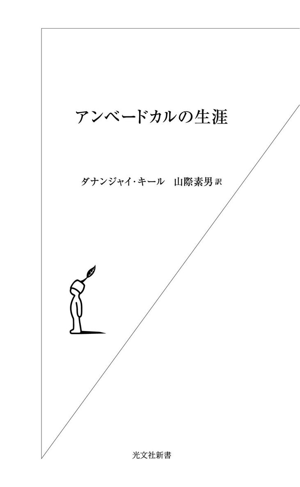
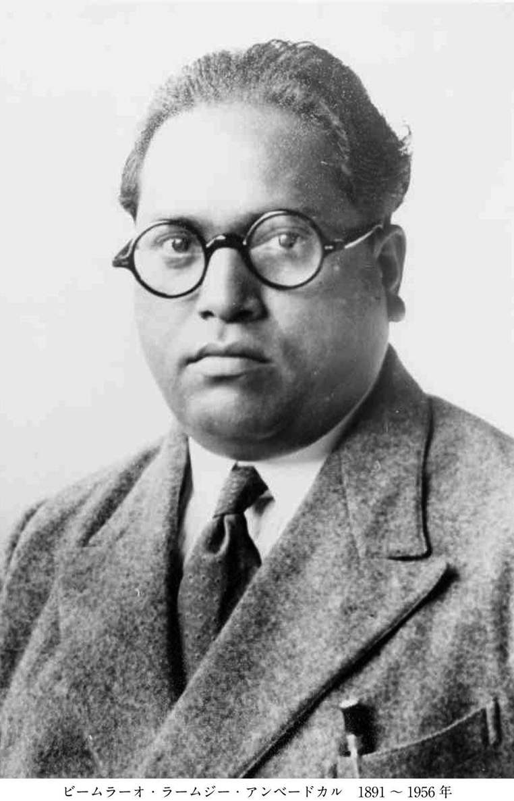
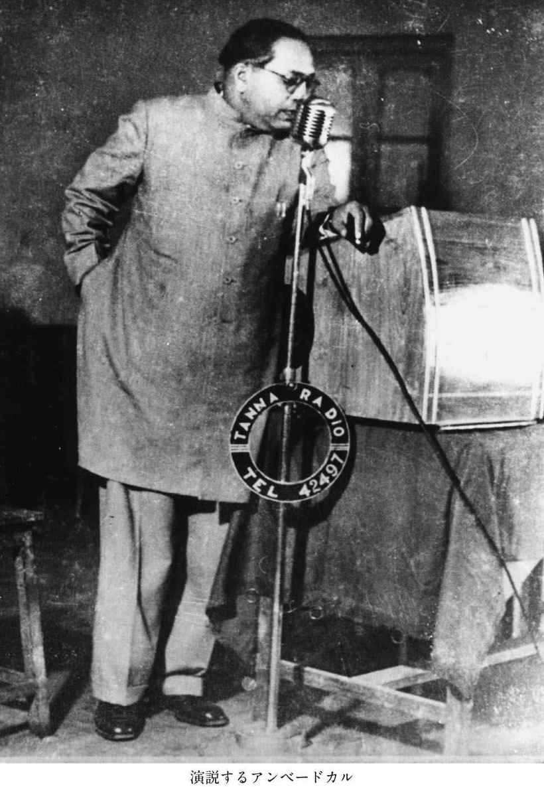
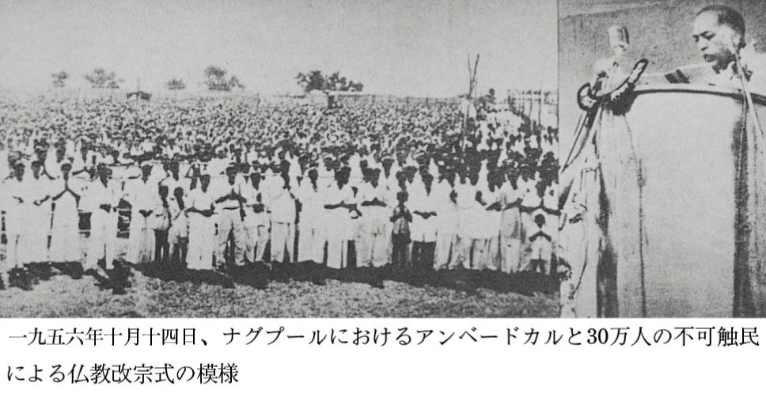
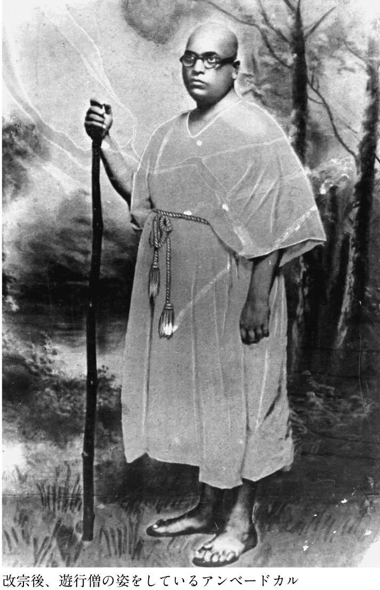
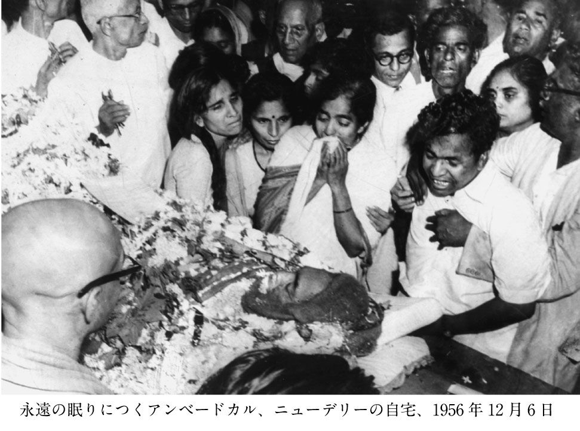
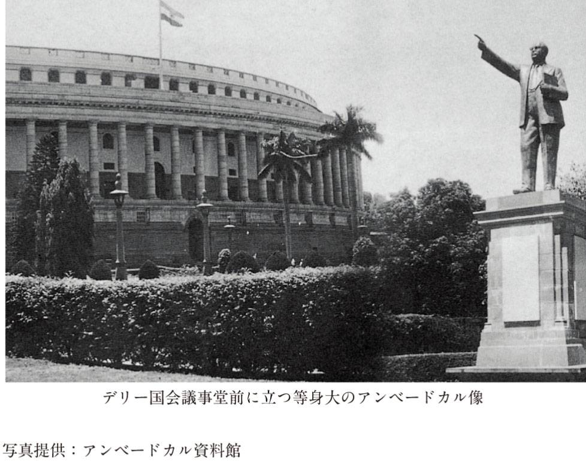

| アンベードカルの生涯 | |
| Ｄ・キール & 山際 素男 | |
| (2005) | |

※本書は、三一書房より刊行されました、『不可触民の父 アンベードカルの生涯』（一九八三年刊）と『新版 アンベードカルの生涯』（一九九五年刊）をもとに、若干の加筆、修正、削除を行い、再編集して新書化したものです。






この度、ダナンジャイ・キールの『アンベードカルの生涯』が復刻再刊されたことは大きな喜びである。
アンベードカルほど多才な、各方面で大きな仕事を遂行した人物は現代史上稀であろう。その存在はインドのみならず、日本はもちろん他のどの国をとっても類をみないといえよう。
三千年間、カースト制社会で家畜以下の存在として蔑まれ、差別され、人間的権利の総てを奪われてきた〝不可触民〟の子として生れ、遂に新生独立国インドの初代法務大臣としてインド憲法を作成し、〝不可触民制〟を犯罪として断じ、廃止させた。この一事だけでも稀有な出来事である。しかも最後に、〝ヒンズーとして生れても、決してヒンズーとしては死なない〟と断言した誓いを、仏教徒として成就し、インド仏教を復活させた。
その彼と共に仏教に改宗した三十万人のインド仏教徒は今や一億に達するという。この一大奇蹟を生んだのがアンベードカルであり、また逆説的にいえば、そのような人間を生み出したのはカースト制とカースト社会であるといえる。
現代史上類のない非人間的奴隷社会に戦いを宣し、打ち倒した途方もない戦士、巨人の物語が、本書『アンベードカルの生涯』なのだ。カースト制なかりせばアンベードカルもなかったであろう。
そのような存在が、その戦いの中から見出したのが仏教であり、畢生の書『ブッダとそのダンマ』である。だから日本のみならず、諸々の仏教国の既成の仏教教団、仏教者の信奉している〝仏教〟とは自ずから異質なものがあって当然といえよう。どちらが正しいかどうかではなく、そこにしか生れない、生れえなかった、必然的所産としての思想、人間観、世界観に基づいた世界的出来事なのだ。
また、彼の仏教観と他のそれが多くの点で共通し、通底する要素をもっているのは、仏教教典を通して生れた〝創造〟された世界なのだからそれも当然である。ブッダという存在が見出した世界、宇宙観はそれほど奥が深いのだと思う。
人間にとっての教訓は、人間は、宇宙という人間存在には永遠に解らぬ〝自然〟の中に在る生物であり、人間は人間という生物として〝最善〟の生を営めという教えしか最後には残らないのだろう。
ブッダ、すなわちシャカ族の子孫は、強大な国、敵に滅ぼされ、しかもインド各地に低階層の部族として散り散りに、ひっそりと、細々と生き残っている。人間社会の残忍さ、無慈悲さの中で滅ぼされつつ、人間よ善に満ちよ、という教えを遺していったブッダの思想は、だからこそ今日も求められ、慕われつづけているし、いくのであろう。アンベードカルは正にそういう無慈悲な人間社会を生き抜き、ブッダとまみえたのである。それが彼の見出した仏教なのだ。
そのような社会に抗するために、天は類稀な天才を授けた、としか考えようがない。その才能は近代社会の学問分野、すなわち政治学、経済学、社会学、歴史学、法学といった広範な世界に通暁させるほど豊饒なものであった。時には才能の赴くままに、新しい観点から不可触民の源流を見出そうとしたり、例えば〝シュードラとは何であったか〟などという実に興味深い研究を発表したりしている。そしてそこに不十分な見解や学問的不備を指摘されたりもしているが、一体それが何だというのか？ そんなことがあったからといって、アンベードカルに課せられた大使命と成就した業績をいささかも疵付けるものではない。
彼は優れた〝近代思想〟としての人権、人間、なかんずく女性の平等性、などを含む民主主義社会の根幹をなす新憲法と、新しい人間復活としての〝仏教〟という偉大な遺産をのこしていった。これ以上のことを一人の人間に、その一生の内に誰が要求できるというのか。
インドという国、土地は〝不思議〟な〝気〟の如きものが漂っている。不可思議な〝面白さ〟とでもいうものなのか。昏く昏く昏く、どこまでも昏く、そしてどこまでも明るい世界。それを感じたい人は、この『アンベードカルの生涯』と『ブッダとそのダンマ』を熟読玩味されることをお勧めする。
アンベードカルの仏教には〝悟りがない〟などという、悟りがなんであるのか知っているかのようなものいいをする人がいるが、己の人生とアンベードカルやその同朋たちの生涯とを対比してみるがいい。人間というものがまた違った姿で見えてはこないだろうか。
アンベードカルの生涯は人間性の偉大さであり、それを誘発した残酷無比な、我欲の地獄という人間性のもう一つの現実世界との戦いである。そのどちらか一つでも欠けていたら彼の生涯は成立しなかったであろう。人は今も同じ地獄と幸福の世界の狭間を彷徨っている。そこから如何に脱出するか。煩悩を捨てよ、などという下らぬ世迷いごとはいい加減捨てた方がいい。
煩悩の真っ只中に突入し、くぐり抜けた一人の人間の大英雄譚を本書で暫し楽しんでみてはいかがだろう。
本書を世に問うて下さった光文社の小松現氏に心から厚くお礼申し上げたい。
二〇〇五年一月
山際素男
目 次
１
アンベードカルは、貧しい不可触民の家に生れた。
不可触民というのは、ヒンズー社会の最下層階級であり、太古の昔からカーストヒンズー（不可触民以外のヒンズー教徒）によって〝触れるべからざるもの〟として忌避されてきた。
一九五〇年、インド新憲法がこの不可触民制を廃止するまで、不可触民階層は〝触れるべからざるもの〟、〝近寄るべからざるもの〟、〝視るべからざるもの〟という三つのクラスに区分され、徹底的に差別されてきた。その数約六〇〇〇万。三億のヒンズー教徒の二〇パーセント、五人に一人が不可触民であった（政府統計数字では、指定カースト民一三パーセント、指定山間部族民八パーセントとなっているが、実際は両者合わせて二五パーセントをはるかに超えているといわれる。ウエスト・ベンガル州などは三〇パーセント以上ともいう。詳しくは『不可触民と現代インド』〈光文社新書〉を参照されたい）。
不可触民の呼称は地方によって色々と異なり、アウトカースト、アンタッチャブル、パリヤー、パンチャマ、アティシュードラ、アヴァルナ、アンテャジャ、ナマシュードラなど様々の言葉で呼ばれている。
社会的差別は実に特徴的で残酷であり、その種類は枚挙にいとまがない。この人びとに触れることばかりでなく、その影、声さえも他のヒンズー教徒にとっては〝不浄〟であった。だから不可触民はカーストヒンズーの前では常に身をかくし、姿を見せることすらはばからねばならなかった。
特定の家畜を飼うこと、特定の金属製装身具を付けることも禁じられ、衣類、食物の中味、履物の種類にいたるまで厳しく規制されていた。
住居も、町や村外れの、不潔な、生活用水もない場所に定められ、木の葉や泥小屋以外の家に住むことができず、その暮らしは家畜以下であった。
人びとを何よりも惨めにし、苦しめたのは、村の共同井戸の使用をどこでも禁じられてきたことであり、自分たちの井戸を掘る力のない不可触民は、カーストヒンズーの憐みにすがり、その人びとが水を汲んであたえてくれるまで朝から晩まで井戸の周りで待つしかなかった。夏の激しい渇き、労働の後の渇き、生命を維持するために絶対不可欠な〝水〟すら意のままにならず、それを癒す手段さえ奪われていた。人びとは仕方なく腐った溜り水や汚水を掬って飲み、伝染病や病に冒されその最大の犠牲者になっていった。
不可触民の子供たちは、カーストヒンズー子弟のゆく学校に入れてもらえず、同じ神を拝み、祭事を行うのにヒンズー寺院に入ることは許されなかった。
蟻に砂糖を撒いてやり、犬やペットを可愛がり、他の宗教の人を喜んで客人として迎え入れるカーストヒンズーたちは、同じヒンズー教を信ずる不可触民には一滴の水すら惜しんだ。カーストヒンズーにとって不可触民は動物以下の存在であったのである。
都会では表面上このような光景は見かけることが少なくなったが、小さな町や村々ではいぜんとしてその姿は変っていない。
不可触民の苦しみはこれだけではない。人間として認められないこの人びとは、警察、軍隊を含む一切の公的サービスの対象から外され、総ての市民的権利を剝奪されていた。
人びとは当然のことながら代々同じ職業についてきた。それも、社会的に最も低い序列の、便所掃除、ごみ集め、靴職人、獣の皮剝ぎ、皮なめし、竹、籐細工、草刈りといった仕事である。少し運の良いものは小作人として畑を耕したり、農業労務者として雇ってもらった。かれらの大半は村の召使としてあたえられる食物、穀類、あるいは死んだ家畜や獣の腐肉を食べて糊口をしのいでいた。
社会的、宗教的、市民的権利の一切合切を奪われたこの人びとにとって、生活を向上させる機会は全くなかった。人びとは不可触民として生れ、不可触民として生き、そして不可触民として死んでいった。二五〇〇年もの間、その一生を永遠に〝人間〟社会に一度として受け入れられることなく。
不可触民制の起源は今もって謎である。ただそれがカースト制度に由来することだけは広く認められている。ヴェーダ時代（ヴェーダ聖典が成立した時代。紀元前一五〇〇年以後の数百年間）のアーリア人にはカースト制はなかった。しかし時が経つにつれて労働の分化と個々の適、不適、能力、好みに従って種々の職業についていった。学問にふけるものはやがてブラーミン（僧侶）となり、統治するものたちはクシャトリヤ（王侯、戦士）と呼ばれ、商売を生業とする集団はヴァイシャ（商人）となっていった。そして上記三階級に奉仕するものがシュードラ（労働者、農民）と呼ばれた。
しかし、この労働の分化原理は固定化し、世襲化され、どんな馬鹿者、邪悪な、堕落したものでもブラーミンであれば神に次ぐ高貴な存在と見なされ、最下層階級の生れのものはどれほど才能があろうとシュードラとして卑しめられた。かくてこの四つの区分は厳しく人びとを身分的、階級的にしばり、カースト制へと堕落していったのである。このようにしてかつて四つのヴァルナ（色を意味する古い語）として分けられていた区別が四つのカースト、即ち四姓制度へと変質し、本来の意味や目的とは関係のない社会的桎梏となってしまった。それに伴い、種々の異なった職業、地域性、異なった生活、食習慣、迷信、風習などが四つの主要カーストを更に分化させ、ついには三〇〇〇以上ものサブカーストを生み出すにいたった。
アーリア人が先住者との混血を嫌い、この制度を作ったという説もある。また、アーリア人に屈伏することを潔しとしなかった先住人たちの中には、アーリア人の妻子を略奪したりするものが現れ、散々かれらを悩ました揚句、結局征服され奴隷的身分に堕とされ忌わしい存在として扱われるようになった、とする説もある。
更に、不可触民は元々ブロークン・メン（散り散りになった部族民）であり、後に仏教徒になったという説もある。この人びとは正統派ヒンズーと同化せず、牛肉を食べることを止めなかったため〝不可触民〟として疎外された、というものもいる。
しかし、この差別制度に反対するインド人は誰もいなかったのだろうか？ もちろんいた。先ずブッダがそうであった。ブッダは不可触民制を批判し、不可触民を受け入れたのである。一一世紀にはラーマーヌジャ（一〇一六～九一。南インド出身の宗教家。中世ヒンズー教改革の先駆者）が現れ、不可触民を弟子に加え、彼の建てた僧院や寺院を人びとに開放した。時代が下るにつれ幾人もの聖者が平等主義を唱え不可触民制を攻撃した。ラーム・モーハン・ローイ（インドの宗教指導者――一七七二～一八三三。ブラフマ・サマージ――ウパニシャドに基づく一神教と西洋思想による社会、教育上の改革を主唱する近代ヒンズー教の運動――の創始者）とその信奉者によって唱えられた社会・宗教復古運動も時代の批判者であったが、近代インドにおける最も傑出した役割を果したのは、一八四八年プーナ（マハーラシュトラ州）にこの国で初めて不可触民のための学校を創設したマハトマ・フレー（ジョテラオ・フレー、一八二七～九〇。低カースト、マーリの出。夫人はインドで初めての女性教師となる）である。バローダ藩王国の藩王、シュリ・サヤジラーオ・ガエクワードは一八八三年、不可触民の学校を開いた。しかしヒンズー教徒は誰もこの学校の教師になろうとしなかったため、幾つ学校を作っても教師は回教徒に頼るしかなかった。
これらの人びとの努力はマハーラシュトラ州の不可触民を刺激し、ゴパル・ババ・ワランカルというマハトマ・フレーの弟子でもあった優れた指導者を生んだ。またダヤーナンダ（アーリヤ・サマージの創始者）が不可触民制撤廃のために大いに努力し、また南インドでは、コル・オルコット大佐が不可触民の学校を開設した。
２
新しい支配者となったイギリスの不可触民への態度はどうであったか。本国では農奴制を廃止し、近代的社会への大きな一歩を踏み出していたかれらは、インドの奴隷解放には全く無関心であった。かれらの帝国主義的支配と不可触民制に関しては不介入という態度は、カーストヒンズーの抑圧を間接的に支持することでしかなかった。
マラータ王国を征服したイギリスは、英国領インド帝国の仕上げに全力を上げ、ずる賢いイギリス人独特のやり方で徹底した植民地搾取体制を築いていった。
かれらの懐柔策の第一歩は、支配者の交替で一番困っていたブラーミン階級を手なずけることであった。イギリスは知識階級であるブラーミンに英語をはじめ新時代に相応しい教育を授け、かれらの有能な助手に仕立てようとした。
学問、教育総てはブラーミン階級がこれまで何千年もの間独占し、かれらの特権であった。イギリス政府はブラーミン以外のカーストにも学問への道を開き徐々に教育を広めていった。ブラーミンは、ブラーミンカースト以外にサンスクリットを教えることに猛反対し、かれらの特権を守ろうとことあるごとに抵抗した。なかでも低いカースト、特に不可触民の啓蒙を恐れた。イギリスもブラーミンの恨みをかうのを恐れ不可触民の教育にはなかなか手をつけなかった。イギリス植民地時代にも不可触民だけは文明開化のラチ外におきざりにされていたのである。
このような状況をフルに活用したのがキリスト教団である。かれらは低カースト、不可触民の教育にも手を伸ばし、様々の形で援助をあたえこれらの階層に浸透していった。人びとが外国人の方がブラーミンよりましだとすら感じはじめたのはこのためでもある。
この頃、ちょっとした事件が表面化し、イギリス政府は決断を迫られた。それは、一八五六年、ダルワーの公立学校長がある不可触民少年の入学を拒否するという事態が起ったのである。ボンベイ政府は考慮の末、一八五八年次のような声明を発表した。「カースト、人種を理由にいかなる階級の人間に対しても教育の機会を拒否する公立学校には、政府の援助をあたえない」、「総ての公立学校はその全臣民（その頃、インド人は英国王の臣下として扱われた）に対し差別することなく開放すべきである」という画期的なものであった。しかしこの指示は現実には実行されなかった。カーストヒンズーの当事者たちは、この指令を、インドの現実を知らぬイギリス官僚と一部インド人改革主義者たちの感傷的ヒューマニズムと嘲り、無視したのである。
一八九〇年代にインドは新しい激動の時代に入っていった。マハーラシュトラでも社会、政治的復古運動が高まり、運動の指導者たちは大きなジレンマに立たされた。政治的後進性と同時に、この国の社会的後進性、即ち、カースト制、不可触民制、幼児結婚、寡婦再婚、婦人解放といった問題が人びとの前に大きく立ちはだかったのである。社会改革が先か政治改革が先か、という議論が喧ましく叫ばれた。この論議に加わった人びとは、真剣であり、この国最良かつ、最も能力のある、高い志と勇気を持つ、深い学識と力を有したインド人であった。
イギリスの政治家、ジャーナリズムは慎重な態度で事態を見守り、これらの人びとに、政治活動にふけるよりも先ずこの国の社会の歪みを正すことに力を注ぐよう勧告した。このかれらの意図はもちろんインド人の政治運動の矛先を逸らせるためであった。
だが、指導者たちはごまかされなかった。人びとは、社会、政治両面の改革を同時に進行させようと志した。
この時代の社会改革家の筆頭にはなんといってもラーナデ（マハーデーヴ・ゴーヴィンド・ラーナデ。一八四二～一九〇一。マハーラシュトラ州ナーシクの出。裁判官、教育家。幼児結婚、カースト制に反対し、寡婦の再婚を奨励した近代インドの先駆的社会改革運動家）を挙げねばなるまい。その広範な社会改革への識見において彼の右に出るものはなかった。またアガルカル、バンダカル博士の二人も深い学識、見識、情熱的活動において時代を代表する人たちであった。
政治分野では、ティラク（バール・ロカニヤ・ガンガーダル・ティラク。一八五六～一九二〇。ガンジー登場以前の時代に活躍したマハーラシュトラ州出身の独立運動指導者）その人をおいて右に出るものはいない。その熱情、戦闘精神、学識ともに人びとを圧倒せずにはおかなかった。彼は後にヒンズー社会の保守層を結集し、社会改革への方向を巧みに避けながら、政治的不平等が何よりも優先し、国民的共通の場を作り出すのだと主張した。
学識の深い、著名な裁判官であったテラングは、社会改革は出来るだけ摩擦の少ない形で、政治活動と同時に行うべきだと主張した。これらの批判は当らずといえども遠からぬものがあった。社会改革派の意見は、もっと現実的で率直であったが、政治改革派は実際的ではあっても、どこかで現実を避けているところがあった。かれらは政治改革と同時に社会的歪みを是正しようとしたが、もし本当に社会的、宗教的制約や不平等が取り除かれれば、かれら自身の威信や特権、社会的地位が危くなるのを恐れてもいたのである。だからかれらは、ヒンズー社会に真に健康な基礎をあたえるような運動にはことごとに反対せざるをえなかったのだ。
このような時代の雰囲気の中で、ビームラーオ・ラームジー・アンベードカル博士は生れたのである。
１
アンベードカル家は、ティラクやカルヴェ、パランジュペといった人物を数多く輩出したコンカン地方（現プーナ地区）の出である。先祖が住んでいた所は、ラトナギリ地区（ボンベイ、ゴアの中間にある西海岸地方）のマンダンガッドという小さな町から八キロほど離れたアンバーワデーという村であった。一家は村では幅をきかせていた。家は代々村の女神の御輿役で、お祭りにはいつも先頭に立って練り歩いた。
アンベードカルの祖父、マーロージ・サクパールはマハールのいい家の出であった。
このマハールという種族は、インド不可触民階級の中では際立った存在であった。壮健で順応性があり、賢く、勇気と戦闘心に富む秀でた資質に恵まれた集団であった。それだけに誰よりも自分たちの置かれた立場に敏感で、社会的不平等に早くから目覚めていた。一説によるとこのマハール族はマハーラシュトラの先住民族であり、マハール戦士族と称ばれていたという。マハールの語源はマハー・アリ――偉大な敵――という言葉だともいう。マハール族はヨーロッパ人と接触した最初のインド人である。かれらは後に、マドラス地方のパリヤーやビハールのドゥサドたちと同じように、東インド会社のボンベイ傭兵として活躍した。
祖父のマーロージ・サクパールはこのボンベイ傭兵の退役軍人であり、二人の子を残した。一人は息子のラームジー、つまりアンベードカルの父であり、もう一人は娘のミーラーであった。
一家は熱烈なカビール派（一五世紀、ベナレスの回教徒の職工カビールの始めたヒンズー教改革運動）で、憐み、慈愛、諦念といった人間的性情を神に帰することによって慰めを見出すバクティ思想を強く抱いていた。この派の信奉者はクリシュナやラーマ神の中に道徳的糧を見出した。しかし信徒の心を最も魅いたのは、カースト制を糾弾して止まなかった始祖カビールの教えによってバクティ派（ヒンズー教のヴィシュヌ神、シヴァ神に対する個人的崇拝を中心とした宗教的民衆運動）がカースト制の頑さをもっていないことであった。不可触民のかなりの部分がカビール派に転向したのはこのためである。
ラームジー・サクパールには一四人の子供が生れ、アンベードカルはその末子であった。母親は貞節な信仰心の厚い、非常に自尊心の強い婦人であった。
この伝記の主人公には、出生にまつわる不思議な物語が残されている。それは釈迦誕生譚にも似た逸話である。
ラームジーの叔父の一人に昔家を捨て隠者になった人がいた。その人がたまたま仲間と一緒にラームジーたちの住んでいる村を通りかかった。ラームジーの親戚の一人がその老人に気づき彼に知らせた。ラームジーは走ってゆき隠者に家へ立ち寄り祝福を授けてくれるよう頼んだ。年老いた隠者は戒律によって家を訪れることができぬ代りにひとつの吉兆を授けていった。それは今度生れる男の子は必ずや歴史に名を残すであろう、というお告げであった。そのお告げは適中した。やがて生れた子供はビームと名付けられ、インド歴史に不滅の足跡を残すことになった。誕生は、一八九一年四月一四日であった。
母のビーマバーイーはムールバードカルというやはり不可触民一家の出である。故郷はボンベイ州のターナ地区にあるムールバード村で、不可触民としては珍しく裕福な家庭であった。ビーマバーイーは広い額、巻き毛、くりくりした輝く眼をし、きれいな肌の持主だった。彼女の父も六人の叔父も皆軍隊に勤めていた。一家は熱心なカビール派で軍隊でもカビールの思想について常に人びとと熱烈な議論を交わしていた。
ビームが二歳の時、準少佐であった父は軍隊を退き、中インドからコンカンのダポリという所に引っ越した。数年後一家は再びボンベイに移り、ラームジーはサーターラーの軍兵舎に仕事を見つけた。サーターラーにきて間もなく、母親のビーマバーイーが亡くなった。ビームは六歳であった。一四人の子供の内生き残ったのは三人の息子、二人の娘だけで、他は早く他界した。幼いビームの面倒を見てくれたのは叔母のミーラバーイーで、末子のビームを我が子のように愛した。
ラームジー・サクパールは非常に勤勉で、堂々たる体軀――ビームの巨軀は明らかに父親譲りである――の持主ながら、明るい、話し好きの人物であった。そして誰よりも熱心なカビール信者であり、日夜の勤行を欠かしたことがなかった。子供たちも父親とともに讃美歌を歌い祈りを捧げた。
ラームジーはまた子供たちにラーマーヤナ（インド二大古代叙事詩のひとつで、ラーマとシータの冒険の物語詩）やマハーバーラタ（ラーマーヤナと共に、古代叙事詩として有名。聖典のひとつとされるバガヴァッド・ギーターはこの一部）といった偉大な叙事詩をよく読んできかせたり、マラータの諸聖人の詩などを朗唱してやったりした。このような日常は子供たちの精神、人格形成に大きな影響をあたえずにはおかなかった。ラームジーはマラーティ語（マハーラシュトラ地方の言語）の達人でもあり、一四年間、軍学校の校長でもあったから、子供たちにとってこの上ない優れた言葉の教師でもあった。マラーティばかりでなく英語にも堪能であり、数学も得意であった。彼はまた酒を飲まず菜食主義者であった。スポーツも得意で若い頃はクリケット、フットボールの選手として鳴らしたものである。自らに厳格であると同時に、豪快な面を持つラームジーは自分たちの階層の運命に心を砕いた。一八九二年イギリス政府が財政的理由でマハール族を軍隊に雇わないという決定を発表するや、ラームジーは直ちに行動を起し、ラーナデの協力をたのみ法令の撤回運動の先頭に立って活躍した。後年ボンベイ総督と会見したとき、開発計画中の建物の幾つかを不可触民のために開放するよう直訴したこともある。このような父親の性格、優れた知能、マハール社会への献身性などが、ビームにも受け継がれていったのである。
２
サーターラーで初等教育を終えたビームは兄とハイスクールに通うようになった。この頃、彼は早くも不可触民制のなんたるかを身にしみて味わわされた。
ある夏のこと、彼は兄と一緒に幼い甥を連れ、ゴレガオンという所で働いている父に会いに行った。ゴレガオンは汽車でマスールという駅までゆきそこから長い道程があった。手紙の行き違いで、待てど暮らせど父親は迎えに現れなかった。長い間待った揚句、しびれを切らしたビームたちはしぶる駅長をやっとの思いで説得して牛車を世話してもらった。駅を出るか出ないかに、カーストヒンズーの牛車曳きは、身なりのいい〝お坊ちゃん〟たちが〝不可触民〟であることを知り、烈火の如く怒り出した。不可触民めが自分の大事な車と〝お牛様〟を穢したというのだ。直ぐ降りろ、とわめき立てる牛車曳きを、運賃を倍払うからとなだめ、兄が代って手綱を取った。牛車曳きは車から降り、後からふん反り返ってついてきた。夕暮から夜中までうだるような夏の道をかれらは一滴の水も飲まず牛車にゆられつづけた。不可触民に水をくれる家など途中一軒もなかったのである。たまりかねて一杯の水を乞う少年たちをカーストヒンズーたちは冷たい眼で見下ろし、首を横に振り、どぶ水の方に顎をしゃくるか、早く行けと手を振るだけであった。かれらの誰一人として口をきこうともしなかった。またその数日後、余りの渇きに耐えかねたビームは共同井戸の水をこっそり飲んでいるところを見つかり、体中あざが出来るほど殴られた。
またある時、彼の姉が髪を切ってくれる本当の理由を知り大きなショックを受けた。同じ宗教を信じ、同じ村に住むビームたちを、水牛の頭でも喜んで剃る床屋が、剃刀が〝穢れる〟といって拒否していたからであった。
感じ易い年頃の少年にとって、このような経験がどれほど残酷なものであるか。それは魂に押された焼ごてとなって一生消えることはなかった。
少年ビームは、幼い時からこのような屈辱に取り囲まれ、ひたすら耐え忍ぶことを学んだ。それはまた彼の属する総ての階層が何千年となく経てきた日々でもあった。
ビームはしかし、そのような屈辱に対し決していじけたりはしなかった。逆に喧嘩早い、機智に富んだ、勇敢な少年だった。たとえば、ある土砂降りの日に友達と賭をし、傘もささず学校までずぶ濡れになっていったことがある。ビームに目をかけていたブラーミン教師は、濡れ鼠になって震えているビームを見つけ、自分の家へ連れてゆき、入浴させ、代りの衣服を貸してやったこともある。
ハイスクール時代、別のブラーミン教師の一人がビームを愛し、可愛がってくれた。その教師は自分の姓名がアンベードカルであるところから、生れ故郷の名を取ってアンバーワデーの姓を名乗っているビームを、学校の書類にアンベードカルと記載した。それがそのまま終生彼の姓となったのである。
アンベードカルは終生この第二の名付親のことを忘れなかった。後に、イギリスとの第一回円卓会議に赴くとき、この教師から祝いの手紙をもらったが、彼はそれを宝のように大切にしまっていたという。
だがこういう教師に出会うことは珍しかった。ビーム兄弟はいつも教室の隅っこに、家から持ってきたズック袋を床に敷いて座らせられた。それが不可触民の子弟への当然の扱いであった。多くの教師は面と向って教えることも、質問することすら避けた。言葉をかけるだけで〝穢れる〟からだ。兄弟はのどが乾くと、誰かが水をのどに流しこんでくれるのを待つしかなかった。飲水に手を触れることは絶対許してもらえなかったからだ。
こんな環境の中でビームは勉強に励んだだろうか。否、全然学業には興味を示さなかった。彼は遊びに夢中になり、園芸に凝って小遣いを総て新しい苗木や種子に使ってしまった。それにあきると家畜の番や山羊を飼うことに熱中した。
「サーターラー駅で荷物運びをしているのが叔母にばれて、そんなみっともないことを、とひどく嘆かれたこともある。でも叔母は私が可愛いのでお仕置きはしなかったよ」と、アンベードカル自身語っている。とにかく家にじっとしておれない少年であった。
ビームが九歳の時、父のラームジーが再婚した。ビームは第二の母親に馴染めず、死んだ母の装身具を身につける〝女〟を嫌った。彼は家を出て独立しようと秘かに思った。姉たちから、ボンベイの紡績工場でサーターラーの男の子を紡績工に雇っているときき、早速ボンベイへ行こうと決心した。しかし旅費をどう工面したらいいのか。
「思案の末、叔母の財布を失敬することにした。いつも横に寝ている叔母から財布をくすねるのは容易いように思えたが意外に難しかった。手首にしっかり巻きつけている財布のひもを解くのに四晩もかかった。やっとのことで財布を手にし、中を見るとたった八アンナ（一ルピーが一六アンナ）しかないじゃないか。これではとてもボンベイにはゆけない。それに四晩まんじりともせず叔母の財布を盗むという〝恥ずかしい〟行為に私はへとへとになってしまった。もう二度とこんなことはすまい。もっと別のやり方で堂々と家を出て独立しようと思った。今思うと、この夜の経験が私にとって大きな転機だった。
その時から私は生れ変ったように勤勉な生徒になった。つまり、うんと勉強して、一日も早く学校を出て働こうと思ったのだ」と、後年アンベードカルは述懐している。
３
やがてアンベードカル一家はボンベイへ移った。家は二階建の粗末な共同アパートの小さな一室で、周りは労働者たちのスラムだった。娘たちはすでに結婚しボンベイに住んでいた。兄弟はマラータ・ハイスクールに入学し、ビームはそこでも熱心に学んだ。父の薫陶の甲斐あって、ビームの英語力はクラス一となり、後年、第一級の著述家として名を成す下地を蓄えていった。
この頃からビームは大変な読書家、乱読家になった。彼は学校の教科書などよりもっと幅広い知識を吸収することに貪欲であった。ティラクやサーヴァルカルたちがそうであったように、優れた文人政治家となる人びとはみな早い頃から学問に目覚め、深い知識や歴史への洞察力を養ってゆくものである。このような人びとはクラスでの席次など大して意に介さず、将来の国民的指導者たるべき素養を培ってゆく。ブラーミンであるティラクやサーヴァルカルは、生れながらにして開かれている学問への道をひたすら邁進してゆけばよかった。しかし、ビームにとってそれは茨の道であった。不可触民制と非識字社会が彼を取り巻いていた。父のラームジーはその中にあって最も良き味方であった。ラームジーは娘たちから借金をし、時には彼女たちの装身具を質に置いてまでして、ビームに本を買いあたえた。息子の将来に大きな望みを托するラームジーに応え、ビームはひたすら勉学に励んでいった。
数カ月後、父はビームを有名なエルフィンストーン・ハイスクールに転校させた。ビームは一層学業に熱を入れた。しかし、勉学に集中するには一部屋に家族四人という環境は余りに不適であった。家財、薪、台所用具が家中所狭しと散らかり、炊事の煙が部屋に立ちこめていた。枕元で牝山羊まで時ならぬ鳴声を立てた。
ラームジーは彼一流のやり方でこの難問を解決した。ビームを早い内に寝かせ、自分は夜中の二時まで起きていて、息子を起すと交替にベッドに入った。ビームは暁方まで勉強し、また少し眠り、再び起きて学校へ駆けていった。
公立学校の手前、表面立った不可触民への侮蔑はなかったとはいえ、カースティズムの偏見はいぜんとしてつきまとった。
ある日、珍しく教師がビームを黒板の前に立たせ問題を解くよう命じた。とたんに教室中が大騒ぎになった。他の生徒が一斉に黒板の後に置いてある自分たちの弁当を取りに走り出したのである。ビームが黒板に近づき、かれらの弁当を〝穢す〟前に、安全なところへどけようとしたのだ。ビームはその屈辱を孤り唇を嚙んで耐えねばならなかった。
教師の多くは不可触民の子弟が学校にきているのを快く思っていなかった。中にはビームに向って「お前なんか勉強したって無駄だ」と明らさまに嘲笑うものもいた。度重なる厭味に、ビームはついにたまりかね、立ち上って「余計なお世話だ。授業をつづけてくれ」と叫んだことすらあった。
ビーム兄弟にとって生涯忘れることのできない悔しさは、二人だけにはどうしてもサンスクリットを学ばしてくれなかったことである。何千年もの間、ヒンズー教の聖典ヴェーダは、シュードラ、不可触民にとってはタブーであり、立ち聴きしただけでも耳に鉛を流しこまれた、という話は余りに有名である。ティラクは、真のヒンズー教徒とはヴェーダを信ずるものであるといったが、ヒンズー社会の七〇パーセントはヴェーダを学ぶことは愚か〝聴く〟ことすら禁じられていたのである。二人は仕方なくペルシャ語を第二語学に選ぶしかなかった。
ハイスクールを出てからビームはサンスクリットを独学で学び、教師にもついて自らサンスクリット学者と称ばれるようにもなったが、「ペルシャ語はその叙事性の豊かさ、文法、政治、哲学、論理性、ドラマ、批評精神などの面からいってもサンスクリットには遠く及ばない」と語っている。
ビームは一九〇七年、エルフィンストーン・ハイスクールを卒業し、大学入学資格試験にもパスした。兄のアーナンドラオは経済的理由からすでにハイスクールを中退し、働いていたが、父と二人でビームだけは教育を続けさせてやろうと誓い合っていた。試験の成績は七五〇点満点中二八二点であったが、教科書の勉強よりもっと他のことに熱中し、大きな野心を抱く少年たちには珍しいことではない。
それに不可触民というハンディを背負った少年にとってこの成績は特筆に値するものであった。
周りの人びとはビームの快挙を祝して祝賀会を催してくれた。祝賀会は有名な社会改革家Ｓ・Ｋ・ボーレ主催の下で開かれ、多くの人が集まった。その中に著名なマラーティ作家のクリシュナジ・アルジュン・ケールスカルがいた。ケールスカルは勤勉なビームが気に入り、自分の著作を何冊か貸しあたえた。その一冊に『ゴータマ・ブッダの生涯』という本があった。ケールスカルはラームジーにビームを大学へやる積りかと尋ねた。ラームジーは、経済的に難しいと答えはしたが、多くの人びとに期待されるわが子を前に、なんとしてでも上の学校へ入れてやろうと決意を固めた。
４
大学入学資格試験に合格して間もなく、ビームに結婚話が持ち上った。当時としてはこの年齢の結婚は早すぎるどころか遅い位であった。長年の習慣でもあり、父親の意志を尊重してビームは結婚の意志を固めた。父親のラームジーは嫁選びに苦心した。一度は結納を交わしておきながら、後で気が変わり断ったため、パンチャヤット（カーストの長老会議）に罰金を払わされたこともある。やっと決まった相手は、ラーミーという九歳の娘であった。父親のビク・ワラングカルは、ダポリという町のポーターであった。
一七歳の少年と九つの少女の結婚式は、ボンベイの町市場を借りて行われた。夜、市場が閉じた後汚水が流れる広場で新郎新婦は石の台に乗って式を挙げた。だが、結婚式は盛大に行われ大勢の人が集まった。広大な市場の広場全体が結婚式場なのだから人がいくらきても困ることはなかった。朝方まで人びとは広場を賑わし、漁師のおかみさんたちが魚を市場に運びこんでくるまで宴会はつづけられた。
一方ビームラーオ（ビーム）はボンベイのエルフィンストーン・カレッジに入学した。不可触民としては初めてのことであり、またとない機会であった。ビームラーオは前にもまして学業に励んだ。しかし、健康を害し、一年休学した後、中間試験を通ったところで父のラームジーの財政が行きづまってしまった。それを知った作家のケールスカルが救済の手をさしのべてくれた。バローダ藩王国の藩王サヤジラーオ・ガエクワードは、丁度その頃ボンベイの公会堂で演説し、有能な将来性ある不可触民の子弟に教育上の援助をあたえると約束していた。ケールスカルは早速藩王の元に出向きビームラーオのことを話した。藩王はビームラーオと面接し、その優秀性を認め、月額二五ルピーの奨学資金を約束してくれた。
エルフィンストーン・カレッジのミューラーという教授がビームに本を貸したり、衣服をくれたりして目をかけてくれたが、周囲の冷淡さはいぜんとして変らなかった。ブラーミンである寮の管理人は終始彼にお茶や水すらあたえるのを拒否する有様であった。
一九一二年、ビームは大学卒業試験にパスした。この時の試験でトップだったのは、後、アンベードカルがボンベイに創立したシッダールタ・カレッジの校長になったＡ・Ｂ・ガジェンドラガドカルであった。
この頃、インドの政情はようやく騒然としつつあった。言論弾圧、集会の禁止など、英国政府の次々に下す政治的抑圧に対する抗議の声は日増しに高まっていた。ティラクのマンダレイへの追放、サーヴァルカル兄弟のアンダマン諸島追放、その他の指導者、ジャーナリストの投獄などが相次ぎ、幾人もの愛国的青年たちが刑場の露と消えていった。
これら一連の出来事はアンベードカルの愛国心を刺激し、後に彼の有名な著作『英領インドにおける地方財政の発達』の中で、この当時の政府のやり方を厳しく批判し、他のどの諸国にも見られぬほど抑圧的であったと記している。またその中で、イギリス官僚政治の保守性、抑圧性、無責任さを非難し、行政サービスにのみ金をばらまき、教育、産業の育成に無関心であったことを指摘している。
特にモーリ・ミントー改革案（一九〇九年、当時の国務大臣ジョン・モーリとインド総督ミントーの二人が作成したインド政治の改革案）に対する彼の態度は注目に値する。前記論文の中で、一九世紀後半から二〇世紀初頭にかけての、各時代の立憲政治の発展過程を追いながら、彼は次のように述べている。イギリス政府は立法の独立性を保とうと真剣な努力を払ったのは確かだが、同時にそれを抑圧するという矛盾したことをやってきた。インド議会が有名無実な存在でしかなかったのは、それが、行政のない議会制度であり、立法による保障のない行政機関であったからだと指摘している。また、インドの行政機関は、インド社会に働く生きた力関係に無関心であるが故に、建設的方向に向って何ひとつ確かなことができなかったのだ。かれらはインド社会の困窮、苦痛、願望、欲求に責任を負おうとはせず、教育を広めず、スワデーシ（国産品愛用）を無視し、ナショナリズム的傾向のあるものは一切斥けてきたからである、といっている。
ビームラーオ・アンベードカルは大学卒業後、父親の強い反対にもかかわらず、彼の保護者であるバローダ藩王国政府に就職した。彼はバローダ藩王国軍の将校に任命されたのである。恐らく、彼はイギリス政府の役人になった時、上位カーストヒンズー官僚が独占する官庁でどのような目に遇わされるかを十分見抜いていたにちがいない。
だが、ビームはこの任務について僅か一五日目、父危篤の電報を受け取り、直ちにボンベイへ向った。途中スーラト駅で下車し父へのお土産の菓子を買おうとしている間に汽車に乗り遅れ、ボンベイに着くのは翌日になってしまった。
ビームを迎えた父は、もはや物もいえない程弱っていた。父は黙ってビームの頭をなで、痰の詰まったのどをぜいぜいと苦しげに鳴らした。最愛の息子に最後の言葉をかけようと必死の力を振りしぼったのであろう。しかし、それが彼の最後の別れを告げる仕種であった。ビームは男泣きに泣いた。人びとは慰めの言葉もなく、身を震わして泣き崩れるビームを見守った。一九一三年二月二日。それはビームの人生において最も悲しい日であった。
最後まで、勤勉で、禁欲的であり、献身的で、志を高く持してきた不可触民、サブヘダール・ラームジー・マロージは貧困の中に死んでいった。しかし、彼はこの国に、社会に彼の気づかぬ偉大な遺産を残していったのである。自分に似て世俗的誘惑に抗する強い意志と、同時代人には稀有な深い精神性を持った息子を、彼の遺志を継いでこの世の不正ととことんまで闘い抜いた男の中の男を、人びとのために残していったのである。
１
ビームラーオ・アンベードカルは今や自分の足でしっかりと立って歩まねばならなかった。彼の貪欲な知識欲と燃えるような志は、小さな一藩王国の雇人で満足することはできなかった。そのような彼に好機が訪れた。バローダ藩王は幾人かの学生を選んでアメリカのコロンビア大学へ留学させる計画を立てたのである。アンベードカルは直ちに藩王に会い、これまでの彼の生い立ちを詳しく話した。藩王は彼の熱意に打たれ、アメリカ留学に応募するようすすめ、他の三人の学生と共にアンベードカルを派遣することにした。
一九一三年六月、アンベードカルはバローダに呼ばれ、教育省次官の差出す書類――それには定められた課目を修得し、学位を取得した後一〇年間、バローダ藩王国に勤めるべしという契約条項があった――にサインした。
その時代のインドにとって、それは稀有なチャンスであった。まして不可触民の子弟には夢にも考えられない出来事である。第一級のインド人政治家の中でアメリカに留学したのはアンベードカルが恐らく最初であろう。他には一九三〇年代の初め、社会主義者ジャヤプラカシュ・ナラヤンがアメリカに留学した位のものである。
アンベードカルは同じ年の七月、ニューヨークに着き、一週間大学の寮に入った。しかしそこの食事がひどく不味く、おまけに牛肉料理ばかりだったのに閉口し、一一四番街のコスモポリタン・クラブに引越した。以来そこのリビングストン寄宿舎に、パルシー教徒（ゾロアスター教を信じるペルシャ系インド人）の学生ナーヴァル・バーテーナと起居を共にした。バーテーナとはその時から終生変らぬ友情を結んだ。
ニューヨークでの生活は総てが新しく、新鮮な経験の連続であった。アンベードカルはインド人留学生や仲間と連れ立って街を自由に歩き回り、好きな時に本を読み、書き、散策し、風呂に入り、何よりも平等の気分を楽しんだ。食事は決まった時間にきちんと取り、それもテーブルクロスや眼にしみる白さのナプキン付のテーブルでだ。コロンビア大学での生活は彼にとってひとつの大きな啓示であり、新世界であった。彼の知的水平線は大きく広がり、新たな存在意義が確固として心に芽生えてきた。
この頃の心境を、彼は父の古い友人の一人にこう書き送っている。この新世界にきて、益々自分の仲間である〝虐げられた〟人びとの幸福を希うようになっている。そしてより多くの改革精神に目覚めた仲間が生れることを冀っている。また〝人世には波がある。時には満ち潮に乗って幸運へ向うこともある〟というシェイクスピアの言葉をそえ、不可触民社会の幸福のためにどんな機会も逃さない積りだ、とその覚悟のほどを示している。
彼は同じ手紙の中で、不可触民社会の弱点を指摘し、偉大な救世者の片鱗をうかがわせるに足る鋭い洞察力をもってその解決法を示唆している。
「われわれは今こそ、親は子供を作るが、子供の運命には関係がないという考えをきっぱり捨てるべきだと思います。親こそは子供の運命に最も係わりがあり、運命を形作るものだと思います。もしこの原則を自覚し、努力するならわれわれの幸せはもっと早く訪れるでしょう。そして、女子の教育を男子と並行して進めてゆくなら、その成果は娘たちの上に表れ、われわれの社会全体がどれほど進歩してゆくか分りません。
ですから、自分たちの周りから先ずできうる限り教育の重要さと意義を理解させ、実行してゆく使命がわたしたちにはあると思います」
ここには、すでにアンベードカルの思想の基礎をなす考えが明確に述べられている。即ち、自尊心と自立心を養い、無知なるが故に自らの運命をあきらめ、無力感に陥り、神の定めた運命として自らの地位を認めようとする敗北主義への反逆である。
アンベードカルは、このような思想を抱く自分が、名もなく縁故もなしに世を渡ってゆくことがどれほど大変か良く分っていた。彼にある〝もの〟は自分の努力と才能でしかないことを。
彼は初めの夢見心地から醒めると、本来の勤勉さと徹底性を取りもどした。もはや金持の息子たちと大学生活をエンジョイする気持は毛頭なかった。劇場通いや市内見物も止め、ひたすら学問に打ちこんでいった。食事も簡素であった。巨漢であるアンベードカルは、食べさせれば幾らでも食べかねない旺盛な食欲の持主だったが、彼は我慢した。一杯のコーヒー、二枚のトーストに、一切れの肉か魚。一日一ドル一〇セントが彼の全食費であった。彼は奨学金の中から毎月国元へ送金せねばならなかったのである。
アンベードカルの宿願は大学の最高学位だけではなかった。彼は科学、政治、倫理哲学、人類学、社会、経済学に及ぶ広大な分野に挑み、自分のものにしようと奮闘した。その頃のアンベードカルを知る友人たちは、わがことのように誇りをもって、彼がいかに寸刻を惜しんで勉学に励んでいたかを語っている。
アンベードカルが特に魅かれた教授がいた。彼の名はＲ・Ａ・セリグマン。シドニー・ウエッブの紹介で知合ったラーラー・ラージパット・ラーイの友人であった。アンベードカルは彼の特別許可をえ、彼のクラスにはどこでもついてゆき講義を聴いた。一日一八時間のたゆみない勉強の末、二年後の一九一五年、彼は「古代インドの商業」という論文で首尾よくＭ・Ａ（修士）を取得した。ついで一九一六年、「インドにおけるカースト。その機構、起源並びに変化」という論文を人類学セミナーで発表した。そこで彼はカーストの本質は同族結婚にあると述べており、カーストは閉鎖社会であり、恥知らずで悪魔的なマヌが法典化するずっと以前から存在していたものだといっている。そして、カーストは単独では存在しえず、複数でのみ存在するものだと結論している。
以後、アンベードカルは矢継早に論文を発表し、人びとの注目を浴びていった。
次に発表した「インドの国益――歴史的・分析的研究」は八年後補筆されて『英領インドにおける地方財政の発達』と題しロンドンで出版されたが、彼はこれによってコロンビア大学から正式に博士号を授けられたのである。
この論文の中でアンベードカルは、確かにある程度の物質的進歩は認められるが、自由のない平和や秩序に人間はいつまでも満足していることはできない。インド政府の政策が、英国産業、製造業者のために仕組まれたものであることを知らぬものは誰一人としていない。どんな国にも、社会的抑圧と不正に苦しむ虐げられた階層がいるものだ。政治権力は正にそのために必要とされる、と断じている。
この有名な本は、国会での討論に度々引合に出されたり、役人の参考書として用いられ、経済学を学ぶ学生の手引書として広く読まれるようになった。出版後間もなくアンベードカルは、インド通貨王室委員会に呼ばれ証言を求められたが、彼の本をそれぞれ手にした委員会のお歴々を前に、アンベードカルはさぞ愉快に思ったにちがいない。
アメリカ滞在中、アンベードカルの心に強い印象を刻みこんだものが三つあった。一つは合衆国憲法、なかんずく黒人の解放を宣言した憲法第一四次改正であり、もう一つは、彼の滞在中、一九一五年に死んだ、偉大な黒人指導者であり教育者であったブーカー・Ｔ・ワシントン。プラグマティズム哲学のジョン・デューイも大きな影響を彼にあたえた一人であった。彼の授業には欠かさず出席していたという。
コロンビア大学で立派な成功を収めたアンベードカルは、学問のメッカであり、あらゆる分野の才能の憧れの的であるロンドンに目を向けた。一九一六年六月、彼はアメリカを去り、旬日にしてロンドンに到着した。その頃未だ第一次世界大戦は終っておらず、到着早々、インド革命党分子の嫌疑を受け、英国秘密警察に厳重な身体検査を受けるという一幕があった。実際には、アンベードカルは、アメリカにいて活動していた有名な民族運動指導者のラーラー・ラージパット・ラーイの親友であり、彼の恩師でもあったエドウィン・Ｒ・Ａ・セリグマン教授から、革命運動に直接参加しないまでも、インド解放運動に加わらないかと働きかけられていたが、アンベードカルはその申出を断っていたのである。
アンベードカルはラーラー・ラージパット・ラーイに対しても、自分は未だ学生の身であり、勉学の機会をあたえてくれたバローダ藩王との盟約を破って中途でその任務を放棄することはどうしてもできないと語っている。
アンベードカルは一九一六年一〇月、グレイズ・イン法曹学院に入り、同時にロンドン大学の政治・経済学院で経済学を学んだ。一方彼はバローダ藩王にロンドンで勉学を続けられるよう懇請していた。彼の経済学の研究は大きく進んでいたのである。ロンドン大学教授陣は彼に社会科学で博士号を取るようにすすめた。勇躍してその準備に取り掛った矢先、奨学資金の期間が過ぎたから直ちにインドへ帰るようにという知らせがバローダ政府から届いた。
食事も切りつめ、刻苦奮励の日々を送っていたアンベードカルにとってそれは耐え難い痛手であった。だが他に頼るもののない彼にはどうすることもできなかった。いったんはインドへ帰ることにしたものの、勉学の念止み難いアンベードカルは、再びイギリスに戻り研究を全うする決意を固めた。彼の指導教員であるエドウィン・キャナン教授の好意ある図らいで、四年以内に研究を再開するという条件で大学に戻る許可を得ることができた。
一九一七年七月、アンベードカルはマルセイユからインド行きの船に乗った。丁度その頃、地中海でドイツ潜水艦の魚雷で同じような船が沈められ、アンベードカルもその船と運命を共にしたという悲報が家族に届き、人びとを悲しみのどん底に沈めた。しかし、幸いにして沈んだのは彼の送った書物であった。
２
一九一七年八月二一日、コロンボ経由でアンベードカルは四年振りにボンベイの土を踏んだ。
その頃、イギリス政府は深刻な危機に直面していた。戦争で苦戦を強いられ、インドでは自治政府運動が高まり、革命勢力に悩まされていたのである。民族運動の矛先を静め、イギリスの政略にてこ入れするため、時のインド担当大臣モンタギューは、一九一七年八月、〝イギリス帝国領土の一つとして、インドに責任ある政府を積極的に実現するという目的で、漸進的な自治権をあたえる〟という施策を下院で発表した。
モンタギューはその後インドを訪れ、各界政治家の意見を聴取して回った。あらゆる雑多な陳情団の中に、インド政治史上初めて不可触民代表の姿も見られた。
不可触民代表団のひとつ、マドラス不可触民協会は、ブラーミンによる積年の首枷からの解放を訴え、かれら――ブラーミン――が行政機関に一層関与しようとする運動は、コブラが蛙の保護をかって出るのと等しいと抗議し、現状のイギリス統治を変えないで欲しいと訴えた。また、六〇〇万の未開部族民を代表するマドラス・アディ・ドラヴィダ人民協会は、自分たちを不治の病のように忌み嫌い、一切の社会的向上を拒否するカーストヒンズーの暴虐に激しく抗議した。
一方、アンベードカルの帰国を祝う歓迎会がボンベイのインド人有力者の手で準備されていた。ボンベイ市行政長官ラオ・バハーズール・チュニラール・セタルヴァードの主催で会が用意されアンベードカルを招待したが、彼はその招きを固辞し遂に姿を現さなかった。困惑と卑下の気持が彼をどうしても動かさなかったのであろう。主賓のいない会が終ると、アンベードカルの支持者たちは直ちに彼の家へ押しかけ、辞を低くして遠慮勝ちに人びとを迎えるアンベードカルに交交祝いの言葉を送った。
アンベードカルはしかしそんな歓迎の雰囲気に酔っている余裕はなかった。彼にはバローダ藩王との約束が待っていたのである。だが、彼にはバローダ行きの旅費すらなかった。思案にくれているところへ、運良くトマス・クック旅行会社から本の保険金が送られてきた。アンベードカルは複雑な気持でその金を受け取ったことであろう。ニューヨーク、ロンドンで買い集めた貴重な本を失った悲しみと、妻への生活費と旅費がいっぺんに工面できた喜びとが同時に彼の心を去来したにちがいない。
アンベードカルは九月中旬バローダへ向った。彼の知らせを受け藩王は駅へ迎えを出すよう命じた。だが、不可触民・マハールを迎えにゆくものがどこにいただろうか。もちろん駅には誰も来ていなかった。それどころか、マハールの外国帰りの若僧がバローダにやってくるという噂は街中に広がり、アンベードカルと彼に付添ってきた兄を受け入れてくれるホテルは一軒もなかった。一軒だけ、パルシー教徒の宿屋が泊めてくれたが、それも偽名を使ってのことである。
藩王は何年か後、彼を財務長官に任命する積りで先ず軍書記官の地位につけた。しかし彼の部下や召使いまで彼を〝人並み〟に扱おうとしなかった。召使いは書類を直かに手渡すのを〝不浄〟と心得、彼の机にほうり投げていった。彼が立ち上ると、床の敷物すらあわてて巻き上げる始末である。アンベードカルは自分の役所で飲水さえ手に入れられなかった。彼はその無念さをひたすら図書館にこもることによって晴らそうとした。迫害の手はそれだけに止まらなかった。彼が不可触民であることを知ったパルシー教徒たちが、手に手に棒をもって押しかけ、身分を偽っていたことを詰り、直ちに宿を出てゆけと脅した。
アンベードカルは藩王に助けを求め、藩王はデワン（藩王国総理大臣）に事をうまく計らうよう指示したが、デワンはそれに対し、どうすることもできないと冷たい返事を返したにすぎなかった。
アンベードカルはもはやどこにもいる場所がなくなった。人影のない、大きな木の下に座り声を放って泣いた。コロンビア大学で博士号を取り、ロンドン大学の教授たちに嘱目されていた、若くしてすでに碩学の誉れ高かった少壮学者の真価を知るものは誰一人としていなかった。それどころか、ただ不可触民の生れであるというだけで、彼の足下にも及ばぬ無知蒙昧な輩に蔑まれ、侮蔑の限りを味わわされねばならなかったのである。
もはやこれ以上ここに止まっても益なしと悟ったアンベードカルは、僅か一カ月の、短いが、耐え難い屈辱の連続であった勤めをあきらめ、一一月にボンベイへ卒然と帰ってしまった。
良き友人であり助言者であった作家のケールスカルはアンベードカルの無念をわがことのように悲しみ、藩王に一部始終を書き送り善処を求めたが、甲斐がなかった。ケールスカルは更にバローダの友人に助けを求めた。物分りのいいその教授は、アンベードカルに同情し、下宿させてもいいといってきた。重い足を引きずるように再びバローダ駅に降りたアンベードカルを待っていたのは、教授からの断りの伝言であった。その手紙には、せっかくの機会だと思ったが、妻が猛反対するので悪しからず、とあった。
アンベードカルは、二度とこの恩人の土地に足を踏み入れることはあるまいと、心密かに誓い、バローダ駅からそのまま真直ぐ帰途についた。
ボンベイに帰って間もなく、継母が死んだ。家族との仲は良くなかった継母であったがアンベードカルは丁重に葬ることを忘れなかった。
さて、インド国民会議派はその頃不可触民問題についてどうであったろうか。人びとは虐げられた諸階級の存在にようやく目覚めはじめていた。これまで、この問題は自分たちの考慮外のこととしていた会議派指導者たちも、会議派の政策にこれら階級の支持を取りつける必要から、ムスリム（回教徒）連盟の分離自治案に譲歩の態度を打ち出したりしたが、不可触民の存在に対しては何ら言及しようとしなかった。
一九一七年一一月、ボンベイで二つの〝被抑圧階級〟の大会が開かれた。初めの大会はナラヤン・ガネシュ・チャンダヴァルカル卿の名で開かれ、幾つかの決議を採択した。その中のひとつは、政府に対し、不可触民の利益擁護のため、その人口に比例してかれら自身の階級の代表を議会に選出する権利を被抑圧階級に付与せよというアピールであり、もうひとつは、国民会議派の政策を支持する見返りとして、慣習、宗教の名の下に〝被抑圧階級〟に課されている一切の差別を除去する必要と正義をカーストヒンズー社会に要請する決議を会議派大会で採択せよというものであった。これとは別に数日後開かれた大会では、カーストヒンズーへの権力の移譲に強く反対し、被抑圧階級各自の代表を選出する権利をかれらにあたえるよう政府に要求する決議案が出された。
最初の大会の時、アンベードカルは服喪中であり、まだ会議派が後援する不可触民会議に出る気は全くなかった。もうひとつの大会にはその目標に親近感を抱きはしたが参加する気持になれなかった。
前記の不可触民会議の要求に応え、会議派は一九一七年一二月カルカッタで開かれた年次大会で要請された通りの決議を採択した。
ここで会議派計画案に対するアンベードカルの態度を見てみるのは興味がある。
アンベードカルの意見は、「この計画案には立法府が行政に実権を付与すべきだとする明確な要求が欠けており、行政、立法とも外部の力に動かされ、自ら責任を負うものではない中途半端なものだ」としている。
この会議派決議が採択されてから三カ月後、重要な意義をもつ出来事が起った。それは、一九一八年三月二三日、二四日の両日にわたり、第一回全印被抑圧階級会議がボンベイで開かれたことである。
この会議には重要な人物が数多く参加した、会議の主催者、サヤジラーオ・ガエクワード・バローダ藩王はじめ、ヴィタルバーイ・パテール、Ｍ・Ｒ・ジャイカル、ビピン・チャンドラ・パールその他が顔を見せ、ハロルド・Ｈ・マン博士、ラビンドラナト・タゴール、シュリ・シャンカラーチャリヤ、クルタコーティ博士などからメッセージが届けられた。歓迎委員長・ナラヤン・ガネシュ・チャンダヴァルカル卿は、席上「われわれは、不可触民制のくびきを取り除くためこの国の良心に訴えインド人総ての理性と心を目覚めさせるために集まったのだ」と述べた。またバローダ藩王サヤジラーオ・ガエクワードは、「この国の無知な偏見と階級的狂信性は、科学的思想と続々と生れつつある新しい社会的階層の力の前にいつまでも抗しうることはできない」と語った。
ティラクもこの会議に出席し、大会決議の支持演説の中でこういった。「もし神が不可触民制を許すならそんな神は神として決して認めないだろう」。また、昔、ブラーミン支配階級がその慣習を造り上げたことを認め、今や不可触民制は社会的病弊であることは明らかであり、それは除去されねばならない。それは社会的慣習にすぎず、変化すべきである、と述べた。
会議の終りにあたって、著名な出席者全員が、それぞれの日常生活においても不可触民制を認めないという大会宣言に署名した。ただ一人ティラクだけが署名をしなかったのは、彼の信奉者たちの圧力によるものであったといわれる。
３
カーストヒンズーによって進められた不可触民向上運動に懐疑的であったアンベードカルは、この会議にも出席しなかった。基本的に彼はこの会議に反対であったのだ。彼は自分の全精力と頭脳とを駆使して活躍できる真の機会をじっと待ち、事態の推移を見守っていた。彼には足場と地位が必要であった。それには先ず経済的自立が不可欠であった。
彼は法律家として独立しようという気持があった。弁護士になって人びとのために働けば生活も成立ち、同じ階級の仲間にとって大きな励ましになるだろう。だが、ロンドンのグレイズ・イン法曹学院での課程が未完了であった。彼はなんとしてもその道に進もうと決意し、活動を開始した。あるパルシー教徒実業家の紹介で家庭教師の口を見つける一方、経済学の知識を生かし、株仲買人たちの相談所のようなものを開いた。これが予想外にうまく当り、顧客も増えいい収入になった。しかし、間もなく彼が不可触民であることが知れると、客足はぱったりと遠のき店を閉じる他なくなった。
親切なパルシー実業家の計理や事務整理をし細々と生活をつなぎながらも彼はその間執筆をつづけ発表していった。その知的活動は少しも鈍ることはなかったが、生活は一向楽にならなかった。ロンドン行きを夢見、悶々の日々を送る中で、ある日耳よりの情報が偶然入ってきた。ボンベイのシドナム・カレッジで経済学の教授の席が空いているというのである。アンベードカルはロンドン時代の知己で、前ボンベイ総督シドナム卿に手紙を送り、彼の推薦を求めた。事は順調に運び、一九一八年一一月、シドナム・カレッジ経済学部教授に任命された。
アンベードカルを待ちうける大学の空気は冷やかであった。最初のうち学生たちは不可触民出の教授何するものぞという態度であったが、授業が進むにつれ、態度が変っていった。若いアンベードカルの博学と用意周到な講義内容は学生たちを圧倒し、かれらの心を魅了した。彼の評判をききつけ、他所の大学から聴講生が集まってくるほどになった。だが、その名声も頑固な不可触民制の壁を破ることはできなかった。グジャラート地方出身のブラーミン教授たちはこぞって彼を忌避し、教授用の飲料水を彼に使わすまいとした。
大望を抱くアンベードカルはできるだけ事を荒立てまいと自重し、忍耐していたが、重なる、性悪な差別と侮蔑は、持前の彼の負けじ魂を刺激し、同じ屈辱をなめる人びとへの連帯心を強めていった。当時クリケットの名選手として名高かったＰ・バルーは、不可触民出身であったため不当な扱いをうけていた。Ｐ・バルーの名誉をたたえる祝賀会を盛大にやろうとするロヒダス・ヴィディヤヴァルダク・サマージ（学問振興会）を応援するためアンベードカルはできる限りのことをし、祝賀会を成功させた。また、学生時代から不可触民出の英雄として畏敬の念をもってＰ・バルーを眺めていたアンベードカルは、更に奔走し、ボンベイ市役所職員のポストを獲得してやったりもした。
当時、バローダ藩王ガエクワードと並ぶもう一人の開明君主が、マハーラシュトラにいた。不可触民制の廃止と不可触民の福祉向上に深い関心をもつ、コールハープール藩王シュリ・シャーフーがそれである。彼は不可触民の教育を援助しかれらを登用したりするに止まらず、弁護士として活躍できる機会もあたえ、公衆の前でかれらと食事を共にし、名誉ある藩王専用象使いに不可触民を任命するといった風に、人びとの啓蒙に努力を惜しまなかった。
この頃、モンタギュー＝チェルムスフォード改革案（時のインド担当大臣モンタギューがインド総督チェルムスフォードの協力でインドを調査しその結果を基に作った改革案）に基づいて選挙制度の調査に当っていたサウスボロウ委員会は各階層代表の意見を聴取していた。アンベードカルもカルマヴィール・シンデと共に呼ばれ意見を求められた。アンベードカルは被抑圧階級に分離選挙と、人口比率に応じた保留議席を設けるよう要求した。
アンベードカルの〝自治〟に対する考えはザ・タイムズ・オブ・インディア紙（ボンベイ版）に寄せた一文からも良くうかがえる。その中で彼はこういっている。
「自治を要求する前に、同じ宗教を持ち、同じ慣習に従い、同じ地域に住み、同じように自由と自治を希求する被抑圧階級に社会的平等をあたえることこそ、上位階級の義務である。〝自治〟はブラーミンの生得的権利であると同様、マハールにとってもそうである。それ故、上位階級は何よりも先ず被抑圧階級に教育を施し、啓蒙し、かれらの生活を向上させなくてはならない。もしそうでないならインドに自治がくる日は遠いであろう」と。
やがてコールハープール藩王の知遇をえたアンベードカルは、隔週刊紙の発行を提案し、藩王の賛同と援助を取りつけることに成功した。新聞は、一九二〇年一月三一日、『ムーク・ナーヤク（声なき者の指導者）』という名で発刊された。アンベードカルは創刊号で、同紙の目的を簡潔で力強い言葉で生き生きと述べている。
「インドは不平等社会である。ヒンズー社会は梯子も入口もない何階かの塔のようなものだ。人はその生れた階の中で一生を終えるしかない。ヒンズー社会は三つの要素から成立っている。ブラーミン、非ブラーミンそして不可触民である」また「動物の中にも、生命あるもの総てに神は宿るという思想をもつ人びとが、同じ宗教をもつ同胞を〝不可触民〟として扱うとはなんと情けないことか」「ブラーミンの狙いは、知識と教養の普及ではなく、その独占と蓄積にある」「被抑圧階級を永久的奴隷状態、貧困、無知から救う道は、超人的努力によって、自らがおかれている差別に人びとを目覚めさせる以外にはない」
別の記事ではこういっている。
「インドは独立するだけでは十分ではない、宗教的、経済的、政治的に総ての階級に社会的平等をあたえ、各人が生活を向上できる機会をあたえることのできる国にならなければいけない」「もしイギリスの不当な権力を攻撃し、それに反対するブラーミンが正しいなら、権力がかれらのものとなった暁、ブラーミンの支配に抗する被抑圧階級の主張はブラーミンたちより百倍も正しい」「被抑圧階級に対する基本的権利が保障されないスワラージ（自治）はかれらにとって自治ではない。それは新しい奴隷制にしかすぎない」
一九二〇年三月、コールハープール藩王国のマーンガオンで藩王臨席の下で開かれた不可触民大会で、アンベードカルは議長として活躍した。藩王は大会の座上予言的言葉でアンベードカルを賞賛した。
「諸君はアンベードカルという救世者を見出した。彼は必ずや諸君の桎梏を打ち破るだろう。それだけではなく、彼は全印度の名誉ある第一級の指導者となる時がくることを私は確信している」と。
同年五月、ナグプールで第一回不可触民全国会議が開かれ、シュリ・シャーフー藩王が議長を務め、アンベードカルも大会で演説した。
この頃カルマヴィール・シンデが被抑圧階級協会の代表者として、不可触民代表は、政府や不可触民自身の組織から選出されたものでなく、国会議員によって選ばれたものでなくてはならない、というような発言をしていたが、この会議にも人を送り、彼の意見を会議に受け入れさせようとした。
アンベードカルはこのいわれなき侮辱に烈火の如く怒り、シンデを真向から攻撃した。この時の演説で彼は論客として一躍知られ、将来性ある指導者の片鱗をいかんなく発揮した。
アンベードカルは、カーストヒンズーが不可触民のためにどれほど尽してくれても、その心の中までは理解できないと感じていた。これが、カーストヒンズーによる不可触民向上運動やその組織に彼が基本的に反対してきた理由でもある。彼はこのナグプール大会を機に不可触民大衆の眼をシンデの率いる被抑圧階級協会から引き離すことに成功した。
大会後、アンベードカルは被抑圧階級の団結を強める必要を感じ、その方向に向って動き出した。
マハールには一八のサブカーストがあったが、アンベードカルは大変な努力の末、この全マハール・サブカーストのリーダーたちを一堂に集めることに成功し、共に食事をした。しかし、会食に応じたのは総ての不可触民階級の代表ではなかった。不可触民同士の間ですら食事を共にすることはできなかったのである。
このような活動をつづけるアンベードカルが益々気に入ったシュリ・シャーフー藩王は、ある日アンベードカルの家にひょっこり現れ、彼をあわてさせたこともあった。彼は大急ぎで部屋を片付け藩王を招じ入れたという。
４
教授の座をえてから、アンベードカルの暮しはずい分楽になったが、つましい生活振りを変えようとはしなかった。
ようやく二〇歳になっていた妻のラーマバーイーも健気に人生の荒波と試練に耐え、アンベードカルに従いてきた。彼が米国に留学した時、彼女は未だ一四歳であり、彼が帰国するまでの四年間貧窮と淋しさに耐え、一言の文句もいわず生活を守ってきた。彼女の厚い信仰心と夫の成功への願いが彼女を支えてきたといえる。
アンベードカルが渡米して間もなく彼女は男子を出産したが直きに死に、帰国後生れた子もまた幼くして死んでしまった。やっと三人目の息子ヤーシュワントだけがなんとか無事に育っていたが、彼も病弱で心配の種であった。彼女は学問に没頭する夫に余計な気を使わすまいと、家庭の心配事は総て自分の胸に仕舞い、黙々と家事を切り回していた。結婚した時、字が読めなかった彼女もアンベードカルのお陰で読み書きが一通りできるようになっていた。このように忍耐強く貞淑な妻に恵まれたという点でアンベードカルは、ガンジー、ティラク、といった偉大な国民的指導者と幸運を少なくとも共有していた。
二年足らずの期間であったが、節約に節約を重ねた貯蓄と、コールハープール藩王からの幾許かの援助、友人のナーヴァル・バーテーナから借りた五〇〇〇ルピーを資金に、アンベードカルは一九二〇年七月、念願の再渡英の旅へと出立した。イギリスに着くや直ちにアンベードカルはロンドン大学で経済学の研究、グレイズ・イン法曹学院での弁護士資格取得の準備に着手する一方、大英博物館内の図書館に足を運びはじめた。そこは古今の文化・思想の宝庫であり、カール・マルクス、一九世紀イタリアの革命家ジュゼッペ・マッツィーニ、レーニン、サーヴァルカル（民族主義的傾向の強いヒンズー・マハーサバー党の創始者）といった人びとが貪婪に知識を吸収したところであった。
彼は文字通り寸暇を惜しんで生活した。時間と費用を節約するため昼食も抜いた。朝八時の開館を待ちかねたように図書館に入ると、夕方五時の閉館時間までほとんど休みなしに本を読み漁った。守衛に追い出されるように最後に出てくるのはいつもアンベードカルであった。頰はげっそりとこけ、疲労は色濃くにじみ出ていたが、ポケットは写し取ったノートで一杯だった。外の新鮮な空気を吸いながら三〇分ほど散歩をすると真直ぐ帰宅し夕食を取り、再び机に向った。夜一〇時頃になると空腹が彼を悩ました。彼の下宿の女主人は恐ろしくけちで、朝食はトースト一枚、小さな魚のフライに一杯の紅茶。夕食は一皿のスープに数枚のビスケットとバターという貧弱なものだった。飢餓感に耐えかねると、友人から分けて貰ったパパード（インド製の薄焼きせんべいのようなもの）を焼いて飢えをしのいだ。それからまた暁方まで読書をつづけるのである。同室の友人がいつ眼を覚ましても起きているアンベードカルの健康を案じいい加減に床に入るよう忠告しても、アンベードカルは微笑し、「ぼくには時間が限られているんだ。お金が尽きてしまわない内にやらねばならぬ仕事が山程ある」というと、再び机に向った。
このような超人的克己奮励の中にあってもアンベードカルは決して書物の虫ではなかった。彼は自分の真の目的を忘れてはいなかった。ロンドンに着くと早々、前インド担当大臣モンタギューに会い、ヴィタルバーイ・パテールとも会談し、インド不可触民の窮状を訴えていた。故国の被抑圧階級組織とも常々連絡を取り情勢を正しく把握していたのである。
この頃、インドの政情は急激に変りつつあった。ティラクの急死により、ガンジーの政策と影響がにわかにクローズアップされ広がりはじめていた。不可触民問題に関しては、一〇〇〇万ルピーのティラク・スワラージ基金を元に、会議派の主要政策のひとつとして不可触民制の廃止に向っていたガンジー以外大した動きはなかった。しかもその運動も基金の極く一部を当てるにすぎない尻すぼみに終ってしまった。不可触民への真の同情、誠意に欠けた会議派常任委員会は、ヒンズー・マハーサバー（サーヴァルカルの創設した急進的民族主義的宗教組織）だけがそれに専念しているという理由で同組織に不可触民の向上問題を一任する決議を採択してしまった。
一九一九年インド史上初めて被抑圧階級の存在が法令により認められ、インド総督は一四名の民間人を中央立法議会のメンバーに任命し、その内一人を不可触民から選んだ。州立法府においては、中央州四、ボンベイ、ビハール各二、ベンガル、連合州各一名が不可触民階級からそれぞれ任命され、マドラスでは九つの特定被抑圧階級代表として一〇名が任命された。
一方、アンベードカルの研究も次第に終りに近づきつつあった。一九二一年六月「英領インドにおける帝国財政の地方分散化」という論文で修士号を得、翌二二年一〇月、有名な論文「ルピーの問題」を完了、ロンドン大学に提出した。同じ年に弁護士資格を取得している。
この間、彼は一カ月ドイツにゆきボン大学への留学手続を取り、博士論文提出後同校に留学したが、僅か三カ月足らずで、主任教授エドウィン・キャナンに呼び戻されてしまった。彼の博士論文の一部が帝国主義的傾向の論文審査員の間で問題となりその部分の書き直しを求められたのである。これまでも彼の論文がロンドンの学界で物議をかもしたことは一度や二度ではなかった。学生組合の会合で、「インドにおける責任ある政府の責任」と題する一文を読み上げ、教授たちをうろたえさせた。当時同大学で教壇に立っていたハロルド・ラスキーでさえ「あの文中に述べられた思想は明らかに革命的傾向を帯びている」と評したほどである。
しかし彼はロンドンに残って論文を書き直す資金的余裕はなかった。家族も彼の帰りを首を長くして待っており、もはや一日も早く帰国する他なかった。一九二三年四月ボンベイの土を踏んだ彼は数日後「ルピーの問題」をボンベイからロンドンへ送った。論文は受け入れられ、遂にロンドン大学の博士号を手にすることができた。長期にわたる刻苦勉励、鉄の意志と大きな知力とは最後の勝利をもたらしたのである。『ルピーの問題』は同年一二月ロンドンで出版され、高い評価を受けた。恩師であり、高名な経済学の泰斗であるエドウィン・キャナン教授は本の序文でアンベードカルの論旨には多くの点で賛同し難いところがあるとしながらも、その鋭い批判と新鮮な論理に対し賞賛を惜しまなかった。
この論文の中でアンベードカルは、通貨問題の最終決着において、いかにルピーとポンド関係はイギリスに圧倒的有利なように操作されているか、そしてそのことがいかにインド国民全体を苦しめているかを明らかにしている。
アンベードカルは今やロンドン大学、コロンビア大学の両博士号、ボン大学留学という輝かしい実績と、上級法廷弁護士という資格で身を固め、いよいよインド学界に風雲を巻き起しつつ不可触民解放運動の先頭に立って進んでゆくのである。
１
アンベードカルは弁護士として生計を立て、その上で不可触民階級の向上に専念しようとした。それには事務所が必要だったが、相変らず金がなかった。ここでも救いの手をさしのべてくれたのは、彼のロンドン行きを助けてくれた彼の後援者であり友人でもあったナーヴァル・バーテーナ氏であった。バーテーナ氏からの資金で事務所をもつことのできたアンベードカルは、一九二三年七月、バリスター（上級法廷弁護士）としての人生のスタートを切った。白人弁護士に伍して、不可触民出身というハンディキャップを背負い、孤立無援の中で不慣れな法廷での駆け引きに振り回されながらの仕事は並大抵ではなかった。しかしアンベードカルは少年時代からそういう環境には慣れていた。最後に笑うものが最後に勝つ。それにはねばり強く一歩一歩を積み重ねてゆくことしかないのを十分認識していた。
当時、教育の普及、コミュニケーションの広がり、ナショナリズムの高揚などによって、不可触民制への偏見がようやく緩和されはじめ、不可触民自身の自覚が目に見えて高まりつつあった。
紡績産業の勃興は、第一次大戦中に不可触民階級の経済状態を幾分か改善し、労働者階級全体の動きとともに人びとの生活向上への意識を深めていた。なかでも第一次大戦とロシア革命の刺激は否応なく民主主義的思想と運動を広め、社会改革運動を力づけた。
丁度この頃、ボンベイ州立法参事会でも、不可触民階級向上のために積極的活動がなされていた。不可触民として初の同州立法参事会メンバーに任命されたＤ・Ｄ・ゴーラプは、不可触民階級の子弟も加えた初等義務教育制の実施を政府に迫った。彼は更に、飲料水に悩む農村マハール・カーストへの援助、不可触民児童への新しい小学校の設置、女子生徒の寮の設置などを政府に要請した。
なかでもＳ・Ｋ・ボーレの提出した動議は特筆すべきものであり、これは一九二三年八月ボンベイ州立法参事会で採択された。
この有名なボーレ決議は、「不可触民階級に、公費で維持され、政府機関、法令によって運営されている一切の貯水池、井戸、宗教施設、学校、裁判所、役所、病院などを開放すべきこと」を要求している。
ボンベイ地区の不可触民たちは、この決議が採択されたことに深く感激し、ボーレの壮挙を称える祝賀会を催し、彼に金メダルを授与した。
この決議に基づき、直ちにボンベイ州政府は関係各省に通達を送り、公共施設で決議が支障なく実施されるように指示した。
２
一九二四年はインド独立運動史にとって記念すべき年であった。この年には三つの大きな出来事があった。先ず、ヴィール・サーヴァルカルが一二年間のアンダマン追放を解かれ帰国したこと。次にキラーファト・スワラージ（トルコのカリフ制支持と自治）事件の責を問われ、二年間獄中にあったガンジーが釈放されたことである。
第三は、アンベードカルがいよいよ政治の表面に姿を現したことである。
一九二四年三月、ボンベイのダモダール・ホールで不可触民の大会を開き、不可触民運動について徹底的な討議を行い、同年七月、バヒシュクリット・ヒタカリニ・サバー（被抑圧者救済会）を設立した。同会の活動はボンベイ州に限定され、本部はダモダール・ホールに置かれた。会の活動目的は、㈠寮、宿舎などを設け不可触民子弟の教育を普及すること。㈡図書館、社会福祉センター、学校サークルなどを設け文化を普及すること。㈢職業学校を設け不可触民階級の経済状態を改善すること。㈣不可触民大衆の苦情、陳情の受付、等である。
同会の幹部には、一五年後、初のボンベイ州首相になったＢ・Ｇ・ケールもいた。アンベードカルは理事長として実際上の指揮を取った。
同会の第一回年次報告書に次のような部分がある。
「同会の委員会、理事会メンバーの大半を被抑圧階級出身者から選出しているのは、同じ階層としての苦しみを分ち合っている人びとによって会を運営してゆかない限り、本当の進歩も生れないし、会の目的も達成されないからである。しかしながら、将来への明るい展望は十分にあるとしても、このぼう大な計画を上層階級の同情、支持、貢献なしに遂行できると考えるのは無謀であり、自殺行為に等しい」
アンベードカルはこれまでの考えを変えたのであろうか。ここで、不可触民解放運動にたずさわる色々の機関や組織の性格について見てみる必要があるだろう。
アンベードカルは、社会改革といっても、一つはヒンズー家族制度の改革、もう一つはヒンズー社会の再組織、再建設を目指す改革の二種があり、両者を区別して考えていた。たとえば、前者はラーナデとその社会協議会によってはじめられた社会改革運動で、寡婦の再婚、女子の財産平等権、女子教育、幼児結婚といった諸問題の改革を唱え、後者はカースト制度の廃止や平等に基づくヒンズー社会の再構築を目指すものである。前者の社会協議会などは、ヒンズー社会の良心を目覚めさせようとしているのは明らかだが、その活動範囲は上層ヒンズー階級の枠内に止まっていた。協議会の人びとは、カースト制度の廃止を本当に必要とはしない、またそのための大きな困難を背負う勇気もない、開けたエリートクラスでしかなかった。確かにこの人びとはヒンズー社会の総ての邪悪を取り除こうと努力はしたが、それは頭の方だけで、底辺からはじめようとはしていなかった。
サヤジラーオ・ガエクワードやカルマヴィール・シンデのような人たちは心から不可触民階級の向上にたゆまぬ努力を払ってきたが、一方、イギリス支配層や進歩階層に自分の開けたところを見せようと、口先だけで不可触民階級のために美辞麗句を並べたてる、形ばかりの改革家、合理主義者、ヒューマニストがこれまでにも大勢いたのである。
このような初期の愛国者、藩王、改革家、ヒューマニスト、合理主義者といった人びとは、それぞれの好みに応じて色んなことをやってきた。だが不可触民の教育など実行したものはほとんどいなかったのである。あるものは不可触民と食事を一緒にするとか、生活、住居、衣服についての考え方を変えよとか、水浴の仕方を教えるなどといった類ばかりであった。
考えの上では高尚であったが、不可触民の心に、かれら自身の救済への確信、願いを振い起したものはいなかった。むしろ不可触民の間には依頼心、保護者へのへつらいが目立ちはじめていた。不可触民たちはこのことを知っていたが、援助と自己救済の違いをうまく表現できないでいたのだ。
この国の保守的感情は岩のように頑固で不動であった。ただ、政治的ヒンズーたちが、競争相手の回教徒たちから不可触民の存在を指摘され、良心をくすぐられたのである。
アーリヤ・サマージ（スワミ・ダヤーナンダ・サラスヴァティ＝一八二四～一八八三＝の提唱したヴェーダへ帰れというモットーによる新しい精神主義運動）運動家やヒンズー・マハーサバー党が、ヒンズー社会の統合に成功しなかったのはこのためである。一九二三年にヒンズー・マハーサバー党は、ヒンズー社会に対し、不可触民に寺院、学校その他の公共施設を開放するよう訴える決議を採択したが、結局掛声だけに終ってしまった。しかしそれはかれらの動機が不純であったというより、圧倒的大多数の保守的ヒンズー社会がその訴えに耳をかさなかったからでもある。更に、活動的、愛国的ヒンズー労働者たちの大半は対英闘争に参加しており、外国支配との闘いの方が、地味な社会改革より一般市民の支持や同情をひき易いということも見逃しえない要素であった。つまり、保守的ヒンズー社会の迷信や慣習に反対する運動は人気がなかったのである。
しかし、かれらの失敗の最大要因は、その指導者の多くが、度し難い程心情的にオーソドックスヒンズーであり、自分たちの目的にそぐわない社会改革派とは手を結ぼうとしなかった点にある。その結果、ヒンズー社会を平等を基に統一しようというかれらの試みは成功しなかった。ヒンズー・マハーサバー党員の大部分は、政治的に熱心であり、恐れを知らず、批判精神に燃え、腐った社会をきれいにしようとしたが、その社会を建て直すには根元から一度たたき壊す必要があることに気づいていなかった。かれらのオーソドックスな、反動的改革主義は、不可触民の真の苦しみには全く無関心かつ冷淡でありすぎた。
一方、会議派指導者の態度もひどいものであった。かれらは、回教徒の存在を政治的観点から重要視し、回教徒の宗教的関心、キラーファト（トルコのカリフ制）問題にのみこだわり、不可触民がどのような暮しをしているか、飲水もない状態におかれ、どれほどの苦しみに責め苛まれているか、何故回教やキリスト教に改宗せねばならなかったのかなど知ろうともしなかった。ましてガンジーの不可触民制廃止運動など本気で考えることもなかったのである。つまり不可触民問題などほったらかしておく方が、ヒンズー社会には有利だったのだ。
３
ガンジー、アンベードカルは全く異った形で不可触民解放に向って進んだ。
ガンジーはカースト制と四ヴァルナ（色を意味し、白人アーリア人種系のブラーミン、クシャトリヤの二支配層とヴァイシャ階層が上位ヴァルナとされ、被征服先住民はシュードラとされた）の信奉者であった！ 彼の狙いとするところは、カースト制はそのままにし、不可触民制だけを廃止して不可触民を第五位カースト民の地位に引き上げようというものであった。ヒューマニストとして彼はこれら抑圧された人びとに心から同情し、カーストヒンズーたちの手によってひどい目に遇わされていることに心を痛めたのである。だから彼は、彼の運動の支持者であり後援者であるオーソドックスヒンズーの資本家たちを刺激しないよう常に非常に注意深かったのである。彼は幾百万のこれらの無知な、訴える術も知らぬ無辜の民が回教やキリスト教に無理矢理改宗させられていることに反対して指一本上げようとはしなかった。ガンジーのやり方は改良主義的であり、アンベードカルのように、この社会を根本から建て直す革命を目指すというより、傾きかけた古い家を改築しようというものであった。
アンベードカルの場合、事情は全くちがっていた。彼は不可触民の出であり、不可触民が考え、感じるように彼もまた考えることができたのである。彼は一〇年間、人びとの恐るべき貧窮、動物的生活状態をつぶさに観察し、経験し、学んできた。そして並外れたエネルギーと三つの世界的大学で学んだ該博な学識と経験、高い倫理観によって、ゆるぎない人格を形成していた。
アンベードカルは、依頼心を厭い、カーストヒンズー改革家たちの恩着せがましさに我慢がならなかった。不可触民を都合のいい時にだけ持ち出し、被抑圧階級を食い物にする組織や運動を徹底的に軽蔑していた。苦しむものが自ら立ち上り行動しない限り不正は正されないことを知っていた。
「奴隷に、お前は奴隷だといえ。そうすれば反逆するだろう」これが彼のスローガンであった。
この新しい不可触民の指導者は、同胞に対しても辛辣であった。
「私の心は、あなた方の哀れな顔と悲し気な声に、引き裂かれそうです。遠い昔から苦しみつづけ、しかも絶望を仕方ないものとして受け入れ、恥ずかしいとも思っていない。いっそのこと生れてこない方が良かったのです。どうしてあなた方自身の惨めな、卑しい、ぞっとするような人生によって、この世の苦しみ、悲しみ、貧苦、奴隷状態を一層深いものにしてしまうのです？ もし新しい人生を見つけ、甦えることができないのならいっそのこと死んでしまった方がましではありませんか。人間は誰でも、身分に関係なく、衣食住の権利を生れながらにしてもっているものです。まともな生活を送ろうと思うなら、最大の助けは〝自立自存〟の精神であることを忘れてはなりません」
このような激しい言葉の雨は人びとの上に容赦なく降りそそぎ、人びとの心に火を点していった。
アンベードカルは独立運動には意識的に加わらなかった。政治的権利を外国支配者によって奪われているものは、それを取り返すのに専念するがよろしかろう。外国勢がいなくなれば、かれらの主権は自動的にもどってくるのだから。しかし、不可触民――被抑圧階級には市民的、宗教的、政治的権利はないだろう。インドの歴史にはどのような王国が栄えようと人民は人並みに扱われた例がないのだ。
アンベードカルの目的はまさにこの人間的諸権利の復権であり、それによる六〇〇〇万奴隷の人間回復であった。カーストヒンズーとはそのために戦い、イギリスとは政治的権利を目指してやり合わなくてはならない。だが、今イギリスを憎めば、同胞は二つの敵を向うに回さなくてはならなくなる。イギリスに協力することによって、人間的諸権利を回復しうるなら、イギリス支配と暫く妥協し協力する方が賢明だ、とアンベードカルは考えたのだ。
飢えに苦しみ、朽ち果てた小屋に、獣糞の山に埋もれて暮らす幾千万の民を救うことによって、祖国に新たな力と名誉と健全な息吹きをあたえようとするアンベードカルの使命こそ真に高貴な使命ではなかったか。二五〇〇年もの間、その歴史を傷つけてきた恥部を拭い去り、ヒンズーイズムに新しい命を吹き込むことが気高い目標でなくてなんであろう。
ガンジーの訴えは、カーストヒンズーの心に向けられはしたが、アンベードカルの声は、改革主義者たちが被抑圧階級の心の琴線に触れることなく上っ面だけを撫でたにすぎぬのに較べ、人びとの心を内側からゆさぶり、外へ向けて迸らせた。
ここにアンベードカルと他の社会改革家たちとの決定的相違がある。
４
被抑圧者救済会は次第にしっかりとした足場を築きはじめていた。一九二五年一月、ショーラプールに不可触民ハイスクール生徒のための寮を作ったのを手始めに、ボンベイに図書室、マハール・ホッケークラブなどを作って若者たちが健全な道を歩めるよう努めた。
人びとはアンベードカルの人柄にはっきり魅かれはじめていた。彼は誰にも頼らず黙々と村や町を訪ねて回り、不可触民に話しかけ、人びとの心に反逆の火を点して歩いた。幾つかの地区で次々と初の被抑圧階級集会が開かれ、彼はそれに出席し、人びとを教え導いた。
この年、即ち一九二五年における被抑圧階級にとって最も特筆すべき出来事は、トラヴァンコール州、ヴァイカールで起ったサチャーグラハ（真理把握。ガンジーが始めた不服従抵抗運動）である。それは非ブラーミン指導者、ラーマスワーミ・ナイカルに率いられた不可触民が起した、かれらに使用を禁じられていた道路を開放せよという要求運動であった。誰でもが通る道路を不可触民だけ通さないという理不尽を、さすがのカーストヒンズーたちも押し通すことができず、人びとの要求に屈し、道路を開放した。
翌年三月には、一人の不可触民が禁を破ってマドラスのある寺院に入るという事件が起った。彼は直ちに見つかり、暴行を加えられた。
アンベードカルはこれら一連の事件を注意深く見守っていたが、数カ月後、マハード抗議集会を前に論評を加え、人びとに強い感銘をあたえた。ジェジュリーというところを訪れたとき、彼は集会の席上で〝不可触民階級に別の国を作らせよ〟と発言し人びとを驚かしたが、このことは、彼がいかにインドの状態に絶望的な気持を抱いていたかを示すものである。
アンベードカルは弁護士としても次第に地歩を築いていた。ブラーミン侮辱罪で訴えられた三人の非ブラーミン・ヒンズー被告の弁護を引き受け、見事その訴えを無効にしたことにより、一躍人気が高まった。
アンベードカルのオフィスは、彼の住い――彼はいぜんとして一部屋だけの共同アパートにいた――に近いビルの小さな一室にあった。有名人も屢々彼の家に訪ねてくるようになったが、不意に訪れたりすると、裸同然のアンベードカルはあわてて身づくろいし、恐縮しながら客をオフィスに案内することも珍しくなかった。
この年（一九二六年）、アンベードカルはボンベイ州立法参事会議員に指名された。またシドナム・カレッジの学長の椅子が空き、後任者にアンベードカルが最適と思われたが、上位カースト関係者たちの反対に遭い、代りにエルフィンストーン・カレッジ教授の席を提供された。彼はその申出を断り、学長就任の件で奔走してくれた先輩のケールスカルに手紙を書き、社会活動に専念するため、今後その妨げになるような仕事には一切従事しないという固い決意を伝えた。しかし、一九二五年六月から二八年三月までバトリボイの計理士養成所でパートタイム講師として教鞭をとった。
丁度この頃、アンベードカルにもう一人息子が生れた。ラージラトナと名付け、彼は殊の外可愛がった。その以前に娘が生れていたが、その子は赤ん坊のとき死んだ。妻のラーマバーイーは健康を害し、二人の息子と共に保養のため転地していた。一九二六年六月、ラージラトナが病死したとき、アンベードカルは嘆き悲しみ、息子の遺体をどうしても手離そうとしないほどであった。彼は幼児の死んだ部屋に何日も足を踏み入れようとせず、仕事も手につかぬ放心状態に陥ってしまった。
友人の一人に送った手紙に彼はこういっている。
「われわれ夫婦が、子供の死の悲しみから気を取り直したように振舞っても無駄なことだ。とてもそんな真似はできない。これで四人の子供を――三人の息子と一人の娘を――失ってしまった。皆、活発で可愛い子供たちだった。そう思っただけで胸が押し潰されてしまう。元気で育っているであろうあの子たちの姿を想うと、もう堪らないのだ。この悲しみも、一時の雲間のように過ぎてゆく、と人はいう。しかし、子供たちの死は、われわれの人生の塩が失われたのと同じだ。私は今こそ聖書の言葉を嚙みしめている。〝汝らは地の塩なり、塩もし効力を失わば、何をもてかこれに塩すべき〟。空虚な、空っぽの生活の中で、私は常にこの言葉の恐ろしい真実を味わっている。ラージラトナは、これまで会ったこともないほど素晴らしい子供だった。あの子が去ってしまった後、私の人生は荒れ果てた庭のようだ。もうこれ以上書きつづける勇気もない。すっかり駄目になってしまった男の、これがせめてものあいさつだ」
迫害に対してあれほど頑固で忍耐強かったアンベードカルも、魂の内側からの打撃になす術を知らなかった。彼は深い苦悩に沈潜し、光りを、出口を求めてあがいた。何時間も書斎の椅子に腰掛け、ぼんやりと空を見上げ、裸の長椅子に横たわると死んだように眠ってしまう、という日々がつづいた。
だが、偉大な人物がみな、どのような困難にぶつかっても、その不撓不屈の精神によって打ち克ったように、アンベードカルも徐々に立ち直っていった。
彼を地の塩と頼む同胞の存在が、アンベードカルを落胆の底から引き上げていった。方々から彼の助言を求めて沢山の〝虐げられた〟同胞が訪ねてきた。悲しみの淵にありながらもアンベードカルは誠心誠意その人びとのために僅かな報酬、時には無料で法的便宜を図り、援助した。彼は自分の悲しみ、不幸をそのまま裏返したような温かさと誠実さをもって人びとに報いようとした。貧しい依頼人たちは、彼の率直さと真摯さに強く打たれ、深く感謝した。ある時、アンベードカルが一人でいるとき、遠くから二人の客が訪ねてきた。客はアンベードカルの家に泊めてもらい、夕方用を済ませて帰ってくると、裁判所から先に戻っていたアンベードカルが、かれらの分まで夕食を調え待ってくれているのをみ、驚いた。高名な学者であり、上級弁護士として売り出し中の、しかもかれらの指導者として尊敬を集めていた人物が、名もない貧しい、不可触民の客に、食事まで作ってくれているとは信じられないことであった。
偉大な指導者の最も大事な資質のひとつは、先ず真摯であり、彼に従う仲間に終始変らぬ思いやりの心を抱くことだ。この心を失ったものはいつか人びとに見捨てられてしまうだろう。
１
一九二七年は、アンベードカルの人生に真に記念すべき年となった。その記念すべき出来事とは、アンベードカルに率いられた一万の被抑圧大衆によるマハード大行進である。
すでに、一九二三年、ボーレ決議を採択したボンベイ州立法参事会は全州関係機関に公共施設の不可触民階級への開放を命じていた。
マハード市当局もその通達にならって、チャオダール・タンク（貯水池）の開放を決定した。しかしこの決定は事実上無視され、カーストヒンズーの反対で不可触民の誰一人としてその貯水池に近づくことができなかった。
一九二七年三月一九日と二〇日の両日、この地区の被抑圧階級はマハードで抗議集会を開くことを決めた。集会指導者たちはアンベードカルはじめ多くのリーダーに協力を求め、集会前の二カ月間、不可触民労働者、リーダーたちは、野を越え山を越え集会の重要さを村々町々の仲間に訴えて回った。この訴えに呼応して、何百キロもの遠くから、一五歳の少年、七〇歳を越す老人たちまでが、僅かな食糧を背負い遥々馳せ参じてきた。マハーラシュトラ、グジャラート両州のいたる所からこうして集まってきた人びとは一万人に達した。大会を準備した人びとはこの大群衆の世話に全力を上げ、人びとをもてなした。集会所には不可触民の井戸がないため、カーストヒンズーから飲水を買わねばならなかった。
大会議長アンベードカルは、半裸の、不慣れな集会に当惑気味だが、熱っぽい眼を輝かせる老若男女に、簡潔かつ力強い口調で語りかけた。彼は自分の少年時代の思い出を話し、不可触民にも、上層階級以外の階級より進んだ状態があったこと、その時には不可触民はもっと自信をもっていた事実を訴えた。現在不可触民がこれほどまで自信を失い、低い地位に貶められている原因のひとつは、不可触民を兵士として採用しなくなったことにある、と政府の政策に強く抗議した。
「かつて軍隊はわれわれに、われわれの生活水準を高め、軍人としての能力、勇気、才気を発揮させるというまたとない好機をあたえた。その頃には、不可触民は軍学校の校長にもなれたし、軍キャンプ内の初等義務教育はどれほど不可触民子弟に大きな力づけになったか知れない。今、英国政府が不可触民にその門を閉ざしているのは、われわれへの裏切り以外の何ものでもない」
彼は更に人びとに動物の屍肉や捨てられた食物を食べる悪習を、今日この時から断固として止めるように訴えた。また身分的高低の観念を捨てようと訴え、自立、自尊、自覚のみが自らを救う道であると説いた。そして最後に「もし親たちが子供たちがより良い未来に生きることを望まないなら、そのような親は他の動物と基本的には何ら異なるところがない」と痛烈に叱咤激励し、演説をしめくくった。
大会は幾つかの決議を採択したが、そのひとつは、カーストヒンズーに対し、不可触民の基本的諸権利を擁護し、かれらに雇用の機会をあたえ、かれらの学生に食事を提供し、自分たちの家畜、動物の屍体は自分で処理すべきことを訴えるものであった。政府に向けられた決議では、不可触民に動物の屍肉を食することを法律で禁じ、無料初等義務教育制度を実施し、学生のための寮を設置すること、ボーレ決議を実効性あるものとするため、必要とあれば、刑法第一四四条を適用しその実行を迫るべきだと訴えた。
２
大会初日、数人のカーストヒンズー有志も演説し、被抑圧階級の権利を認め、援助を約した。その夜、大会委員会は出席した上位カースト・リーダーたちの意向を汲み、チャオダール貯水池へ集団行進し、貯水池を開放させることを決めた。翌朝大会委員は二人のカーストヒンズー・リーダーを訪れ、協力を求めた。かれらは異カースト間結婚の条項以外の決議は支持することを誓った。人びとは直ちに貯水池へ向け平和行進を開始した。回教徒、キリスト教徒には開放しながら、同じ宗教を信ずる不可触民には一滴たりとも使わせないという不正に抗議する歴史的瞬間がここに幕を切って落されたのである。
アンベードカルはその先頭に立って歩いた。彼は遂に人びとを〝行動〟させることに成功したのである。歴史は行動によって変えられ作られてゆく。彼は自らそれを実行し、人びとを励ました。
四列縦隊に組んだ一万の隊伍は、胸を張り整然とマハード市の通りを行進し、チャオダール貯水池へ向った。
アンベードカルは貯水池の縁に立ち、静かに手を差しのべ、池の水を掬い口にした。人びとは次々にそれにならった。デモの一行が平穏に集会場へ戻ってからしばらくすると、街に不穏な空気がみなぎりはじめた。不可触民が街の寺院にも入ろうとしているという噂がどこからともなく立ったのである。この噂にオーソドックスヒンズーたちはいきり立ち、ならず者も含む大勢の群衆が手に手に杖をかざして街角にたむろした。やがてかれらは一団となって集会場を襲った。
参加者の多くは、散会後街へ行っていて集会場は人影も疎らであった。あるものは荷造りに、あるものは腹ごしらえをしている最中であった。暴徒と化した一団はいきなりこの人びとに襲いかかった。人びとは何のことか全く分らぬまま逃げまどい、集会場はたちまち阿鼻叫喚の巷となった。
街角でも見境のない襲撃が行われた。女、子供まで容赦なく襲われ、人びとは悲鳴を上げ逃げ回り、回教徒の家へ救けを求めて転がりこんだ。暴徒鎮圧に失敗した警察署長は、宿舎にいたアンベードカルを訪れ危機を救うよう協力を求めた。アンベードカルは直ちに二、三の部下と共に現場へ向った。途中暴徒に襲われたが、自分たちは寺院に入る意志のないことを告げ、平静に戻るよう説いて回った。
彼が宿舎に帰ると一〇〇人以上の不可触民が怒りに燃えて彼を待ち受けていた。かれらは復讐の念に眼をぎらつかせ拳を固く握り、指導者の指示を待った。アンベードカルは穏やかに、平静になるよう人びとに告げた。しばし沈黙が流れた。街にはまだ大勢の参加者たちが残っていた。この人びとを呼び集めれば人数でも暴徒を遥かに圧倒し、かれらを打ちのめせる。しかもその中には第一次大戦の勇士が何百人もいたのである。
だが、人びとはアンベードカルの言葉に服し、規律を守った。かれらの戦いは非暴力の戦いであり法の秩序を尊重することであることを改めて悟ったのである。
夜になってから、参加者はそれぞれの村へ散っていった。
アンベードカルは部下と共にその晩は警察署に泊り、暴動の様子を詳しく尋ね、三月二三日、ボンベイへ帰った。
警察は後日首謀者のカーストヒンズー五人を逮捕し、法廷はかれらに四カ月の実刑を科した。アンベードカルはこの事件について、もしあの時の署長が非ヒンズー教徒でなかったら、われわれはひどい目に会っていただろう、かつてのペシュワー（プーナ地方を支配したマラータ王国の宰相政権）法規だったら、私は象によって踏み殺される刑に処せられていたにちがいない、と語っている。
ペシュワーは、影が長くなる数時間、不可触民がカーストヒンズーの影を踏む恐れがあるという理由でプーナの街へ入ることを禁じ、またかれらは、街を歩くときは痰壺を首にぶら下げていなくてはならなかったのである。アンベードカルの感慨は決して誇張ではなかったのだ。
３
マハーラシュトラにおける不可触民の最初の大集会はかくして幕を閉じた。それはヒンドスタンの歴史に残る画期的出来事であるとともにアンベードカルの人生と、インド社会の流れを変える事件でもあった。
一方、カーストヒンズー側の報復も激しくなった。各地の村々で不可触民は出歩くことを禁じられ、店は品物を売らなくなり、いいがかりをつけては牢にほうりこむといった事件が相次いで起った。
特にマハーラシュトラ州では連日この事件をめぐる議論が新聞紙上を賑わし、世論はアンベードカルたちの行為を賞賛するもの、非難するものに真二つに割れた。
サーヴァルカルは時を移さず論陣を張りアンベードカルの戦いを擁護した。彼はいう、〝牛の小便で身が清められるなどといった考えは、「人間」に触れると穢れるという考え以上に馬鹿らしい、卑しむべき思想だ。同じ宗教を信ずる同胞に人間的権利を認めることこそヒンズー社会の神聖にして当然なすべき義務である〟と。
不可触民に貯水池を〝穢された〟マハードのカーストヒンズーはその後どうしただろうか。オーソドックスヒンズーたちは街の寺院に集まり、どうやったら池を清められるか相談した。かれらの〝穢れ〟に対する万能薬は、牛の小便、牛糞、ヨーグルト、水を一緒に混ぜた団子であった。かれらは荘重な儀式をはじめた。先ず一〇八箇の土器製の水がめに貯水池の水を汲み、その壺の中に、ヨーグルト、牛糞、牛の小便、牛乳をなみなみと入れ、ブラーミンが厳そかにマントラ（経文）を誦する中、その一〇八箇の壺をしずしずと池に沈めたのである。かくてカーストヒンズーたちは再び安心して池の水を飲めるようになった！
４
アンベードカルは今や批判の矢面に立たされることになった。
アンベードカルはそれに立ち向うため自分自身の新聞を作る必要を痛感し、マラーティ語の隔週刊紙、バヒシュクリット・バーラト（抑圧されたインド）を、翌年四月創刊し、論陣を張った。
彼は新聞の中でくり返し政府に〝ボーレ決議〟の実施を迫り、地方行政機関は、不可触民への偏見に満ちた、偏狭な敵意をもつオーソドックスヒンズーの巣なのだから、かれらに事を任しておいてはならないと忠告した。
これに対しあるものは、死んだ獣の肉を食べる不可触民には元々そんな権利はないのだと反論した。アンベードカルはそれに対し、では肉に触りもしない不可触民まで何故同様に扱われるのか、また牛を食べる回教徒、キリスト教徒は何故タッチャブルなのかと反撃した。あの貯水池は公共物ではないという声に対し、公衆の用途を目的とし、政府もしくはそれに準ずる機関によって運営、管理されるいかなる施設も、それがどのような階級の人間が使用していようと、総て公共物である、と明言した。また、不可触民の基本的諸権利を踏みにじっておきながら、民主主義の名の下に英国政府に世論に従うよう要求するものがいるが、かれらの唱える正義だの民主主義などは、その連中にこそ必要なのだ、とこき下ろした。
不可触民階級にそういった権利をあたえるのは時期尚早であるという意見に、アンベードカルは、国民全体としてはまだその用意もなされず、それに値するかどうか危ぶまれる時に、国の独立を叫ぶのは何故か。インド人の一〇〇人に一人しか独立の意味が分らぬ時代に、ティラクは決然と立ってイギリスにそれを要求したではないか、とやり返した。更に、アンベードカルは不可触民に武力闘争をそそのかしているという批判に対し、宗教の名によって同胞総てが基本的人権、自尊心を奪われているとき、人は一体何をなすべきなのか。ティラクがもし不可触民として生れたなら、〝自治こそわが生得の権利なり〟なぞと大見得を切る前に、〝不可触民制の打破こそわが生得の権利なり〟と叫んだにちがいない、と断じた。ティラクに対する彼の理解は正しい。もしティラクが不可触民であれば、彼の天才的頭脳は全力を上げてオーソドックスヒンズーの牙城を粉砕するためフル回転したにちがいない。彼が若い政治的革命家たちの心を鼓舞したように、若い社会革命家の心をその偉大な精神と才能によって力づけ、奮い立たせたのは間違いないであろう。ティラクとはそのような〝男〟であったのだ。
アンベードカルは不可触民制の廃止に賛成する社会的指導者、一般大衆に対し、日常生活の中にそれを実行するよう切に求めた。このような不正は数世紀以上にわたって続けられてきたのだから、もう少し時期がくるまで我慢しろという言葉ほど残酷なものはない。それが我慢できるのは〝穴居人〟位のものだと痛罵した。
アンベードカルは、不可触民制問題は、ハイカーストヒンズーたちの特権意識、利己主義の克服と同様、教育の普及、アピールなどだけで達成できるものとは少しも考えていなかった。それ故彼は不可触民に対し、不可触民制を存続させることがいかにカーストヒンズーにとって危険なことであるかを身をもってかれらに教えてやらねばならないと強調した。彼は回教徒とヒンズー教徒の戦いを例に挙げ、かれらの戦いは文化的優位性を求める戦いであることを説き、力の均衡では利は不可触民に傾きつつあり、その力を自分たちの社会的、政治的権利の獲得に向けて有利に展開すべきであると主張した。そしてアンベードカルは厳しく同胞に迫った。「失った権利は、略奪者に嘆願したり、かれらの良心に訴えたりすることによっては決して取り戻すことはできない。それを可能にするのは容赦ない戦いのみである」と。
１
チャオダール貯水池浄化のニュースは、不可触民階級とアンベードカルの心を深く傷つけ、憤激させた。アンベードカルは直ちにそれに対しサチャーグラハ（ガンジーのはじめた非暴力不服従運動）を行うと宣言した。一部のものはその気短かな方法を諫めたが、大きな義憤に燃えるアンベードカルは、教育の普及や文書だけではこの宿弊を矯正することはできない。もっと根本的な荒療治が必要だと譲らなかった。
一九二七年八月、マハード市当局は、チャオダール貯水池開放の決定を取り消した。アンベードカルはこの挑戦を受けて立ち、一一月に集会を開きマハード貯水池委員会を設け対策を練った。そして委員会はその年の一二月二五、二六日の両日にサチャーグラハを行うと発表した。
アンベードカルはサチャーグラハを間近にし、「混乱は起るかもしれない。その時は政府が正しい要求をしている方に味方すべきだ。もし政府がサチャーグラハを禁止するなら、われわれは敢えて禁を破り進んで逮捕されるだろう。不可触民制という世にも忌わしい〝悪〟を無くすためには、われわれの誰かがたとえ命を落そうとも後へは引き退がらない。何千年もの間動物のように生きるのが唯一の生き方ではない。人間は真理、誓い、名誉、国家のために己れの生命を犠牲にすることによって人生を一層価値あるものにすることができる。もしカーストヒンズーがこの行動を妨げるなら、われわれは他の宗教に改宗するだろう」と厳しく警告した。
彼のこの宣言はカーストヒンズー側に囂々たる非難を巻き起した。彼はその非難に答えていった。
「自分だけ改宗すればいいのなら事は簡単だ。しかし不可触民階級はヒンズー社会の一員として扱われたがっている。そのために人間的権利、平等を求めて戦っているのだ。カーストヒンズーたちは、かれらの宗教はまたわれわれの宗教だといっているが、ではかれらの権利はわれわれの権利ではないのか。もしそうでないなら、これほどの差別と虐待をこうむりながら、どうしていつまでもその社会成員でいなくてはならないのか？ 信者の間に差別をこしらえ、何千万もの人間を犬か何かのように扱い、ありとあらゆる差別を押しつける宗教は、宗教たるものの名に値しない。宗教と奴隷制は両立しないものだ」
アンベードカルは宗教とは、現世において先ず人びとの繁栄と向上をもたらし、次いで救済をもたらすものであり、前者こそあらゆる宗教の信仰的第一条項と考えていた。
「不可触民制は、不可触民に人生の向上への機会を一切閉ざしている。それは不可触民に社会的自由を許さず、土牢に閉じこめ他の社会から隔離し、教育の機会をあたえず、職業の自由を奪っている」
「死後の、あるいは救済後の世界を誰が見たというのか。上位三カーストにひたすら奉仕したシュードラが救済されるなどというのはヒンズー教典の邪悪な噓っぱちにすぎない。不可触民制とは奴隷制の別名である。自尊の心を奪われた民族は決して向上することはできない。もし不可触民の向上を心から願うなら、かれらを自由な市民として受け入れ、それぞれの運命を切り拓くために解放すべきである」
「不可触民制は不可触民だけでなく、ヒンズー、ひいては国全体を駄目にしてしまった。不可触民階級が自由と自尊を獲得するなら、かれらは自らの進歩だけでなく、その勤勉さと知力と勇気によって国の力となり繁栄に貢献するであろう。もし不可触民制との闘いに精力を使い果すことがなければ、かれらは国全体の教育の向上と経済的発展にそのエネルギーを向けることができるのだ。そうなれば、〝人間〟と呼ばれるために他の宗教に改宗する必要も感じなくてすむのである。不可触民階級が目指す大義は、ただ人間的なものであるばかりでなく、かれら自身のためだけではなく、国民的大義なのである」
２
アンベードカルはマハード・サチャーグラハの前の何カ月間、各地を精力的に遊説して回った。一九二七年一〇月、プーナで開かれた被抑圧階級学生大会の議長を務め、学生の大歓迎を受けた。同一一月にはイギリス労働党議員、マーディ・ジョーンズをダモダール・ホールに招き歓迎会を開いた。席上ジョーンズ議員は、イングランド、スコットランド、アイルランド全部を合わせたより多い人びとがかくも非人間的状態におかれているのを見て傷心に堪えない、しかし不可触民階級が生んだこの類い稀な人物によって積年の桎梏から解放される日も間近いと信ずると述べた。
マハード闘争と時を同じくして、アムラオティでも寺院立入り問題がクローズアップされていた。一一月一三日、アンベードカルは同寺院立入り促進会議の議長として招かれ会議を司った。その日、新しい指導者を迎えようと集まった大群衆で駅は埋まった。彼は演説の中で、
「最も大事なことは、寺院で神像を拝んで満足することではなく、不可触民が寺に入っても寺院も像も〝穢され〟ないということだ。だからこそわれわれ不可触民用に別の寺院を建てるという考えに反対するのである」と述べ、他の法的問題について、
「たとえ不可触民の援助なしで建てられた寺院であっても、その寺院が総てのヒンズー教徒のものであり、そのために建立されたものである限り、不可触民にも開放すべきである。
ヒンズー文化は、カーストヒンズーのものであるとともに不可触民のものである。ヒンズー文化の栄光と発展に不可触民も貢献してきている。ヒンズー文化の名の下に建てられた寺院は、その繁栄と発展をカーストヒンズー、不可触民双方の犠牲に負うものであり、カーストの別なく総てのヒンズー教徒に開放されるべき性質のものだ」
また彼はつづけていう。
「もしこの事実を認めるなら、人が、ある道を昔から使っていなかったからといって、その道を通ることを拒否するいわれがないのと同様、不可触民が過去にその寺院を使っていないからといって立入りを拒否する理由にはならない。公共物は、道であろうと水であろうと寺院であろうと同じである」
３
一方、マハード・サチャーグラハ決行の日は近づき、マハードの街は騒然としていた。反対派は一一月二七日ヴィーレエーシュワル寺院で集会を開き、アンベードカルたちの計画を邪魔する方法を協議した。しかし、不可触民の同情者たちも会議にはいて、集会は大混乱に陥り収拾のつかぬまま流れてしまった。
一二月七日、地区行政官は両派と話合いを持ち、反対派リーダーたちに法的手段に訴えるよう示唆し、不可触民に貯水池の使用禁止令を出すことを拒否した。反対派は地方裁判所に一時禁止を求める訴訟を起し、アンベードカル他数名のリーダーは暫く貯水池に近づくことを禁じられてしまった。
それでも集会の準備はねばり強く進められた。
集会に場所を提供してくれるヒンズー教徒は一人もおらず、回教徒からやっと場所を提供してもらうことができた。食糧その他総ての資材も街の外から買わねばならなかった。チャオダール貯水池の周りは警官で固められ、地区行政官は毎日のように、キャンプを訪れサチャーグラハを断念するよう説得した。
アンベードカルは二〇〇人の代表と共に一二月二四日の朝ボンベイを発ち、翌日の午後、マハードから八キロほど離れたダスガオン駅に降りた。駅にはすでに三〇〇〇人のサチャーグラハ参加者が首を長くして待っており、アンベードカルの姿を見るや人びとは安堵の色を浮かべ熱烈な拍手と歓声をもって迎えた。だが、そこには警察署長もきており、直ちにマハードで地区行政官と会うよう求めた。アンベードカルはデモ参加者より一足先にマハードへ直行し行政官に会った。行政官は穏やかな口調で集会の延期を重ねて求めた。アンベードカルは即答を避け、集会での演説だけはともかく行ってもよいという許しをえ、会場に急いだ。
大会は四時半に開かれた。アンベードカルが壇上に上ると、一万五〇〇〇の聴衆は、耳を聾さんばかりの歓声と叫び声で迎えた。参加者の大半はほとんど衣服らしい衣服もまとわず、ぼろぼろのターバンを巻き、何日も剃らない顔はどれも髭むじゃらであった。陽に灼けた貌の中で、眼だけがきらきらと熱っぽく輝いていた。アンベードカルが話しはじめると場内は水を打ったように静まった。アンベードカルの低い、威厳のある声が人びとの上に流れた。
「われわれに反対する人びとに先ずいおう。チャオダール貯水池の水を飲めなかったからといって、われわれは滅びはしなかった。人間であることを証明するために、今われわれは貯水池に向おうとしているのだ。
大会は、この国に平等の時代を築くため開かれたのである」
アンベードカルはつづいてフランス革命の歴史的意義を説き、人間は生れながらにして平等であり、社会的、宗教的、政治的特権に反対する基本的人権を有するものであることを聴衆に訴えた。この基本的人権を擁護することこそ政治の究極的目的である。不可触民制の廃止と異カースト間の食事を認めるだけではこの社会的不正を無くすることはできない。裁判所、軍隊、商業など総ての仕事がわれわれに開放されなくてはならない。ヒンズー社会は二つの原則、即ち平等とカースティズムの消滅の上に再建さるべきである、と述べた。
大会決議の筆頭は、この〝人権宣言〟であった。つづいて大会は、ヒンズーイズムの象徴、結晶ともいうべきマヌ法典に最も激しい批判と攻撃を加えた。ヴェーダ（バラモンの古代聖典）を聴いたり読んだりしたシュードラ（四姓制最下位の農民・労働者カースト）を、ただそれだけの〝罪〟でその耳に熔かした鉛を注ぎこみ、一切の人間的向上を抑えてきたマヌ法典は焼き捨てるべきだと宣言した。演説者は次々に立ってマヌ法典とその思想を異例な激しさでこき下ろした。夜に入り、人びとの怒りと興奮は頂点に達し、遂にマヌ法典を焚書の刑に処するという事態にまで発展してしまった（訳者注・この時、実際にマヌ法典を焼いたのはヒンズー教の人間差別に反対するブラーミンであったという）。
このアンベードカルの行為は一六世紀の偉大な宗教改革者マルチン・ルターの教会批判にも匹敵する快挙であり、この日によって、マハードはインドのヴィッテンベルグとなったのである。
更に別の決議で、現行の僧職制を改め、誰でも望むものにはヒンズー僧侶になりうる機会をあたえることを要求した。
翌朝、大会は再開され、アンベードカルはサチャーグラハに関する決議を提出した。彼は参加者に事の重大さとそれによって誘発されるであろう深刻な結果を示唆し、手に一切の武器の如きものを持たず、あくまでも秩序を守り、進んで逮捕され、逮捕された後は決して釈放を嘆願しない覚悟を促した。
昼頃になって、マハーラシュトラの著名な非ブラーミン指導者、ジェデェ、ジャヴァルカルたちが到着し、交々大会の主旨とサチャーグラハを熱烈に支持した。
４
大会は午後一時半いったん休会し、その間に、サチャーグラハ参加者の名前を登録した。一時間余りの内に四〇〇〇人を越える人びとが登録し、後から後からサチャーグラハ希望者が殺到した。
そこへ地区行政官が姿を見せ参加者一同に訴えた。
「ボンベイ立法参事会の決定により、公共貯水池、学校、道路は総ての市民に開放されている。しかるに、問題の貯水池は私有物であるという訴えがなされている。それ故、裁判所の決定が下るまで諸君は待って欲しい。前回諸君を襲ったものたちは法に照らして処罰された。諸君も法を守らねば、かれらと同様の扱いを受けねばならない。血気にはやらず裁判の結果を待つよう友人として諸君に重ねて忠告する」
ジャヴァルカルはマラータ市民のサチャーグラハ支持宣言を読み上げ、同時にサチャーグラハの一時延期を訴えた。
その後、次々と演説者は立ってサチャーグラハ決行を迫り、時折り反対意見を述べるものは聴衆の野次と詰問攻めにあった。アンベードカルは止むをえず討議を翌朝まで延期することを宣し事態の収拾を図った。
その夜指導者たちは話し合い、サチャーグラハ延期を決定したが、行進は貯水池を迂回して行うことを決めた。
翌朝、この決定は直ちに地区行政官に届けられ、アンベードカルは第一議題の変更を参加者に告げた。聴衆は石のように押し黙ってアンベードカルの説明に聞き入った。アンベードカルは極めて難しい立場に立たされていた。あれほど燃え熾っていた情熱を突然冷やさねばならない。しかもそれをリードした張本人が火消役に回ったのである。アンベードカルは懸命に人びとに訴えた。
「諸君は勇敢だった。正当な権利のために命を賭した戦いを挑んだ諸君の前途は閉ざされてはいない。しかし、攻撃を加える前にもう一度考え直さなければならない時に今再び立たされたのだ。諸君も良く知っている通り、ガンジーのはじめたサチャーグラハは、外国支配に抗するものとして多くの国民に支持されている。われわれの戦いはカーストヒンズー社会に対するものであり、外からの支持を期待するわけにはゆかない。このことを考慮するなら、今政府と対立し、われわれの敵の側に回らせるのは得策とはいえない」
「この戦いの延期が直ちに屈辱となる、と考える必要はない。私自身についていわせてもらえば、法を破り、弁護士法の違反に問われ、投獄の危険を敢えて冒す覚悟はできている。この決定延期は決して戦いの放棄ではないことを信じて欲しい。貯水池への権利を実現するまで戦いは必ずつづけられるのだ」
思いがけない戦術の後退に、張りつめた空気が一気にゆるみ、深い落胆の念が人びとの心を重くしめつけた。しかし、今更どうすることもできない事実を、人びとは苦い思いとともに嚙みしめるしかなかった。
参加者は気を取り直し、隊伍を整え行進を開始した。ボンベイの有志たちが先頭だった。プラカードや旗を翻し、スローガンをシュプレヒコールしながら緩やかな歩調で行進はつづいた。貯水池の手前でデモはくるりと向きを変えた。街はがらんとし人影も疎らであった。カーストヒンズーたちは家に閉じこもり、悔しさを嚙み殺していた。
一時間半後、デモは無事終った。
その日の夕方、アンベードカルはマハードのチャマール（主に皮革業を世襲とする不可触民カースト）街で演説を行い、自尊の生活を選ぶか、これからもまだメッキされた籠の中でカーストヒンズーのペットのような生活をつづける積りなのかと厳しく訴えた。チャマール・カーストはサンダルや靴を商う商業集団であった。不可触民カーストの中では少数派であったがカーストヒンズーと密接なつながりをもっていたのである。マハーラシュトラでの人口比はマハール（マハーラシュトラ最大の不可触民カースト。アンベードカルはマハール・カースト）五〇に対しチャマール一の割合であった（山崎元一氏によれば、この比率はマハール九、チャマール一・三とのことである）。
夜一〇時、大会は終了し、アンベードカルは直ちに三〇〇〇人の婦人が集う、インドではこの種の催しとしては初めての婦人集会に出席し演説した。彼は大勢の婦人たちを前に柔かい口調で語った。
「皆さん自身、自分を不可触民だと考えてはなりません。先ず清潔に身を保つことです。タッチャブル女性同様衣服を正しましょう。たとえつぎはぎだらけの衣服でもいい。清潔が大切なのです。どんな飾りを選ぼうと、どんな金属の装身具をつけようと、あなた方の自由なのです。心に矜持をもって生活するよう努力して下さい」
「もしあなた方の夫や息子が酔っぱらいであれば、決して妥協してはいけません。子供たちをなんとかして学校へやって下さい。教育は女性にとっても必要なものです。読み書きを身につけることによって世の中がもっと広くなります。あなた方同様、子供たちの品性を高めてやらなくてはなりません。それが子供たちが世に出てから役立つのです」
翌朝早く旅立つ婦人たちを見て、人びとは目を見張った。婦人たちは見違えるように身だしなみを整え、髪をくしけずり、胸を張って出発していったのである。アンベードカルの言葉は婦人たちの心に深く刻まれ、その教えは直ちに実行に移されたのであった。
５
マハード闘争が不可触民にあたえた効果は計り知れないものがあった。それは政府にも大きな影響をあたえ、保守的ヒンズーは非常なショックを受けた。
各地から大会に参加した代表たちは、自分たちにもやろうと思えばやれるのだという自信をもった。自分たちは孤立していない。初めて会う他郷の仲間が危機に際して互いに庇い合い励まし合う姿をしっかりと見届けてきた。被抑圧階級の自覚と自己主張の精神は、もはやどのような力をもってしても押さえつけることのできないものに成長していた。政府もこの階級の存在を認識し、人びとの主張と困窮ぶりにもっと注意を払わざるをえなくなった。
アンベードカルの名声はいやが上に高まり、不可触民の間に魔法のような力を発揮しはじめた。
一方、マヌ法典焚書事件は各方面の批判を呼んだ。インド古典の各派学者はいうに及ばず、ブラーミニズムの痛烈な批判者であったバースカラオ・ジャーダヴのような指導者まで、行き過ぎを非難する始末であった。
これに対しアンベードカルは、「あれは単なる憎しみから行ったのではない。マヌ法典はカーストヒンズーにとっては確かに大切なものだろうが、不可触民にとっては奴隷の聖典なのだ」「あの焚書事件は極めて意図的なものだった。非常に思い切ったやり方だったけれど、カーストヒンズーの注意を引くためには、あれ位のことをやる必要があったのだ。扉をたたかなければ扉は開かれないだろう。マヌの総てが悪いというのではないし、マヌが社会学者でもなければ、ただの馬鹿者だといっているわけではない。私は、あれが、何世紀もの間われわれを呻吟せしめた不正の象徴として燃したのだ」と後になって語っている。
１
一九二八年の初頭、ナーシクに近いトリムバークというヒンズーの聖地で、かれらの偉大な聖者であるチョーカメーラの名を取った寺院建立の件で、被抑圧階級の集会が開かれ、アンベードカルは議長として招かれた。徹底した討論の後、寺院建立より、不可触民制の廃止に精力を結集することこそ聖者の真の記念になるということに衆議は一決した。アンベードカルはかねがね、不可触民用に寺院を別に建てることに反対であった。費用も大きな負担である。それにアンベードカルは偶像崇拝者になるには余りにプラグマティックな精神の持主であった。
アンベードカルの持論は、「バガヴァッド・ダルマ派（一四～一七世紀）のマハーラシュトラの聖・詩人たちは、一カーストによる他社会の支配、社会的不平等、不正を直接批判したことがなかった。この人びとの努力は、個々のブラーミン、シュードラ間の平等よりも、ブラーミンとシュードラ信者間の平等関係を作るのに専ら向けられていた。この点で聖者たちの努力は成功しはしたが、ブラーミンは総てのカースト信者の間でその優位性を享受する結果になってしまったのである」というものであり、
「だからカースト撲滅の観点から見れば、これら聖者の努力は社会体制そのものになんの変化もあたえはしなかった。人間的価値は自明の原理なのであり、バクティ（神と直結する手段としての無私の信仰、シヴァ神、ヴィシュヌ神に対する個人的崇拝を中核とした宗教的民衆運動）の衣を身につけることによって生れてくるものではない。逆にこの運動は被抑圧階級にとって非常に不健康な結果をもたらした。つまり、チョーカメーラの像を拝めば不可触民も人並みに扱ってもらえるのだぞというブラーミンにとって都合のいい口実をかれらにあたえてしまったのである。バクティ各派の信者は、それぞれカースト偏見を抱いており、平等、正義、人道主義的思想に見向きもしなかったばかりか、各派聖者の奇蹟をやたらに誇張し合ってばかりいた」と厳しい矛先を向けている。
州立法参事会議員としてアンベードカルは、虐げられた貧しい人びとの生活向上のためにあらゆる機会を使って奮闘した。
婦人労働者のための妊産婦手当法案が提出されたとき、アンベードカルは法案を熱心に支持し、母親に産前産後休暇をあたえることは、まさに国民的利益である、本来これに対する費用は国が負担すべきものであると考えるが、現状においては、経営者にその義務を負わすのも致し方ないであろう、と述べた。
しかしこの頃、彼が最も関心をもった最も重要な法案は、一九二八年三月、彼自身が提出した〝一八七四年のボンベイ州世襲法〟の改正であった。
この〝世襲法〟というのは、村々で政府のサーバントという職についているマハールたちは昼夜区別なく部署についていなくてはならず、そのものが休んだ時は、父親もしくは家族のだれかが代ってその任務を果さねばならぬという、まさに奴隷労働そのものであった。この苛酷な一時の休みもない労働に対し、ワタンという一握りの土地と、村人からの僅かな穀類、月一ルピー足らずの金をもらうだけであった。これらマハールたちは長年の終るところのない奴隷労働に気力を失い自尊心を剝ぎとられていた。この農奴制を打ち破るためにアンベードカルは法案を提出したのだ。
アンベードカルは法案を出す前に、マハール階層と綿密な打合せを何度も行い、村々、町々で何度もそのための集会が開かれた。
一九二七年一一月五日、ボンベイのカーマティプーラで五〇〇〇人のワタン・マハール（前記ワタンの土地をもらって政府機関、村々で強制労働を強いられているマハール不可触民カースト）たちの集会が持たれ、一一月一三日には、ナーシクで、またジャルガオンでも三〇〇〇人のワタン・マハールが集まりアンベードカルの説明を聞き熱心な討論が行われた。
一九二八年八月、法案説明に際し、アンベードカルは「マハールたちは、僅かな金で、昼夜休みなく政府のあらゆる部署で召使いとしてこき使われている。かれらがその報酬としてあたえられてきた猫の額ほどの土地（ワタン）は、古い時代に皇帝からもらったものであり、現政府はその土地を増すことも、かれらの生活の向上についても全く無関心のまま今日に及んでいる。他の政府従業員は給料も上り数もうんと増えているのにマハールのみ旧態依然のままである。
政府がもしかれらを必要とするなら、当然正当な報酬をもってかれらに報いるべきである。またその負担を現在のように無責任な形で農民に被せてはならない。これら六万のワタン・マハールの三分の一で十分政府の用を足せるはずだ。
もし政府がかれらの待遇改善に応じなければゼネストに訴え、私自身も議員を辞めるであろう」と厳しく迫った。
二時間半にわたる彼の率直で力強い演説は議場を圧し、人びとは粛然として彼の言葉に聞き入った。
しかし、結果は無残であった。村人からあたえられる現物給付を金銭に代えよというアンベードカルの提案と、ワタン土地は、その全評価額に基づいてワタン・マハールにあたえられるべきでなく、その半分の評価にすべきだという審議委員会の答申に論議が闘わされたが、保守的ヒンズー、特権層議員たちが法案に背を向け、回教徒議員たちが、後述するサイモン委員会に対してアンベードカルが先に提示した報告で、回教徒たちの反国民的態度を厳しく非難したことを根に持ち、法案を支持しなかったこともあって、アンベードカルは結局法案を撤回せざるをえなかった。
２
この頃、イギリス政府はインドに続発するトラブルを鎮めるため、インド統治法の改正を決定し、ジョン・サイモン卿を首班とするインド法制調査委員会を任命した。これが世にいう有名なサイモン委員会である。
サイモン委員会は一九二八年二月三日、ボンベイに到着、インド政情の調査を開始した。しかしインド代表が一人も加わっていないこの委員会は、インド各政党の猛反発を受け、国民会議派はいち早くあらゆる段階と形態において同委員会をボイコットすると表明した。到着早々委員会を出迎えたのは、黒旗と罵声〝サイモン帰れ〟のシュプレヒコールの波であった。会議派は全国的規模のデモを組織し、各所で警察と衝突した。この〝黒い出迎え〟は一九二八年から二九年冬にかけての再訪印に際してもくり返された。
一九二八年二月と五月に会議派の提唱で全印政党協議会が開かれ、パンディット・モーティラール・ネール（故インド初代首相ジャワハルラール・ネールの父）の指揮の下にインド・スワラージ（自治）憲法が作成された。
これはインド初の憲法作成であり、回教徒との溝を埋めるのが主眼であった。
被抑圧階級に関して、ネール報告はこういっている。
「憲法作成に当って、立法府に被抑圧階級代表の席を設ける特別法規は何も作らなかった。これは特別選挙あるいは任命制によって設置されるのがしかるべきであろう」
しかし、この二つの方法も有害と認められ、ネール委員会は特別法規を設けないことを決めた。即ち「報告書に盛られた諸権利宣言は、被抑圧階級に対する総ての不正にも有効と信ずる」、と。
この会議派の不可触民への態度は、同運営委員会が、総ての著名な回教徒、パルシー（イラン系拝火教徒）、クリスチャン、シク、アングロインディアン（イギリス人とインド人の混血）組織、更には非ブラーミン協会、にすら会議の招待状を送っているのに、アンベードカルの率いる不可触民組織や他の不可触民組織には遂に一通の招待状もこなかった事実によって一層明瞭なものとなった。一〇年前サウスボロウ委員会でアンベードカルが証言したことがまさに適中したのである。
この間、アンベードカルは一九二八年六月からボンベイの公立法科大学教授に就任した。この頃、不可触民解放闘争に専念するアンベードカルは、各地での集会、会議、大会に出席するため東奔西走し、本来の弁護士の仕事はほとんど手がつかなかった。このためもあって彼は任務をあくまで遂行するため教授の職についたのである。
サイモン委員会に協力するため中央政府は全英領インド委員会を任命し、各州立法参事会は州委員を選出した。アンベードカルはボンベイ立法参事会から同州委員に選ばれた。
サイモン委員会は行く先先で政治的興奮を呼び起した。サイモン委員会の協力者としてアンベードカルはイギリスの手先、裏切り者呼ばわりされた。ある朝、大学の教室に入ると学生たちは彼をボイコットし、学生の一人は面と向って彼の行為を非難するという場面もあった。この事件は直ちに翌朝のあらゆる新聞を賑わしたが、アンベードカルはその位のことで信念を曲げはしなかった。
サイモン委員会に覚書を提出した一八の不可触民団体のうち一六は、不可触民の分離選挙を陳情した。アンベードカルは被抑圧者救済会を代表して、その覚書の中で不可触民への保留議席を伴った合同選挙（カーストヒンズーと不可触民の合同選挙）を求め、ボンベイ州立法参事会一四〇議席中二二議席を不可触民に保留することを要求、任命選挙に強く反対し、不可触民への選挙資格の大幅な拡大を主張した。そして、不可触民階級には政治的教育が必要であり、州政府、大臣の席をあたえることが、どれほど不可触民階級を勇気づけ大きな効果がもたらされるか分らぬと説き、不可触民の向上のため、州税吏、陸・海軍、警察への採用を求めた。
アンベードカルはつづけて、ヒンズー多数派の巧言に惑わされることのないようサイモン委員会に注意を促し、不可触民階級がどれほどの虐待、抑圧をこうむっているか、そのため不可触民は社会的、経済的、宗教的にも人間らしい生活が送れないでいることを具体的な例を挙げ説明した。
だが同時にアンベードカルはこういうことも忘れなかった。
「良きヒンズーの政府の下にあるなら、人びとの広い幸せが訪れるであろうことを不可触民たちは信じている」と。回教徒連盟は、シンド地方の分離と、北西地域に新しい州を設置することを要求、回教徒の分離選挙と州内の残余財産権を連邦国憲法で認めるよう要請した。
いよいよ、一九二八年一〇月二三日、サイモン委員会、中央委員会、ボンベイ州委員会はアンベードカルをプーナに呼び審問を行った。
出席全委員の前には、被抑圧者救済会とインド被抑圧者協会の提出した覚書が置かれていた。
最初、サイモン卿はアンベードカルにボンベイ州の不可触民人口を尋ね、ついで、ハリ・シン・ゴール卿が以下の質問を行った。
問 アンベードカル博士、〝被抑圧階級〟と不可触民は同意語ですか？
答 そうです。
問 被抑圧階級の特別代表を求めることであなたは自身を不可触民と見なすわけですか？
答 そうです。
問 あなたは、幾つかの先住民は不可触民ではないといっていますが、そうですか？
答 ある点でそうだといえるでしょう。しかし、その人びとの代弁は差し控えたいと思います。
次に幾つかの質疑が他の委員との間になされた。
問 インド政府、特にボンベイ州政府が不可触民階級を正しく扱うにはどうすべきだと考えるのですか？
答 先ず私は、不可触民階級をヒンズー社会と明らかに別箇の少数社会として扱われるべきだと申し上げたい。第二は、他のどのような少数社会集団よりも被抑圧階級は政治的保護が必要であり、その理由は同階級が教育面で非常に遅れており、経済的に極めて貧しく、他の社会集団がこうむっていない非常に深刻な差別を受け、社会的隷属物化されているからであります。また、成人選挙権があたえられるなら保留議席を要求します。
問 もし成人選挙権があたえられなければ？
答 分離選挙を要求します。
問 あなたは公共サービス部門への不可触民の進出を特に望まれていますが、どうしてですか？
答 多くの場合法律は被抑圧階級に不利に扱われているからです。
問 被抑圧階級の厳密な定義をいってくれませんか？
答 〝不浄〟をもたらすカーストのことです。
問 マハールとマング・カースト（マハールより一段低い縄製造カースト）間の異カースト結婚は行われていますか？
答 いいえ。カーストヒンズーの慣習は他のカーストに悪影響を及ぼしています。
問 食事は一緒にしますか？
答 ええ、最近はするようになっています。
問 被抑圧階級を本当のヒンズー教徒として分類しますか？
答 呼び方はどうでもいいのです。ヒンズーイズムの枠外にいる限り、私自身をヒンズーと呼ぼうと非ヒンズーと呼ぼうと問題ではありません。
問 もしヒンズーイズムの枠外にあるのなら、あなたはヒンズー法に従わないでもいいということになるのですね。ではあなたはどのような法に従うのですか？
答 われわれはヒンズー法に支配されています。
アンベードカルはサイモン委員会、解放運動の仕事に追われ、本来の弁護士活動をする余裕はほとんど無いに等しかった。しかしその合間にも、寸暇を惜しんで依頼人のために奔走した。この頃、ボンベイの紡績産業で一五万の労働者による初のストライキが六カ月にわたってつづけられていた。この労働争議で一番苦しんでいたのは極貧中の極貧層である不可触民労働者たちであった。
アンベードカルは彼なりの理由からこのストを好ましく思っていなかった。
不可触民階級は、紡績産業八〇年の歴史を通して織工のような割のいい部門につけてもらったことがなかった。しかも、この不公平さを正そうとする労働組合は全くなかったのである。アンベードカルは次第に強まる共産主義とストの相関関係を注視し、その運動の狙いが労働者の経済的発展より政治革命におかれていること、ストライキはそのための武器として利用されていることを憂慮しはじめていた。実際、この運動の中で不可触民階級の経済状態は益々悪化していたのである。アンベードカルは独立した行動方針を採る必要を感じた。
不可触民労働者とその家族を飢えから救うためには仕事に戻るしかなかった。アンベードカルは紡績工場経営者と話し合い、ボンベイ労働運動の草分け的存在であり、指導者の一人であった同志ボーレの助けをかり、説得活動を開始した。彼は一〇年間ボンベイの下層社会に暮らしていたから労働者の力も弱点も知悉していた。彼の説得工作は次第に功を奏し、不可触民労働者の多くは職場に戻りはじめた。労働組合本部は彼の家の近くにあり、道傍に大勢の労働者が屯し彼を白い眼で見ていた。不可触民労働者たちの選抜隊が終始彼の身辺を固め、万一に備える日々がつづいた。そんなある日、アンベードカルは護衛団にいった。「どうしてそう毎日私の後ばかりついて回るのかね」人びとは黙っていた。どの顔にも指導者の身を案じる真心が溢れていた。だが彼はかまわずいった。「私のために自分の命を粗末にしないでくれ給え。人はいつかは死ぬんだよ。こんな大げさに用心することは要らない」それでも人びとは警護を止めなかった。
アンベードカルを諮問したサイモン委員会のメンバーに、後の英国首相になった労働党リーダーのＡ・アトリーがいた。労働問題に関して二人の間で次のような会話が交わされたことを付加えておこう。
アトリー 被抑圧階級の人びとは紡績工業などのような産業で働いているのですか？
アンベードカル もちろん、全員働いています。被抑圧階級の人びとは皆労働者です。
アトリー あなたは私の質問の意味をつかんでいないようですね。私のいっているのは工業社会で、という意味です。不可触民の大多数は農村地帯で何らかの仕事に従事していると思いますが、工業でも大勢働いているのですか？
アンベードカル 非常に大勢います。
アトリー その人たちはある程度不可触民制の差別から免かれていますか？
アンベードカル いいえ。不可触民は織工部門のような高賃金部門から一切排除されています。不可触民がつける部門はせいぜい撚り糸部門位のものです。
アトリー どうしてですか？
アンベードカル 不可触民制のせいです。
３
サイモン委員会の仕事はその年の冬まで続けられ、サイモン委員会に協力すべくボンベイ州立法参事会に任命された州委員会は、一九二九年五月報告書を提出した。同報告書は不可触民階級に対し、合同選挙と一〇保留議席を設けること、回教徒には分離選挙と一四〇議席中三三パーセントの議席を設けるよう勧告した。
同報告書に基本的に不満だったアンベードカルはサインを断り、別箇の報告書を提出した。その中で、カルナタカのボンベイからの分離問題に言及し、一言語一州という原則はその適用範囲が余りに広すぎて現実的でないと反対し、「今日、最も大事なことは、同一国民感情をインド大衆の間に生み出すことであり、先ずインド人、次にヒンズー、回教徒あるいはカルナタカ人といったものでなく、先ずインド人、最後もインド人という国民感覚こそが大切なのだ。そのためにも、狭い地方愛国心やグループ意識を強めるべきではない」と指摘している。
当時大きな政治、社会、宗教的問題をはらんでいたシンド分離についてアンベードカルは「これは、宗教的多数派である回教徒を五つの州で政治的多数派にしようとする遠大な計画の一部分であり、党派主義的要求である。この計画は見かけほど他意のない、無意味なことでは決してない。この計画の背後にある動機は平和と正義を報復主義で危うくするものであり、究極的には平和を武力でかち取ろうとするものである」と述べ、「五回教州対九ヒンズー州ということになれば、九ヒンズー州で回教徒になされた仕打ちはそのまま五回教州のヒンズー教徒の上にも返されるであろう」という回教徒連盟指導者マウラナ・アザドの言葉を引用し、警告した。
彼は回教徒による分離選挙制について、ヨーロッパの例を挙げ、異なった人びとがひとつの政府の下に共通選挙を行っていること、回教徒が少数派であるのは何もインドだけではないことを、各国の具体例を挙げて説明した。そしてこれら諸国において、分離選挙がなんの得策にならず、人口比例代表制もとっていないことを告げ、コミュナル代表制というものが、狭い党派的感情に基づいて導入されたときいかに悪い結果を長く国民の間にもたらすかを説いた。
「私は特定階級への特別代表権を求めてはいるが、分離選挙によって代表を選ぶのには反対である。この非民主的国家に民主的政府を樹立するための代表制度というのならば、地域別選挙と分離選挙とは全く相反する概念であり、両者の混合は極力避けなくてはならない。一番いい方法は、保留議席付合同選挙であり、それ以外の方法では総て不十分か、やりすぎになり良き政府の意図を挫くことになるであろう」
彼のこのレポートは、その原則性、論理性、批判性において妥当なものでありかつ愛国的であった。それが出版された時、彼の宿敵、敵対する新聞すら称賛の声を送ったほどである。一夜にしてアンベードカルは大政治家、愛国者、不可触民階層の至宝となったかの観すらあった。その出現はまさに彗星の如く同時代の心をとらえ、時代の行方を指し示すものであった。
１
アンベードカルは、彼の努力、精力、才能の多くを、不可触民階級の行政、立法上の諸権利獲得のために費したが、人びとの向上にとって何よりも必要な、大きな武器となる教育面の〝遅れ〟に常に心を砕いていた。
彼はあらゆる機会をとらえ教育の普及に力を入れた。彼は二つの学生寮を設け、被抑圧民教育協会を作り人びとの学校教育の組織化を進め、政府に援助を求めた。
政府は彼のこの訴えに応え、一九二八年一〇月、総督の名によって被抑圧階級の中学生徒のため五つの寮を設けることを約束した。
アンベードカルの始めたこの教育協会は社会福祉法で認められた正式の協会となり、彼は理事長となった。
政府から年間九〇〇〇ルピーがこの五つの寮の維持費としてあたえられたが、それだけでは不十分で、アンベードカルは各方面に援助を求めねばならなかった。個人、団体、地方行政当局と、色々のところから好意的援助が集まり、寮を新設するための土地を無料で贈ってくれる町も現れた。
教育協会は学生のために食事付の寄宿舎、その他必要な教育資材を提供しようと奔走した。これに対し、カーストヒンズー組織は冷淡であった。アンベードカルは仕方なく、回教徒やパルシー教徒の福祉協会の門をたたき、窮状を訴えた。
このように同胞の教育に熱心に動き回ったアンベードカルではあったが、ある時期アメリカのブーカー・ワシントンのように全精力を教育の向上に費すということはしないことがあった。その理由のひとつとして、恐らくアンベードカル自身の内に、同時代人として最も傑出した人物に伍して頭角を現そうという止み難い気持があったことは否めまい。このような大望を抱く性格には、社会的分野より政治的世界の方が一層向いていたのは確かである。
更にアンベードカルは当時の状況を彼なりに良く見極めていた。アンベードカルが要求する公共機関、軍隊などの職場では不可触民階級はどうしても低い地位しかあたえられず、それだけでは不可触民階級の生活全体を向上させるには不十分であった。教育を高めればそれだけ向上の機会も増えるだろうが、政治的平等と権力を獲得することによって、一層早く確実に人びとの教育問題を改善できると、彼は信じていたのである。そこに政治的諸権利を獲得しようとその力を費す彼の意図があったものと思われる。
不可触民の教育問題にはもうひとつの難しさがあった。政府が入学を許可しても、学校側が不可触民子弟の受け入れを拒否する、という問題である。
２
一九二九年三月、彼の勤めていたボンベイ法科大学教授の任期が切れるとともに、その後の四年間、アンベードカルは政治の渦中に巻き込まれ、円卓会議、合同委員会の席上で散々討論されたインド統治改正問題に没頭することになる。
この年の大半を彼は各地の会議に出席することに費した。チプランのラトナギリ地区会議に議長として招聘された時、会議場を探すのにひどく苦労したことがある。街の保守的ヒンズー教徒が、マハード貯水池の一件を聞き、かれらの池を〝穢され〟はしないかと恐れ、誰も手をかそうとしなかったからであり、かれらはまるで外敵の侵入に遭ったかのように各自の井戸を厳重に保護したほどであった。
アンベードカルは会議での演説で、コンカン地方の、コーティと呼ばれる土地制度に言及し、そのあくどい搾取形態を厳しく非難し、制度廃止に全力を上げることを約束した。
「ここに来るに当って、あなた方をけしかけて行動を起さすようなことをすれば、命が無いぞと脅迫されました。しかし、人間は遅かれ早かれいつかは死ぬものです。だからこそ、われわれは命を賭してでも自尊の理想を燃やし、人生を価値あるものとするため闘わねばならないのです。われわれは奴隷ではありません。勇敢な戦士族の末裔なのです。勇士にとって、自尊心を欠いた、故国への愛のない人生を送ることほど屈辱的なことはないはずです」と訴え、つづけて、もしカーストヒンズー、地主の圧制から逃れたいと真剣に人びとが願うなら、どこか別の遠い土地へ移住したらどうかと示唆し、シンドかインドール藩王国に農地を手に入れられるかもしれないともいった。シンド移住の考えは、前にシンド地方の調査に行ったとき、数千エーカーの荒地が開墾を待っているのを見て思いついたのかもしれない。インドールの話は、インドール藩王との接触でそのような可能性を期待したのであろう。
閉会に際し、六〇〇〇人の出席者にブラーミン同志の手によって聖紐が授与された（上層ヒンズー教徒の資格を授ける儀式のひとつ）。
チプランからボンベイに戻ったアンベードカルは、再び紡績工場労働者のストライキに反対する活動を開始した。前回の大敗北にもかかわらずボンベイ紡績労働者をストへ導いているのは、ストを政治目的に利用する一部左翼陣営の政策の表れとみるアンベードカルは、労働者のスト権を重視しながらも、その戦術に反対の態度を取らざるをえなかった。
何よりもアンベードカルを反対の立場に回らせたのは、ストを指導する共産党リーダーたちの不可触民労働者に対する態度であった。かれらの誰一人として、不可触民制のゆえに不可触民労働者が工場内で置かれている不利な立場、職場の不公平さに反対するものがいなかったことがその大きな理由である。第二は、前回のストの結果、不可触民労働者の窮乏は一層深まり、ほとんどが悪質な高利貸の魔手に陥り苦しみ抜いていたことである。ストライキは正しい戦術で行われるべきであり、そのために労働者を更に苦しめる結果に導いてはならない。特にどん底の貧苦に喘ぐ不可触民労働者、家族の場合はそうであった。ストは労働者の生活を少しでも改善するために伝家の宝刀として常に慎重に〝隠し〟持つべきだというのが、アンベードカルの信念であった。
スト開始の三日後、一九二九年四月二九日、ボンベイ紡績労働組合は大会を召集、アンベードカルの司会の下にスト決行反対の決議を採択した。
五月末、アンベードカルは、ジャルガオンで開かれた中央州並びにベラールの被抑圧階級の重要な会議に出席した。この会議で、カーストヒンズーの圧制が止まないなら他の宗教に改宗すべきだという期限付決議が採択された。
ジャルガオンのヒンズーたちはこのような決議が会議でなされたことに何ら真剣な反応を示さなかった。かれらはそれを不可触民階級の取り引き材料としてしか見なさなかったのである。しかし、その決議が突きつけたカーストヒンズー側の対応期限が切れた六月の初め、一二人のマハールが回教徒に改宗するに及び、人びとはやっと事の重大さに驚き、現実を見直さざるをえなくなった。人びとはあわてて二つの井戸を不可触民のために開放した。
アンベードカルはかれらのこの態度に対して、遅きに失した措置であり、もっと早くから公正、平等な人間的感覚をもって不可触民階級を扱っていれば、こんなことにならずにすんだのだと評し、むしろ回教徒、キリスト教徒の働きかけに感謝の意を表した。
これらの動きはアンベードカルの運動に弾みをつけた。不可触民たちは更に強硬なボイコット手段を取りはじめた。獣の死体を運ぶことを拒否し、聖紐を首にかけたりして、ブラーミン階級へ公然と挑戦するものが次々と現れ、上層カーストヒンズーたちは色々な方法でかれらに報復した。
アンベードカルたちの率いる社会平等連盟の活動に対し激しい非難が集中した。これに対しアンベードカルは答えていった。自分の説く道を進む人たちこそ尊敬さるべきなのだ。社会的平等の原理は健康な社会の礎石であり、その原理を実行しようとしない限りその社会は偽善者の支配するものでしかない。道徳、倫理を人に説くのなら、その人びとは自分たちの社会が、宗教、社会、政治、経済あらゆる分野にわたって平等の原理がその社会の隅々にまでどれほど行き渡っているかを先ず確かめるべきである、と。
この年、アンベードカルは再び、ボンベイの公共の場における神像礼拝権を巡って戦った。ガネシュ祭委員会は社会平等連盟に通達を送り、昨年の決定を覆えし、ガネシュ像を安置する部屋はもちろん、その近くにも不可触民は一切立入りを禁止すると宣告してきたのである。神像安置の日、街は騒然とした緊迫感に包まれた。主催者側は警察の助けを借り、寺院の周りを厳重に警護し万一に備えた。一方千人余りの不可触民たちは寺院の外に集まり立入り許可を求めた。アンベードカルとその地区のリーダーたちは群衆をなだめ、主催者側とねばり強く交渉をつづけた。そして午後遅く一触即発の危険な空気を乗り越え、遂に立入りを認めさせることに成功、不可触民たちは意気揚々と喜び勇んで寺院に入っていった。
３
ボンベイ政府によって任命された、不可触民並びに未開部族の教育、経済、社会状態調査及びその状態の改善策勧告を任務とするスタルト委員会のメンバーに選ばれたアンベードカルは益々忙しくなった。メンバーの一人として、彼はベルガウム、カーンデシュ、ナーシク地区を訪問したが、視察旅行中彼は幾つもの侮辱をうけた。ある小学校では、校長は彼を教室に入れることを拒否した。その学校で不可触民の生徒が教室に入れてもらえず、廊下に座らせられているという訴えを調査しに行った際の出来事である。
またあるところで、不可触民たちの招きをうけトンガ（二輪馬車）で出掛けようとしたところ、トンガの御者たちが彼の一行を馬車に乗せるのを拒否した。不可触民一人が代りに御者になるという妥協案で出発することになったが、不慣れな御者のいうことをきかない馬が途中暴れ出し、アンベードカルは石畳の路上にほうり出され、右足骨折の大怪我をさせられた。このため二カ月以上も彼は入院しなくてはならないというハプニングもあったのである。
一九三〇年三月、スタルト委員会は報告書を提出した。その中で、報告書は、不可触民階級はヒンズー儀式、法、祭事を行っているにもかかわらず、社会的交わりを断たれた孤立状態を強制され、奴隷的従属物化している、とはっきり指摘している。
同報告書は、更に不可触民階級への教育の普及の重要性、特に中学生のためのスカラーシップ、寄宿舎の増設、各種職業教育上の便宜の必要性を強調し、そのための特別監督官を任命するよう勧告している。
報告書はまた不可触民階級からも警察軍隊に募集すべきであり、そのために市内に住宅を設けてやるように勧告している。
怪我のため外の仕事に携われなかったアンベードカルは、そのままじっとベッドに横たわっているような人間ではなかった。その間彼は色々の論文や記事をものしたが、中でも際立っていたのが、ボンベイ・クロニクル紙に寄稿した「反司祭職協会の必要」という記事であろう。
これは、同紙にのったあるパルシー教徒の、カーストとしての僧職制廃止を目的とする協会を作れという、痛烈なパルシー僧批判の記事に共感して書かれたものである。
その中で彼はいっている。「ヒンズー司祭階級は、倫理性、学識その他どんな面であろうと、パルシー僧の水準にすら及ばない」「世襲的ヒンズー司祭の欠点を挙げ出したら切りがなく、恐ろしくなるほどだ。かれらは文明の車輪の前に横たわる障害物そのものだ。かれらはまるで疫病神さながら人の一生に影のようにつきまとう」
「かれらは、眼に見えない力と無力なものの仲介人という怪し気な振舞いをし、それで食べている」。死んだパルシーは生きている時より後に残された貧しい家族にはもっと重荷だと指摘するパルシー教徒の言葉を取り上げ、インドをその司祭職制のくびきから救う手立を具体化するため共に立ち上ろう、と目覚めたヒンズー教徒、回教徒、クリスチャンたちに呼びかけ、パルシーの兄弟からみれば遥かにその役目に相応しくない司祭職制を浄化するという気高い仕事に参加することを希望すると述べた。
丁度この頃、プーナ不可触民リーダーの、シヴラム・ジャンバ・カンブレ、ラージボージたちは、カーストヒンズー指導者、Ｖ・Ｖ・サテー、デシュダス・ラーナデ、Ｇ・Ｎ・カニトカル、後の独立インド初代労働大臣になったＮ・Ｖ・ガードギルといった人びとと協力して、プーナの有名なパールヴァティ寺院へ不可触民が参詣できる権利をかち取るためのサチャーグラハを開始していた。
これに反対する人びとはサチャーグラハ行進に石を投げ、ガードギル、ラーナデその他の指導者を傷つけ、ラージボージは重傷を負い病院にかつぎ込まれた。
アンベードカルはスタルト委員会の仕事に忙殺されていたのと、カーストヒンズー指導者の率いる運動であるという理由で、直接参加することを控えていたが、ボンベイで開かれた抗議集会に出席し、サチャーグラハを不可触民階級は強く支持し、共に参加するよう呼びかけた。そして、ボンベイで彼自身同じようなサチャーグラハを行うと宣言した。
プーナ・サチャーグラハ以外にもラトナギリでサーヴァルカルによるサチャーグラハが行われており、同じような戦いは、カールワール、アムラオティ、ムンシグンジ、ベンガルのクールナなどで展開されていたのである。プーナ・サチャーグラハは、寺院側が門を閉ざし応じなかったため結局撤回されたが、アンベードカルは戦いの意志を決して捨てなかった。
１
一九三〇年は、まさに行動と弾圧の年であった。
国民会議派総帥として、三月一二日、マハトマ・ガンジーが解放運動の大号令をかけ、インド国中を不服従闘争のるつぼにたたきこみ、官憲の大弾圧の中を突き進んでいった。
ガンジーのダンディ行進（第二次不服従運動開始を告げる行進。一九三〇年三月、四〇〇キロの道を徒歩で行進し、ダンディの海辺で海水から塩を作り塩専売法を破った＝イギリスは塩の販売を独占していた）が開始される一〇日前、アンベードカルはナーシクにおいて寺院立入り闘争に乗り出した。彼は三カ月以上も前からこの運動の準備に着手していた。
ナーシク・サチャーグラハ委員会は、有名なカーラーラーム寺院に最後通牒を突きつけ、寺院側があくまで立入りを拒否するならサチャーグラハを行うと宣言した。委員会の呼びかけに応じナーシクに設けられた集会場には続々と不可触民、各地区代表たちが集結し、その数は一万五〇〇〇人に達した。
一九三〇年三月二日、日曜日の朝一〇時、アンベードカル司会の下に大会はサチャーグラハ実施の最後の作戦を練った。午後三時、集会は幾つかのグループに編成され一マイル以上の長い列を作って行進をはじめた。それはナーシクはじまって以来最大の行進であった。先頭には軍隊経験者による軍楽隊、少年団、それにつづいて五〇〇人の婦人たちが、見違えるように凜々しい服装で行進した。その後には主力隊が意気揚々と秩序正しく進んでいった。
サチャーグラハに対し寺院側は総ての門を固く閉ざし、市、地区行政官、警察署長たちも門の前にテントを張って万一に備えていた。翌朝もサチャーグラハは続けられ、一五〇人の男女有志が各門にピケを張り、八〇〇〇人のメンバーが昼夜を分たず交替で門を見張る手筈を整えていた。何千人もの人びとが門前やその周りにしゃがみこみ、聖歌を歌い、バジャン（クリシュナ讃歌）を唱しつづけた。武装警官隊が各ゲートに配置され、地区の最高治安関係者たちも部署を一歩も離れぬ警戒振りであった。
一方、カーストヒンズーたちは、寺院に入ることもならず、出るに出られず弱り果てていた。逆上した一団のカーストヒンズーたちがサチャーグラハ一行に投石し、大騒ぎが起ったが、サチャーグラハは執拗につづけられ、睨み合いの膠着状態が一カ月もつづいた。
四月九日、その日はラーマ神像を山車に載せて街に練り出す大事な祭日であった。ヒンズー側も渋々妥協に応じ、山車をカーストヒンズーと不可触民の若ものが半々で曳くことになった。
数千の人びとが見守る中、山車は寺院の正門から曳き出された。アンベードカルも護衛に守られながらその様子を眺めていた。ところが俄かに喧嘩がはじまり、不可触民の若ものたちが山車に触れる寸前、カーストヒンズーたちは山車を囲んで一目散に逃げ出したのである。予め周到に計画していたとみえ、かれらは狭い曲りくねった路地から路地を巧みに縫って遁走し、路地の入口には申し合わせたように警官が立ちはだかって追跡を邪魔した。
しかし一人の勇敢な不可触民青年が武装警官のバリケードを突破し、その後を大勢の仲間が追いかけ、遂に山車を摑まえた。そして取っ組み合いの大喧嘩となり、その日のお祭りは滅茶苦茶になってしまった。アンベードカルも投石で軽い怪我を負う始末であった。
このサチャーグラハに、ナーシク地区のカーストヒンズーは強く反発、各所で報復行為に出た。不可触民の子供たちは学校から追い出され、道を塞がれ、人びとは商店、市場で日用品を売ってもらえなくなった。しかし、ナーシクの戦いは執拗に続行された。大資本家ビルラも調停に乗り出し、四月中旬ボンベイでアンベードカルと話し合った。その後幾つかの調停工作が持たれたが不可触民階級の決意は固く、この戦いは結局一九三五年一〇月の末まで持ち越されることになった。
２
ナーシク・サチャーグラハを続行する一方、被抑圧階級指導者たちは、サイモン委員会報告が公表された直後、全インド会議を開くことを計画した。それに応じて歓迎委員会が設けられ、アンベードカルを議長にナグプールで被抑圧階級会議を開催することを決定、同時に彼を円卓会議の被抑圧階級代表としてロンドンに派遣することを決めた。
サイモン委員会報告はようやく五月に公表されたが、インド民族主義運動の意義と目的、その底力を無視するひどい内容であった。報告書は、インド各政党間に何の協定もないという理由で、分離選挙の継続を勧告していた。
同報告書は、中央議会二五〇名の六〇パーセント、一五〇名を被抑圧階級も含むヒンズー教徒に振り分けるよう提案し、被抑圧階級には保留議席付の合同選挙を認めた。しかし、被抑圧階級候補者は、州政府の適否認定を受けない限り立候補できない、とされた。
計画通り、一九三〇年八月八日、被抑圧階級第一回会議はナグプールで開かれた。
アンベードカルはその議長演説で、インド国民は統一自治統治国を造れると明言し、ユーゴ、ロシア、チェコ、ハンガリーその他複数民族諸国が、統一自治統治国家として運営されているのに、独りインドのみそれができないという理由はない、と断じた。しかし、と彼はいった。自治統治国インドを形成するに当って、この国、人民の多様な状態、条件を十分考慮する必要がある。下手をすると無制限の権力を持ったカーストヒンズー寡頭政治国家になる恐れが十分にあると警告した。
更に彼は、近代的民主国家の基本的原理は個人の尊厳を認め、各人がそれぞれかけ替えのない人生を有するという信条を持ち、その人生を最大限に向上させる十全の機会をあたえるべきものである。しかるに現状の寡頭制はこの理想に反しており、社会と政治を異なった人間的行為として区別し、相互関係を見ようとしないのは間違っている。権力を求めて大騒ぎしているインド特権階級は、基本的人権、文明、文化の恩恵を拒否されている六〇〇〇万同胞、野蛮な流浪の生活を送っている大勢の未開部族、山間部族の状態に責任を持たねばならない、と厳しく批判した。
アンベードカルはまた、虐げられた不可触民に対し、憲法で適切な保護をあたえ、被抑圧階級社会の勢力に見合った比率で立法府に直接代表を送れるよう要請した。
彼は、被抑圧階級立候補者の適否認定権を州知事にあたえ、非不可触民階級メンバーが不可触民階級の代表者となれるというサイモン報告書の勧告に反対し、「これは結局指名制以外何ものでもない。一選挙区に一人の立候補者というような選挙は、選挙の名に値しない。自由に、自らの選択でわれわれ自身の代表を選出する権利を要求しよう。われわれは自分たちの利益を正しく判断しうる。たとえ州知事であろうと、われわれに代って善悪を決める資格など他人に許してはならない」と訴えた。
インド中の目を奪った、結果として数千人の逮捕者を出したダンディ行進に代表されるガンジーの〝不服従運動〟に対し、彼は、「極めて時宜を失したやり方であり、反対せざるをえない」「市民不服従運動は大衆行動であり、その本質は圧力である。もしそれが十分に大規模なものであれば、究極的に反乱の形となる暴走的手段なのだ。革命は、それが流血、非流血のどちらであろうと、その結果が最も不確定な、その過程における混乱と悲劇の危険が極めて大きい変革手段である。革命は多くの場合不可避的なものだ。革命と真の社会的変革とに大きな相違が生じることのあることを忘れてはならない。革命は政治権力をひとつの政党から別の政党へ、国から国へと移行させる。しかし不可触民階級は内容のない変化に満足するべきではない。権力の移行は、社会を動かしている真の勢力に正しい変革をもたらすような権力の配分を伴わねばならない」と論じた。
しかし、とアンベードカルは問う。イギリス政府というものがなかったら、このナグプールの会議をわれわれ指導者は持ちえたであろうか。
「否、である。ラーナデのような人物が生れたのは、イギリスの到来によって初めて可能になったのであり、その存在によってインド人の知的目覚め、自由、平等、友愛といった新しい思想がこの国に生じたのだ。この思想によってインド人の中に、社会的悪弊、古い倫理法典を〝恥〟とする感情が芽生え、社会的通念の再評価を迫られ、更に平等な法、共通の政府という考えを有するに到ったのである」
「だが、そのことによって次の事実を忘れてはならない。このようなインパクトをわれわれにあたえたイギリスは、その最も高価な代償をわれわれに強いてきている。
イギリスがインドを支配した一九世紀初め、五回の飢饉によって一〇〇万の人間が死んだ。第二四半期には六回の飢饉が起り五〇〇万が飢え死にした。一九世紀の終りにはどうなったか。一八回の飢饉と一五〇〇万から二六〇〇万人もの同胞が餓死するに到ったのである」
「この恐るべき慢性的窮乏の原因は、この国の政府を通じて推し進められてきたイギリスの政策によるものである。政府が法と秩序をこの国に維持してきたことは称賛に値するとしても、わが国民はそれで食べてゆけるわけではない。われわれが最も必要とするものは、即ちパンとバターなのだから」と痛烈に批判した。
それ故、イギリスが権力を握っている限り、その過ちを正すことはできない、と述べ、「わが同胞の救済に不可欠な政治的権力を握りうる見込みは、独立国インドを樹立することをおいて他にはない。過去にこだわらず、自らの選択に、他の社会の干渉、甘言に左右されてはならない。スワラージこそ諸君の目標として受け入れ、正しく自分たちの利益を反映させよう」と訴えた。
会議派について、アンベードカルは、「会議派は不可触民の廃止を党員に義務付けていない。ガンジーは不可触民制撲滅運動を起してもいないし、カーストヒンズーと不可触民間の友愛のために断食をしてもいない。不可触民階級の安全は、政府、会議派から自由であるというところにある。われわれの道はわれわれ自ら選ばねばならない。自分たちの不満は中央議会を通じて反映し解決しよう」と述べ、会議派は本来国民的運動であり、一政党であってはならない。しかし、時がくれば、会議派の多くは、その属する階級の陣営に戻り、一般大衆の下に帰らぬのは確実だと断言した。
政治権力獲得の必要性を強調しつつ、彼は「政治権力が不可触民階級の苦しみを総て解決してくれると錯覚してはならない。真の解放は不可触民自らの向上にかかっている。不可触民自身、自分たちの悪い習慣、間違った生活方法を正してゆかねばならない」と語り「この運動は必ずわが同胞の解放と、政治、社会、経済、生活のあらゆる分野において個人的価値を認めるような社会をもたらすであろう」と力強くその演説をしめくくった。
当初、運動の指導者たちは、イギリス政府に対し、インドに政治的独立をあたえないようにと訴えていたが、アンベードカルの出現により、かれらの社会的平等と政治的諸権利のために戦い、遂に政治的独立への信念を宣するに到ったのである。
この会議におけるアンベードカルの行った記念すべき声明のひとつは、どれほどカーストヒンズーによって傷つけられようとヒンズー教を捨てないと聴衆に語ったことである。
アンベードカルがイギリス政府を攻撃したことに注目し、幾つかの新聞は彼の態度の変化を称賛した。しかし、アンベードカルは、いかに彼の立場が苦渋に満ちたものであろうと、イギリス帝国の立場からインド問題を論ずる場合、そのことによって自らの視点をぐらつかせることは一度としてなかった。
政治と社会問題を切り離して論ずる時、いかにも彼は過激で痛憤に満ちた言葉を用いはしたが、彼の愛国的心情は脈々と鼓動していたのである。
３
インド国民の高まる要求をうけて、新しいインド統治法を作成する円卓会議がいよいよ開催されることになった。
八九人で構成された会議メンバーの内訳は、イギリス三政党代表一六名、インド側は会議に非協力的なインド国民会議派を除く各界代表並びにインド二〇州代表合わせて五二名、それに政府代表であった。
インド側代表には、テジ・バハーズール・サプルー卿、Ｍ・Ｒ・ジャイカル、シュリニヴァス・シャストリ、Ｃ・Ｙ・チンタマニなどそうそうたるリベラル派ヒンズー代表一三名が顔を揃え、回教徒側代表としては、Ｈ・Ｈ・アーガー・ハーン、ムハメド・シャーフィー卿、ムハメド・アリ・ジンナー、ファズラル・ハク、シク代表としてサルダール・ウジャル・シン、ヒンズー・マハーサバー代表Ｂ・Ｓ・ムンジェ博士、それにクリスチャン側代表Ｋ・Ｔ・ポールなどがいた。また、アルワール、バローダ、ボーパル、ビカネール、カシミール、パティアラ各藩王、アクバル・ハイダリ、Ｃ・Ｐ・ラーマスワミ・アイヤール、ミルザ・イズマイル各卿インド各州代表が顔を見せ、アンベードカルはラオ・バハーズール・シュリニヴァサンと共に不可触民代表として招待された。
この円卓会議が英印双方にとって歴史的出来事であったのはもちろんのことだが、就中不可触民階級にとってはまさに画期的な事柄であった。二千数百年の歴史を通じてこの人びとの声が公けに反映されるのは、特にその母国において取り上げられるのはこれが初めてのことであったからである。
一九三〇年一〇月二日、不可触民たちはボンベイで盛大な歓送会をアンベードカルのために開き、その前途を祝し、彼のこれまでの努力を称賛した。
二日後の一〇月四日、アンベードカルはヴァイセロイ・インディア号でロンドンへ向け出帆した。しかし、インド国内の雰囲気はお世辞にも人びとにとって好意的といえるようなものではなかった。会議をボイコットしたインド国民会議派はイギリス政府に協力した各インド代表を憎み、罵り、囂々たる非難を浴びせた。アンベードカルは本国の騒ぎを殊の外心配し、旅の途中から彼の秘書に出した手紙にも、ボンベイのオフィスの戸締りを厳重にし、夜は決して出歩かないこと、息子のヤーシュワントに銀行の手続きを教え、いざこざに巻きこまれたら彼の部下と直ぐ相談して然るべき手を打つように指示するよう頼んだりしているほどである。
国民会議派系新聞はこぞって代表団を非難し、特にその憎しみをアンベードカルに向けた。
一〇月一八日、ロンドンに着いたアンベードカルは、一先ずチェスターフィールド・ガーデン街に宿をとった。イギリスの政治的空気は思ったより好意的で、特に不可触民問題に同情的であったのが何よりも彼にとって救いであった。
４
一九三〇年一一月一二日、いよいよ歴史的会議の幕は切って落された。その日、会議場である上院の周りは、円卓会議に強い関心を寄せる市民で一杯であった。
英国王が開会の辞を述べ、つづいてイギリス首相、労働党党首ラムゼイ・マクドナルドが万場一致で議長に選ばれた。
その後、会議はセント・ジェームス宮殿に場所を移し、一七日から二一日にかけての全体討論で、ジャイカル、サプルー、ムンジェ、ジンナー、ビカネール藩王、アンベードカルたちがそれぞれ真摯な熱のこもる演説を行った。
中でもビカネール藩王は、インド藩王たちが自主的に、自治イギリス・インド連邦建設に参加する意志のあることを表明し、会場の注目を集めた。
回教徒代表は、全インド連邦構想に賛意を表し、北西州に対する他の諸州と同等の扱い並びにシンド分離州の設置を強く訴えた。
ジャイカルは、インドの統治権を明確に求め、「もしインドに統治権が今日にでもあたえられるなら、独立を求める声は数カ月も経たぬ内にすっかり静まるだろう。だが、もしこの会議から空手で帰るようなことになるなら、独立の火の手はいやまして燃え上るのは必定である」と警告した。
ムンジェ博士は、イギリス政府がいかにインドの海運、綿業その他産業を破壊したかを語り、民族不服従運動を力で押さえられると思うなら、それは大きな誤りであり、そのような時期は終ったのだ、と厳しく迫った。
アンベードカルは冒頭、イギリスあるいはフランスの人口に匹敵し、インド人の五分の一を占める奴隷以下の境遇に甘んじる人びとの考えを代表して述べるものであることを明らかにした。次に、インド不可触民は現政府に代るに、人民の、人民のための、人民による政府をもってすることに強い支持をあたえると表明し全会議場を驚かした。
「われわれの現状を、イギリス統治以前のそれと較べるとき、そこには何らの進歩も見当らず、ただ足踏みをしてきたにすぎないのに気づくだろう。イギリス以前、不可触民制の故にわれわれは見るも忌わしい状態に置かれていた。だが、イギリス政府はその状態を変えただろうか？ 今もってわれわれは、村の井戸から水を汲むことを許されていない。イギリス政府は、われわれにその権利をあたえようとしたろうか？ われわれはイギリス以前、寺院に入ることができなかった。今、われわれは入れるだろうか？ イギリス以前、われわれは警察官になることができなかった。イギリス政府はその権利をわれわれに認めただろうか？ 軍隊も然りである。だれかこの質問に明確な返答を返せるものがこの中にいるだろうか？ 一五〇年間のイギリス統治下に、何ひとつこれらの状態は改善されなかったのだ」
「このような政府がだれの役に立つというのか？」この直截な言葉に、イギリス代表たちは思わず顔を見合わせ、インド代表は騒然とした。しかし、アンベードカルは平然としてつづけた。
「資本家たちが、労働者に対して生活賃金すらあたえず、まともな労働条件を拒否するのを許してきたのは政府である。地主の飽くなき搾取を許しているのも政府だ。しかも、虐げられた人民の生活を救うために社会的不正を除く仕事は何もしてこなかった。これら不正を除去する法的権力を有しながら、そのことが人民の抵抗を強めるであろうことを恐れるが故に、現行の社会的、経済的法制の改正に何ひとつ手を触れてこなかったのが政府である。
それ故、今こそわれわれは、国の最善の利益に対し誰よりも忠誠心を有する人間が権力を握る政府を造らねばならないのだ。公正さを最も緊急に必要とする社会の、社会的、経済的規範の改革に恐れることなく臨みうる不屈の人びとによって運営される政府を今われわれは持たなくてはならない」
アンベードカルは統治権要求を支持した上で、新統治制度を運営する政治機構に特別な考慮を払わない限り不可触民階級はその主権の享受者になりえないだろうと警告した。
統治制度を改革するに当り、次の点を留意して欲しい。つまり、カースト順位による尊敬と軽蔑によって出来上っているインド社会には平等性、友愛心といったものが成長する見込みに全く欠け、上層階級出身の、政治運動を押進めるインド知識階層にはカースト偏見が根強くある。
われわれ自身の手に政治権力を握らない限り、われわれも、また他の誰にもわれわれの窮状を打破することはできないだろう。
現在のインドの雰囲気では、国民の多数に受け入れ難い制度を作っても、その実効性は期し難いだろう。あなた方が選び、インド人がそれを受け入れるといったやり方が通った時代は永遠に過ぎ去ったのだ。
新しい制度の目安は、論理的帰結でなく、国民的合意でなくてはならない、と述べ彼の演説をしめくくった。
アンベードカルの大胆不敵な批判精神は、会議に素晴らしい活気を吹きこんだ。彼の率直かつ勇気ある演説は代表たちを鼓舞し、人びとは惜しみない祝福を彼に浴びせた。
彼の演説はインド側だけでなく、マクドナルド首相に深い感銘をあたえ、インディアン・デイリー・メール紙は、会議を通じて最高の演説のひとつだといった。
代表たちの中で誰よりも深くその成功を喜んでくれた人物がいた。彼は会議場から宿舎に帰館するや、迎えに出た妻に涙を流してこう語った。
「私たちがこれまで彼のために費してきた金も努力も、立派に報われたよ。あの男はやってくれた。見事だったよ」
その人物とは、誰あろう、アンベードカルにアメリカ留学の機会をあたえ、彼の大成に自らの夢を托した、ガエクワード・バローダ藩王であった。運命の悪戯は、数年間の空白の後、誠に劇的再会劇を演じてみせたのである。ガエクワード藩王は晩さん会にアンベードカルを招待し、居並ぶ客を前に大いに鼻を高くしたものであった。
アンベードカルの演説は、イギリス各紙に非常な感銘をあたえ、各社は競ってアンベードカルの後を追った。彼に対する人びとの眼は大きく変りイギリス政界では、アンベードカルを革命派指導者の一人として見る動きが出はじめた。
全体討議後、九つの分科委員会が設けられ、アンベードカルは連邦機構委員会以外総ての委員会メンバーに選ばれた。
アンベードカルの目的達成のため彼の上げた最大の成果は、不可触民階級の文化、宗教、経済的諸権利擁護を目指す、基本的諸権利宣言の作成であった。アンベードカルは計画作成に全力を上げ、少数コミュニティ委員会に提出した。
その基本的権利宣言は、不可触民への他の市民と同等の権利の保障、不可触民制の廃止、その他の罰則、不利益、差別、法的無資格状態の撤廃を謳い、立法府への適正な代表権と、分離選挙による代表選出権を要求、行政機関への不可触民階級の適正な代表選出、公共諸機関の補充、管理を司る行政機関委員会の設置を求めた。
アンベードカルは直ちに宣言の写しをインドの同志たちに送り、宣言支持の集会を各地で開き、宣言は不可触民階級の最低限要求であり、それらが認められぬ限り自治政府のいかなる統治にも同意しないという集会決議をマクドナルド首相に送付するよう指示した。
イギリス自由、労働両党は、回教徒側のコミュナル的野望に好意的ではなかった。デイリー・ヘラルドなど有力各紙は、インド問題に対する回教側の態度にはっきり不賛意を表明した。
一方回教徒たちは、将来、不可触民階級とカーストヒンズー勢力が手を握り、かれらの要求に反対することを恐れ、不可触民階級に味方するのを渋った。
イギリス首相も八方手を尽し、インド代表たちの妥協点を見出そうと奔走した。
アンベードカルたちも、最大の社会的弱者、犠牲者である同胞のために必死の努力をつづけた。
５
アンベードカルは日夜を問わず働き、インタビューにつぐインタビューを重ね、情報を提供し、イギリス国会議員の集会に出席して演説を行ったりもした。更に彼は、あらゆる機会を見つけては外国の紙誌へ寄稿し、新聞に声明を発表、ロンドンの幾つもの集会に出ては、不可触民階級がこうむってきた耐えがたい非人間的差別、虐待、苦痛を人びとに訴えた。
この彼の奮闘はやがて功を奏しはじめ、世の人びとは初めてインド不可触民の真の状態がどのようなものであるか、それがアメリカ黒人より更に惨めなものであることを知るに到った。
彼の訴えはイギリス議員グループを動かし、不可触民階級に選挙権をあたえるよう政府に要請するまでになった。
アンベードカルの深い学識、大いなる努力、圧倒的な知力は会議代表、政治家たちに強烈な印象をあたえ、大きな尊敬をかち取ると同時に敵も作った。
サンデイ・クロニクル紙は、アンベードカルの活動に大きな賛辞を呈し、「真の民族主義者である彼は、彼を自分たちの側につかせようとするイギリス保守政治家たちの狡猾な誘いに断固として戦う一方、同僚のラオ・バハーズール・シュリニヴァサンを民族主義グループからはみ出さないようにするためずい分と苦労している」と評した。
彼がロンドンで奮戦している頃、アンベードカルの準備した新しい隔週刊紙『ジャナタ（人民）』が彼の部下の手によって発刊された。政治分野においてもそうであるが、社会的分野でも彼の思想的変化がここにも見られる。
というのは、最初の新聞は、ムーク・ナーヤク（声なき者の指導者）と名付けられ、二番目はバヒシュクリット・バーラト（抑圧されたインド）、三番目はイクォーリティ（平等）、そしてジャナタ（人民）という具合に次々にその表現が変化しているからである。〝声なき者の指導者〟は社会的衝撃をあたえ、不可触民の惨状を明らさまに綴るものであった。三番目は平等への希求を表明し、四番目は、平等、自由、友愛に基づくヒンズー社会への同化の願望を表明するものであった。またこの間アンベードカルは新しいボンベイ州立法参事会メンバーに指名された。
さて、各分科会の報告書が提出された後、円卓会議は一九三一年一月一九日休会となり、つづいて下院でのインド問題討議がはじまった。
ロンドンを去るに当り、アンベードカルは秘書のシヴタルカルに手紙を送り、円卓会議への評価を次のように述べている。自分の中でも会議の結果について二つの意見に分れている。自治インドの基礎が布かれたということは確かだ。その点では会議は明らかに成功であった。しかし別の角度から見た時、その基礎は砂上の楼閣にすぎぬように思える。不可触民階級の権利に関する限り、大成功であった、と。
インド政治面に対するこの会議の価値ある貢献は、統一インドという概念を大きく前進させたことである。もうひとつのしっかりした成果は、インドの政治地図に不可触民階級が明確な姿をとって登場してきたことであり、もっと大事なことは、その耐え難い惨状がアンベードカルによって鮮かに、世界世論の審判の前に曝け出されたことである。
議会での席の割当、分離か保留議席付合同選挙かといった問題は延期された。インド国民会議派抜きでは、いかなる重要な決定も、主人のいない宴会のようなものであったからである。
アンベードカルは一九三一年二月一三日マルセイユから帰国の途についた。
１
二月二七日ボンベイに着いたアンベードカルは、埠頭で盛大な歓迎をうけた。席を温める間もなく彼は多くのインタビュー、集会に出席し、新立法参事会（州議会と同じ）会員として会議に連なった。それと前後して起きたナーシクの寺院立入り闘争を激励するためナーシクに出掛け、帰ってくるや直ちにチルネール発砲事件の被告たちの弁護活動に没頭した。この事件は会議派メンバーが、一九三〇年九月、パンヴェルに近い小さな村チルネールでサチャーグラハを起し警察と衝突、数人が殺されたものである。
アンベードカルが疲れを知らぬ多方面な活動に奮闘している一方、ボンベイ州政府は、不可触民階級に対しても警察官の門戸を開くと発表した。その採用人数は微々たるものであったが、周囲にあたえる影響は大きかった。
アンベードカルの存在は今や動かし難いものとなり、政府も彼の要求を無視できなくなったのである。
七月下旬、第二回円卓会議代表の氏名が公表され、アンベードカルは大方の予想を裏切って前回意図的に外されていた連邦機構小委員会メンバーに選ばれていた。
インド各地、イギリスからも祝いの言葉がアンベードカルの元へ殺到した。これまでアンベードカルに敵意を示していた新聞までがアンベードカルの今回の選出を歓迎した。
しかし、問題はガンジーである。政府発表の代表の中にはガンジーの名はもちろん入っていたが、彼は未だこの時出席するともしないともはっきりした態度を示していなかった。
当時総ての人びとの眼は、ボンベイのマラバールヒルの一角マニブヴァンに腰を据え、彼一流の政略である不可解な沈黙をつづけるガンジーの上に注がれた。
八月六日、ガンジーは突然手紙でアンベードカルにその夜八時に時間があれば会いたいといってきた。サングリーというところから帰ったばかりのところに手紙を受け取ったアンベードカルは、自分の方から出向くと折り返し返事した。しかしその以前からアンベードカルは熱があり、夕方高熱を発し会見は不可能となった。
八月一四日、改めてアンベードカルは数人の部下と共にマニブヴァンを訪れた。
アンベードカル一行が部屋に案内された時ガンジーは会議派メンバーたちと歓談していた。アンベードカルたちはガンジーに一礼し床に敷いてある毛布に腰を下ろした。
これは、非回教徒、非ヨーロッパ人指導者、代表たちを扱うガンジー独特のやり方なのだが、つまりしばらく相手を無視したまま、ガンジーはそれまでの相手と談笑しつづけた。その非礼にアンベードカルの供たちははらはらしながら事態を見守っていた。初対面のアンベードカルにやっと向き直ったガンジーは、世間並みの挨拶を交わすと、本題に入った。
「ところで博士、あなたの方から何かいうことはないのですか？」やにわにガンジーは尋ねた。
「あなたの方で御自分の意見を聞かそうと私をお呼びになったのではないのですか？ あなたの方からおっしゃって下さい。それとも何か質問して下されば、それについて私の方からお答えしましょう」アンベードカルはいった。
ガンジーはしげしげとアンベードカルを見やった。
「あなたは、私と会議派に大変御不満がおありだそうですね。ですが、博士、私はこれまで長い間、あなたがまだ生れない、学生時代から不可触民問題について考えつづけていたのですよ（この時――一九三一年、ガンジー六二歳、アンベードカル四〇歳）。あなたも御承知と思いますが、この問題を会議派の政策に組み入れ、綱領のひとつにしようと、私は大変な努力を払ってきました。会議派リーダーたちは、この問題は宗教的、社会的問題であって、政治的なそれと混同すべきではないといって反対してきました。それだけではありません。会議派は二〇〇万ルピー以上もの莫大な金を不可触民向上のために費してきています。だのにあなたのような人びとが、私や会議派に反対しているのは本当に驚きです。それでもあなたの方が正しいと思われるのなら、なんなりと自由におっしゃってみて下さい」
アンベードカルは徐ろに口を開いた。
「マハトマジー、あなたが、私の生れる前から不可触民問題について考えはじめられた、ということは知っています。年輩の方は皆さんその年齢のことを強調されます。またあなたの努力によって会議派がこの問題を考慮するようになったのも本当です。しかし、はっきりいわせていただけば、会議派はこの問題を正式に認める、という以外実際には何もしてこなかったのではありませんか？ あなたは、二〇〇万ルピー以上ものお金を不可触民向上のために使った、とおっしゃいましたが、私にいわせれば、それは総て無駄金だったのです。それだけの資金があれば、私なら同胞の将来や経済状態をもっともっと大きく変えられたと信じています。その点だけでも、あなたはもっと前に私と会っていなくてはならなかったはずだと思います。もし会議派がその信条に本気であり、誠意をもって行動に移していれば、会議派メンバーの証拠としてカッダル（当時の自治権運動家たちは輸入織物でなく、インド産綿織物を着用した）を着たように、不可触民制の廃止を日常的実践条件にできたはずです。
不可触民のだれかを家で雇ってやるとか、不可触民学生の援助をしてやる、少なくとも週一回位は不可触民学生を家に招んで一緒に食事をしてやるとか、そういうことをしない人間は会議派メンバーになれないといった条件を課すことができたし、すべきではなかったのでしょうか。もしそういう具体的実践が伴っていれば、会議派の地区委員長が不可触民の寺院立入り反対の先頭に立つなどといった馬鹿げた光景は見られなかったと思います。
あなたは、会議派は力を欲したのだ、だからそんな条件を課すわけにはゆかなかった、とおっしゃるかもしれません。だとすれば、会議派は道義より力を選んだということになります。あなたは、イギリス政府は心を変えないとよくおっしゃいますが、私にいわせれば、われわれの問題に関してヒンズーはイギリスと同じです。かれらがどこまでも頑なでいる限り会議派もヒンズーも信ずることはできません。われわれは自立、自尊を信じるものです。私たちはマハトマも、他の指導者たちも信じる気になれません。非礼を承知でいわせていただけば、マハトマは束の間の幻影のように、人を迷わすが、実際には何も変えはしないということを歴史は証明するでしょう。会議派の人びとは何故私に反対し、裏切りもの呼ばわりするのでしょうか？」
アンベードカルの顔面は紅潮し、眼は熱を帯びて輝いていた。しばしの沈黙の後、苦渋と憤りをこめていった。
「ガンジージー、私には祖国がありません」
ガンジーは不意をつかれ、彼をさえぎった。
「何をいうのかね、博士。あなたには祖国があるではありませんか。円卓会議でのあなたの働き振りについての報告で、あなたが立派な愛国者であるということを私は良く知っています」
「あなたは、私に祖国があるとおっしゃいましたが、くり返していいます。私にはありません。犬や猫のようにあしらわれ、水も飲めないようなところを、どうして祖国だとか、自分の宗教だとかいえるでしょう。自尊心のある不可触民なら誰一人としてこの国を誇りに思うものはありません。
この国が私たちにあたえる不正、虐待は余りに大きく、意識的、無意識的にこの国に反逆するようなことになったとしても、その罪はこの国にあるのです。裏切り者と罵られても私は構いません。その責任はこの国にあるのですから。
もし、あなたがいわれるように、この国にとって愛国的となるようなことを私がしたとするなら、それは私自身の良心に恥じない心からそうしたのであり、愛国心からではありません。長い間虐げられつづけた同胞に基本的人権をかち取るためなら、この国のためにならないことを幾らでもやってのけるでしょう。それが罪になるとは思わないからです。もし私のこれまでの行為が国にとって有害でないというのなら、それは私の良心によったまでのことです。私は私の良心の命ずるままにこの国に害をあたえず、同胞の基本的人権獲得のために戦ってきたにすぎません」
このアンベードカルの言葉によって会談の空気は気不味いものになった。人びとの顔色は変り、ガンジーは落着きを失いはじめた。彼がいい返そうとした時、アンベードカルは、会談の核心である適切な質問を放った。
「回教徒、キリスト教徒が、社会的、政治的、経済的に不可触民よりずっと進んでいるのは周知のとおりです。第一次円卓会議では、回教徒の要求を認め、政治的保護を勧告しました。会議派もかれらの要求を認めています。第一次会議はまた不可触民階級の政治的権利を認め、政治的保護と適正な代表権を勧告しています。私たちはそれを大いに多とするものですが、あなたの御意見はいかがでしょう？」
「私は不可触民がヒンズーから政治的に分離することに反対です。それは明らかに自殺行為です」
その言葉に、アンベードカルは席を立ちながらいった。
「率直な御意見に感謝します。この最も重要な問題についてお互いの態度がどのようなものであるか、今はっきり分りました。では、失礼します」
部屋を去るアンベードカルの顔は、あくまでも同胞の権利のために闘い抜く決意で燃えていた。
ガンジーはインド政界のボスであり、ディクテーターであり、ガンジーのダイナミックな行動に眩惑され、痺れるインド大衆の無冠の王であった。そのガンジーにいい返すということは、消し難い不快感を彼にあたえ、いつまでも心の棘として記憶されることになる。それも一ヒンズー指導者がそのようなことをやるとは、ガンジーの想像もつかぬことであった。しかし賽は投げられ、敵愾心に火がつけられた。この最初の会見は生涯にわたるアンベードカルとガンジーの戦いのはじまりとなってしまった。
ところで、驚いたことに、この時までガンジーはアンベードカルがハリジャン（神の子――ガンジーが付けた不可触民の呼称）だとは思っていなかったのである。彼はロンドンに行くまで、アンベードカルを不可触民に深い関心をもつブラーミンだと思っており、それであんな激しい話し方をしたのだと思いこんでいたのである。
（訳者注・パーシヴァル・スピィア著『インド史』みすず書房 第三巻、第一六章マハトマ、で著者は次のように書いている。ガンジーは一九三二年のイギリス政府のコミュナル裁定に反対して、最初の「死に到る断食」を行った。それはガンジーの生涯で最も成功した、しかし最も弁護しにくい行動の一つであった。ガンジーの意図はハリジャンを公式にヒンズー社会の中にくみ入れることであり、その方法は立法議会にハリジャンへの特別保留議席を設けることであった。ガンジーは「死をかけた脅迫」によってアンタッチャブルの指導者アンベードカルに譲歩させ、この制度を確保し、公式には五〇〇〇万以上といわれる指定カーストの第三勢力がインド政治の土俵に登場するのを防いだ）
２
その夜の歓送会で、不可触民聴衆に向ってアンベードカルは切々と訴えた。
「皆さん、今度の会議に出席する一二五人のメンバーの内、われわれの仲間はたった二人です。ですが、安心して下さい。われわれはあなた方のために天地を動かしてでも要求をかち取ってきます。今日の午後、私はガンジージーと会って話し合ってきました。その限りでは、彼はあなた方のために何もしてくれないことが分りました。われわれは自分自身の足で立ち戦うより他ありません。あなた方の運動を更に進め、力を結集して下さい。戦いによってしか力も権利も得ることはできないのです」
アンベードカルたち代表は一九三一年八月一五日ボンベイを発ち、二九日ロンドンに到着した。
不幸にしてアンベードカルはインフルエンザに罹り、ひどい吐気と下痢に悩まされた。彼の消耗は甚だしく、一時はどうなることかと周囲を案じさせたが、一〇日ほどでようやく回復の兆しを見せはじめ人びとをほっとさせた。
一方ガンジーはその重い腰をやっと上げ、サロジニ・ナイズー、パンディット・マーラヴィヤといった人びとを引き連れ、八月二九日インドを発ち、九月一二日ロンドンに着いた。
第二次円卓会議は九月七日から開かれていた。
この会議の焦点はなんといってもガンジーであった。
会議の主要議題は、連邦機構委員会と少数コミュニティ委員会に集中していた。
九月一五日、連邦機構委員会でガンジーは最初の演説を行った。
「国民会議派は総てのインド人の利益と階級を代表するものである。
会議派は、回教徒を議長とし、回教徒を運営委員会メンバーとしているが故に回教徒を代表している。会議派はその政治綱領条項に不可触民制の廃止を謳っているが故に、不可触民階級をも代表している。
会議派は、藩王国の内政に干渉することを控え、今もなお藩王のために色々と尽力し、味方になっている。会議派はまた議長として、アニィ・ベサント博士やサロジニ・ナイズー女史を擁しているが故に、インド婦人をも代表している。
私はその会議派の総代表であるが故に、私こそインド国民の代表である！」
アンベードカルは、ガンジーの演説から会議の雲行を敏感に察知し、同じ日の演説で藩王たちに向っていった。
「連邦機構委員会は、藩王国の要求を鵜呑みにするわけにはゆかない。藩王国が連邦に参加することを許される前に、その市民に文明的生活をあたえうるに必要な財源と能力のあることが証明されなくてはならない。そして連邦議会への藩王国代表は、指名によるものでなく選挙で選ばれたものであるべきだ。
指名制は、立法府が多数制に基づいて正常に運営されているような印象をあたえ、行政府の立法府に対する無責任さを生み出す。指名制は責任ある政府の原理に背くものである」
地主階級の特別代表をという要求に対して、彼は、地主階級は常にオーソドックスな保守勢力の側に立ち、自由と進歩の障害となってきているが故に、そのような代表権をあたえるべきではない、と断じた。
彼のこの見解は、連邦議会に指名制で代表を送れると読んでいた、藩王、地主、その追随者たちに強い衝撃をあたえた。
この彼の演説を急進的、革命的ととった会議は、彼の論旨を巡る賛否両論の議論で沸騰した。
翌日の会議で、ガンジーは代表たちが一番気にしていた核心問題に言及した。
彼は、各コミュニティが要求していた特別代表制問題について、
「会議派は、ヒンズー・回教徒・シク教徒の複雑なもつれに対し特別な措置をとることを余儀なくされてきた。そこにはそれなりの正当な歴史的要因と理由があったからである。しかし、この論拠をこれ以上拡大して適用する考えはない。不可触民に関する限り、アンベードカル博士のいおうとすることの意味が私には良く分らない。しかし会議派が不可触民の利益を代表するアンベードカル博士とその仕事を分ち合うことにはもちろん変りはない。不可触民の利益は、インド中の人びとの利益同様会議派にとっては大切である。それ故、私はいかなる形の特別代表制にも断じて反対する」と述べた。
アンベードカルにとってこの言葉はまさにガンジーと会議派の不可触民への宣戦布告であった。
少数コミュニティ委員会は九月二八日にマクドナルド首相司会の下に開かれた。首相はマイノリティ問題が行きづまっていることを認め、いかなる調停も不調に終るであろうという懸念を率直に述べた。これに対し、アーガー・ハーン（イラン貴族の子孫、ムスリム連盟初代総裁）は、ガンジーと回教徒代表の話合いがその夜予定されており委員会を延期してもらいたいと要求した。
この延期要求に対し、アンベードカルは、「われわれの要求は前回すでに提出してあり、残る仕事はそれぞれの立法府にどれだけわれわれの代表が席をあたえられるか、である。しかし、何よりも先ず明らかにしておきたいのは、話合いをする人びとが全権代表では絶対にないということであり、ガンジー氏や会議派の代表性格がどのようなものであろうと、それがわれわれを縛ることはできないということである。いかなるものであろうと、私の責務を代行し、代表することは許されないということを断固として主張する」と強く語った。
これに対しマクドナルド首相は明快な態度で、アンベードカルの立場を認めた。
３
回教徒指導者たちとガンジーの話合いは一週間続けられた。ガンジーは一四項目を認め、連邦州における回教徒の財産権、パンジャブ、ベンガル領内回教徒の多数派勢力を承認、全面的権限行使を受け入れた。
しかし、シク・回教徒問題の調整は失敗に帰し、ガンジーは、各派少数コミュニティグループ間のコミュナル調停は完全な失敗に終ったと声明した。
失敗の理由として、ガンジーは、インド代表の構成に元々難がある。代表のほとんどが各政党、団体によって選出されたものではなく、その出席それ自体協定にどうしても必要だとはいえない人びとの集まりだからだと述べ、会議の無期限延期を求めた。
これに対しアンベードカルは直ちに立ち上って猛然とガンジーに反論した。各代表が政府による任命だということで、各自の階級を代表するものではないというガンジーの言葉に、任命であろうと選挙であろうと、自分が不可触民階級の代表に選ばれるであろうことは確実であり、そのようなことを理由に、委員会の無期延期を求めるガンジーこそ越権行為を犯していると厳しく指摘し、
「マハトマ・ガンジーは、会議派は不可触民階級の側に立っており、私よりも一層不可触民階級を代表しているといっている。このような主張こそ、無責任な人びとが行っている数々の虚偽のひとつである」と訴えた。彼は更に委員会に対し、委員会かイギリス政府かのいずれかが問題を解決すべきであると主張した。
アンベードカルは、不可触民階級は今のような状態での権力移譲にさして気乗りしているわけではないが、もし権力を移譲するなら、その権力は特定の派閥、寡占体制、回教徒あるいはヒンズー教徒グループだけの手に握られるようなことがあってはならず、総てのコミュニティにその勢力に応じた形で移譲さるべきであると述べた。
マクドナルド首相は、代表選定の方法や個々人の欠点などを会議不調のせいにせず、事実を直視し、インドに問題があるのかどうかを討議すべきだと、いささか皮肉な調子で代表たちに訴えた。
アンベードカルはザ・タイムズ・オブ・インディア紙にこの会議についてこう書き送っている。
「われわれは確かな情報によって、ガンジー氏が回教徒代表と交渉の際、かれらの要求する一四項を受け入れる条件として、不可触民階級ならびに少数コミュニティグループの要求に反対するよう回教徒側に求めた、という事実をつかんでいる」「はっきりいえば、ガンジー氏のやり方は、皆が賛成なら自分も賛成しよう。しかるのち賛成した連中を密かに買収して反対派に回させ、不可触民階級の対抗者としか交渉できないように仕向けるという方法だ。ガンジー氏は不可触民階級の友として振舞わなかったばかりでなく、正直な敵としてすら振舞わなかった」
別の手紙でアンベードカルは、円卓会議が惨めな失敗に終るであろうといい、その原因はガンジーにあるといっている。少数派問題解決に当るガンジーの不公平な差別的やり方、問題処理に対する曖昧な態度、他の諸代表に対する徹底した無視と人びとにあたえた数々の侮辱などがガンジーを失敗に導いた。各コミュニティを互いに敵に回させるという彼の悪魔的やり方はもはや歴然としている。彼の非民主的精神構造は、ハロルド・ラスキーや、ヴィタルバーイ・パテールなど会議派リーダーたちにすら強いショックをあたえ、ガンジーの誤った会議運営に疑問と不賛意の声を上げさせている、と語っている。
アンベードカルの要求に対するガンジーの敵意は、インド各地の不可触民に大きな衝撃をあたえずにはいなかった。
全印被抑圧者会議で、ラオ・バハーズール・ラージャは、ガンジーは不可触民問題を正しく伝えておらず、会議派が初めから不可触民のために尽し、その大義を背負ってきたというガンジーの主張を激しく非難し、会議議長の名によって、ガンジーのそのような主張は〝虚偽〟であると明言した。
同会議は、アンベードカルの提出した諸要求を支持し、被抑圧階級への分離選挙制度を認めない新統治は受け入れないと宣言した。インド各地で開かれた沢山の集会、会議、指導者、協会などから、ガンジーと会議派を信用するなというメッセージがアンベードカルの元に殺到した。この洪水のようなメッセージは、不可触民の真の代表が誰であるかを如実に物語っていた。ガンジーの元にも当然メッセージが届いたが、僅かなものに過ぎず、ロンドン各所で行った演説会や集会でガンジーを悩ました質問を満足させるに足るものではなかった。ガンジーはアンベードカルの強力な反撃の前に明らかに当惑し、彼の自称する不可触民保護者の中身がどのようなものであるかが今や誰の眼にも明らかとなった。
まさにこの時期、ナーシク、グルヴァユールで再開された不可触民による寺院立入り運動はアンベードカルへの大きな側面援助となった。
五〇〇〇人に上る不可触民はナーシクで激しい運動を展開し、オーソドックスヒンズーの頑迷さと差別の実態を世界にさらした。
この恥さらしな報に業を煮やしたヒンズー・マハーサバーのムンジェ博士は故国のヒンズー教徒たちに、同胞の人間的権利の無視をいつまでもつづけ、自ら墓穴を掘るようなことを止めるよう訴えねばならなかった。
アンベードカルは同じように故国の仲間にメッセージを送り、
「あなた方が予想した通り、中央州コミッショナーは私に手紙を寄こし、ナーシク・サチャーグラハの中止をあなた方に忠告するよう求めてきました。私はその返事として、われわれの闘いを中止することはできないと書く積りです。われわれがオーソドックスヒンズーの命令に従わないように、政府の命に従うことも要りません。政府の不可触民制撤廃に長い間期待してきましたが、政府は結局そのために何ひとつしてきませんでした。今更われわれに闘いの中止を求める権利は政府にはありません。今こそわれわれはわれわれ自らの手で桎梏を取り除き、自分自身を解放すべきなのです」と逆に激励した。
ナーシクにおける激しい闘いの模様、多数の逮捕志願者の勇敢な態度などがタイムズに報道され、いやが上にもアンベードカルの信用を高める役割を果した。
この年、即ち一九三一年一〇月末、総選挙でマクドナルドが率いる労働党は大敗し、保守党が政権を握った。労働党政府の敗因に関し、アンベードカルは、かれらのプログラムは労働者や一般大衆にとって理解するには余りに科学的すぎたようだと感想を述べている。
会議中、英国王ジョージ五世はインド各代表を招待した。席上国王はアンベードカルに不可触民の状態を尋ねた。アンベードカルは熱心にその窮状を具体例を挙げて話し、国王はその惨状に思わず身震いした。国王は更に彼の生い立ち、家族のことを親身に尋ね、彼の素晴らしい学問的キャリアについて強い関心を示した。
４
アンベードカルはまさに仮借ない攻撃をガンジーに向けてはばからなかった。ガンジーほど最高度に意志力を高めた人は稀であり、そのガンジーの心に限りない憤怒の念を生じさせ、その怒りを抑制するのに大変な努力を要したほどである。マハトマ・ガンジーは自分の言葉、心の落着きをどのような時でも計り知れぬ力でコントロールできる人であった。そのような人物が一度怒りを発すれば、相手はいかにしてもその力から逃れることは不可能であった。そのガンジーが、ずっと年下でありながら、いささかも恐れ入ることのない大胆不敵さと、情容赦ない弁術と偶像破壊者の情熱をもって語る男によって白日の下に曝されたのである。
時代の巨人の溢れる大望と、偶像破壊者の飽くことを知らぬ大志とが火花を散らしてぶつかり合ったのだ。両者の意志力は甲乙つけ難いものであった。二人は共に宗教を愛し、信じていた。しかしガンジーにとって宗教は政治的なものであり、アンベードカルにとって真の宗教とは、社会の基盤であり、人生と社会の進歩に欠かすことのできないものであった。両者共に両雄並び立たずというところが余りにありすぎたのである。ガンジーはアンベードカルの学識に感嘆し、彼の精神力、知力の偉大さを尊敬するにやぶさかではなかったが、彼の政策には一顧の同情すら払わなかった。アンベードカルはガンジーの大いなる力を認め、不可触民に対する彼の人間的奉仕を多とするにやぶさかではなかったが、同時にガンジーは何ひとつ不可触民の現実を変えることのない幻にすぎぬと喝破してはばからなかった。ガンジーは明らかに時代の生んだ偉人のひとりであったが、政治科学、社会科学といったものには無頓着であり、アンベードカルは社会学徒であり立憲主義の泰斗であった。
ガンジーは不可触民の生れながらの保護者をもって自ら任じたが、アンベードカルは生れながらの指導者をもって自ら任じていた。ガンジーの不可触民への指導性は感傷的であり、自分に課したものであった。アンベードカルのそれは生来的なものであり、現実的かつ実際的なものであった。若輩者であるアンベードカルはインド政界に君臨する王者の権威に真向から挑戦し、王者は彼を孤立させ沈黙させようと努めた。ガンジーの内に潜むエゴは、彼の計り難いほどの政治的狡智をもってしても隠蔽しえなかったし、アンベードカルの止み難い誇りは彼の憎しみと拮抗するほどに大きかった。
マハトマ・ガンジーの大いなる影は世界を覆い、アンベードカルの偉大さは人間の人間に対する非人間性を暴き出し、彼の仮借ない攻撃は世界に響き渡った。インドにあって、自分への称賛とおべっかに取り巻かれていたガンジーは、突如実際的世界に直面し、したたかな政治家、権威を恐れぬ人びとの渦中におかれていた。ガンジーが彼を支持するインド各紙の助けもなく、彼の信奉者の群から離れている時、アンベードカルは、商業紙に後押しされた反対者たちを圧倒し頭角を現しはじめていた。
「一二五人の代表中、われわれの仲間はたった二人です。ですが、安心して下さい。われわれはあなた方のために天地を動かしてでも要求をかち取ってきます」と、円卓会議へ向うに際し、ボンベイの埠頭で悲痛な誓いをなしたアンベードカルは、有力な政党幹部、政党資金の援けもなく、まさに徒手空拳、己れの意志力、驚くべき精力、英雄的勇気と頭脳の冴えによってその存在を一際高め、打ちひしがれた仲間のために奮戦これ努めた。
アンベードカルがガンジーの立場を掘り崩し、衆目を集めるに従って、いわゆるインドの民族的傾向の各紙は、猛烈な反アンベードカルキャンペーンを開始した。特に、「現状下の権力移譲にさして興味がない」という彼の言葉は恥知らずとして攻撃の的となった。
アンベードカルは今やインド中の憎しみの的であり、野蛮で生意気な、途方もなく無礼な悪魔的人間となり、社会的有害な存在の最たるものであり、反動主義者、イギリスの手先、裏切者、ヒンズーイズムの破壊者であった。
インドにおける論調はかくも甚だしいものであったが、外国人ジャーナリストたちは両者の対立を第三者的立場からもう少し冷静に眺めていた。
あるアメリカ人記者はこういっている。
「ガンジーは自分だけの発言を余りに重視しすぎている。彼にとって他の声は取るに足らぬものであり、最も有力な組織を代表しているのは事実であろう。しかし、ガンジーは多くの少数派国民代表をもっと結束させ強力な存在にしえたはずだ。そうすれば互いに助け合って進めたにちがいない」と。
またチマンラル・ハリラル・セタルヴァード卿はその回想録で、「しかし、一体会議派の誰が本当に不可触民階級を代表していたのか？」と問い、「ガンジーも会議派も会議派内の不可触民リーダーたちもその意味でアンベードカルの足下にも及ばなかった」、と述懐している。
アンベードカルは囂々たる非難を物ともせず、機会さえあれば偶像化されたガンジーを攻撃して止まなかった。その不屈の攻撃性は、ヴォルテールの、マルクスの、レーニンのその敵に対する仮借なさに優るとも劣らぬものであった。
数年後、アンベードカルは円卓会議においてガンジーの果した役割についてはっきり述べている。
「不幸にも会議派はガンジー氏を代表に選んでしまった。インドの運命を托するには一番不味い人を選んだわけだ。統一勢力の統率者としては明らかに失敗だった。ガンジー氏は自ら最も謙虚な人物として任じていた。しかし、円卓会議で勝ち誇った時に見せる彼の態度は実に心の小さい人間を感じさせたものだ。政府の妥協を取りつけてロンドンへ現れた彼は、会議派以外の代表をことごとく見下していた。機会あるごとに他の代表を蔑ろにし、彼だけが会議派代表としてインドを代表するものだと、明らさまに面と向っていいつづけた。彼は代表団を統一させる代りに亀裂を広げただけだ。知識という点からみたガンジー氏はすこぶるお粗末な人だった。新統治やコミュナル問題に対し色んなお喋りには事欠かなかったが、内容のある、建設的見解や示唆はできなかった」
会議派は自分たちだけが独立を主張したと人びとを信じこませてきたが、果して真実だろうか？ 事実は、かれらもずい分遅ればせにそれを口にしだしたのだ。総ての政党が独立を欲したが、その要求は各自の流儀でてんでになされていたにすぎなかった。アンベードカルとて同様であった。彼は方々の会議、第一次円卓会議の席上でも、不可触民階級の運命はインドが解放されて初めて改善されると明言している。ただ彼の心の内には、不可触民を人間扱いしない、敵意しか感じないインド社会の多数派に政治的ヘゲモニーが移った時の悲劇が絶えず去来し、独立を叫ぶ声がともすれば曇り勝ちになったのである。このような彼を売国奴呼ばわりした会議派は果してどれほど彼に対して公正であったといえるだろうか。
彼の演説がイギリス政治家たちに利用されていることを知ったアンベードカルは、マクドナルド首相に私信を送り回教徒の策動に対してヒンズー側の利益を守ろうとしたことからも、その非難の不当性が裏書きされよう。
５
しかしもし正義を論ずるなら、それは結局アンベードカルのものであった。何故ならインドの長い専制政治を通じ、不可触民の解放を思い描いた人物は支配階級からはかつて現れなかったからである。カーストヒンズーたちは、その支配の下で不可触民を人間として扱う法令を設けようとは一度たりとも試みたことがなかった。
カーストヒンズーたちは政治的重圧に苦しんだが、不可触民はそれに加えて耐え難い社会的重圧、奴隷制に苦しんできた。一五〇年にわたる政治的屈従に対し、イギリスにあらん限りの抵抗を挑むことが許されるとするなら、不可触民がかれらの圧制者、専制的制度に対し憎しみをもって語ることは千倍も許されてしかるべきであろう。今、その圧制者たちが政治的権力を全面的に回復して立ち現れようとする時、どのように立派な上品な言葉をもって二〇〇〇年来の奴隷たちはその事態を迎え、期待すればいいというのか。かれらを足げにしててんとして恥じることを知らない人びとを、外国人から足げにされているからといってどう弁護すればよいのか。〝歴史的根拠〟を基に、特別の保護と権利を主張する一方、真の社会的弱者、虐げられた人びとにはそれを拒否する連中に辛辣な言葉を吐いたからといってその態度を非難する資格がこの人びとにあるのだろうか。
インド全歴史を通じて初めて訪れた千載一遇のチャンス、即ち不可触民が人間であることを世に公然と訴え、インド政治の舞台にその姿を現す唯一のチャンスを、アンベードカルは円卓会議に見たのである。
アンベードカルなかりせば、誰がそのチャンスを生かしえたであろうか。政治的独立のために闘う人びとは財力、地位、力ともに恵まれていた。アンベードカルが守ろうとする人びとは、何千年というもの一切の権利、自由も希望もふみにじられた人びとであった。この闘いとその目標が、政治的独立を獲得することより一層ヒューマンで、気高く、大きな努力を要する大事業である、と信じたアンベードカルが正義の人でないならどこから正義というものは生れるのか。
アンベードカルの主張と立場が受け入れられた時初めてインドの民主主義と社会全体が救われ、力をもち発展しうるのである。
支配層リーダーたちが、政治的に目覚めた不可触民にかれらの指導性を押しつけ、かれらについた方が得策なのだということは、実に鉄面皮で利己的行為というほかない。圧制者が救済者になりえたためしがないからである。真の救済者が被抑圧階級の中から生れ、大きな勇気をもって人びとを鼓舞したことは、不可触民にとって幸いなことであった。
自由、平等、友愛を説く人びとにとって、アンベードカルの要求を支持し、〝保留議席付合同選挙〟をかち取ってやることは、かれらにとっても神聖な義務であったはずだ。だがガンジーはその要求を斥け、不当な、邪な意図をもつ回教徒側の要求に妥協してしまった。
一口でいえば、アンベードカルはジレンマに立たされていた。イギリスに反対し、ガンジーにつけば、不可触民はイギリスから何も得られないだろう。それにガンジーから期待できるものは、祝福のお題目と空虚なお説教にすぎまい。しかもガンジーは、彼の要求する特別代表制と合同選挙には絶対反対して譲らなかった。
さて、少数コミュニティ委員会は、回教徒、被抑圧階級、クリスチャン、ヨーロッパ人、アングロインディアン（イギリス人とインド人との混血）各コミュニティ代表のそれぞれの原則、特別要求を記述した覚書の合同提出によって大詰に向った。覚書は「いかなるものも、その出生、宗教、カースト、信条を理由に、公務、役所、特典並びに公民権の行使、商売、職業従事などに関しいかなる差別をもこうむるべきでない」ことを求め、不可触民の公共機関、軍隊、警察への採用、行政当局による差別、利害無視の改善を求める訴えを各州知事、州長官に提出する権利を要求していた。
アンベードカルとシュリニヴァサン（アンベードカルの唯一人の同僚不可触民代表）は補足覚書を別に作成し、総ての州立法府、中央議会において、不可触民階級の人口比率に基づく特別代表権を要求した。かれらはまた、分離選挙を要求したが、保留議席付合同選挙が実施されるなら、その実施は二〇年以内に国民選挙が行われるという条件で、国民選挙後にそれが実施されてもよいと付け加えた。要求の最後は、被抑圧階級という呼称を、〝非カーストヒンズー〟あるいは〝プロテスタントヒンズー〟か〝非遵奉主義ヒンズー〟といい換えることであった。
不可触民階級に分離選挙を許すというこの覚書を見たガンジーはひどく腹を立て、委員会で激しく反論した。
「何度もくり返したように、ヒンズー教徒、回教徒、シク教徒が受け入れられる決議には、会議派は常に賛成してきた。が、それはその他の少数派コミュニティには特別保留議席も特別選挙も認めないということの上でである」
アンベードカルたちの要求に対しては、それは最悪の方法であり、悪制を固定化するものだと断じ、もし不可触民の間で国民投票が行われれば自分がトップで当選するだろう、とまで述べた。そしてアンベードカルの能力は尊敬するが、彼は自分のなめてきた苦い経験によって判断を歪めてしまっているとさえいった。
彼は更にアンベードカルへの批判の中で、
「アンベードカルの要求は、必ずやヒンズー社会に分裂をきたすであろう。不可触民が回教徒あるいはクリスチャンに改宗しようと少しも意に介さない。しかし、各村落に二つの分裂したコミュニティが生れることには耐えられない。不可触民の政治的権利を唱えるこれらの人びとは、インドを知らず、インド社会がどのようにして今日に到ったのかを知らぬものである。それ故私は断固として言明する。最後の一人になろうと死を賭してでも反対し抜くであろう」と。
アンベードカルは、自分と不可触民の間で人気を争うようなことをいう、小さなことにいきり立つガンジーに厭気がさし、反論する気にもなれず沈黙を守った。
しかし、これに対する抗議の電報が殺到し、不可触民の抗議集会が各地で開かれた。それでも、回教徒に対しては全面降伏したガンジーはアンベードカルとはどうしても妥協しなかった。
ガンジーはその発言の中で、不可触民が回教徒やクリスチャンに改宗しても一向に構わぬという彼の考えを明らかにしたが、これは一方で非会議派ヒンズー指導者たちの槍玉に上げられる格好の言質となった。もしガンジーがヒンズー教徒の改宗に抗議すれば、たちまち回教徒やクリスチャンと衝突することになり彼の〝偉大性〟は雲散霧消してしまっていただろうからである。
マイノリティ問題に解決の目途がつかないと見たマクドナルド首相は、事態を自分に一任し、その裁定を受け入れるよう委員会に求めた。
ガンジーや他のメンバーはそれに応じたが、己れの正しさを信ずるアンベードカルは提案を拒否した。
アンベードカルは首相の提案がなされる直前、ガンジーと会談したが、その席でガンジーは奇抜な思いつきを彼に申出た。もし不可触民候補者が、保留議席なしの合同選挙の形で総選挙に出て落選したら、かれらが〝本当〟に資格のある候補者であることを法廷で証明したらどうだというのである。ガンジー一流の突拍子もない思いつきにアンベードカルは腹をかかえて笑った、という。
アンベードカルは一二月五日にアメリカへ向い、ガンジーは同月二八日、ボンベイに到着した。ボンベイの駅でガンジーを待ち構えていたのは、黒旗をもった八〇〇〇人の男女不可触民のデモ隊であった。やがてガンジー支持派との間に小競合が起り、遂に互いに投石、罵り合い、棍棒で殴り合うという修羅場と化していった。
１
アンベードカルは一九三二年一月末、ボンベイに到着した。朝早くから大勢の人びとが駅に詰めかけ、アンベードカルの帰国を首を長くして待っていた。回教徒、不可触民大群衆の歓呼の中、回教徒指導者は円卓会議でのアンベードカルの不屈の闘いを誉め讃え、彼の正しさを訴えた。
その夜開かれた盛大な歓迎会で、アンベードカルは聴衆の圧倒的な彼への愛情と感謝の念に感動し、しばし演壇で絶句し、立ち尽した。彼は、円卓会議の成功、不成功は個々の指導者の責任ではないこと、それ故闘いは今後も更に続けられねばならない。彼自身についていえば、自分も一箇の人間であり、間違いも犯し、偏見に走ったであろうが、それは許さるべき性質のものであると述べ、
「ガンジーに反対したがために私は会議派によって裏切者呼ばわりされた。しかしそのような非難にいささかも動じてはいない。その非難は根拠もなく、間違っており、悪意に満ちている。しかし、ガンジー自らあなた方の解放に頑強な反対を唱えたことは世界に大きなショックをあたえた。もし人びとが円卓会議の歴史をふり返ることがあれば、未来のヒンズー世代は必ずや私のなした仕事を評価してくれると信じている」と語った。
そして、ロンドンでガンジーと何回も会ったこと、ガンジーがコーランを片手に密かに回教徒リーダーと会い不可触民支持の撤回を求め、アーガー・ハーンがそれを拒否したことなどを物語った。
アンベードカルは席を温める間もなく、選挙委員会の会合に出席するためデリーに向った。途中、ナーシク、ジャンシーなど行く先先の駅で不可触民の熱烈な歓迎を受け、二月初旬ビハール州のパトナに赴き、更に一行はカルカッタに足を伸した。不可触民リーダーたちの意見として、保留議席付合同選挙制では不可触民候補者たちは多数派の意のままにされ、偏見に左右され、結局全議席を奪われる恐れがあることを強調した。リーダーたちの多くは合同選挙を成功させるには多数派の寛大さが前提となっていなくてはならず、そんな甘い期待は全く持てない。分離選挙以外選挙に勝てる見込みのないことなどを訴えた。
更に別の難問が持ち上った。中央議会で唯一人の不可触民議員であるＭ・Ｃ・ラージャがこれまでの態度を変え、ヒンズー・マハーサバーのムンジェと組んで保留議席付合同選挙を支持する覚書を英国首相に送ったのである。ラージャは円卓会議中、アンベードカルの分離選挙要求を支持する電報を送った人物であり、アンベードカルはこの彼の態度の変化に困惑せざるをえなかった。このため不可触民指導者内部にも対立が生じ容易に意見の調整がとれなくなり、分離選挙へのアンベードカルの期待は更に遠のいていった。
彼は事態の深刻さを憂慮し、なんとか打開の道を探るため再びロンドンへ向う決意を固めた。
一九三二年七月、ロンドンに着くや、政府高官、関係閣僚たちを片端から訪ね、彼の使命、立場を懸命に説いて回った。しかし、イギリス政府の明確な答えはえられず、ボンベイ、マドラス、中央州で不可触民に分離選挙があたえられるかも知れぬという憶測が流れたにすぎなかった。
一カ月後アンベードカルがボンベイに帰着して間もなく英国首相のコミュナル裁定が発表された。裁定は、特別選挙区において不可触民に分離選挙を認め、合同選挙区では一般議席をカーストヒンズーと合同して自派候補を選べるという二重投票権をあたえていた。
この裁定は政治的にインドのバルカン化（バルカン半島諸国、ユーゴ、ブルガリア、ルーマニア、ギリシャなど諸小国を相反目させ分裂させる列強の政策）を図るものである、と各方面から直ちに猛反対の声が上った。裁定は、回教徒、シク、クリスチャン、ヨーロッパ人に分離選挙制を認め、ヒンズー多数派を少数派に転化しようとしているとボンベイ・クロニクル紙は非難し、各紙も一斉に反対を表明した。
コミュナル裁定は大きな政治的危機に発展し、アンベードカルはその渦中に巻きこまれようとしていた。
即ち、ガンジーは一九三二年一月再開した不服従運動の廉で逮捕され投獄されていたが、獄中にあっても不可触民ヒンズーをカーストヒンズーに結びつけようとする彼の決意を捨てず、三月初め、不可触民ヒンズーをカーストヒンズーから分裂させる試みには死を賭して闘うとイギリス政府に通告していた。
コミュナル裁定が公表され、不可触民に分離選挙があたえられるのを知った彼は、それが撤回されるまで死の断食に入ると宣言した。しかし、回教徒、シク、クリスチャンへの分離選挙については反対を特に唱えなかった。
ガンジーの〝死の断食〟宣言が正当といえないもうひとつの理由は、少数コミュニティ委員会で首相に下駄を預ける書類にサインをしたのは他ならぬガンジーであったことである。その限りでは彼はその裁定に従うべきなのに、政治的苦境を打開するため世界の眼をインドに引きつけ、アンベードカルの意図を挫くため賭に出たのである。
ガンジーの宣告は当然のことながらインド中を驚愕させた。ガンジーと政府に対し、断食中止を求める公開アピールが各地で出され、声明が次々と新聞に掲載され、祈禱会が随所でもたれた。ヒンズー社会に大きな混乱と心理的緊張が高まった。不可触民への残酷な仕打ちには少しも心を動かされなかったカーストヒンズーたちは、その政治的指導者の生命の危険の前にパニック状態に陥ってしまったのである。
パンディット・マーラヴィヤは、事態を解決し、マハトマの命を救うため、九月にボンベイで会議を開くと声明した。アンベードカルにもこの声明は電文で送られた。ガンジーを救うには、首相裁定を修正する必要があり、そのためには不可触民階級への分離選挙制をもぎ取ったアンベードカルの承諾が絶対必要であった。
総ての人びとの眼は今やアンベードカルの上に注がれた。これまで不可触民階級の指導者であることを認めようとしなかった他の指導者や新聞も、ここに到っては彼の指導性と代表者たる資格を認めざるをえなくなった。運命の悪戯とはいえこのような状況でその存在意義を認められるというのは彼にとって残酷なことであった。
アンベードカルはガンジーの〝死の断食〟がもつ意味、それがもたらす破局を十分認識していた。ガンジーは恐るべき武器をもって彼に挑んだのである。アンベードカルはその挑戦を受けて立った。
彼はプーナでボンベイ州知事と会見した。危機に対する政府の反応を知る必要があったからだ。ヒンズーリーダー会議の直前新聞に声明を発表し、
「私に関する限り、不可触民の権利を狭めることには反対だが、あらゆることを考慮するにやぶさかではない。具体的資料もなしに空しく論議し、会議をもつのは無意味である」と述べた。
彼はまたインドの億万長者セート・ウォルチャンド・ヒラチャンドと会見し、ガンジーはイギリス首相に会い、自分自身の提案を話し合えばいいのだ。彼はなんらの提案もしていないのだから、責められるべきは彼の方である、とクールな態度で応対した。
各界の指導者、友人、その他様々の人びとが彼の下に押し寄せ、彼との話合いを求めた。猛烈なアンチ・アンベードカルキャンペーンが開始され、彼は再び化物、裏切者になった。
アンベードカルはしかし落着き払っていた。彼は別の声明を発表し、不可触民問題は比較的重要性が小さく、インド新統治の付帯的なものだ、という円卓会議でのガンジーの言葉を紹介しつつ、
「円卓会議であれほど主張していたインドの独立獲得のためにこそ、このような非常手段を採ればよろしかろうに」といい、「自己犠牲の理由として、コミュナル裁定の中で不可触民特別代表制だけを取り上げるとはなんとも奇妙で痛ましい話である。分離選挙は不可触民階級だけではなく、回教徒、シク教徒、クリスチャン、アングロインディアン、ヨーロッパ人にもあたえられているのに」と皮肉った。
更に、もし回教徒、シク教徒への分離選挙が国家を分裂に導かないのなら、不可触民階級への分離選挙もヒンズー社会の分裂をもたらすこともないだろうといい、
「これまでも不可触民制を廃止し、不可触民階級を向上させ、そのような忌わしい階級を無くそうとひたすら努めた多くのマハトマはいた。しかしことごとくその使命は失敗に帰した。いつの世にもマハトマは現れ、去っていった。そして不可触民だけが常に不可触民として残されてきた」と結論した。
聖者としてのガンジーは、回教徒、イギリス人と政治的に取り引きせねばならぬときは、常に世慣れた駆け引き上手として振舞った。彼は自分のその巧みさを十分に心得ていた。しかし独立獲得のため、あるいは回教徒の分離選挙阻止のために死の断食を行えばどういうことになるかもよく弁えていた。それと同じ意味で不可触民制廃止のために〝死の断食〟に入ろうとはしなかった。アンベードカルはこのガンジーの泣所を見抜き、それを衝いたのである。
ともかくも、ガンジーの断食宣言は、不可触民の状態、その心に燃えたぎる思いがどのようなものであるかを、世の人びとに思い到らせる効果を上げた。新聞も、愛国者も、一般市民も自分たちの社会の一大汚点としてそれを認めざるをえなくなった。総ての政党、社会的グループ、宗教組織でアンベードカルが話題に上らぬ日はなかった。アンベードカルの身辺は、電報、手紙の山で埋まり、彼の命を脅かすもの、彼の良心に訴えるアピール、彼を支持する声などがひきも切らず集中した。
２
このように緊迫した空気の中で、ヒンズー指導者会議は、九月一九日、ボンベイの商工会議所大ホールで開かれた。アンベードカルとソランキー博士の二人は議長席の脇に座った。居並ぶ列席者の中には、ラージャ、ムンジェ博士、マヌ・スーベダール、チマンラル・ハリラル・セタルヴァード、ウォルチャンド・ヒラチャンド、ラジェンドラ・プラサド（後の初代インド大統領）、カマラ・ネール、サーヴァルカル博士他錚々たるメンバーが多数顔を並べていた。
アンベードカルが最初に発言を求められた。彼の冷静な、しっかりした声がしんと静まり返った会場に流れた。マハトマが、不可触民の利益に反する断食を始めるというのは誠に悲しいことだ。総ての人がマハトマの生命を救おうとしているのはけっこうである。しかしマハトマ側から何ら代替案がない限りどう仕様もない。彼から何か提案を出してもらえば話し合いに応じてもよい。だが、マハトマの生命を救うために不可触民の利益を犠牲にする考えは全くないことだけは忘れないで欲しい、という彼の言葉に列席者の多くは強いショックと驚きを覚えた。
翌二〇日、イェラウダ監獄のガンジーから、不可触民への保留議席には反対しないという言葉が伝えられ、アンベードカルは再度発言を求められた。彼は、「自分は非常に苦しいジレンマに立たされている。まるで小説の中の敵役だ。しかし、この場から曳きずり出され街角で吊されようと、仲間を裏切ることはできない。ガンジーの元へゆき断食を延期するよう訴えるがいい。それから解決法を探るべきだ」といった。その激しい言葉に人びとは息をのんで彼を見詰めた。会議は再び翌日の午後二時まで延期された。
会議の主要メンバーは直ちにビルラハウスに集まり、対策を練った。テジ・バハーズール・サプルー卿の発案で、保留議席の第一、第二次選挙方式が提案された。その案というのは、不可触民自身総ての議席に対して三人以上の候補者を立てて争うことができ、その三人の内一人はカーストヒンズーと不可触民の合同選挙によって選べるというものであった。
アンベードカルはその案を仲間と検討することにした。その夜、彼は提案を受諾したが、コミュナル裁定であたえられた議席を上回る数を要求した。ヒンズー会議指導者たちは彼の申出を受け、深夜の列車でプーナへ飛んだ。
二一日の朝七時、代表たちはイェラウダ監獄のオフィスでガンジーと面会した。ガンジーは提案の検討を約し、後刻彼の考えを知らせるといった。代表の一人サプルーはアンベードカルに電話で直ぐ来るよう求め、アンベードカルはその夜の汽車でプーナへ発った。ガンジーの衰弱が日増しに深まり、人びとは一刻を争わねばならなかった。
二二日の朝、ガンジーはラジェンドラ・プラサドとラージャーゴーパーラーチャーリヤの二人を呼び彼の意見を述べた。彼は保留議席選挙の一部が第一、第二次選挙で行われ、他の部分が合同選挙で行われるという点が気に入らぬといい、両選挙共に同じようであるべきだと主張した。ナショナル・ホテルに待機するアンベードカルにこの旨が伝えられるや、空気は再び緊張した。代表たちのあるものは、イギリス首相に打電して、不可触民への分離選挙撤回を頼もうといい出した。アンベードカルはそれに対し、もし具体的な代替案が用意されるなら、不可触民の分離選挙にいつまでもこだわるわけではないといった。事態は暗礁に乗り上げた形となり、人びとの焦りは強まる一方であった。
その夕刻、遂にアンベードカルとガンジーの直接会見が行われることになった。ガンジーは監獄の内庭の、大きなマンゴーの木陰に、粗末な囚人用ベッドに横たわっていた。側にはサルダール・パテール、サロジニ・ナイズーが侍っていた。
アンベードカルが現れ、ベッドに近づくと息苦しいまでの期待が人びとの眼と無言の口元に溢れ出ていた。この複雑な静寂にアンベードカルが動じないでいられるだろうか。ジャイカルは、いかに非妥協的なアンベードカルでも、あのガンジーの姿を見ればその場で崩れ落ちるにちがいないといっていた。
外には国を挙げての狂気のような熱望が渦巻き、内には異様な静けさに包まれた。恐るべき神秘的魔力をもって強大な相手をことごとく巻き込み、足下にひれ伏せさせて止まぬ不世出の偉人が彼を凝視していた。断食で衰弱していたとはいえ、ガンジーの偉大な精神性と、外界の熱狂の谷間に挟まれ、その重圧に耐えられるものは稀であったろう。だが、不可触民アンベードカルは、何よりも彼の同胞を愛し、その至福のために一身をなげうっていた。すでに死を決意した偉人の痛々しい姿を前に、彼の眼には涙が溢れかけた。彼の内には一瞬総てを投げ出し、ガンジーの手を握りたい衝動が駆け抜けたかも知れぬ。しかし、彼にはもっと重い使命があった。
アンベードカルはガンジーの傍に座り、低い静かな声で語りはじめた。
「マハトマジー、あなたは私たちにとてもつらく当りますね」
「それが私の定めなのだ。どう仕様もないのだ」
ガンジーは呟くようにいった。
アンベードカルはこれまでの総ての状況と彼の見解をじっくりと述べた。彼の真摯な、敬虔な話し方にガンジーは心を動かされた。ガンジーはアンベードカルの要求の正当性に納得したようであった。ガンジーは遂に答えていった。
「良く判った、博士。私はあなたの味方だ。あなたの話し方にほとんど異論はない。でも、あなたは私の生命を気遣っているといってくれたね」
「もちろんですとも。あなたが私の同胞のために献身して下されば、あなたは私たち階級の英雄になるでしょうよ」
「そうかね。それならけっこうだ。では、これだけは実行してくれ給え。それで私の生命も救われるかも知れないのだから、ね。
あなたが裁定のあたえた権利を失いたくないと思っているのは良く知っている。だから私もあなたの選挙方式を受け入れるが、その方式を変則的なやり方でなく総ての議席に適用してはくれまいかね。あなたは生れながらに不可触民だが、私は自ら不可触民を名乗ったものだ。お互いにひとつなのだよ。どんなことをしてでもヒンズー社会を分裂させたくはないのだ」
ガンジーは苦しい息の下から懸命に語った。
アンベードカルはガンジーの提案を受諾し、会見は終った。
人びとは直ちに提案に基づいた選挙制度の具体的項目、即ち、候補者リストの数、特別選挙区の総議席数、第一次選挙の期間、保留議席の期間、議席の配分などの取り決めを急いだ。
二三日未明まで、指定候補者数について激論が戦わされた。アンベードカルは更に、特別選挙区の議席を一九七にするよう要求。他の指導者は一二六に減らすよう求めて譲らなかった。討議は一〇時間に及び、ガンジーの意見を仰がねばならなくなった。ガンジーはアンベードカルの要求を支持したが、第一次選挙の期間、保留議席の期間を決定するレフランダム（特定の重要法案を国民投票で決める）の期間について折り合いがどうしてもつかなかった。
アンベードカルは、第一次選挙制は一〇年間を限度とし、保留議席に関しては、更に一五年後、不可触民階級の総選挙によって定めることを主張した。他の指導者たちは、保留議席と分離制の悪弊は、その撤廃を不可触民の意志に任せることによって固定化されると反対した。また二五年後、レフランダムで決めるというアンベードカルの要求についても激しい論議が戦わされた。
アンベードカルは、顔を紅潮させ反論するヒンズー指導者たちに向って冷やかにいった。
「二〇年やそこいらで不可触民制が無くなるなどと誰が信じられるのか。ダモクレスの剣に向い合ったなら、それはカーストヒンズーが不可触民への非人間的態度を改めるしかない、ということだ」
夕方四時頃、ガンジーの容態が急変し、衰弱が一層深まったという知らせが入った。ガンジーの息子、デヴダスは、レフランダムに固執しこれ以上協定を延期しないでくれと、涙ながらにアンベードカルに懇願した。レフランダムに関してはガンジーと会った上で決めることにし、アンベードカルはその夜九時に監獄へ向った。
ガンジーはレフランダムの考えには同意したが、五年後実施ということにすべきだといった。ガンジーの声は弱々しくほとんど囁き声に近かった。監獄医がそれ以上の会話中止を命じた。頭上のマンゴ樹はさやともそよがず、辺りは深い静寂に包まれた。人びとは帰るより他はなかった。アンベードカルはそれでも彼の要求をあきらめようとはしなかった。死の脅迫状は次々と送り届けられ、道行く人びとは憎しみの眼で彼を睨みつけ、指導者のあるものは彼の耳元で口汚なく罵った。彼はインド中の憎しみの前に不動尊の如く仁王立ちとなり耐えに耐えていた。ガンジーの脅迫に屈してはならぬ。二〇〇〇年来の同胞の苦しみを少しでも軽減することの方がもっと大切なのだ。彼は心を鬼にして自らにいいきかせた。
総議席数一五八五の配分については、特別選挙区の不可触民階級に一四八議席をあたえる、ということで折り合いがついた。同時に中央議会では不可触民階級にヒンズー議席の一〇パーセントを分配することも決まった。しかし、レフランダムについてはどうしても話合いがつかなかった。ガンジーにもう一度会うしかないと判断したアンベードカルは、ソランキー博士とラージャーゴーパーラーチャーリヤを同行し、再び監獄に向った（注・回教徒には四八二議席が配分された）。
ガンジーはアンベードカルの論理の正しさを認めたが、単なる法令で積年の宿痾が根絶できるものではない。ヒンズーイズムがその罪深い過去を自ら消す最後のチャンスをあたえて欲しい。そのためにはレフランダムの期間を五年とすべきだ、と訴え、「五年か私の命のどちらかを選んでくれ」と最後通牒ともいうべき言葉を吐いて眼をつぶった。
一行は再び討議の席に戻った。翌朝二四日になってもアンベードカルはなおも頑張った。一〇年以下の線では決して譲れないという彼の主張に、遂に、レフランダムに特別の条件をつけないで協定を結ぶという妥協案が出され、ラージャーゴーパーラーチャーリヤはガンジーの元へ走った。午後三時であった。ガンジーは「けっこう」だといい、協定を承諾した。ラージャーゴーパーラーチャーリヤは飛んで帰り、ガンジーが遂に協定にＯＫを出したことを告げた。人びとは狂喜し直ちに協定に署名がなされた。午後五時であった。不可触民階級を代表してアンベードカルが署名。カーストヒンズー側はパンディット・マダン・モーハン・マーラヴィヤが署名し、続いて、ジャイカル、サプルー、Ｇ・Ｄ・ビルラ、ラージャーゴーパーラーチャーリヤ、ラジェンドラ・プラサド、ラオ・バハーズール・シュリニヴァサン、Ｍ・Ｃ・ラージャ、デヴダス・ガンジー、ソランキーその他が署名に名を連ねた。
ラージャーゴーパーラーチャーリヤは喜びの余り、署名した万年筆をアンベードカルと交換したほどである。
かくて、世に有名なプーナ協定は成立した。
３
協定の内容は早速英国政府とインド総督に打電され、二五日の朝各指導者たちは協定批准のためボンベイに集結した。
午後二時、人びとはインド商工会議所ホールで集会を開いた。マーラヴィヤ議長は開会の辞で、今後何人たりとも出生によって不可触民と見做されることなく、不可触民制という考えをこの地から放逐すべく努めるようヒンズー階級に訴えた。アンベードカルに対する変らぬ友情と深い理解を示してきた進歩的ヒンズー指導者の一人、テジ・バハーズール・サプルー卿は満腔の謝意をこめ、アンベードカルの大義に殉じようとする勇気を誉めたたえ、インドの未来に対する優れた同志であると述べた。
演壇に立ったアンベードカルに会場から割れんばかりの拍手が送られた。アンベードカルは、前日の出来事はまるで夢のようだと述べ、彼ほど苦しいジレンマに立たされたものはかつてなかったろう、インドの最も偉大な人の生命を救うべきか、虐げられた同胞の利益を護るべきかの岐路に立たされ、身を引き裂かれてきた、しかし、ガンジー、サプルー、ラージャーゴーパーラーチャーリヤたちの協力によって遂に解決に到達したことは大きな喜びであると語った。
「残念なのは、マハトマジーは円卓会議でどうしてこのような態度を取ることができなかったかということだ。あの時、私の見解に今と同じ考慮を払ってくれていれば、こんな苦しみを経なくとも済んだはずだからだ」と述懐した。そして、カーストヒンズーがこの協定を守り、神聖侵すべからざる誓約としてこの協定を実行してゆくことを信ずると述べ、演説をしめくくった。
イギリス政府は九月二六日、議会にプーナ協定の承認を求めると発表。イェラウダ監獄では夕の祈禱の調べが流れ、ガンジーにオレンジジュースが手渡された。ガンジーは一口それをすすり、彼の断食が終ったことを並居る数百人の人びとに示した。それを見守る人びとの中には、タゴール、サロジニ・ナイズー、サルダール・パテール、スワルプ・ラーニ・ネールたちの顔があった。
プーナ協定は国中を震撼させ、会議派リーダー、新聞など、頑なに不可触民指導者としてのアンベードカルを認めようとしなかった人びとや勢力も遂にアンベードカルを全インド不可触民の真正なる指導者であることを認めざるをえなくなった。
この調停によって両陣営はそれぞれ損失をこうむった。カーストヒンズー側は、七一議席から一挙に一四八議席を不可触民に譲らねばならなかった。一方不可触民側は、裁定によってあたえられた自分たちの候補を独立して選べる権利を失い、総選挙でカーストヒンズーと共にカーストヒンズー代表を選ぶことを余儀なくされカーストヒンズーも不可触民代表を選ぶ権利をもった。
ガンジーは何故円卓会議であれほど頑固に振舞ったのか。
ガンジーは、マハトマ・ガンジーが政治家ガンジーより優勢に立つと、えてして物事をややこしくする嫌いがあった。円卓会議におけるマハトマ・ガンジーは、政治家ガンジーを圧倒してしまい、世界をゆり動かしはしたが、政治的には大失敗であった。
しかしイェラウダ監獄での政治家ガンジーは見事に成功し、マハトマ・ガンジーの方は惨めな失敗であった。ガンジーはアンベードカルを徹底的に追いつめ、無力化し、彼の軍門に下すことができた。まさにアンベードカルのいう通り、円卓会議で不可触民問題にその柔軟性を発揮していれば、マハトマとしてこんな苦しみ方をする必要は何もなかったのである。
ともかく、プーナ協定はひとつのエポックとなった。だが、この両雄の対立は終ったのだろうか？ プーナ協定は一時的休戦にすぎなかったのだろうか？
（訳者注・アンベードカルは保留議席付合同選挙を求めたが、彼の本来の要求と目的は分離選挙であった。ガンジーはあくまで不可触民をカーストヒンズー社会の支配下におこうとしたから、分離選挙に死の断食をもって抵抗した。ガンジーの不可触民政策は彼のヒューマニスト面をクローズアップさせる格好の材料だったといえる。かといって偽善者呼ばわりはできない。政治家、商人階級の狡智と人間的高邁さが顕著に同居している。それが人間性というものだ）
１
プーナ協定の影響によって、カーストヒンズー指導者たちは、不可触民の寺院立入り運動に積極的姿勢を取るかに見えた。一九二〇年代の初め頃、ガンジーは寺院立入りに好意的ではなかったし、不可触民とのインター・ダイニング（異カースト間で共に食事をする）にも不賛成であった。有力な会議派メンバーもこの運動に反対していた。
ガンジーの断食中、幾つかの寺院が不可触民に門戸を開放したと伝えられた。しかしアンベードカルは、それらのガンジーへの同情と支持を表明するために開放された寺院は荒れ果てた廃寺や実際にはありもしない寺ばかりであったといっている。しかもこのような名ばかりの開放寺院の中に、ガンジーの生れ故郷であるグジャラート州の寺はひとつも見当らなかった。その当時も、そして今日に到ってもである。
一九三〇年三月、ナーシクで開始されたアンベードカルの寺院立入り闘争、一九三一年一一月グルヴァユールでケラッパンの始めた立入り闘争は共に会議派によって無視された。一九三二年九月、カーストヒンズーの社会改革家ケラッパンはグルヴァユールの寺院が不可触民に開放されるまで死の断食に入ると宣言した。しかし、ガンジーから、一九三三年一月一日を期して共に断食を決行しようという電報を受け取ったケラッパンは、断食を一時見合せていた。アンベードカルはケラッパンに手紙を送り、寺院立入りより彼の生命の方がもっと大切だと、断食の中止を勧告した。
一方、立入り闘争に熱心だったアンベードカルは、運動の方向転換を図った。一九三二年九月、ボンベイのウォルリイで開かれた集会でアンベードカルは、「寺院立入りの目的は正しい。しかし、精神的糧よりもっと実質的内容に向って進むべき時代がきている。あなた方は食べる物、衣服もなく、子供に教育を授けることも、医者にかかることすらできない。もっと政治的力を蓄え、生活の向上を目指すべきである」と人びとに政治運動の重要さを訴えた。そしてこの運動本部を置くための建物基金を募集するよう強く人びとに求めた。
彼は同じ主旨の演説を方々で説いて回った。あるところで彼はこういって人びとに訴えた。
「ツルシイ（聖木とされる灌木）の葉の首飾りをしたからといって、金貸しのくびきから逃れられるだろうか。ラーマ讃歌を口ずさんだからとて、地主が地代をまけてくれるだろうか。毎年巡礼に出掛けるからといって給料が増えたためしがあるだろうか。それというのも、諸君の大部分が、無価値な神秘主義や、迷信に耽り、自分たちを苦しめる真の社会的不正に目覚め、明るい将来への展望を自ら切り拓こうとしないからである。
私は諸君に心から訴えたい。それがどんなに小さな政治的権利であろうと、手にした権利を利用し、十分に生かそうではないか。諸君がそれに無関心であり、正しく活用しようとしない限り、諸君の心配事は永遠になくなりはしない。それどころか、いつの日かわれわれは元の奴隷に戻ってしまうかも知れないのだ」
一九三二年一一月七日、第三次円卓会議に出席するためアンベードカルは、イタリア船ヴィクトリア号でイギリスへ向った。船の設備も食事も良く、途中の海も、殊にその時期波の荒いので有名な紅海も穏やかで、旅は快適であった。彼はしばしの静けさと孤独を楽しんだ。
脚を痛めていたアンベードカルは、デッキの散歩には出ず専ら読書三昧に耽った。愛読書のひとつはナポレオンの伝記であった。イェラウダ監獄から出されたハリジャン運動に関するガンジーの声明に触れ、船中から仲間に次のような意見を書き送った。
「ガンジーはわれわれの考えに近づいている節が見える。しかし心情的には、インター・ダイニングにもインター・マリッジ（異カースト間の結婚）にも積極的に賛同するところまでには到っていない。ガンジーは断食など止めた方がいい。無駄死にをするだけだからだ」
またこれに関連して、反不可触民制連盟書記長タッカル宛に書簡を送った。この書簡は、攻撃的で辛辣ないつもの論調と異なり、実際的で建設的示唆に富んだものとして高い評価をあたえられたものである。その中で、
「可触民、不可触民は法律によって結び合わされるものではない。いわんや、分離選挙に代る合同選挙といった選挙制度などで実現されはしない。真の結びつきが可能だとすれば、それは〝愛情〟だ。不可触民の救いは、カーストヒンズーたちが自分たちのこれまでのやり方を改めなくてはならないと思った時、初めて可能になる。カーストヒンズーの中に精神革命が訪れるのを真に希う」と語り、それ故、反不可触民制連盟は、村の共同井戸の使用、学校入学、公共道路使用といった市民的権利の獲得のため全インドで闘いを進めなくてはならない。この闘いを通じてこそヒンズー社会に社会革命が生れうるのだと説いた。
「この市民権獲得闘争が成功するなら、連盟は農村地帯で幾らでも活動家を見出すことができるであろう。この計画は社会的混乱や激しい対立を生み出すだろうが、避けられない道だ。不可触民制廃止は消極的方式では決して実現しない」
「このためには、カーストヒンズーの因襲的規範に直接攻撃をかけ、危機感をかき立てるべきだ。この危機感によってのみかれらは考え直さねばならぬことのあるのに気づくだろう。消極策や合理主義的啓蒙運動の最大欠点は、この危機感を生まないということだ。マハードのチャオダール貯水池、ナーシクのカーラーラーム寺院、マラバールのグルヴァユール寺院闘争は、改良主義者のお説教では何百年かかってもやれないようなことを僅か数日でやってのけた」
彼はまた、不可触民階級の貧困と惨苦の大半は、あらゆる職場、行政サービスにおける不平等によるものであると指摘。その差別撤廃に励むよう求めた。更に連盟に対し、専従活動家を不可触民階級から選抜することをすすめた。同階級出身者の方が他階級出身者よりもっと誠実に仕事に励めるからである。
さて、第三次円卓会議は一一月一七日から開催されることになった。今回の代表団は前回に比しずっと規模が小さく、殊に会議派の欠席が目立った。それにも増して代表団の不統一がアンベードカルの心配の種であった。
回教徒代表は、前回、一四項目の全面獲得という成果にもかかわらず、健全な中央政府樹立を目指す他のインド代表に相変らず非協力的であった。アンベードカルは、回教徒が独立政体として振舞っており、ヒンズー代表の分裂が予想通りであるのを見、深い失望を感じずにはおれなかった。
回教徒の自己中心的態度と、その狭隘な攻撃的姿勢から、不可触民問題でかれらの支持を期待するのはむしろ危険だと判断した。しかも回教徒代表の元に、ベンガルの保守ヒンズー団体から、不可触民の寺院立入り運動に反対し、かれらの不満を代弁してくれという電報が届いていた。
インド回教徒にとって社会改革は呪われたものでしかなかった。アンベードカルはトルコのケマル・パシャ（ケマル・アタチュルク――一八八一～一九三八。トルコ共和国初代大統領――一九二三～三八）を尊敬していたが、シャウカット・アリのようなインド回教徒指導者にとって、ケマル・パシャのような進歩派は何ら共感を感じる存在ではなかったのである。
第三次会議の主な仕事は、前回仕残した仕事の完成、ローティアン、パーシイ、ダヴィッドソン各委員会の報告を参照し、中央政府の組織を決定することであった。
成人選挙権の実施は現状では無理ということになり延期され、部分的婦人参政権が新たに付加えられた。藩王たちは熱意を失い、ぐずぐず時間を遅らせた。不可触民階級に関しては、参政権を大幅に付与する条令を設けることが決められた。
２
一二月中頃、アンベードカルは故国への手紙で、誰も会議の進行に興味を持たない。イギリス人も、アメリカへの負債のことで頭が一杯で、会議など眼中にないようだ、と嘆いている。
このような暗い雰囲気の中で、責任ある政府をもつ見込みのないまま、インドの未来は一向に明るい兆しを見せなかった。
アンベードカルは、連邦国機構の詳細が会議に提出されても、その開始の期日が記されていない。回教徒も藩王たちも中央政府を直ちに樹立しようという意欲がまるでないのだ。あんな連中が幾ら寄り集まっても何も生れはしないと慨嘆した。
一九三二年一二月二四日、会議はその任務を終了し、アンベードカルは早々に帰国の途に着いた。
さて一方、寺院立入り運動は次第に騒がしくなっていた。ケラッパンと共同で同情断食をするというガンジーの脅しは、ガンジー陣営に亀裂を生じはじめていた。ガンジーへの無批判的信仰からプーナ協定に賛同したかに見えていたカーストヒンズー指導者たちが馬脚を現しはじめたからである。
マラバールのヒンズー藩王ザモリンはグルヴァユール寺院の開放を拒否するといいはじめた。
ガンジーは、ポナニ＝タルカの住民投票で不可触民のグルヴァユール寺院の立入り反対が多数決で可決されるなら、断食を止めていいと示唆した。寺院立入りは多数決で認められたが、ザモリンは拒否しつづけた。
丁度その頃、ランガー・アイヤルたちによって不可触民制廃止法案が中央立法議院に提出された。
これを見たガンジーは断食突入の期日を延期し、インド総督の決定を待つと公表した。アンベードカル陣営では、この騒ぎをみ、ガンジーがこの国の無冠の王だというのにどうしてこうももたもたするのかと皮肉った。
このような最中、一九三三年一月二三日、アンベードカルはボンベイの土を踏んだ。盛大な歓迎会が催され、その席上、寺院立入り問題について意見を求められたアンベードカルは、総督は寺院立入り法案を中央立法議院に提出する許可を未だあたえる様子もない。ガンジーは寺院立入りで生命を賭けるべきではないし、総督も議会での討論を圧迫すべきではない。もし人民の要求を無視するような法令を通すというのなら自分は拒否権を行使するだろうと述べた。
デリーでの所用を済ませたアンベードカルは、すでにガンジーから要請されていた会見に応じるため、二月四日、未だ獄中にいるガンジーを訪ね、プーナへ向った。
ガンジーは一行を見ると、喜びを満面に浮べ立ち上って迎えた。話が寺院問題に触れ、寺院立入り法案についてアンベードカルの支持を求めると、アンベードカルは、あの法案は不可触民制を〝罪〟として非難していないからとにべもなくガンジーの頼みを断った。
彼は続けていった。不可触民階級は、あなたがいうような、カースト制度の最下位序列であるシュードラに吸収されたいなどと考えてはいない。それに正直いって自分がもはやヒンズーだとも思わない、と。自分を社会的に貶めるような宗教をどうして誇れるのです、と彼は逆に反問した。それに対しガンジーは、カースト制度は自分には悪い制度とは思えない。カーストヒンズーたちに、長い間の罪を消し、ヒンズーイズムを立ち直らせる機会をあたえてくれ。そのためにも、この問題に冷淡にならないで欲しい。これは不可触民の社会的向上にきっと貢献するのだから、と訴えた。
アンベードカルはこの点でもガンジーと意見を異にした。彼は、もし不可触民階級が経済、社会、文化の各面で向上すれば、寺院問題は自ずから解決されるというのである。
一九三三年二月一一日ガンジーの発行した『ハリジャン（神の子）』第一号で、アンベードカルは同じ主旨のメッセージを発表している。
「アウト・カーストはカースト制度の産み出したものである。この忌わしい、毒に満ちたドグマを捨て去らない限り、ヒンズー教徒は孤立し、来るべき戦いに生き残ることができないだろう」と。
ガンジーはこれに答えていった。「多くの教育あるヒンズーは彼と同意見だ。だが私は違う」と。
３
一九三三年二月、アンベードカルは、寺院立入り法案と運動に対する声明を発表し、ガンジーにもその声明の写しを送った。その中でランガー・アイヤル法案に言及し、「同法案は多数に基づき、不可触民制を〝罪〟として認めていないが故に受け入れ難い。かれらは多数派が寺院立入りに反対しているといっている。もし不可触民制が罪深く、非道徳的慣習であるなら、たとえ多数派がそれを認めようと直ちに廃止すべきだとわれわれは考える。もしそれが非道徳的で公益に反することが認められれば、いかなる慣習も法にのっとって扱われるのが法の法たるゆえんである。しかるに同法案はまさにその点でその資格を失っている。
〝犬及びインド人立入るべからず〟といっているヨーロッパ人クラブに入れてくれとヒンズー教徒が懇願しないのと同様、不可触民以外の総てのヒンズー、犬すら立入りを許可する寺院に入れてくれとは、われわれ不可触民はもはや頼みはしない。
寺院を開放するかしないかは、カーストヒンズーが考えることで、私がとやかくいうことではない」と述べた。
また、「不可触民は、社会的不平等を擁護するような宗教にはもはや我慢できない。ヒンズー教が宗教だというのなら、社会的平等性をもった宗教でなくてはならない。もしそのような宗教であろうとするなら、寺院立入りだけでは不十分である。四姓制度そのものからその不平等性を放逐しなくてはならない。これこそ総ての不平等の根元であり、カースト制度、不可触民制の生みの親であるからだ。そうでない限り、われわれ不可触民は寺院立入りは愚か、ヒンズー信仰そのものに反対するだろう」
そして、
「もし私が今、寺院立入りを受け入れ、四姓制度の廃止を叫んだらガンジーはどちらの側に立つだろうか」と問うて最後をしめくくった。
ガンジーはこれに答え、
「私は生れながらにしてヒンズーであるばかりでなく、自ら選び、自らの信条によってヒンズーである。私の考えるヒンズーイズムには上下の差別はない。しかるにアンベードカル博士は、四姓制と闘うといっている。その限りでは私は彼に与するわけにはゆかぬ。何故なら四姓制はヒンズーイズムと一体のものであり、分つことのできぬものだからである」と。
アンベードカルは全インド反不可触民制連盟――のちガンジーによってハリジャン・セーヴァク・サンガ（ハリジャン奉仕者団）と改められた――の中央評議会に名を連ねていたが、その集会には一度も顔を出さなかった。
連盟が本来の目的から完全に逸脱した時から彼は関係を絶った。執行部から不可触民リーダー、活動家を排除したことにより、不可触民リーダーの中に連盟の正当性に対する疑惑が生じた。連盟の目的はアンベードカルの運動の促進ではなく、彼のリーダーシップの排除がその真の狙いだと多くの不可触民リーダーは感じたのである。ガンジーにとって、不可触民制の廃止は綱領にすぎず、具体的計画ではなかったのだ。
そればかりではなく基本的意見の相違が幾つか介在していた。たとえば、貧しい不可触民たちは寺院立入り運動と神への帰依に気を取られ、政治的、経済的平等の闘いから遠のいてしまう傾向が現れはじめていた。
新聞はアンベードカルの声明に一斉に反発し、再び彼を悪魔呼ばわりし出した。
パンディット・マーラヴィヤのような改革派の人びとも宗教問題や寺院運営について住民投票や法によって干渉すべきではないと、ランガー・アイヤル法案に猛反対した。
イギリス側もまたこの運動に疑惑を抱いた。かれらはそれがガンジーたちによって不可触民を反英運動に駆り立てる陰謀と映じたのである。宗教問題への不干渉はイギリスの長年にわたる政策であり、政治的に疎外されていた階級に反抗の火を点すことになるのを恐れた。長年そのことに口をつぐんでいたヒンズーリーダーたちが、法的に不可触民制廃止を目論むなぞということは不可解千万だったのだ。しかしイギリス政府は最終的に法案の議会提出を許すようインド総督に指示し、ランガー・アイヤル法案は辛うじて日の目を見た。しかし会議派メンバーのサボタージュなどで、同法案は結局立ち消えにされてしまった。
声明後アンベードカルは精力的に各地を歩き、人びとを無力化してきた宗教的偏愛、迷信を打破するよう説いた。彼は口を酸っぱくして訴えた。神様を拝むことより、今日の糧を獲得する戦いの方が今は大切なのだ、と。
「ヒンズー教に平等を求めるなら、その四姓制を根絶しなくてはならない。イギリス政府は外国の政府だ。かれらを当にしてもわれわれの状態に進歩はない。われわれの団結こそ勝利への道なのだ。自分の眼で周りの状況を良く見ようではないか。マハードやナーシクの闘いは、諸君の目指す政治的前進をかち取った。諸君がナーシクで闘っている時、ロンドンの新聞は毎日諸君のことを報じていたのだ」
「諸君が一歩後退すれば、他のものがそれだけ進むのだ。諸君が貧困に苦しみ、屈辱に打ちのめされているのは、前世に犯した罪のせいなどでは絶対にない。諸君の上にのさばる者共の暴虐と非道のせいなのだ。諸君に土地がないのはかれらに強奪されたからだ。諸君に職場がないのは、他のものに独占されているからだ。運命など信じず、自らの力を信じよう」
また別の集会で彼は訴えた。
「今の私は、かつてティラクがおかれた立場にある。反対者が私を呪えば呪うほど、私の任務の正当性が確かめられる。過去二千年間に不可触民の廃止を目指す試みなど一度としてこの国には起らなかった。
ヒンズーたちが諸君にやっているやり方は慈善や憐憫ではない。かれらは自分たちの利益のためにやっているのだ。われわれの運動の使命は専制や不正、誤った伝統と戦い、一切の特権を剝ぎとり、奴隷の鎖から人びとを解放することにある」
ある集会では、彼に向けられた演説に対し、
「この演説は、余りに私の仕事や私のことを誉めすぎている。諸君は、諸君と変らない普通の人間を神のように崇めようとしている。英雄崇拝思想は、その芽の内につみ取らなければ自滅をもたらすだろう。個人の神聖化によって、諸君は自分の安全や救済を一個人に委ねることになり、依頼心と自らの義務への無関心さを招く結果になる。個人崇拝に陥るなら、諸君の運命は人生の大海に浮ぶ流木となんら変ることがなくなる。それでは何のために戦っているか意味がない」
「新しい時代があたえてくれた政治的権利を軽んじてはならない。諸君の無力感によってこれまで諸君はほしいままに踏みにじられてきたのだ。この英雄崇拝、偶像崇拝と義務の放棄がヒンズー社会を破滅させ、国を堕落させてきたのだ。
他の諸国では、困難や国家的危機に際して人びとは団結し、困難を乗り越え、平和と繁栄を保持してきた。しかし、われらが宗教は人間は無力だという思想を絶えず国民の頭にたたきこんできた。この国民的災厄を前にして、なおかつ神頼みしか知らず、危機から眼をそむけようとしている。その真の敵に対し団結し戦う代りに、何かの生れ変りがやってきて代りに戦ってくれるのを待っている」
「奴隷制を今こそ廃止せねばならない。しかしその仕事を神やスーパーマンがやってくれると考えてはいけない。諸君の解放は、政治的力によってもたらされるのであり巡礼や断食なぞによって実現するのではない。聖典を幾ら読んだとて諸君は奴隷制、貧困、欠乏から解放されることはないのだ。何百年もの間われわれの父祖はそれをやってきたが、その惨めさから一時も解放されることがなく、今も同じぼろをまとっているではないか。父親たちと同じように、投げ捨てられた食物のかけらにすがって生きようとするのか。父親たちのように、スラムや小屋の隅で朽ち果てるのか。家畜が疫病で倒れてゆくようにむざむざと悪疫の犠牲になって死んでゆくのか。諸君の宗教的断食、禁欲、苦行が飢えから諸君を解放してくれはしなかったではないか」
「諸君は食物、衣服、住家、教育、医療、生活の糧を得る総ての手段を約束させるためにわれわれの議会を作るのだ。立法と行政は、諸君の同意と助力とその意志によって運営されねばならない。一口でいえば、法とは総ての人間の幸福のために存在するものなのだ。諸君は今その法を作る力を手にしようとしている。今こそ、断食や偶像崇拝、苦行を捨て、政治的権力の獲得に全神経を集中させるべきなのだ。そのためには、ただ数が多ければいいわけではない。常に監視を怠らず、逞しく、教育を十分に受け、自分に誇りをもってこそ未来への展望が拓かれるのだ」
４
一九三三年二月中旬、イギリス政府は、インド統治改正案を内容とする白書を公表した。同白書は英上下両院で検討されることになっていた。
一方、ベンガル立法評議会は、プーナ協定の無効を要求する決議を採択した。これに憤慨したアンベードカルは、ザ・タイムズ・オブ・インディア紙に声明を発表し、ベンガル・カーストヒンズー指導者たちは、プーナ協定の条項決定に際し、自分と密接な話合いを行っており、協定の交渉相手ではなかったというかれらの言い分は明らかに虚偽である、と指摘した。
白書の発表に引き続いて、合同委員会代表の氏名が公表された。英領インド代表一七名、インド藩王国代表七名、英両院代表三二名。以上が代表内訳である。アンベードカルもサプルー、ジャイカル、アーガー・ハーン、アクバル・ハイダリたちと並んで合同委員会に招聘された。
アンベードカルは出発に先立ち、イェラウダ監獄のガンジーと重要な会談を行っている。
アンベードカルの不可触民指導者としての地位と名声はすでに不動のものとなっていたが、カーストヒンズー社会の空気はいぜんとして偏見に満ち、一向改善の兆しが見えなかった。
被抑圧階級へ多大な貢献をなしたバローダ藩王の叙勲式がたまたまボンベイで開かれたことがあった。招待客のリストには初めアンベードカルの名前が載っていたのに途中で消えてしまった。どこからか横槍が入って、不可触民であるという理由で取り消されたのである。
英国首相、いや英国王とも親しく言葉を交わし、その学識、識見において世界的評価をえているアンベードカルに対するインドの改革家と称する人びとの扱いはかくもお粗末なものであった。
グジャラートの法曹界の名士が、息子の結婚式にアンベードカルを招待しようとしたが不可触民を招くなどとんでもないと周囲に反対され見合せざるをえなかった、ということもあった。
丁度この頃、アンベードカルが回教徒に改宗するらしいという噂が流れた。スーベダール・サーヴァルカルは手紙で真偽のほどを彼に確かめた。アンベードカルはロンドンから返事を送り、ヒンズーイズムの世界から離れ、他の宗教に改宗したいとかねがね思っていた。しかし回教徒には決してならないだろう。もし選ぶとすれば仏教徒を選びたい。自分は同胞の解放のために全生活を捧げており、この仕事を完遂しない限り自分の時間も生活も取りもどすことはできないだろうと語っている。
あれほど頑丈だったアンベードカルも、息つく閑もない緊張の連続と過労のため次第に健康を害しはじめていた。視力障害が中でも彼の一番の心配であった。眼が見えなくなるということほど彼にとって耐え難い痛手はなかった。本が読めなくなるという思いに、ある夜彼は子供のように激しく泣いた。
インド代表はロンドンに到着早々会議を開き、白書の欠点を明らかにするため委員会を設けた。その会議でアンベードカルは、自分が分離選挙を主張したのは、余りに絶望的な窮地に追いこまれたからである。カーストヒンズーがもっと真剣に社会的統合に努力しようとするなら、不可触民階級は喜んでその運動に参加するだろうと述べた。
この頃インドでは反プーナ協定運動が盛んになっていた。協定を批准した総てのヒンズー指導者がその反対者に変ってしまった。ガンジーのハリジャン運動への人びとの熱も冷め果てていた。プーナ協定の成行きを心配しプーナを訪れ、協定成立に感激し、ガンジーの胸に顔を押し当ててむせび泣いたタゴールすら異を唱えはじめていた。ヒンズー・マハーサバーもプーナ協定の改定を叫んだ。
その動きに対し政府のインド担当相は、同協定は当時全ヒンズー指導者の同意によって成立したものであり、変更はありえないとインド代表に語った。Ｎ・Ｎ・サルカール卿が、ベンガル・ヒンズーの要望を支持するタゴールの電文を持ち出し政府の見解を求めた時も、インド担当次官は同じ言葉であっさり退けてしまった。
合同委員会は一〇月初めに開かれ、二三、二四の両日、ウィンストン・チャーチルも委員会で反対尋問を受けた。アンベードカルは、議会での彼の発言に関してチャーチルと激しく渡り合い窮地に立たせた。イギリス帝国主義のチャンピオンと認められた大政治家チャーチルに一歩も引けを取らぬ彼の自信と恐れを知らぬ負けじ魂は真に見事なものであった。
委員会は一一月、白書を受け入れ、憲法草案作成小委員会を任命して総ての任務を完了した。
アンベードカルは一人遅れて、一九三四年一月初旬ボンベイに到着した。埠頭でのレセプションで、合同委員会は白書の提案の幾つかを修正するだろうが、概ねは受け入れた、われわれは一応受諾し、それから更に要求してゆけばいいのだ、と述べ、更にプーナ協定修正を求めるヒンズー指導者たちの運動に言及、合同委員会はかれらの要求を退けた、一度決めたことを守ろうとしないのは恥ずかしい、不名誉なことだと厳しくその変節を批判した。
１
これまでの四年間にわたる、ロンドン、インドにおける奮闘で、アンベードカルは肉体的、精神的にも限界に達していた。特に神経的疲労が激しく、一種の神経衰弱にかかっていた。彼は休息の必要を悟り、マハーバレーシュワルに出掛け、そこに暫く滞在しながら医師の指導を受け、静養に努めた。剃髪し、長い寛衣をまとった隠者のような彼の写真がマハーラシュトラの新聞に載ったが、それはこの頃の姿である。
ほどなくボンベイに戻ったが、差し迫った仕事はなかった。
一九三四年六月、本来の弁護士の仕事に戻るとともに、かたわらボンベイ公立法科大学のパートタイムの教授の職を引き受けた。彼程の人物が占める席としては余りに小さかったが、気の滅入っていたアンベードカルは、むしろその方が気が楽だったのであろう。
この頃、彼は長年の夢であった図書館兼用の家を建てた。彼は自分で建築の本を買い、あれこれ設計をいじくり、何度も改造した末、やっと気に入った家を完成し、ブッダも活躍していた古代マガダ国の名にちなんでラージャグリハ（王の館）と名付けて悦に入った。
インドの政情は小康期に入り、国造りの仕事に向っていた。ガンジー流非暴力革命の熱も冷め、ガンジーはスワラージ党（自治党。一九二三年、モーティラール・ネールたちによって作られた自治要求を中心とする党）の復活を支持し、闘争の一時中止を宣言した。全インド会議派委員会はこの政策を受け入れ、政府も会議派の活動禁止令を解いた。
会議派指導者が先ずやったことは、白書非難とコミュナル裁定への不満表明であった。つづいて、回教徒連盟のコミュナル裁定受入れの強い要望と、その無効を主張するマーラヴィヤたちの執拗な要求の両方をまるく納めようと、コミュナル裁定を受諾もせず拒否もしないという極めて曖昧な態度を表明した。
一方、合同委員会報告が公表され、一九三四年一二月、インド法案が英国議会に上程された。アンベードカルは報告書について意見を述べ、不可触民階級は二院制に反対であり、プーナ協定の目的は損われるばかりでなく、不可触民候補は上院選挙で強力なカーストヒンズー候補にとても太刀打ちできない、と批判した。
英国議会でもインド法案について論議が交わされる一方、インド会議派は、回教徒連盟寄りのコミュナル裁定是々非々の政策により、中央議会でジンナーにコミュナル裁定を保障することを認めてしまった。
アンベードカルは強い関心をもって事の成行きを見守っていた。プーナ協定に対するカーストヒンズーリーダーたちの執拗な反対を苦々しく思いながら、彼は沈黙を守った。
妻のラーマバーイーの病がはかばかしくなかったのである。新居のラージャグリハに移り住んでからも、彼女の献身は少しも変らず、つましい生活の遣り繰りに追われ通しであった。一〇年間もの間家庭を顧みる閑もなく、半ば放棄した形で東奔西走に明け暮れたアンベードカルとの間にやっと家庭らしい家庭が持てるようになった時、ラーマバーイーの短い人生の炎は尽きようとしていた。
アンベードカルは出来る限りの手を尽したが、彼女は日に日に衰弱し、一九三五年五月二七日、遂に帰らぬ人となった。
彼女は常に控え目で、物腰の穏やかな、実際的で思いやりの深い人柄であった。彼女は夫に過労を強い、身に危険をもたらす集会や会議をよくこぼしていた。余りに多くの会合に出掛ける夫の身を案じ、ある時自分も会合へ一緒に行くと荷物をまとめ、それを押し止めるアンベードカルと一悶着起したこともあった。
非常に宗教的であった彼女は、有名な聖地パンダルプールを訪れるのを長い間願っていた。しかし不可触民は寺院に入れず、外から拝まねばならなかった。アンベードカルはそんな所へ妻がゆくのが我慢ならず、再三彼女を思い止まらせようと諭したものである。
彼女の葬儀には、貧富の別なく一万人の人びとが集まり、彼女の死を悼んだ。
アンベードカルの嘆きは深く、何日も部屋に閉じこもったきり、誰とも話そうとしないほどであった。
しかし、魂の沈潜に耽るのも僅かの期間許されただけであった。彼の前には公人としての務めが待ちかまえていた。彼はすでに公立法科大学学長に指名され、それを受諾していたのである。
この頃、アンベードカルは政界から引退し、ボンベイ高裁判事か、新政府の大臣になるかも知れぬという噂が流れた。その根拠としては、公立大学の学長となった以上、政治運動に直接関係することはできないはずだし、新総督が彼を高裁判事に任命する可能性が十分あったからである。
彼が当時何を考えていたか判ずるのは難しいが、高裁判事の椅子などに甘んじる器ではないのは確かであった。彼の志は遥かに高く大きかった。もしそのポストを受け入れるとすれば、それは恐らく彼の同胞に対し、不可触民でも機会さえあたえられればそのような地位につくことができ、人びとのために尽せること、更にもっと高い地位をも獲得してその真価を発揮できることを証明しようと思ったからではないだろうか。
２
しかるに、突如、アンベードカル改宗の噂が流布され、インド中を驚かせた。一九三五年一〇月開催予定のイエオラ会議でそれを発表するであろうと新聞も報じた。
過去一〇年間、アンベードカルは同胞を何とかヒンズー社会の一員として受け入れさせようと懸命に努めてきた。公共施設から水を汲む権利、人並みな服装をし、金属食器を使える権利を同胞に獲得しようと戦ってきた。
マハードのチャオダール貯水池闘争の際、アンベードカルは弁護士として度々マハードを訪れていた。ある時、たまたま雨で河が氾濫し車が通れず途中で二日程足止めをくったことがあった。生憎付近には不可触民の家が一軒もなく、カーストヒンズーたちの誰一人として彼のために宿を貸そうとするものはおらず、食事すら提供しようとしない、ということがあった。
この仕打ちが余程こたえたのであろう、マハードから帰った彼は部屋に閉じこもったきり出てこなかった。
彼の中に、カーストヒンズーたちの頑なさに対する絶望感が日毎に深まっていったのは確かであったろう。
一〇月一三日、一万人の不可触民を集めたイエオラの会議で、アンベードカルは一時間半にわたる演説を行い、カーラーラーム寺院立入り運動に言及し、聴衆に訴えた。この五年間の戦いで、結局われわれは何も得ることがなかった。われわれの努力も、運動に費した費用も総て無駄であった。今や最後の決断をすべき時が来ている。この社会的無資格状態はヒンズー社会の一員である限りいつまでも変ることはないだろう。いっそのことそのような信仰集団を離れ、平等な地位、安定した場とまっとうな待遇をあたえてくれる別の信仰を求めた方がましなのではないか。
ヒンズーイズムときっぱり縁を切り、別の宗教の中で魂の憩いと自尊心を取り戻そうではないか。
自分は不幸にしてヒンズー不可触民として生れたが、これは致し方のないことであった。しかし少なくともこのような非人間的な、下劣な状態の下に止まることを拒否することは自らの力と意志でできる。
「私は決してヒンズーとして死ぬことはないとあなた方に誓う」と明言した。
かくて会議は、不可触民階級に対し、カーストヒンズーと同等の地位を目指す戦いを止め、別の社会での平等に基づいた名誉ある、自立した地位を築くために全力を尽す、という決議を採択した。
こうして会議は終了し、アンベードカルの人生に新しいページが開かれることになった。それは彼の本来の目的とは明らかに異なる重苦しい出発となった。
アンベードカルの演説は各方面、政党、組織団体に深甚な衝撃をあたえた。回教徒指導者、キリスト教団、シク教団の面々は熱い眼でアンベードカルを見詰め、それぞれの思惑で秋波を送った。
ガンジーも彼の声明を評して、不可触民制にようやく終止符が打たれようとしている時、彼の決定は誠に遺憾である。アンベードカル博士のような高邁な、高い教育を受けた人物が同胞に加えられる数々の虐待に怒りを覚えるのはもっともである。しかし、宗教は、品物のように自分の意志ひとつで変えられるものではあるまい。宗教は肉体の一部である以上に、自分自身と一体化したものである。彼の改宗決意と会議の決議はかれらの大義に役立たないだろうし、何千万という素朴で無学なハリジャンたちは先祖代々の信仰を捨てた彼の信奉者たちの言に耳をかすことはないであろう。特にかれらの生活が良かれ悪しかれカーストヒンズーのそれに組み込まれている限り、そのような試みに走ることはないであろう。と述べた。
ラトナギリの獄中にあった革命家サーヴァルカルも改宗に反対し、インドのクリスチャンや回教徒の下では平等を期待するのは無理である。トラヴァンコールでの可触民クリスチャンと不可触民クリスチャンとの間の再三にわたる暴力沙汰を見れば良く判るはずだ。宗教上のいかなるイズムも、理性になじまず、信条に依拠する何かをもっているものだ。それ故アンベードカルは、論理性や理性に背かぬ原理に基づく宗教を求めるべきである。かれらがなすべきことは、進歩的ヒンズーたちと肩を組み平等に向って戦いを進めるのが本筋であろう、と訴えた。
会議派議長、ラジェンドラ・プラサドは、イエオラ決議に遺憾の意を表し、不可触民の憤りは十分理解できるが、改革の事業を一層やりにくくさせたことは誠に不幸だと評した。
不可触民リーダーの一人は、改宗は無意味だ、ヒンズー社会の少数メンバー不可触民の代りに、他の社会の不可触民になるのが落ちである、何故なら、どのような宗教にも不平等はつきものなのだからと、非難した。
また他の不可触民リーダーは、アンベードカルのような指導者がそのような決意をするということは、人びとに自殺をしろというに等しい、宗教は商取引きではない、と批判した。
なかでも円卓会議でアンベードカルの同僚であったシュリニヴァサンにはまさに青天の霹靂であった。彼は、改宗は不可触民階級の勢力を弱め、敵を喜ばすことになるだろう、力を結集し、権利のために戦うことこそ大切なのだと改宗に反対する意見を述べた。
３
アンベードカルの発言でこれほど広く評判になったものはなかった。この決意はまさに虐げられた人びとの魂の底から発せられた呻きにも等しいものであった。
正当な怒りを爆発させ、アンベードカルは頑ななヒンズー社会に強力な爆弾を投げつけたのである。そして一度新聞ジャーナリズムによって闘技場に引っぱり込まれるや、阿修羅となって戦いを挑んだ。
ガンジーの批評に対し、ヒンズー教を捨てるという決意は熟考の末であり、不平等がヒンズー教の基礎そのものであり、その倫理観が不可触民を全的人間として扱おうとしないのだから、止むをえない、と反発した。また宗教はなくてはならぬものだというガンジーの言葉には賛成だが、たとえ自分の行為の規範、自己の向上と幸せを考えさせる最も深い啓示として必要な、しかもそのような意味での宗教としては相応しくないものであっても、それが先祖代々のものだからといってそれに固執しなくてはならぬという法はない。それ故自分は改宗を決意したのである。もし他の人びとがそれを良しと考えれば、自分についてくるであろう。人びとが彼についてこようとこまいと自分は意に介さない、といい切った。
無慈悲で人間不信に陥っている保守的ヒンズーはこの決意にまるで知らぬ顔を装っていた。長い歳月の間に思考力も洞察力も失ってしまったかれらには、この不可触民の決意の意味など全く理解することができなかったのである。無学な非ブラーミン階層は、宗教上の問題はブラーミンのやることだと考えていた。逆に保守的ヒンズーたちはイエオラ決議にほっと胸を撫で下ろし、五年間も寺院立入り運動に悩まされつづけていたナーシクのヒンズーたちは大喜びであった。かれらは改めてナーシクの山車祭再開を地区行政官に申し出た。インドの啓蒙的、政治的傾向を帯びた人びとは概ねアンベードカルの決意を嘆き、不可触民のために色々と尽してきた各藩王たちも落胆を隠すことはできなかった。シンドの一ヒンズーは、アンベードカルがヒンズー教を捨てたら殺してやると、血書をもって脅した。
ナーシクで開かれた集会でも、集会の主催者はアンベードカルに改宗の決意を思い止まるよう懇請した。これに対しアンベードカルは、
「ある人びとは宗教は社会にとって不可欠なものではない、といっている。私はその考えに反対である。宗教の根本的要素は社会生活、実践の上で重要なものだ。ヒンズー社会の根底にはマヌ法典に述べられたダルマ（倫理）がある。このような聖典に基づいた宗教的基盤が除去されぬ限り、インド社会の不平等を無くすことはできないと考える。しかしそのような新しい社会をヒンズー社会が築けるだろうという期待を私は持つことができない」と述べた。
改宗は五年以内に行われるだろうが、もしカーストヒンズーが確実な成果を約束してくれるなら考慮の余地があるとも述べ、不可触民社会を他の強力な社会に同化させたい、それにはシク教を頭に描いていると語った。回教徒については、「その宗教的心情や慣習において最も係わりたくないものがあるとすれば、それは回教徒である」とはっきり回教への接近を否定した。
彼によれば、解決策は、宗教的また社会的分野での良き専制者の出現である。インドはトルコのケマル・パシャやイタリアのムッソリーニのような人物が必要だ。インドには民主主義は向いていない。ガンジー氏がそのような専制者になってくれるかもしれぬという私の希望は無残に打ち砕かれた。現状において、宗教、社会面でこのような専制者を求めることは難しい。また一層享楽的傾向に向い、ラーナデ、ゴーカレ（ゴーパル・クリシュナ・ゴーカレ。コンカン地方出身のブラーミン。一八六六～一九一五。自由主義的民族主義者としてインド上層部特にガンジーに大きな影響を与えた）、ティラクといった人びとのような理想を抱いていない若い世代にも期待はできない。インドの未来はそういう意味で絶望的である、と、すこぶる悲観的考えを集会のカーストヒンズーリーダーたちに吐露した。
アンベードカルは、一二月半ば、ボンベイで開かれた集会で、改宗問題はこれから開かれるマハール会議で決定されることになろうと言明した。
一九三六年一月、プーナで開かれた会議でＮ・シヴラージ博士は、「不可触民制を無くする唯一の方法は、不可触民階級がすでに存在する何らかの宗教に走るのではなく、新しい宗教を興すか、アーリア人がインドに到来する以前、先住ドラヴィダ人の間に存在していた古代の精神に戻ることである」と訴えた。
アンベードカルはこれに応えて、ヒンズー教からの離脱をくり返す演説を行った。
この会議で目立ったことは、アンベードカルの改宗に異議を唱えていたソランキー博士がアンベードカルの考えに同調を示したことと、チャマール（不可触民カースト）コミュニティが改宗問題でアンベードカルから次第に離れてゆく動きを示したこと。そして、アンベードカルが改宗の時期にタイムリミットをおかず、自分たちに平等な地位をあたえてくれる宗教があれば歓迎すると述べた点である。
この辺りでは、アンベードカルの心中には色々の迷いが去来していたようである。結局彼の改宗について積極的な支持を表明したのは、主としてマハーラシュトラ州の不可触民コミュニティの大半を占めるマハールコミュニティ指導者たちであり、他のインドコミュニティの世論は改宗に反対であった。
不可触民の解放に真剣に取組んできたカーストヒンズーリーダーや活動家も改宗宣言に当惑を示した。そのある人びとは、不可触民階級はかつてない危険な瀬戸際に立たされ、アンベードカルの態度は逃避的であると論難した。かれらは回教徒、クリスチャンの状態を指摘し、改宗によって人びとの生活が良くなったことはないと批判した。そしてこれまでアンベードカル自身がやってきたように自分たちと共に戦い、不可触民制廃止の道を切り拓くべきだと主張した。
しかし、なかには異なった観点からアンベードカルの動きを支持する人びともいた。かれらはアンベードカルをヒンズー社会の再建と再生のために生れたメシアとして評価した。
改宗問題について、人びとの意見は極端に分れ、毀誉褒貶が甚だしかったが、アンベードカルの真意は、煮えきらないカーストヒンズーの態度に衝撃をあたえ、人びとの目覚めを促すという荒療治にあった。しかし、他の宗教への信仰告白より前に、改宗予告を先行させるという手段は、目的と手段の不一致を指摘させ、不可触民階級の深い苦しみを理解できない浅薄な人びとに、政治的駆け引きと受け取られる要素を残したのも事実である。
初期においては、アンベードカルはゴア政府に、クリスチャンをヒンズー教徒に改宗させたヒンズー教団員を逮捕したことで抗議文を送ったこともあった。円卓会議に提出した覚書で、不可触民階級をプロテスタントヒンズーあるいは非尊奉主義ヒンズーと呼ぶよう求めている。
先のプーナで開かれた不可触民青年会議で、アンベードカルはソランキー博士に伴われシク教徒の礼拝式に出席した。彼はそこで、シク指導者からシクへの改宗を要請され、同じ頃、回教への改宗を勧誘されている。
かくてアンベードカルの試練は果てもなく深まってゆくのであった。
１
一九三六年四月、アンベードカルはシク教伝道大会に出席するためアムリットサルに出発した。シク教大会にはシク教徒の他、パンジャブ、ケララ、ウッタル・プラデシュ、マッディヤ・プラデシュ各州から不可触民が多数参加した。大会席上アンベードカルは、ヒンズー教を放棄することは決めたがシク教に改宗するかどうか決めてはいないと述べた。大会では、ケララの五人の不可触民リーダーたちをはじめ、ウッタル・プラデシュ、マッディヤ・プラデシュ州の五〇人の不可触民たちがシクに改宗した。
これより先に、アンベードカルはパンジャブ州を中心に活動する反カースト組織、ジャート・パート・トーダク・マンダル（カースト撤廃協会）の年次大会に議長として出席するよう求められていた。しかし、ヒンズー教への憎しみを露わにして憚らないアンベードカルのような人物を大会議長に選んだことで、パンジャブのカーストヒンズー、新聞などが激しく攻撃したため、協会は年次大会の延期をアンベードカルに通告した。その後、アンベードカルがシク教伝道大会に出席したことにより、カースト撤廃協会は更にアンベードカルに対する猜疑心を深め、彼が予定していた演説草稿の一部を発表しないよう要求し、同時に年次大会の無期延期を決めた。
これに対しアンベードカルは、この演説はヒンズー教徒として最後のものとなるであろうし、内容は一字一句なりとも変更させる意志がないと告げた。このため協会側は態度を変え、彼を大会議長として受け入れるわけにはゆかぬと、当初の姿勢から大きく後退した。
『カーストの絶滅』と題して刊行された本は、この年次大会で発表予定であった演説内容を本の形にしたものであり、それはカーストヒンズーリーダーたちにとって、肉をえぐり骨を断つような辛辣かつ急所を衝いた論文であった。
内容を要約すれば、
ヒンズー社会は基本的に四つのヴァルナ＝階級に分割されてきた。ヴァルナは元々、各人の社会的価値に基づいて作られたものだが、時と共に、それは出生に基づくようになり、四姓制となって今日に到った。カースト制度は、同人種間の社会的区分であり、労働の分業であるばかりでなく、自分に適さない職業であってもそれを強制する、〝働くもの〟の区分である。このような四姓制に基づくヒンズー社会の再組織化は不可能であり、有害である。何故なら、ヴァルナ制度は必然的にカースト制度に堕落してゆく他ないからだ。四姓制は、シュードラ（農民・労働者階級）――四姓の最下位。最上位がブラーミン（僧侶、司祭階級）、次がクシャトリヤ（王族、戦士階級）、ヴァイシャ（商人階級）とつづく――に知識を求めることを禁じ、経済活動に従事すること、武器を携帯することを禁止し、永遠に隷属することを運命として甘んじさせてきた。
カースト制度は原理的に優生学的見地から産出されたものではない。それはヒンズー社会の社会的優位者が、その尊大さと利己主義を社会慣習化し、その権威を下層民に押しつけようとするために作り出した社会的制度である。
経済的見地から見ても、経済的効力に欠けるものである。何故なら、カースト制度の下では、各人が各自の好みや能力に従って職業を選ぶことができないからである。
カースト制はヒンズー教徒の道徳にも悪い影響を及ぼしている。それは公共心を圧殺し、同胞愛の精神を芽の内から摘み取り、世論を狭ばめている。それは公けへの忠誠心を自分のカーストだけへの忠誠心に押しこめ、人間的美徳や道徳をカースト的価値観の下においてしまう。カーストは他のカーストの人間の長所を認めようとしない。カースト社会は固定され、改宗といった形で自らの社会の発展を促す動機すら失っている。社会が身分制に縛られ、他の社会、世界との接触を断たれている限り、自己発展の道も閉ざされている。
カーストは改宗と両立しないのだから、改宗も無意味である。過去には伝道的宗教だったヒンズーの伝道心をカーストは圧し殺してしまった。カーストがあるのみで改宗がなく、定まった教義や教団のないところでは、ヒンズーは臆病で弱々しく、不正に対すると同様侮辱も見逃してしまう。もしヒンズーが反省も後悔の念もなく、未開部族を原始的状態に止めておくなら、かれらはいつの日にか改宗し、本来の自由な人間性に目覚める時、人びとはヒンズーの敵となるであろう。そうなったとしてもヒンズーの自業自得である。
単一の社会というものはどこにも存在せず、あらゆる社会に様々の集団があるものだが、他の国の社会集団はヒンズー社会のカースト集団とは、相互作用、交際、内包性において根本的に異なっている。ヒンズー社会の各カーストはそれぞれ独立して存在している。ヒンズーは習慣や信条、思想などで共通性をもっているが、言葉の真の意味でそれらは社会でもなく国でもない。孤立したカースト集団の寄り集まりにすぎない。カーストによってヒンズーの人生は絶え間ない敗北の人生となってきた。カーストはヒンズーを病人にしてしまっている。カーストはヒンズー人種をダメにし、道徳的に堕落させヒンズー社会を無気力にしてきた。
それを救う道の第一歩は通婚である。インター・ダイニングはカーストの壁を破ることはできなかった。血縁的融合のみが近親感情を生み出し、この眷族意識を普遍化することによってカーストの生んだ排他性を無くすことが可能になるだろう。
どのようにしてこれを可能にしうるだろうか。カーストはひとつの概念であり、ある心的状態である。その概念的変化によってカーストの壁を打ち破ることができるのだ。ヒンズーは、かれらが非人間的で考え違いをしているからカーストを守っているのではない。かれらは非常に宗教的であるがためにカーストを守っているのだ。カーストを守っているから間違っているのではなく、カースト概念を教えこむかれらの宗教そのものが間違っているのだ。真の敵はこのカースト宗教を説くシャーストラ（ヒンズー教の聖典）なのだ。シャーストラ信仰を打破し、その権威、シャーストラの神聖性、ヴェーダ神話を打ち破ることだ。総ての人間をシャーストラの呪縛から解き放ち、自由に通婚することなのだ。
ヒンズーの生得的指導者であり知識階級であるブラーミンたちは、当然司祭者の特権と力を打ち破ろうとする運動をリードしようとはしない。それ故、司祭職の世襲性を廃止し、一定の試験を通ったどのヒンズーにも資格をあたえ、司祭の数を制限することによって、司祭職を民主的に管理することが必要だ。こうしてはじめてブラーミニズムを打破しヒンズーイズムを救うことができる。
ヒンズーはまた共通の宗教書を持つべきである。ヒンズー社会は、自由、平等、同胞愛に基づく、即ち民主主義的教義の上に再建されねばならない、ということである。そのためには、基本的人生観、価値観、人間、物事に対する考え方、態度を根本的に変えねばならない。
ヒンズー社会がカースト無き社会になった時はじめて己れを守る力が生れる。このような内的力を持たぬ限り、スワラージ（自治）は新しい奴隷制の第一歩にすぎないだろう。
この論文に対する反響は極めて大きく、二カ月もたたずして英語版が出版され、つづいてパンジャービィ、マラーティ、タミール、グジャラーティ、マラーヤラム各語に訳された。
しかし、ヒンズー社会再建のためにカーストの絶滅を説いたのはアンベードカルが唯一人であったのではない。スワミ・シュラダーナンダ、ラージパット・ラーイ、ラーム・モーハン・ローイ、アチャリャ・Ｐ・Ｃ・レイ、Ｒ・Ｃ・ダット、オーロビンド・ゴーシュ、ラーマーナンド・チャテルジー、ラーラ・ハル・ダヤール、ヴィール・サーヴァルカルなど近代の指導者がカースト制度を非難したのである。これら総ての人びとは、カーストによってヒンズーは国民感情、愛国心、団結心などを奪われてしまったといっている。あるものは通婚を説き、あるものは、インドを破滅させたのはイスラムでもイギリスでもない。それはわれわれ内部にあるカーストという敵である、といい、カーストがインド社会を支配する限りインドは決して自由な国を造ることも維持することもできない。いくら演説をぶち、決議を採択し、コモンウェルスにいつまで加わったところで、カーストヒンズーは協力し合えず、自由な国も、強力な軍隊も造ることはできない、と。
インドの偉大な優れた歴史家、社会学者、思想家、改革家たちはこぞってカーストはインドの害毒であると断罪してきたのである。
だが、アンベードカルほどヒンズーイズムの深部に立入り、その聖典思想そのものを有害と断じたものは稀有であった。
２
アンベードカルはプーナの不可触民青年会議では満足できず、改宗運動への人びとの支持を確かめるため、彼の出身であるマハールコミュニティ会議を開くことを決心した。会議は一九三六年五月三〇、三一日の両日、ボンベイのダーダルで開かれた。
会議には、ヨーロッパ人伝道家スタンレイ・ジョーンズやＢ・Ｊ・ジャダヴの他、シク教、回教徒指導者たちが数多く壇上に居並びアンベードカルの発言に耳を澄まし、熱い眼を注いでいた。
アンベードカルが演壇に立つや、場内は水を打ったように静まり返った。演説はマラーティ語で行われた。
冒頭アンベードカルは、マハールコミュニティの意見を求めるためこの会議を開いたのであり、他の改宗を支持する人びとは招待していないが、それぞれの会議で運動を支持して欲しい。運動に反対する人はこの会議と離れていることを気にする必要はない、と述べた。
次に、これまでの不可触民階級がなめてきた数知れぬ差別に言及し、ヒンズー社会に止まる限り不可触民に真の救いはない。衣服を着用し、まともな食事をし、仕事を見つけ、教育を受け、文明を享受しようとするわれわれの運動が真の自由を得るには、ヒンズー社会から離脱するしかない。
社会的側面については、この問題は社会的地位獲得のための闘いのように見えるが、実際は階級闘争なのだ。抑圧は、特権者と非特権者間の果しない闘いの一部なのだ。今、不可触民階級はその闘いを遂行してゆく上で三つの重要な要素を欠いている。人力、資力、知力だ。ヒンズー社会に止まる限りわれわれはこの要素を獲得できない。
精神面について、真の宗教的役目は個人の向上である、と述べ、そのためには、同胞愛、平等、自由といったものの美点が強調さるべきだ。ヒンズー教はこれらの美点を説かず、われわれに教育も資力も武器も一切あたえず向上の自由を拒否してきた。それ故、これ以上そのような社会に止まることはできない。より良い生活条件を約束してくれる他の宗教社会に救いを求める他はない、と断じた。
不可触民制の故にわれわれの長所は認められず、知的、肉体的諸能力も無視されてきた。軍隊にも警察にも海軍にも入ることができないでいる。不可触民制こそわれわれのこの世での存在を破滅させ、名誉と面目を失わせてきた呪いである。
私はもはや、自分たちだけのカーストで生活し、結婚し、死んでゆくようなヒンズーの社会改革家たちの良心を信ずることはできない。ガンジーは、不可触民階級のためにカーストヒンズーに対し立ち向う勇気をもっていない。ある人びとは、宗教を変えることでどんな利点があるのか、と私に尋ねたが、スワラージ（自治）によってインドは何を得るのか、と逆にいいたい。スワラージはそれ自体インドに必要だからであり、それと同様に、改宗は不可触民に必要なのだ。この二つの運動の底を流れる動機は自由への願望である、と明確に論じた。
政治的見通しについて、改宗によって苦しむことは何もないだろう。これから一緒になるコミュニティの支持を期待しよう、と語り、
「私はきっぱりとヒンズー教と縁を切る決心をした。私の改宗は物質的動機によるものでは決してない。不可触民でありながら私はほとんどのことを達成してきた。改宗の動機はいつに精神的感情によるものである。ヒンズーイズムは私の良心にいささかも訴えるところがなく、私の自尊心はヒンズーイズムと同化しえない。諸君の改宗が物質的目的のためだと笑うもののことなど意に介さないことだ。死んだ後の生活のことまで世話をやく宗教になんの益があるというのか。そんなことを考えて嬉しがるのは金持ちの閑人位のものだろう。だが総ての人間的誇りと権利を奪われている諸君がそのような宗教の下で何故生きてゆかねばならないのか。
宗教は人間のためにあるのであって、人間が宗教のためにあるのではないのだ。諸君を人間として認めず、飲水もあたえず、寺にも入れてくれない宗教は、宗教という名に値しない」
終りにブッダの最後の言葉を引用し、人びとに救いを理性に求めようと訴えた。彼のその引用から、アンベードカルが仏教に内心傾いていると信じた人びともいた。
会議は、集団改宗を目指すことを決議によって声明し、その準備段階としてマハールコミュニティに、今後ヒンズーの神々を礼拝せず、ヒンズー祭儀を行わず、聖地巡礼を止めるよう訴えた。
会議後直ちにアンベードカルはマハール隠者たちの集会で演説し、隠者たちはそれに応えかれらもまたヒンズー教を捨てることを決定した。さらに隠者たちは決意の証しとしてヒンズーイズムを象徴する数々の品物をその場で焼き捨てさえした。
ところで、この会議の数日前、アンベードカルは自分の息子と甥をアムリットサルのシク教総本山に送るという妙なことをやっている。二人の若者はシク教徒の歓待を受けその地に一月半も滞在した。回教徒もニザム（ハイデラバードの回教君主）の後押しでアンベードカルを口説き落そうと懸命であった。ボンベイでアンベードカルをつかまえようとしたが、アンベードカルは一日中市内を車で走り回り、マハードの近くの小さな温泉に出掛け回教徒の使者との接触を極力避けようとした。またボンベイの回教高等学校で開かれた集会に出席した時は、のどが痛いからと演説を断り、一言も発言せず、回教徒リーダーたちの甘い誘いの言葉を黙って聴いているだけであった。
仏教徒たちもかれらなりのやり方でアンベードカルを引っ張りこもうと躍起であった。
ロカナータ仏教徒ミッションの創設者であるロカナータというイタリア人僧侶が、一九三六年六月の初めダーダルの彼の家を訪れたことがある。僧衣にお椀とこうもり傘という出立ちで現れた彼は、懸命にアンベードカルを説得した。アンベードカルと会見後、彼は新聞記者に、アンベードカルは仏教の教えに感銘を受けているようであり、慎重に考慮すると約束したが、明確な返答はえられなかった、と語っている。
３
とかくする間に、アンベードカルは各地の仲間と改宗について話し合った。アンベードカルは今やシク教に転ずる積りであった。周りのものは、シク教に改宗するのならヒンズー・マハーサバー指導者の支持を取りつけた方がいいとすすめた。シク教はヒンズーイズムの流れを汲み、シク教徒とヒンズーは通婚しているし、マハーサバーのメンバーとして受け入れられているからである。
そこでヒンズー・マハーサバー代表のムンジェ博士と会いざっくばらんにこれまでのいきさつを語った。ムンジェ博士はアンベードカルの趣旨を了解し、幾人かのヒンズーリーダーたちに賛同を求めた。その中にハリジャンリーダーでムンジェと組んで一九三二年に協定を結んだことのあるＭ・Ｃ・ラージャもいた。ラージャはアンベードカルを追い落す好機到来とばかり、ガンジー、マーラヴィヤたちに手紙を送り意見を求めた。
ガンジー、マーラヴィヤたちはラージャに早速返事を出し、アンベードカル、ムンジェたちの動きに異を唱えた。更にラージャに対し、ムンジェ博士の彼への私信を公表するようすすめた。ガンジーはムンジェにもラージャとの交信内容を公表するよう求めたが、その手紙がムンジェの手元に届かないまま、ラージャはムンジェの私信を新聞に発表してしまった。ガンジーはラージャのアンベードカルへの反感を上手く利用し、回教徒、クリスチャン、政府の心証を悪くさせようとしたのである。
ムンジェは彼の提案の中で、ヒンズー・マハーサバーは不可触民のシク教改宗には反対しないし、もしアンベードカルが回教やキリスト教よりシク教を選ぶとはっきり約束し、ヒンズー社会の一員として今後も振舞うなら、プーナ協定の特典として設けられたセジュールド・カースト（指定カースト）リストにネオ・シク教徒を含めてもいい、といっている。
アンベードカルはムンジェに渡した声明の中で――ムンジェは彼の手紙と一緒にこの声明文をラージャに送っている――回教徒は不可触民にかれらが政治的、社会的、経済的に必要とするものをあたえてくれるであろうし、クリスチャン・コミュニティはそのバックにあるアメリカ、イギリス、キリスト教的政府から莫大な財源を確保してくれるであろう。それに比してシク教徒は政治的、財政的に大して期待はできないし、利点も余りない。しかし、ヒンズー教徒のためにシク教を選ぼうと思う。新シク教徒の前途に横たわる政治、経済的諸困難を取り除くためにシク教徒を援助する義務がヒンズーにはあるはずだ、と述べている。
シク教を選んだ理由として、
「ヒンズー的見地から、回教、キリスト教、シク教のどれが最上かを考えてみるに、シク教が最上なのは明らかである。不可触民階級が回教あるいはキリスト教に加わるということはヒンズー社会からの離脱だけでなく、ヒンズー文化からも離れることを意味する。もしシク教徒になるのならヒンズー文化圏内に止まることになる。これはヒンズーにとっても決して小さなことではないはずだ。
国全体に対する改宗の影響についてはどうか？ 回教あるいはキリスト教への改宗は不可触民階級からその国民性を奪ってしまうであろう。回教に改宗することは回教徒の数を倍加させ、その支配力を更に強めることになる。キリスト教の場合もその数が数千万に増えるとすれば、イギリスの支配力を強化するにちがいない。シク教なら国の将来にプラスに働くであろう。その国民性が維持できるからだ。
もし改宗せねばならぬとしたら、シク教を選ぶというのは、まさに国の利益を考えてのことである」
ラージャはムンジェへの返事に、「われわれは、進歩を求める確固たる自発的コミュニティ活動を維持したいし、それもヒンズーとしての生得的権利を放棄することなく、ヒンズー社会にありながら、われわれのみならず他のヒンズーコミュニティにとってもより良いものに変えてゆくのが最上の道だと考える。コミュナル闘争の手先とはなりたくない」といっている。
ガンジーはラージャの考えを支持し、例の如く、不可触民制の禁止は間近い。宗教問題は取り引きとはちがうという彼の意見を書き送った。
アンベードカルはこれらの攻撃に対し、ラージャはムンジェ博士の許しもなく私信を公表するべきではなく、もしラージャが精神的満足だけを求めているのだとしたら、何故、ヒンズーとして生れ、ヒンズーとして死ぬために保留議席などという世俗的事柄に固執するのか、と反論した。
ガンジーたちの意見に対しては、プーナ協定の際かれらがなした不可触民向上のための約束を何ひとつ実行していないのに、今更苦情をいう資格はない、と断じた。ガンジーの言葉は全く不可解である。宗教問題は取り引きではないというが、プーナ協定の時、彼は総てを取り引きとして扱ったではないか、と反発した。
４
ともかくアンベードカルの改宗宣言は社会に大きな衝撃をあたえたのは確かである。過去において、回教徒の支配権確立に奮闘したのは改宗した元ヒンズー教徒たちであった。
この何年か後、ジンナー（ムハメド・アリ・ジンナー。一八七六～一九四八、回教徒連盟総裁、初代パキスタン大統領）はルイス・フィッシャーにインド回教徒の七五パーセントは回教徒によってイスラムに改宗させられた元ヒンズーだと語ったが、ジャワハルラール・ネールはこれについて、九五パーセントだといった、という。
ヒンズー教徒の改宗がアッサムやトラヴァンコール、パンジャブ地方でどのような推移を示してきたか次の数字を見てみるがいい。
一九〇一年、アッサムにおけるヒンズー教徒は一万人につき五五七八人、同じく回教徒二六八九人、クリスチャン二三人であったのが、一九四一年にはヒンズー四一二九人、回教徒三三七三人、クリスチャン三五人となっている。パンジャブでは、非回教徒五三パーセント、回教徒四七パーセントだったのが、一九四一年には非回教徒四七パーセント、回教徒五三パーセントと逆転している。一九二〇年トラヴァンコールのヒンズーは八三パーセント、クリスチャン一二・四パーセントだったのが、一九四一年にはヒンズー六〇・五パーセント、クリスチャン三二・三パーセントと急増している。
ゴドフレイ・エドワード・フィリップスは『不可触民の探索』という本の中で、インド人クリスチャンの少なくとも七〇パーセントは不可触民出身である、といっている。
回教徒指導者たちは、ヒンズーを改宗させる狙いを代々荷ってきた。このためかれらは不可触民を国勢調査でヒンズーとして記載することに反対したのである。
『カーストの絶滅』は各方面から賛否両論の激しい論議を巻き起したが、ガンジーは、「アンベードカル博士の告発」と題する記事で、彼特有のスタイルでアンベードカルを批判している。先ず、アンベードカルが将来どのような評価をえようと、彼は人に無視され、忘れ去られるようなことを自分に許す男ではない、と述べ、アンベードカルはヒンズーイズムに挑戦している。ヴァルナ（四姓制）は先祖代々の職業によって日々の糧を得るようヒンズーに教えている。アンベードカルの判断基準に基づけば総ての宗教は失格ということになろう。
チャイタニヤ、ラージャ、ラーム・モーハン・ローイ、ラマクリシュナ、ヴィヴェカナンダその他多くの偉大な人物を輩出させた宗教がアンベードカルの論文で書かれているような長所の全くないものであるわけがない、といっている。
アンベードカルはこれに対し、ガンジーがその記事を公表した動機は、彼の目立ちたがり屋のせいであり、すねに傷もつ者は他人の批評なぞせぬ方がよい、と咬みつき、人間の天性の素質におかまいなく、先祖代々の職業を求めていればいいというガンジーの考えには四姓制と何ら異なるところがない。彼は法より階級制を重んじている。半聖人、半政治家などという中途半端なものになるべきではないとやり返した。彼はまたガンジーが挙げた聖者たちについて、かれらはカースト制度反対の運動を起しはしなかったし、かれらの信仰生活や教えは聖典の教義に批判的に大衆に働きかけることがなかった。彼はガンジーに問うた。「何故最良の人間がかくも少なく最悪の例ばかりがかくも多いのか」と。彼がヒンズーイズム、ヒンズーたちと争うのは、かれらの社会的行為の不完全さに対してではなく、かれらの規範に対してである。どの宗教が時代を通じて最上の人びとをより多く生み出したかがポイントなのだ、と指摘した。
多くの反対にもかかわらず、アンベードカルは改宗に向って歩を進めた。彼は一三人の支持者をアムリットサルのシク教本部に派遣し、改宗の先兵として成功を納めるよう激励した。しかし、かれらはアンベードカルによってシク教に改宗するよう指示されていたわけでもないのに勝手にシク教に改宗したことによって、アンベードカルたちとの間に溝が生じ、仲間から追放される運命となった。
１
一九三七年は、一九三五年成立したインド政府法の下に施行される州立法議会選挙によって幕を開けようとしていた。選挙に対する関心は高まり、各政党は選挙準備に忙しかった。
アンベードカルも計画の実現に着手していた。アンベードカルは一九三六年八月、同志を糾合し独立労働党を結成し、土地のない農村労働者、貧しい小作人、農民、労働者の緊急な要求に応える包括的プログラムを作成した。
プログラムの概要は次の通りである。
党は、新統治制度が責任ある政府を欠いたものであることを認めるが、制度を活用してゆくことにした。
土地の零細化と大家族制の人口過密が農民の貧困の原因であり、その解決策は旧産業の復興と新しい産業の開発である。人びとの能率と生産力を高めるため、広範な技術教育計画、産業の国による管理運営、所有を積極化することに賛成する。地主による苛酷な取立て、土地立退きから小作人を保護する立法の法制化と共に、工業労働者にも同様な法規を設ける。
工業労働者のために、雇用、解雇、昇進などに基準を設け、労働時間、適正賃金規定、有給休暇、衛生的で安い労働者住宅の設置などに関する法規化を促進する。
土地セツルメント計画の導入、公共事業の開発によって失業を緩和する。低中産階級に対し、工業地帯、大都市における適正な借家を確保する。
社会改革について、党は社会改革家を援助し、一切の保守反動的社会的形態を懲罰の対象とする必要を強調、慈善基金を教育など非宗教的目的に利用する。村落の衛生、住宅、村の近代化のための村落計画の実施。村に公民ホール、図書館、巡回映画館などを設ける。
この計画案に対し、あるイギリスの新聞は、政党の多党化は感心しないが、アンベードカルの設立した新政党は、民生を向上させ国の将来を形成してゆく上に非常に役立ちうるものである。このような政党は必要であり将来性もある。社会主義者たちと共に共産主義の大波にさらわれないよう強力な防波堤になってくれることを望みたい。特別選挙や分離選挙区制（イスラム、シク、クリスチャンなど幾つものコミュニティはこの選挙制をあたえられていた）がなければ、この新政党は、短時日の内に最も強力な政党のひとつとなる可能性がある。しかし学者としてのアンベードカルが前面に出すぎれば恐らく失望することになろう、と批評している。
選挙の準備が一段落すると、アンベードカルは、一九三六年一一月、ジュネーブに向った。表向きは静養のためであったが、実際は、シク教に改宗した後、新統治下においても被抑圧階級保護政策が適用されるかどうか、イギリス政界に打診することが目的だったといわれる。
出発に先立ち、ザ・タイムズ・オブ・インディア紙のインタビューに答え、アンベードカルは、会議派は、搾取者と被搾取者の連合体であり、政治的自由達成には必要かもしれないが、社会的再建設にはすこぶるマイナスである、と語っている。
新政党について、党は民主的方法で大衆を教育し、正しい思想を教え、合法的に政治的行動を組織してゆく積りだと述べた。
２
アンベードカルの改宗宣言は国中に大きな衝撃をあたえ、何百年間も不可触民ヒンズーに対して加えてきた不正に、カーストヒンズーたちの社会的良心を目覚めさせた。
インドは不可触民制廃止に向って大きく前進しようとしていた。
マイソール州政府は歴史上初めてハリジャンにダサラ・ダルバール祭に参加することを許すと声明を発した。この声明につづいて、トラヴァンコール州政府は、一六〇〇余りの州立寺院を不可触民に開放するという思い切った寺院開放宣言を行った。
新聞は藩王の賢明さと勇気、その背後で大きな影響力を発揮したＣ・Ｐ・ラーマスワミ・アイヤール卿に称賛を惜しまなかった。
当時、会議派議長であり、ヒンズー教徒が多数派でいようと、地表から姿を消してしまおうとそんなことに全く関心を示さず、コミュナル騒動の一番いい解決策はあらゆる寺院を二、三〇年位塀で囲ってしまうことだなどと公言してはばからなかった、徹底した政教分離主義者ジャワハルラール・ネールすらこの出来事に感動した。彼はその宣言について、総ての問題は根本的には土地のない農民の経済問題であるにしても、広い範囲にまで及ぶ心理的影響と新しい息吹きが経済的解決に何らかの助けになるだろうと語った。ヒンズー・マハーサバーはグワリオール、インドールの藩王たちにトラヴァンコールの例に倣うよう訴えた。
一九三七年一月帰国したアンベードカルは直ちに選挙活動を開始した。独立労働党は、人的、経済的に遥かに優り愛国的評価に輝く最強の政党、即ち国民会議派と雌雄を決せねばならなかった。
アンベードカルはボンベイ地区に重点を置き、他の野党候補者――その中には反動的保守ヒンズーをバックにしながらも不可触民階級への理解を示す候補者もいた――をも応援し幅広い層の支持を目指しつつ精力的に各地をキャンペーンして回った。
選挙は二月一七日行われ、独立労働党は新統治下における初めての選挙に予想外の勝利を得た。一七名の候補者中、アンベードカルを含む一五名が当選、ボンベイ州議会で、回教徒連盟に次ぐ野党第二党となった。
この選挙につづいて、三月、ボンベイ高等裁判所はチャオダール貯水池に関して不可触民に有利な判決を下し、新たな勝利をアンベードカルたちにもたらした。
しかし、会議派はインド全州で半数に近い議席（一五八五議席中七一九議席）を獲得し勝利を謳歌した。尚、回教徒連盟は一〇八議席を獲得した。
１
かくてボンベイ州にも会議派州政府が誕生した。
一九三七年八月、ボンベイで初の独立労働党総会が開かれ、アンベードカルは議長兼財務局長に選ばれた。
アンベードカルはその後も休むことなく組織活動と宣伝に奔走した。
九月、マスールで開かれた不可触民集会で行った演説で、ガンジーは労働者階級や貧しいものの利益を擁護する男ではないと断言し、もし会議派が真に革命的政党であるなら自分も会議派に加わっている。会議派は社会的、経済的平等を唱えるに足る勇気を持合わせていない。生産手段が少数者の手に握られている限り、そのような平等は実現不可能であり、ガンジズムに従えば、農民はいつまでたっても鋤につながれる第二の牛でしかないであろう、と痛烈にガンジー思想を批判した。
共産党の進める労働運動にも彼は極めて批判的であった。常々彼は共産党はその政治的目的のために労働者を利用していると非難していたが、彼なりに苛酷な条件の下で呻吟する農民大衆のために出来る限りのことをしようとしていた。
その努力のひとつは、コンカン地方の一種の農奴制の廃止をボンベイ州議会に提出したことである。彼はまた一九二七年以来主張していたマハール・ワタン（世襲的強制労働）廃止法案を提出したが、この制度が最終的に廃止されたのは一九五九年であった。
一九三七年末、パンダルプールで開かれたショラプール地区集会に出席し、次のような演説を行った。彼は、三つの問題がわれわれの前にある、と述べ、第一は、人びとがヒンズー社会で平等な社会的地位をえられるかどうか。第二は、国の富を公正な形で分けあたえられるかどうか。第三は、自尊心、自立心を抱くことによってどうなるか、であるといった。第一の問題は、カースト制が存在する限り実現不能である。第二の問題は、会議派が資本家の手に握られている限り、不可触民の経済状態の改善、向上に関して現政府に期待できない。それ故、資本家階級に対する統一戦線を結成する必要がある。それによって経済的自立をかち取るチャンスが生れるのだ。第三の問題について、われわれは失うべきものは何もない。一歩ずつ進むことによってのみ権利を獲得するしかないということを忘れてはならない。それには死をも恐れてはならない、と訴えた。
明けて一九三八年一月、彼はショラプールの集会で演説し、「今やわが国には、唯一の政党、即ち会議派にのみ敬意を表するという風潮が漲りはじめている。だが、民主主義はいかなる場合でも、なにがなんでも追求せねばならぬとは考えない。インドの現状では、民主主義的政治形態は極めて不適格に思える。わが国は民主主義国家たろうとしているが、その民主主義たるや知性の働きのないものとなっている。それはただ一つの組織、集団に手足をしばられている。しかもその組織の動きや考えを正しく判断する力をもっていない。これは甚だ有害な、病的状態である。人びとは今や陶酔状態に陥っている」と厳しく現状を批判した。また、「不幸なことに、インド国民は伝統的に余りに信心深く、理知に乏しいきらいがある。他所の国では異常者扱いされるような並外れた、エキセントリックなことをする人間が、この国ではマハトマ（偉大な魂）とか、ヨーギとかいった評価を受けてしまう。そして民衆は羊飼いに従う羊のようにその後に従いてゆく。民主主義の大切な所は、傾聴に値する総てのものには敬意をもって耳を傾けるという姿勢である」
この翌日、彼はショラプールのクリスチャン集会に招かれ、ある種の期待をもって彼を眺める聴衆に対し極めて辛辣な演説を行った。その中で、彼は、自分の学んだ比較宗教学から、二人の人物に心を魅かれた。それはブッダとキリストである。と述べ、彼の考える宗教とは、互いの相手にどのように振舞うべきかを教え、他者への義務と、平等、同胞愛、自由の見地から神との関係を明らかにするものでなくてはならぬ、と語った。しかし、南インドのクリスチャンは、教会においてすらカースト制を踏襲し、政治的にも遅れている。マハールの子供たちがクリスチャンになればスカラーシップを失い、経済的見返りを期待することができない。その上インド人クリスチャンは、コミュニティ全体として社会的不正の根絶に闘ってこなかった、と痛烈に批判した。
この演説の注目すべき点は、彼がブッダとキリストの名のみを挙げたことであり、ロンドンから帰って以来シク教への傾斜はすっかり影をひそめてしまったことである。
ショラプールからボンベイに帰ったアンベードカルは直ちに州議会ホールへの農民デモを組織した。ナーシク、ターナ、コーラバ、ラトナギリなどから続々と参集した農民たちは、アンベードカルに率いられ州議会に向って行進した。ぼろをまとい、手に汚れた荷物を抱え、日に灼けた貧しい農民の群は警官隊に厳重に見守られながらゆっくりと進んだ。人びとの掲げるプラカードには、〝コーティ制度の廃止〟〝アンベードカル法案を支持せよ〟といった言葉が記されていた。アンベードカルはじめ主だった二〇人が州首相との面会を許された。
代表の第一の要求は、農業労働者の最低賃金基準の実施。第二は、一切の地代の未払分の免除であった。またコーティ制（農奴制の一種）廃止。地主制度の廃止。最後は、小土地農民の支払っている灌漑費の五〇パーセント減額の要求であった。
行進ののち開かれたマンモス集会でアンベードカルは農民たちに、この世には二つの階級、つまり、持てるものと持たざるもの、金持ちと貧乏人、搾取者と被搾取者がある。中産階級は微々たるものにすぎない。諸君がこの貧困から脱け出すには、カーストや教義に係わりのない労働戦線を組織し、真の代表を議会に送り込むことだ。もしこれに成功すれば、国民の食糧を生産し、国の富を産み出している諸君が飢えて死ぬなどということは起らないはずだ、と訴えた。
彼の指導性は誠に目覚ましく、強力な労働者、農民の指導者として他陣営の脅威となった。
２
農民運動を精力的に進める一方、アンベードカルは会議派と大きな衝突を引き起した。
それは、州議会法案の中で、指定カーストをハリジャンと呼んでおり、その呼称の削除をアンベードカル側議員が要求したことに端を発した。
アンベードカルは議会に対し、不可触民階級は前々からその用語を忌避しており、ハリジャンを法的用語として採用しないで欲しいと訴えた。
「もし不可触民階級が神の子というのなら、可触民階級は〝怪物〟族とでも呼べばいいのか？ もし総ての人間をハリジャンと呼ぶというのならば、敢えて異は唱えまい。しかし、不可触民にきれいな名をあたえるだけでは無意味である。それよりかれらの状態を改善するために具体的なことをするべきだ」と厳しく批判した。
この修正要求は投票に付され、多数決により否決された。一五の保留議席中一三の議席をかち取った不可触民代表の声は多数派の会議派によって消し去られたのである。
その瞬間、アンベードカルは立ち上り、
「この件に対してはわれわれの願いを政府は聞き入れるのが本当であった。われわれの修正要求が通ったとしても一体誰が傷つき、国の利益がどのように損われるというのか。政府は多数派を専制的態度で押しつけようとしている。そのようなやり方に私は承服できないが故に、集団退場も止むをえない」と落着いた声できっぱりと宣告した。ケール州首相はアンベードカルたちを宥めようと、この言葉には丁重さと願いがこめられており、元々の由来はグジャラートの聖者詩人ナルシー・メータの歌からきているのだ、と釈明した。
アンベードカルはそれに応え、どのような名前がいいかなど示唆する立場に自分はない、それは与党の面々で論じたらよろしかろう。首相のお話はわれわれにはまるで説得性がない、とやりこめ、独立労働党メンバーと共に議場を去った。
アンベードカルは今や虐げられた人びとの生活向上に没頭しきっていた。彼は本来の職である学問をすら忘れたかのようであった。彼は大衆と直接学問のやりとりをしていたのである。彼はあらゆる機会を見つけては人びとの苦しみに耳を傾け、現実の悩みをその眼と体で確かめ、人びとを導き、政治に反映させようとした。
彼は農民だけでなく鉄道労働者の組織化にも乗り出していた。
一九三八年二月、マンマドで開かれた二万人の不可触民鉄道労働者会議に出席し演説した。
彼は少年時代の思い出を話し、小さい時から鉄道労働者のことは良く知っていた、その頃と今の労働者の状態は大きく違っている。組合指導者たちは労働者の分裂を恐れ、不可触民労働者に加えられる不正を取り除こうとはしなかった。この会議はこの種のものとしては初めてである。諸君はこれまで社会的不正や不満をなくすために闘ってきた。その結果政治的代表権を獲得した。そして今経済的不満をなくす闘いに入っている。かつて諸君はパリヤー（主に南インドの不可触民の呼名）として集まったが、今は労働者として集まっている。私は国の敵といわれたが、今は労働界の敵といわれている。と風刺をまじえて語った。
更に彼は、この国には労働者の敵が二人いる。ひとつはブラーミニズムであり、もうひとつはキャピタリズムだ。私の意味するブラーミニズムはコミュニティとしてのブラーミンの権力、特権、利益ではない。私のいうブラーミニズムとは、自由、平等、同胞愛精神の否定である。この意味においては、ブラーミニズムはブラーミンだけでなく総ての階級に行き渡っているといっても良い。このブラーミニズムの影響はインター・ダイニング、インター・マリッジといった社会的権利だけに限らず、あらゆる市民的権利にまで及び、ひいては経済的分野にも悪い影響をあたえている。
不可触民労働者と非不可触民労働者との職場での機会を較べてみた時、不可触民労働者は職を見つけることでも、サービスや昇進の面でも常に差別され劣悪な状態におかれている。不可触民であるという理由だけで閉め出されているのは周知の事実である。紡績工場でも顕著だが鉄道でも同じ差別がある。不可触民はポーターが駅長などの召使いとして使用されるために、ポーターとしても使ってもらえない。このような差別や社会的不公正を取り除くことを怠ってどうして労働者階級を団結させることができるのか。労働者階級が団結するには労働者自身の間にある不平等な精神、つまりその根に横たわるブラーミニズムを根絶しなくてはならない。インドの労働組合主義は、その指導者たちが臆病で、利己的で誤った考えに導かれているため腐り切っている。労働組合間の角逐は労働者と資本家の対立より遥かに質が悪い、と厳しく批判した。
彼はまた、Ｍ・Ｎ・ローイ（インド共産党創始者の一人）が会議派の内と外に異なった労働者階級の党が存在することに反対していることは驚きである。彼が何をいっているのか理解に苦しむ。ローイにとって帝国主義の根絶が何よりも優先し、最大の目標なのだ。だが帝国主義が克服された暁には、労働者はその時にも依然としてインド国民を搾取しつづける地主、大金持ち、金貸し共に闘いを挑まねばならない。そのためには帝国主義に対すると同様資本主義と闘う労働者自身の組織が不可欠である、と、国際共産主義運動の立場に立ったＭ・Ｎ・ローイの思想を論難した。
同じ場所で開かれた他の重要な不可触民青年会議の席で、アンベードカルは教育の重要性を強調し、教育は両刃の剣である。品性と謙譲に欠けた教育ある人間は時として野蛮人より危険なことがある。彼の受けた教育が貧しい人びとの幸せに有害なものだとすればそのような知識人は社会にとって呪いとなるであろう。教育より品性の方が人間にとってはずっと大切なのだ。若い世代が宗教に無関心になりつつあるのは悲しいことだ。宗教は誰かがいうように阿片ではない。私の内の良きもの、社会に役立っている私の教育の総ての根本には、宗教的感情が横たわっている。私には宗教が必要だ。しかし宗教の名に隠された偽善はごめんだ、と語った。
３
労働運動を積極的にリードする一方、州議会議員としての活動も怠りはしなかった。一九三八年四月、州議会にカルナタカのボンベイ州からの分離案が出された。アンベードカルはこれに反対し、もしカルナタカが分離し別の州を作るなら、リンガヤット・カースト（ヒンズー教の一宗派に起源をもつ南インドの有力カースト）州となってしまうだろう。このような分離主義的傾向に対し、イギリスが普通法法典と中央政府機構を作っておいてくれたことは不幸中の幸いであった。共通の目標は、人びとがみな総てインド人だという国民感情を養ってゆくことである。われわれはみなインド人なのだという感情がこの国では未だ芽生えたばかりであり、別々の忠誠心、別々の文化的、国民的感情を手放しに育ててゆくのは最も危険なことである、と述べた。
また、ボンベイ市警察法修正案が出された時その法案の狙いに論議が集中し、アンベードカルはじめ全野党は激しく反対した。アンベードカルはその反対演説で、一般市民が危険な分子に生活を脅かされているのは事実である。自分は二五年間もボンベイの下層民社会で暮らしてきており、議員の誰よりも、恐らく警察弁務官よりも実状を知っている。いわゆるギャングに脅かされている貧しい庶民は仕返しを恐れて警察に届けることも、ギャングたちが罰せられることすら望んでいない。このような人びとを警察の力で救うことは不可能に近い。それよりもこの法案修正によって他の目的、たとえば労働争議の弾圧に利用されることをむしろ私は心配する、と述べている。
なおアンベードカルはこの年の五月、それまで務めていたボンベイ公立法科大学学長の職を辞している。当時の学内雑誌は最大級の言葉でアンベードカルの功績を称え、真に学長の名に値する有能な人物を失った、と彼の辞任を惜しんだ。
同じ五月、辞任後直ちにコンカン地区に遊説の旅に出、各地で農民を組織し、コーティ農奴制の廃止のため共に闘うよう訴えた。ある集会で、彼は次のように農民に語った。
ガンジーのいわゆる催眠術には、ネールもスバス・チャンドラ・ボースもまんまとかかってしまったが、自分はそんな手には乗らなかった。会議派は過去一〇カ月間も自分の提出したコーティ廃止法案の通過を引き伸ばしている。もし法案が通らなければ、納税拒否運動を開始しよう。自分も先頭に立って、自発的投獄も辞さない、と訴えた。そして、国民の八〇パーセントを占める農民階級の中からこそ指導者が現れ、州首相官邸の主になるのをこの眼で見たいものだと激励した。
五月半ば過ぎボンベイに帰ったアンベードカルはのどをすっかり痛め、最後の集会では遂に一言も喋れないほどであった。
しかし新聞とのインタビューで、アンベードカルは独立労働党への民衆の強力な支持が増していることに満足の意を表し、農奴制廃止運動に対する人びとの感謝と共感の強さを大きな喜びをもって語った。
この頃、中央州の会議派内閣で騒動が持ち上っていた。
会議派ボスたちは、州首相のカレーを馘にしてしまったのである。このお家騒動の原因のひとつに、カレーが新政府閣僚にハリジャン議員を参加させようとし、ガンジーがそれに反対したという事実があった。ムンジェやアンベードカルたちは一斉にカレーの政策を支持し、カレーはハリジャン奉仕者団の執行委員の一人であり、ガンジーは彼と共にハリジャンの向上を訴えて中央州を遊説して回ったのに、ハリジャンの入閣に反対していると非難した。
一〇月の末、グジャラート州を旅し、アーメダバードから程遠からぬバヴラという小さな町で、不可触民の集会に出席した。そこに集まった人びとの余りに惨めな姿にアンベードカルは深く心を動かされ、マハーラシュトラの兄弟たちのように、勇気を持ち、自信を取り戻して闘おうと涙ながらに励ました。アーメダバードでの集会で彼は堂々とガンジーを批判し、自分が政治面でガンジーに反対してきたのは、ガンジーそのものを信用していないからだ。ガンジーは不可触民のためになるとは決して思わない。もし彼が誠実であれば、なぜボンベイや中央州首相に不可触民代表を入閣させるよう求めないのか。彼は土地税を減免せず、富裕税を課そうとしない会議派ボンベイ州政府のやり方を支持している。前州政府は、不可触農民に未開墾土地をあたえ、不可触民の警察官登用、一定の割合で公務員の採用を勧告したのに、現会議派政府はそれを無視している、と厳しく会議派の政治を攻撃した。
４
一九三八年九月、一連の争議法案がボンベイ州議会に上程され、審議に付された。アンベードカルたちはその法案に徹底的に反対し、同法案はストを一定条件下に違法化し、労働者からスト権を奪うものであり、極めて悪質なものだと断じた。しかも法案は資本側に計理の公開を求めず、一方的に労働者に対し警察力を行使させようとしている、と激しく非難した。
つづけてアンベードカルは、ストは公共に迷惑を及ぼしはするが犯罪ではない。己れの意志に反して仕事をさせるのは、奴隷になれというのと同じだ。そのような労働者を罰するのは、彼を奴隷にしてしまう。アメリカ合衆国憲法が規定する奴隷とは、己れの意に反した屈従を強いられるもののことである。ストは、労働者が必要とする条件に対する自由の権利に他ならない。もし会議派が自由の権利を神聖侵すべからざるものと考えるならばスト権も神聖侵すべからざる権利と見做すべきである、と主張した。
彼は更に、法案は〝労働者の市民的自由停止法〟と改名するべきだと迫り、この法案の作成者は、一九二九年の労働争議法を作った保守党よりもっと後退し、もっと反動的である、と断言した。
彼は更に追及の手をゆるめず、現政府は労働者大衆の票を基に選ばれたと自称しながら選挙の公約を守っていない。政府のいう民主主義とは労働者を奴隷化するものであり、民主主義の侮辱である、と政府をこき下ろした。
アンベードカルの恐るべき舌鋒に一時は苦境に追いこまれた州政府も、結局数で押し切り、法案を成立させてしまった。
この政府の態度に、法案に反対する工業都市、工業地帯の労働者たちは大きな反対運動を展開した。
一一月初め、独立労働党とボンベイ州労組会議は一日ストを宣言し、同時に六〇の各組合は労働者に檄をとばし、労組会議実行評議会集会を開いた。評議会は抗議デモを計画、ボンベイ地区総ての紡績工場、その他工場の前でピケを張ることを決定した。それと同時に各工業地帯労働者に抗議行動を起すようアピールした。
アンベードカルは自派州議員による実行委員会を開きスト計画を練った。会議派社会主義者たちは、アンベードカルが自派勢力の強化にストを利用しているという理由でスト支持を拒否し、Ｓ・Ｋ・パティルにいたっては、スト反対集会を催してアンベードカルたちの運動を妨害した。
労働者抗議集会はボンベイ市のカムガール広場で八万人以上の参加者によって開かれ、アンベードカルと並んで共産党のダンゲなどの顔が見えた。
この抗議運動には二五万人の労働者が参加し、その九割は独立労働党のメンバーであった。
七日早朝、紡績工場地帯は物々しい雰囲気に包まれた。警官隊とピケ隊が対峙する中で、赤旗を翻したトラックの上からスピーカーで労働者に呼びかけるアンベードカルの巨軀が目立った。州営、私営のほとんどの紡績工場は閉鎖され、警官隊との小競合で若干の負傷者を出したが、ストそのものは大きな成功を納めた。
これは多数派政府に対する労働者、労働運動指導者たちによる最初の成功したストであった。
このストは人びとに二つのことを教えた。ひとつは、アンベードカルは労働界にも大きな力を振いうるということ。実際彼の指導する組織は運動の中で決定的役割を果し、見事に仕事をやってのけた。労働運動指導者としてのアンベードカルの評価はそれによって確立され、全国的労働問題に関与する下地を作ったことである。アンベードカルと共産党は労働問題について統一戦線を組んだが、アンベードカルは巧みに共産党と一線を画しつつ局面をリードしたのである。
この成功を見、ウッタル・プラデシュ州の農民運動指導者スワミ・サハジャナンドはアンベードカルを訪ね、会議派に加入してもっと彼の力を存分に振うようすすめた。会議派に入り、反帝統一戦線を結成しないかという誘いに、アンベードカルは、もし会議派が本気で反帝闘争をやる気なら、喜んで独立労働党を解散し会議派に加わるだろう。しかし会議派は権力機構を利用して、農民や労働者の犠牲の上に資本家や特権層の利益を図っている。その限り、会議派に入る意志はないと語った。
１
翌一九三九年一月初め、マハードで開かれた大きな農民集会に出席したアンベードカルは、会議派は農民の苦しみを緩和することができない、と厳しい判断を下し、ケール州首相はただの飾りにすぎず、他の閣僚たちはサルダール・パテール（会議派右派の領袖。一九五〇年死去）の番犬だと痛罵した。彼は、パテールがグジャラートでケールのために設けたレセプションで、ケールを歓迎したのは、ガンジーの信奉者としてであり、州首相としてではない。もしそうでなければ彼を早々に追い返しただろうといった言葉を取り上げ、マハーラシュトラの人間に対するこのようなひどい侮辱を必ずや復讐してみせる。もしパテールが自分に対してこのような侮辱を加えたなら、彼をひっぱたいてやる、と声を荒らげた。これはアンベードカルの独り言ではなく公開の席でいったことであり、会議派リーダーの下劣な精神を軽蔑する彼の不屈の心から迸った義憤であり、彼の優越感の発露であった。
さて、いよいよ連邦制度発足の日が近づきインドはこの問題に全神経を集中した。
イギリス政界筋は、インドを民主的政府に委ねることなく、イギリス連邦の一員として参加させようとしていた。国民会議派右派勢力は、州議席の多数を頼りに連邦議会で多数派の地位を獲得しようと奔走し、時の会議派議長、スバス・ボースは連邦制度編入に反対していた。回教徒連盟は当然それに猛反対した。ヒンズー・マハーサバーは回教徒の分裂主義的傾向を食い止め、インドの統一を図るため連邦制を支持していた。
一方アンベードカルは、現状のような連邦制には徹底抗戦を宣告していた。
一月の終り、プーナでの集会で彼は長時間にわたる演説を行い、連邦制はインドに独立をあたえるどころか、永遠にその道を閉ざしてしまうだろうと警告した。その理由として、イギリス領インド代表は自由であっても、各州代表はイギリス官僚に操られ、かれらは藩王たちに自由に自分の代表を選ばすにちがいないからだ、といった。
また問題の連邦制度では、各州国民は州民として残され、連邦政府はかれらを直接扱えないため、公民権が弱まってしまう。連邦制そのものに反対するわけではないが、インドにとって必要であり、国民感情とも一致する単一政府を樹立する方が望ましいと述べた。更に、連邦制は総ての州に参加を求めているわけではなくインドの統一にとってもマイナスである。しかも、連邦政府の力は国防、外交にまで及ばず、責任ある政府を作ることができないと指摘した。
彼はまたラーナデとガンジーの時代を比較し、ラーナデの時代には指導者たちはインドの近代化と取組んでいた。無学な政治家は、我慢ならない存在として扱われてきた。人びとは今よりずっと実証的精神と態度をもって現実問題と取組んでもいた。然るにガンジー時代になると、指導者たちは半分裸の格好を得意がり、インドを古代的遺物の標本にしようとしている。学問は政治家にとって必要な資格とはもはや見なされず、人びとは実証的態度を捨ててしまった。ガンジー時代はインドの暗黒時代である、とまで極言してはばからなかった。
２
丁度その頃、突如ヨーロッパで第二次世界大戦が勃発した。インドはインド総督の一方的布告によってドイツと交戦状態に入った。インド指導者たちはてんでに世界戦争についてそれぞれの意見を述べた。リベラル派は政府への無条件支持を唱え、ジンナーの率いる回教徒連盟は英国はインド回教徒の不安を取除き解放感をあたえるべきだといった。サルダール・パテールやネールを含む会議派リーダーたちは、このような時期に取り引きなどすべきではないと、無条件支持を表明した。
ガンジーは、イギリス議会政治と王室の崩壊を恐れインド総督の布告の前に引退った。
宣戦布告と時を同じくして、インド総督は九月一一日、連邦制は政府の最終目標ではあるが、現状下においてはその実施を一時中止する他ないという声明を発表した。
ジンナーはこの声明に小躍りした。
アンベードカルは独立労働党党首として声明を出し、ポーランドは特に自国内のユダヤ人に対する扱いにおいて汚点がある。しかし自分に反対する国に力をもって押し通そうとするドイツのやり方は総ての国にとって脅威である。イギリスの困難をインドに利用しようという考えには与しないし、インド人は新しい主人に仕えようとするべきでもない。
宣戦布告に一言のあいさつもなく、相談もしないというのは甚だインドにとって不都合である。インドは英連邦国の一員として止まり対等の地位を獲得すべく努力するのが本筋と考える、と述べた。更に彼は政府に対し、インドに自衛権をあたえるよう然るべき措置を取るべきである、円卓会議でイギリス政府はインドの防衛はインドの責任である、といったではないかと指摘し、イギリスは、戦争終結の暁、インドがイギリス帝国において占める地位を明確にする義務がある、もしその原則が明らかにされず、戦争終結後その原則が守られないようであればインドは心から共に戦うことはできないであろうと、声明を結んだ。
九月一四日、会議派リーダーたちは当初の態度を急変させ、独立民主インドとして他の自由諸国と共に相互防衛のために闘う用意があるという趣旨の声明を発表し、インドの独立を迫った。
数日後、サーヴァルカル、ケルカール、ジャムナダース、アンベードカルなど七人のリーダーは共同声明を発表し、ガンジーの、会議派は総てを代表する機関であるという主張はまさにファシスト的であり、インド民主主義に対する致命的行為であると抗議した。
一〇月になると、インド総督リンリスゴーはインド各界代表と次々と会談した。政界リーダーとしては、ガンジー、ジンナー、ネール、サーヴァルカル、パテール、ラジェンドラ・プラサド、スバス・ボース、アンベードカルなどが顔を並べた。アンベードカルは一〇月九日、総督と会談し、不可触民コミュニティ対新統治下インドの問題点を明らかにするとともに、プーナ協定の実施状況は全く不満足であり、次の改定で問題を取り上げると述べた。
リンリスゴー・インド総督はインド代表たちとの会談後声明を発し、戦争終結後、総てのインド政治指導者と協議の上、インド政府法案を改定する。また各少数コミュニティの同意なしにはいかなる具体的変更も認めない。更に、戦争中協議委員会を設け、それには全政党代表が加わるものとする、と付加えた。
会議派は直ちに声明を出し、総督声明は全く不満足であり、イギリスに味方することはイギリスの帝国主義的政策に加担することになる、と反発。インド全州の州内閣に総辞職するよう呼びかけ、結果としてイギリスの政策追求を一層楽にした。
アンベードカルは彼の声明の中で、ガンジー並びに会議派が、会議派以外の人間、野党に対する利己的かつ傲慢な態度を改めない限り少数コミュニティ問題は解決しない、と述べた。更に彼は、愛国心は会議派だけのものではなく、会議派と異なる考えをもつものも正当な発言権と存在理由を有するものである。また会議派の支配的州において回教徒が抑圧されているというかれらの言は信用できない。回教徒が他の少数コミュニティと組もうとしたがるのは、政権の分前を増そうとしているからである。もし回教徒連盟のインド分割要求が通れば、統一インドの夢は砕かれ、不可触民階級をして他の社会集団に追いやるということになればその責任は会議派が負わねばならない、と警告した。
前述の七人の指導者による共同声明、不可触民指導者も参加した南インドの非会議派リーダーたちの声明は会議派首脳を当惑させた。
会議派戦争委員会議長のジャワハルラール・ネールは、不可触民階級の要望を詳しく知ろうと、一〇月、ボンベイにアンベードカルを訪れ二日間にわたって話し合った。これが両者の最初の会談である。その時のネールへのアンベードカルの評価は極めて低いものであったようだ。この会談後直ちにアンベードカルと会議派指導者たちとの話合いが数日間にわたって行われた。
会議派内閣は、全州内閣総辞職に先立って戦争決議を発表した。ボンベイ州内閣も決議を提出し、イギリス政府はインド国民の同意なしにドイツとの戦争にインドを引き込み、更に、州政府の権能並びに活動を制限する諸法律を設け、インド世論を完全に無視した、という非難を行った。
アンベードカルは同決議修正動議の中で、不可触民を政治的シュードラとなすような政策には一切反対する、と述べ、多数派がいかに不可触民の発展向上を疎外しているか具体例を挙げて攻撃した。例えば二四六人の主任事務職員中不可触民主任は皆無、二四四四人の徴税吏の内不可触民は三〇人、八二九人の公共土木事業局員中不可触民は僅か七人、税務局一八九人中不可触民は三人、警部五三八人中不可触民警部は僅か二人といった状態である。
彼は更に、
「私は私の立場がわが国で正しく理解されていないことを知っている。これまで個人的利益と公的なそれとが対立した時、後者を常に優先させてきた。個人的利益を追求したことは一度もない。もし他の人のように上手く立ち回れば、今よりずっとちがった状態にいることもできただろう。円卓会議において、国の要求には率先して闘い、多くのイギリス政治家は私をむしろ厄介者扱いしていたのは人びとの良く知るところである。
しかしここで再びはっきり申し上げねばならないことは、私は決して捨てることのできないもうひとつの忠誠を誓っている。それは私が生れ、所属し、決して離れることのない不可触民階級への忠誠である。私は断固として申し上げる。不可触民階級と国との利害が対立した時、私は必ず不可触民階級の利益を国の利益より優先させるであろう。暴政を布く多数派を、それが〝国〟という名を僭称するが故に私は支持しない。総ての人に理解していただきたいのは、国と私個人の間では国が優先し、不可触民階級と国の間では不可触民階級を常に優先させる。それが私の立場なのだ、ということである」と明言した。
３
会議派内閣総退陣に気を良くしたジンナーは、この日を「解放記念日」として祝うよう回教徒に呼びかけ、会議派の禁酒政策に困らされていた多くのパルシーたちも退陣を歓迎し、「解放記念日」をそれぞれで祝うことを決めた。
アンベードカルもこの「解放記念日」に加わる声明を出し、ジンナー氏よりもっとその資格があった私が、彼に先を越されたことを恥ずかしく思う。しかしこれは反ヒンズー運動ではなく、反会議派運動であり、純粋に政治的なものである、と断り、ヒンズーがこれをかれらへの攻撃だととるのは、会議派がヒンズー集団であり、会議派の身から出たサビである、といった。
一方、政治的には極めて深刻な状況になっていった。
会議派は一九四〇年四月ラームガルで開いた年次大会で、インド国民の分裂を図ろうとするいかなる企みをも拒否する決議を行った。同時に回教徒連盟はラホールで開かれた年次大会で、回教徒が多数を占める北西並びに東部インドを独立国として誕生させよという決議を採択した。統一と平和の使者ジンナーはここにおいて決定的にインド統一の破壊者となった。
ヒトラーが北海沿岸諸国を席巻し西側同盟国にとって深刻な状態が生じるに及び、会議派リーダーたちはガンジーの指導を離れ、完全な国民中央政府の樹立が許されるなら戦争への全面協力を行うと申し出た。会議派リーダーたちは、この後プーナで同じ申し出をくり返し、いわゆるプーナ提案として知られることになった。
ジンナーはこのプーナ提案に反対し、これは中央における永久的ヒンズー多数派体制を意味するものであるといった。リンリスゴー総督は、行政参事会の拡張と戦争遂行のための戦争諮問委員会の設置を申し出た。
会議派はこれをインドの利益に反するものであるという理由で拒否した。会議派議長の座を追われたスバス・チャンドラ・ボースは盛んに活動し、反英的インド軍の設立を企てていた。彼は一九四〇年七月、ボンベイを訪れ、ジンナー、アンベードカル、サーヴァルカルたちと会談した。スバス・ボースは現状の連邦制提案に強く反対しており、それに同じく反対するアンベードカルとその件についても話し合った。アンベードカルはボースに反会議派候補を擁立するよう求めたが、ボースは捗々しい返事をせず、不可触民問題についても積極的態度を打ち出せないまま会談は打ち切られた。
そうこうする内、会議派は再びガンジーの指揮下に入ることを決めた。
ガンジーは非暴力の立場から戦争不介入を唱え、一〇月に市民不服従運動を開始した。このためほとんどの会議派指導者は投獄された。
アンベードカルはガンジーのこの新しい運動を批判し、戦争非協力をいうガンジーの運動はインド国防法への市民不服従にすぎない。総ての分別あるものは暴力の使用を憎まねばならないが、一方、暴力を挫くために避けられない暴力の使用と、暴力によって得た勝利を、被征服者の抑圧に利用することの相違を見誤ってはならない。悪の根元は暴力の使用にあるのではなく、勝利の悪用にあると思う。征服された人びとにあたえられる平和が非道かつ不正なものであり、そのような平和に対し死の断食を敢行するなら、ガンジー氏や平和主義者、非暴力者は人間性に価値ある貢献をすることができよう。平和主義者は自分の使命を誤解しているように思える。その人びとの闘いは、偽りの平和に対してなされるべきであり、暴力に対してではない。暴力の放棄を人びとに呼びかけることによって、平和主義者は、勝利に対する暴力の使用を強調する人びとを助けているにすぎない、と述べた。
また、ラージャーゴーパーラーチャーリヤが、自分がもし総督であったら、旧秩序を踏襲したであろうといったという言葉を取り上げ、会議派が国のために戦っているというのは噓っぱちだ。会議派はその手に権力を握るためにだけ戦っているにすぎない。何故ガンジー氏は、一年前インド国防法が発令された直後市民不服従運動を開始しなかったか不思議である、といった。
４
一九四〇年末、アンベードカルは、『パキスタン問題を考える』という本を出した。それまでアンベードカルは回教徒の分離独立に一貫して強く反対していたのに、この本の中では、回印分離はヒンズーの平和と繁栄、その安全にとって得策であるという趣旨を打ち出している。その要旨は次の通りである。
「回教徒をひとつの国として率直に認めるべきである。といって、パキスタン誕生によって安全な国境が失われることを恐れることはない。何故なら、近代世界、近代文明社会において地理的条件は決定的なものではないからである。ヒンドスタンの方が資源的にパキスタンより遥かに優位にあり、パキスタンが独立したからといってヒンドスタン側が弱体化することはない。インドに対する忠誠心が常に疑わしい回教徒を国内に持って対立し合うより、国外において対立した方が得策である。回教徒に振り回されることのない忠実な軍隊を養成した方が国境に頼るより賢明である。
トルコ、ギリシャ、ブルガリアが内戦を避けるためにやったように、ヒンズー教徒と回教徒の総入替えをやった方が平和と融合を確実に実現できるだろう。
回教徒の目指すものは民主主義ではない。かれらの一番の関心事は、宗教であり、かれらの政治は全く聖職者的である。回教徒たちは社会改革に反対し、世界中どこでも非進歩的連中だ。回教徒にとってイスラムこそ常に、いかなる場合でも、全人類に相応しい世界宗教なのだ。回教徒の兄弟愛は普遍的友愛ではない。回教徒にだけ友愛的であるにすぎない。非回教徒に対しては、軽蔑と敵意あるのみである。回教徒は、回教徒が支配する国にのみ忠誠であり、非回教国は敵国を意味する。イスラムは決して真の回教徒をしてインドを祖国として受け入れ、ヒンズー教徒を兄弟として見なすことを許さない」
回教徒の時代錯誤的傾向をくそみそにこき下ろしている箇所は、アンベードカルの友人たちの忠告で一部削ったともいわれる。アンベードカルは更につづけていう。
「回教徒は今や新しい生活に目覚めようとしている。これまでかれらは自分たちを少数派と呼んできたが、今やひとつの国になろうとしている。この新しい運命の輝きに魅かれない回教徒は何と愚かであろう。
強制による統合は無意味である。それよりインドをヒンドスタンとパキスタンに分けることによって破局を回避すべきだ。座礁した船が余計な荷物を総て海へほうり出すように、お荷物を外へ出し、もっと強力な中央政府を造るべきだ」
この本の影響は大きく、多くのヒンズー政治家たちを悩ませる原因となった。回教徒はこの突然の支持に大喜びし、是々非々の態度を取っていた会議派メンバーはこっそりと頷き合った。しかしヒンズー・マハーサバーの指導者サーヴァルカルは、インドの統合を飽くまで主張し、分割に反対した。彼は分離によって敵側は強化され、インドの平和と安全は絶えず脅かされることになろうと警告した。
１
一九四一年の前半、アンベードカルは不可触民、特に勇武の誉れ高いマハール（アンベードカルの所属するマハーラシュトラ州最大の不可触民カースト、現在約六〇〇万人といわれる）を中心とした募兵計画に奔走した。
アンベードカルはボンベイ総督に会い、東印度会社時代にマハールの果した役割を話し、その後いかにして軍隊への道を閉ざされ、第一次大戦末期再び軍役に復帰し、間もなく予算の削減を理由に解散させられたことなどを詳しく説明した。そして、戦闘部隊としてマハール軍を登用するよう政府に求めた。
政府はアンベードカルの要請に基づきマハール部隊の編成を決定し、アンベードカルは直ちにマハールに対し、自らのため、国のためにこの機会を活用するよう訴えた。
程なくマハール部隊が結成され、アンベードカルの右腕ともいうべき組織にかけては天才といわれたジャダヴ他数人がマハール部隊の将校に任命された。
一方、四一年七月、インド総督は新たに八人のインド代表を加え、行政参事会を拡大し、戦争諮問委員会を設置した。アンベードカルは、ジャムナダス・メータ、ラームラオ・デシュムク、Ｍ・Ｃ・ラージャその他著名なインド人、藩王と並んで諮問委員に任命された。しかし、シク教徒や不可触民階級はかれらの代表が行政参事会に加えられなかったことを不満とし抗議を表明した。
アンベードカルもこの措置に抗議し、インド内務大臣アメリイに電報を送り、不可触民階級の代表が加えられなかったのは相互の信義にもとるものであるとし、サーヴァルカルもアンベードカルを行政参事会に加えるようインド総督に求めた。
アンベードカルはその後数々の不可触民集会で演説し軍隊に参加する必要を強調した。
彼は、中央政府が不可触民階級を行政参事会に加えないからといって政府に非協力を唱えるのは間違いであり、物事を冷静に見ていないと批判した。もしナチズムがインドを席巻すれば行政参事会の拡大どころの騒ぎではなくなってしまう。現支配者より一層悪質な支配者に取って代られるのはごめんだし、自主独立政府樹立運動も振出しに戻ってしまう。今は学生も学業を一時中断してでも軍務に服し、往年の伝統を磨き直すべきである、と訴えた。
このような多忙な時期にもかかわらず、アンベードカルは『ヒンズーはわれわれに何をなしたか？』という本を執筆しており、その超人的な知的活動に驚く他はない。
インドは依然として政治的行詰り状態にあり、会議派リーダーたちは獄中にあった。総帥のガンジーは沈黙し、あるものはガンジーがヒンズー・回教徒の統一を守るため死の断食を始めることすら望んだ。回教徒たちはパキスタン暴動を煽り立て、ジンナーはヒンズーが考えを変えなければ緊張は納まらないと嘯いた。
ガンジーは、ヒンズー・回教徒の統一なくして自由は来ないと二〇年間説いてきた彼の主張が今や目の前で崩れ去り、無駄であったことをはっきりと認めざるをえなかった。回教徒の支持なくして、彼は絶体絶命の瀬戸際に立たされていたのである。
２
戦局は益々熾烈化し、イギリスはシンガポールを失い、アジアにおけるイギリス帝国の威光は遂に風前の灯となった。
アメリカや中国の強い要請もあって、イギリス政府はインドの政治的行詰りを打開するため、一九四二年三月、スタフォード・クリップス卿を特使として派遣した。
クリップス特使は各政界代表たちと会談を持ち、アンベードカルは三月末、Ｍ・Ｃ・ラージャと共にクリップスと会見した。
クリップス提案なるものは、インド諸州と協力の上新連邦を造るが、連邦内に留まるかどうかは各州、各藩王国の決定に任せ、制憲議会はイギリス政府と協定を結ぶというものであった。
ガンジーはこの提案を当にならない先付小切手だといい、サーヴァルカルはインドのバルカン化（バルカン半島諸国の分裂を図る列強の政策をいう）を企む陰謀であると激しく反発した。回教徒連盟は、提案の理想が意図するものは認めるが、パキスタン問題に有利な解答をはっきり示していないという理由で、やはり反対した。
会議派指導者たちは、インドのバルカン化より速やかな権力の移譲を選び、結局提案を呑むことにした。
アンベードカルは各地の不可触民リーダーたちと十分な話し合いを重ね、計画は不可触民階級をヒンズー支配にしばりつけることになり、大きな害を加えるとして、提案に強く反対した。また、別の声明の中で、イギリス政府の不可触民階級への態度は他の犠牲によって自らの延命を図ろうとするものであり、しかも回教徒連盟に対しパキスタン擁立の権利を明らかにあたえており、状況の悪化に周章狼狽、原則を忘れ、信頼を破る政策変更に基づくものであると、提案を厳しく批判した。
しかし一方、クリップスとの会談で、アンベードカルは、彼が労働者階級の代表なのか、それとも不可触民階級の代表なのかと尋ねられ、また独立労働党の実力について尋ねられたことに触発され、再び不可触民階級のためにその指導性を取り戻すことを決心した。
彼は直ちにクリップス提案を協議するためデリーに集まっていた不可触民リーダーたちと会議を開いた。そして、一〇年間ブランクのままであった全インド不可触民会議を七月、ナグプールで開催することを決定した。
この年の四月一四日はアンベードカルの五〇歳の誕生日に当り、盛大な祝賀式が催された。独立労働党をはじめ、ボンベイ地区の四五の諸団体は九日間にわたる大祝賀会を彼のために開いた。この祝いはプーナはじめ各地で催され、各界、ジャーナリズムもこれまでのアンベードカルの果した役割、功績に対し大きな賛辞を贈った。
３
さて、一九四二年六月、行政参事会がいよいよ拡大されるというニュースが広まり、新しい人選の中にアンベードカルの名も挙がった。
七月二日、新参事会の陣容が発表され、インド側代表はアンベードカルも含む一四人対イギリス側五人という構成であった。親会議派新聞はアンベードカルの内閣（行政参事会）入りにさほど反対の論調を示さずザ・タイムズ・ オブ・インディア紙（ボンベイ版）は不可触民出身者がインド政府閣僚に指名されたのはインド史上初めてであると特筆した。
事実、不可触民出身者が国政の最高ブレーンの一人として関与したのは、一四世紀末に、一人いただけで、その名をフスローといい、回教に改宗し、デリーで王位を簒奪、後ヒンズー教に戻りヒンズー王として大いに回教側を悩ましたことがあるだけである。
アンベードカルの任命は幾つかの面でユニークであった。総督の行政参事会メンバーとしては最初の大衆指導者であり、労働運動、労働問題、立法面についての学識は、インド、アメリカ、ヨーロッパとまたがる広範なものであり、なかんずく社会的反逆を企てた最初の閣僚として特異な存在であった。
ナグプールの不可触民会議は、七月一八、一九の両日七万の大衆を集めて開かれた。
七万の大歓声と拍手の中、アンベードカルは壇上に立ち、これまでの不可触民階級の要求がいかに扱われてきたかを説き、クリップス提案は、不可触民階級に対する大きな裏切りだと述べた。
回教徒連盟のパキスタン要求に言及し、ジンナーが自分のコミュニティを少数派と呼び、他の少数派は互いに足を引っ張り合った。今彼は自分のコミュニティを国と呼び、彼の離脱によって不可触民階級は一層孤立した戦いを続けなくてはならなくなっている、と語った。
不可触民階級について、アンベードカルは過去における大きな前進、特に政治意識の向上を喜び、教育面の進歩、公共施設、組織への進出を評価した。なかでも、婦人の進歩の目覚ましさは驚異的であり人びとを勇気づけるものだと述べた。そして、これはヒンズーの慈善によって達成されたものではなく、自らの努力によって成されたものである。不可触民はヒンズーの下位セクションではなく、回教徒がそうであるようにインド社会の明確な一要素である、という彼の持論を強調した。それ故にこそ彼はヒンズーに対して独立した政治的権利を要求するのである。ガンジーはかれらの最大の敵であり、行政参事会メンバーに不可触民が加えられたことは、ブラーミニズムへの大きな打撃となろうと、語った。
彼は戦争遂行に全面的支持を訴え、これは独裁者と民主主義との戦いである。道徳的理法に基づかぬ、人種的優越性に立った独裁制との戦いである。ナチズムは人類の将来を脅かすものであり、人間関係の根幹を成す原理としての民主主義を地球の表面から消すことのないよう戦うのはわれわれ総ての義務であると、強く訴えた。
最後に彼は、教育と運動と組織、自分への自信を持つことの大切さを語り、正義はわれわれの側にあり、われわれの戦いが負けるとは考えられない。戦いは自分にとって喜びである。その戦いとはまさに精神的戦いに他ならない。社会的地位や富のための戦いではなく、自由のための戦いなのだ。人格の回復のための戦いなのだ、と力強く演説を締めくくった。
会議は全インド指定カースト連合の結成を宣し、政府による別箇の村落セツルメントの設置を要求した。
なお閉会に際し、彼は本に囲まれ社会に無関心であるといういわれない謗りに抗議し、自分は元々誰に対しても悪意をもたず、人を侮辱する気持は毛頭ない。限られた短い時間の内で最大限に成しうることをやろうとしているだけなのだ。多くのヒンズーたちは自分を敵といっている。しかし自分の親しい友人にはブラーミンたちもいるのだ。自分の置かれた立場から、同胞を犬畜生以下に扱うブラーミンたちの不正な行為を攻撃せざるをえないのである。
アンベードカルはナグプールで開かれた不可触民婦人会議にも出席し、婦人たちの払ってきた大きな努力と進歩を称賛した。
彼は、婦人たちに向い、劣等感を克服し、立派な人間になれるのだと自らにいいきかせ、子供たちに出来る限りの教育を施すよう訴えた。そして、結婚を急いではいけない。結婚は責任の重い行為であり、その責任を経済的に背負えるようになるまで子供たちに結婚を強いてはいけない。またこれから結婚するものは、子供を沢山作ることは罪だと心に銘じて欲しい。両親は子供たちに自分たちよりより良い人生の門出が望めるようしてやる義務がある。なかんずく、結婚する総ての娘たちは夫と共にあり、彼の友人、対等の存在として振舞い、決して夫にかしずく奴隷となってはならない、と説いた。
この婦人会議は、不可触民婦人の自覚の広がりを示すものであり、インディラバーイ・パテール夫人、キルティバーイ・パテール夫人といった指導者への感謝の印でもあった。会議は、一夫多妻制の廃止、婦人労働者への年金制度と有給休暇を要求する決議を採択した。
七月二〇日、デリーからの通知で、アンベードカルは労働大臣に任ぜられ、その日からナグプールで労働大臣としての職務につくことになった。
１
一九四二年七月末、デリーへ赴任の際、ザ・タイムズ・オブ・インディア紙のインタビューで、アンベードカルはガンジーの全面的反英運動は無責任かつ正気ではない。政治家としては失格であり、戦争勃発以来落目になった会議派の威信を取り戻そうとする大博打だ。凶悪な連中がインドの玄関口にまできている時に、法と秩序を乱れさせるのは狂気の沙汰だ。インド対イギリスの争いは、民主主義が勝利した暁に再び再開すればいい。その時にはインドの独立を阻むものは誰もいないだろう、と厳しくガンジーの政策を批判した。
会議派新聞はアンベードカルのこの論評を激しく批判し、労働大臣の席をもらったお返しにイギリスの政策の肩を持つものだと非難した。
回教徒連盟も会議派の闘争に巻き込まれないようイスラム教徒に警告し、ヒンズー・マハーサバーのサーヴァルカルは、インドの統一を明確に打ち出すなら支持しても良いという条件付声明を発表した。
会議派は八月、「クイット・インディア（イギリスはインドから出てゆけ）」闘争に突入。忽ち全国の会議派リーダーは逮捕、投獄され、インドは蜂の巣をつついたような大騒ぎとなった。それにもかかわらず、イスラム教徒、ヒンズー・マハーサバー員、アンベードカル派はその闘争に加わらず、アンベードカルたちはマハール部隊の準備に力を注いだ。
八月二三日、不可触民福祉協会のレセプションの席上、アンベードカルは、労働大臣の椅子に未練はない。もし不可触民階級の運命を変えようとする自分の努力が実らなければ、いつでも野に下る積りだ。行政参事会における回教徒代表は、人口比ではほとんど同勢力の不可触民階級の三倍の力を持っている、と強い不満を表明した。
一一月一三日、アンベードカルはボンベイの全インドラジオ放送を通じ、労働大臣として〝インド労働者と戦争〟と題する演説を行った。彼は、この戦争は領土分割戦争であるだけでなく、人間と人間、国と国との結びつきに根本的変化を求める革命でもある。ナチズムが勝利すれば、自由は弾圧され、平等は否定され、友愛精神は危険思想として追放されるだろう。この戦いに勝利することは、独立と新しい社会秩序の誕生を意味する。しかし、独立だけで満足してはならない。独立の価値は、どのような政府、どのような社会がその上に築かれるかによって決まる。だから労働者階級は〝クイット・インディア〟に惑わされず〝新生インド〟を一層強く主張すべきである。攻撃を受けた時、単に戦いを忌避するだけでは戦争はなくならない。戦争をなくすには戦いに勝ち抜き、正しい平和を樹立せねばならない、と強く人びとに訴えた。
一九四三年一月、マラータ及びその同盟コミュニティのレセプションで、アンベードカルはボンベイ並びにマドラス地区で長年権力の座にあった非ブラーミン政党が、その座を明け渡さねばならなかった理由について言及し、先ず非ブラーミン政党は、その権力を利用して自分たちの仲間だけに地位や職をあたえることしかしてこなかった。次に、かれらの一番大きな支持層である一般大衆、農民、労働者を益するような広い政策や措置を取ってこなかった。そして、地位を獲得したものは、かれらの母体である階級を忘れ、外国人のように高慢になってしまったことだ。西欧でも民主主義は十分に活用されていない。それは保守派が権力を握っているからである。インドでも、ブラーミン少数派が権力を握れば同じことになろう。
政党を強化するには三つの要素が重要である。第一は、その政党指導者の力量が他の党の指導者のそれと匹敵するだけのものであること。第二に、規律ある組織であること。第三は、明快な政策であること、この三つである。民主主義をインドで成功させるにはこれらの条件が満たされねばならない、と述べた。
また同じ一月に、インドの偉大な愛国者であり改革者であったラーナデ生誕百年祭がプーナで開かれた折、招かれて出席したアンベードカルは、これまでで最も重要な演説を行った。
彼は先ず、人間の偉大さを評価する三つの異なった考えを取り上げた。聖アウグスティヌスによれば、歴史は、聖なる御心の現示にすぎず、その中で人間は、最後の審判の日にその御心が全うされるまでひたすら闘い、苦しむのだ、という論であり、これは今日、神学的信条としてしか意味はない。バックル（一九世紀の英国の歴史家）によれば、歴史は地理的、物理的所産であり、カール・マルクスのそれは、歴史は経済力の結果である、というものだ。この三者の論理の欠点は、非人格的力が総てを決め、個々人が歴史創造のファクターではないとしている点である。火を起すために、火打石をこする人間が必要なのだ。
カーライル（スコットランドの歴史家。一七九五～一八八一）は、人間の偉大さを、その真摯さに求めた。ローズベリー（英国の政治家。一八九四～九五、英国首相）によれば、偉大な人間とは、ごみ拾いや掃除夫が掃除するためにあるように、超人的天性をもってこの世に送りこまれたもののことだ、そうだ。
が、これらも十分に的を射た考えとはいえない。偉大な人間とは、要約していえば、社会が真に何を求めているか、その秘密を見抜き、社会のごみ拾い、掃除夫として行動するもののことである。
アンベードカルはこう喝破し、これをラーナデに当てはめた時、彼は、同時代人として偉大であるばかりでなく、いかなる時代にあっても偉大である。ラーナデの生涯は、社会的不正、社会的邪悪、社会的改革に対する仮借なき戦いであった。ラーナデは人間的権利の復活、死にかかった重病人のヒンズー社会の良心を甦えらせ、社会的民主主義を創造するために戦った、と論じた。
ついでアンベードカルは、ラーナデとガンジー、ジンナーを比較し、ガンジーとジンナーほど極端なうぬぼれ屋は珍しい。かれらにとっては自分が第一人者であることが総てであり、国の大義はただのやりとりにすぎない。取り巻きのおべっかの中で、自らの無謬性を夢見ているだけである。
深い尊敬心を表明するという意味での英雄崇拝と、無批判的英雄崇拝とは自から別の事柄である、と述べ講演をしめくくった。
この講演は後に、『ラーナデ、ガンジーそしてジンナー』と題する本となって出版された。
彼は序文の中でこういっている。
いかなるものも、強烈な愛と憎しみを持たずして、時代に強い刻印を押し、大きな真理や大義をもたらすに足る力をもつことはできない。私は、不正、専制、思い上り、欺瞞を心から憎み、そのような悪徳を有するものを憎む。私のこの憎しみは抽象的なものではなく、現実の力となって表現されるものであることを、私の批判者に告げておきたい。この感情は私の信ずる大義への愛の裏返しであり、決してそれを恥じることはないであろう、と。
アンベードカルのこの憎しみの考えは、仏教から学んだものではない。この頃は未だ仏教者的色彩はそれほど表面化していなかった。憎しみは憎しみによってではなく、愛をもってしか消せない、というのがブッダの永遠の教えなのだ。アンベードカルは、絶対的非暴力の原理を究極目標として大切にし、手段としての相対的暴力の必要を認めていた。アンベードカルは、ガンジーの非暴力思想はジャイナ教（ブッダと同時代人、マハーヴィーラによって創始された極端に禁欲的二元論宗教）から来ており、ジャイナ教の極端な思想に走ることのなかったブッダの思想から得たものではない、と考えていた。
２
準備も秩序もなく始められた八月革命は、数週間の暴動と大混乱の内に終息した。大失敗に気づいたガンジーは、一九四三年二月、軟禁されていたアーガー・ハーン宮殿からの釈放を求め、二一日間の断食に入った。インド国内は〝ガンジーを釈放せよ〟の大合唱で埋まり、行政参事会メンバーの退陣が叫ばれた。アネイ・モーディ、サルカールといった人びとは精神的重圧に耐えかねて辞職したが、アンベードカルとシュリヴァスタヴァは微動だにしなかった。
アンベードカルは労働大臣として、労働者階級の福祉に一層専心した。彼は人びとの必要とするもの、長所、欠点、苦しみを十分に知っていた。
労使公三者会議によって設置された第三回常任労働問題委員会が、アンベードカルを議長として一九四三年五月開かれた。この時の重要提案のひとつは、少なくとも、戦時作業に従事する工場、産業部門には、合同労働管理委員会を設置すべきかどうか、という問題であった。このような委員会はアメリカ、イギリスにはすでに設けられていた。第二の問題は、職業安定所設置であった。
同じ五月、インド労働連合ボンベイ委員会はアンベードカルを迎えティーパーティを催した。アンベードカルはそのスピーチで、インド労働運動の分裂を嘆き、その欠陥を見つけ速かに克服するよう訴えた。彼は究極的には労働者階級は労働者の政府を樹立すべく努力するべきであり、スワラージ（自治）を獲得するだけでは十分ではなく、そのスワラージが誰の手に握られているかがもっと重要なのだと語った。
同じ日、マハーラシュトラ商工会議所で講演し、世界は今戦争に飽き飽きし、三つの病気に苦しめられている、と述べた。第一は、他国に対する帝国主義。第二は人種差別。第三は貧困である。国家間の立場を平等なものにするには弱い国を強くしてやることだ。ヨーロッパ諸国が東洋の諸国に優越的態度に出るのは、かれらの経済、工業力が優っているからである。インドの経済、工業力の強化は帝国主義、人種差別問題を克服する鍵である。
貧困問題について、彼は文明破壊に費している各国の恐るべき無駄費いに身震いするといい、イギリスやアメリカが破壊に費す費用の半分を、平和時において貧困撲滅のためにどうして用いられないのか。世界は今こそ考えを正し、貧困を失くすために甘やかされた特権階級を追放すべきだ、と厳しく迫った。
九月に開かれた三者労働会議で、アンベードカルは、労働者の食糧、衣服、住宅、教育等差し迫った諸要求を明らかにし、会議は、賃金、収入問題の調査と、労働者の社会保障政策実現の資料収集機関を設置する決議を採択した。
翌一〇月、中央議会は、不可触民出身軍人が将校の地位に就くに当っての制約を排除する重要な決議案を採択した。
一一月、アンベードカルは不可触民リーダー、労働者の集会で、彼が労働大臣のポストに就いて以来獲得した幾つもの恩典を取り上げ、喜びの意を表した。その中には、政府ポストの約八パーセントを不可触民階級に割当て、ロンドンへの不可触民技術教育留学生派遣、中央議会にそれぞれ一つずつ不可触民議席を増やしたことなどが入っていた。
政府職員への一定数不可触民出身者採用を強く主張する理由として、アンベードカルは、政府機関をカーストヒンズーに独占させなければ、カーストヒンズーの不可触民階級への専制を不可能にさせうる、また不可触民職員の増加は、不可触民階級の経済水準を向上させるだけでなく、政府をしてより正当に不可触民を遇させることができるという点を挙げている。
南インド出身のある役人が、アンベードカルは職漁りに汲々としているといったところ、アンベードカルは直ちに反論し、「もしそうだとすれば、君たちは何故職場の九〇パーセントを独占しているのだ。職漁りといって軽蔑するのなら、その職を止め、不可触民のために席を譲ったらどうだ」といった。
明けて一九四四年一月末、アンベードカルは、指定カースト連合年次大会に出席した。シヴラージ議長は、一九四二年七月、ナグプール大会で提出した諸要求が認められれば、権力の移行に反対しないと述べた。
アンベードカルは、インド政府は、ヒンズー、回教徒、不可触民によって分担さるべきであり、もし不可触民階級が適正な割合で中央政府の仕事を分担できないとすれば、不可触民階級は闘うべきだ、と論じた。
一九四四年四月、ガンジーは健康を理由にそれまで軟禁されていたアーガー・ハーン宮殿から釈放されパンチガニーへ向った。ラージャーゴーパーラーチャーリヤは声明を出し、ガンジーの承認の下に、ジンナーに新しい申し出をしたことを公表した。
３
アンベードカルはラージャーゴーパーラーチャーリヤの声明を正気に戻った行為と評し、ガンジー自身が分割原理受入れを発表したら一層良かったともいった。
更にアンベードカルは、ガンジーがこの結論に達するまで余りに時間をかけすぎたことを遺憾とし、ガンジーがパキスタン分割には終始反対しているとばかり思い、ガンジーにがっかりしている会議派の連中などほうり出してしまえばいいのだ、と皮肉った。
ガンジーがジンナーに接する様子を見てアンベードカルは、不可触民指導者とも妥協する気になっていると考えた。彼はガンジーに手紙を送り、回印問題の解決と共に、ヒンズー・不可触民問題の解決も、インド独立達成のために不可欠であり、それに必要な条件を用意する旨を伝えた。ガンジーはその返事として、不可触民問題は、宗教的、社会改革上の問題であるとし、アンベードカルの能力を認め、彼を自分の仲間として受け入れるのは大いに嬉しいが、残念ながら両者はこの問題に関して意見を異にしている、と突き放した。相手が攻勢に出れば引き下り、下手に出るものには嵩にかかるという政治家の常套手段をガンジーも取ったのである。
一九四四年八月末、アンベードカルはカルカッタを訪れ、幾つかの指定カースト組織と意見を交わした。席上、アンベードカルは、新統治はインドが主体となり、勝利の日は間近い、人びとに求められるのは統一である、と語り、インド総督側からガンジーに、権力移譲にはヒンズー、回教徒、不可触民階級間で三者協定を結ぶ必要があると伝えてもらうのが望ましい、ヒンズー・マハーサバーが彼の申し出に賛成すれば、マハーサバー側に回るし、会議派が賛成すれば、会議派に回る積りだと述べた。
ついで、デカン地方に向ったアンベードカルは、ハイデラバードでの集会でも不可触民階級を独自の存在として扱えという彼の新しい立場を懸命にくり返した。彼は、不可触民階級はインドの自由を愛することにおいて誰にも劣らず熱心であるが、インドの独立と共に、かれら自身のコミュニティの独立性を主張すると訴えた。
アンベードカルは更にマドラスに赴き、マドラス自治体の歓迎を受けた。レセプションの席上、アンベードカルは、国民政府、スワラージ、独立のいずれにも反対しているわけではない。しかし、議会主義政府が国民普選によって成立したからといって、人びとが一切の苦しみから解放されるという保証はない。一つのコミュニティ、一つの階級のみが教育を受け繁栄する権利があり、他のコミュニティの人間はその階級に仕えるために生きているのだと信じる階級の手に政府が握られれば、国民政府とは名ばかりで、現政権と何ら変るところはない、と述べた。
マドラス滞在中、アンベードカルは、アンドラ商工会議所、マドラスで初の指定・非指定カースト鉄道労働者合同のレセプション、マドラス合理主義協会、指定カースト連合、南インド仏教徒協会などの集会に出席、正義党指導者Ｅ・Ｖ・ラーマスワーミーと長時間にわたりマドラス地区の政治問題について話し合うなど、実に精力的に動き回った。
４
この間、アンベードカルは『パキスタンについて考える』に、更に一章を追加し、『パキスタンあるいはインドの分離』と改題して第二版を刊行している。その中で彼はインドの地理的、文化的統一性を認めながらも、カナダ、スイス、南アメリカなどで二つ以上の国が同一統治体下に共存している事実を取り上げ、独立インドの防衛確保と、一国として存在したいという回教徒の感情を考慮すれば、パキスタンを承認した方が得策であると説いている。
インド政治状況の行詰りを打開するため幾つもの異なった試案が出され、種々議論を呼んでいた。アンベードカルも一九四五年五月、独自の計画書をボンベイで開かれた指定カースト年次大会で発表した。それによると、アンベードカルは先ず、絶対多数制は理論的にも間違っており、現実的に不正である、と断じ、立法代表機関における少数コミュニティの比重を重視し、ヒンズー教徒は相対的多数派に満足すべきである、と主張した。回教徒に対しては、統一インドを目指しながらも、かれらの社会的、政治的比重を正当に評価し、その安全を確保する体制を作ることによってヒンズー支配の恐れを無くそうとしている。
この計画の一番の特徴は、不可触民階級が決定権を握るべきであるとしていることである。また、未開部族民については、かれらは政治的判断力がまだ余りに未熟であるから、立法代表権をあたえるのは時期尚早としている。
アンベードカルの計画案は新聞などでこっぴどくたたかれた。ザ・タイムズ・オブ・インディア紙は、第三者には高尚な理想と見えるだろうが、これは、不可触民階級を新しい支配層の地位にまで高めようとするものである、といい、首相及びカーストヒンズー閣僚は少数コミュニティ代表で選び、少数派閣僚は少数コミュニティ代表自身で選ぼうとしている。アンベードカルは少数コミュニティによるインド支配を企むものであり、国民多数派がこのような屈辱に甘んじるような国が世界のどこにあろうか、と忿懣をぶちまけた。
また、あるものはアンベードカルが未開部族民に代表権を拒否していると攻撃したが、アンベードカルはこれに対し「私は虐げられた人間の普遍的指導者だとかつていったことはない。不可触民問題で私は手一杯なのだ。だからといって他の大義名分が大事ではないといっているわけではない。しかし、人生は短い。人はひとつの大義に尽すことしかできるものではない。私は不可触民に尽すこと以上を望まない、といっているにすぎない」といい、未開部族民は自らのために政治権力を行使するに必要な政治的力量を未だ獲得していないから計画案から外したのだ、と応えた。しかしこの論議はハイカーストたちが下位カースト、特に不可触民階級の選挙権に反対するのに上手く利用されたのも事実である。
一九四五年六月、アンベードカルは『会議派とガンジーは不可触民に何をしたか』と題する大著を出版した。この本の主旨は、一言でいうと、会議派のいうハリジャン向上運動なるものは、不可触民制の現実的廃止よりも、国民生活の中で不可触民階級が独立したひとつの社会的存在として浮かび上るのを阻止しようという意図の下に進められたものである、ということである。
ガンジズムは、村落生活へ帰れ、自然へ、動物的生活へ帰れということであり、近代的機械文明への呪詛以外何ものでもない。経済的平等に何の情熱も持たず、古代復帰を叫ぶだけの反動思想である。もしそこに何らかのイズムがあるとすれば、人びとを誤った信念と安堵感に誘う阿片として宗教を利用する思想である。
彼はまたアメリカ、イギリスの急進主義者たちに、自由のスローガンで世界の眼を晦まそうとしているインド保守派に用心しろと警告している。
ガンジーにとって不可触民制の廃止は、建前にすぎず実際的行動計画ではない。ガンジーは不可触民の解放者でもなければ救済者でもない。
彼はこの本をロンドン時代、共に聖書を研究したイギリス人女性に捧げている。
この本は当然激しい反発と論議を呼んだ。ガンジーの腹心ラージャーゴーパーラーチャーリヤは直ちに反撃の火の手を上げたが、彼の言説は到底アンベードカルの足下にも及ばず、他にも反論するものがあったが、学問的裏付け、独自性、資料的な面でとても太刀打ちできるものではなく、その著作は厳然とその存在価値を保ちつづけた。
インド総督ウェーヴェル卿は、いわゆるウェーヴェル案をもってインドに戻り、会議派指導者を釈放、一九四五年六月末、シムラで会議を召集した。
皮肉にも会議派代表は回教徒議長マウラナ・アザドであり、回教徒連盟はジンナー、指定カースト代表としてはＮ・シヴラージが顔を見せ、他にシク代表、前州首相全員が出席した。しかし会議は、暫定内閣の人選で会議派と回教徒側が譲らず物別れに終った。
一九四五年七月、イギリスで総選挙が行われ、労働党が大勝し、インド独立の夢は大きく一歩前進した。八月一五日、日本も連合国側に無条件降伏し、第二次大戦は終結した。
ウェーヴェル卿は一九四五年九月、インドの総選挙実施計画を公表した。
各党は一斉に全州議会選挙の準備に着手した。
会議派は全国にまたがる大選挙網を布き、十分な資力と〝クイット・インディア（インドから出てゆけ）〟をスローガンに圧倒的な勢いで選挙戦に臨み、ジンナーもまた〝パキスタンか死か〟をスローガンに着々とパキスタン地区回教徒の支持を固めた。独り指定カースト連合のみが、選挙組織網も資金もなく苦しい戦いに挑まねばならなかった。
アンベードカルは一〇月四日、プーナでの演説を皮切りに選挙活動を開始した。彼は三つの点を強調した。即ち、資本家や社会的無関心派の掌中にある会議派を信用してはならない。それには政治権力を奪取しなくてはならない。そして社会的に優勢な集団となり権利を守ることだ。
来るべき選挙はわれわれの死活問題である。何故なら新しいインドの統治機関代表はこの州議会によって選ばれるであろうからである。
アンベードカルはほとんどインド全土を遊説して回り、死力を尽して奮闘した。
一九四六年初め、投票が行われ、会議派は大勝利を納め、アンベードカルの率いる指定カースト連合は無残な敗北を喫した。
回教徒連盟のみが会議派に善戦し、インド分離への発言力を更に強める結果となった。
新首相アトリーは、クリップスら三大臣をインドに派遣し、独立問題についてインド政界代表たちと会談させた。
使節団は少数コミュニティ代表二人とも会談した。その二人とは、アンベードカルとマスター・タラ・シンであった。
選挙の敗北によりアンベードカルの立場はぐらついていた。彼は覚書を提出し、指定カーストへの分離選挙権を法規化するよう求め、そのために新しい協定と、協定委員会の設置が必要なことを強調。中央・州立法・行政府、公職、中央・州政府の公職委員会などに適正な代表権を不可触民階級にあたえるよう求めた。この覚書の骨子は、これらの保護措置を新体制に織り込むことであった。
一九四六年五月、使節団は計画書を発表、州、制憲議会、暫定政府の三要素からなる緩やかな連邦国家構想を提示した。しかし、この計画案には指定カースト連合の要求は全く触れられていなかった。
かくてインド総督は新生インド政府誕生を前に、行政参事会を解散、アンベードカルも一九四六年六月労働大臣を辞した。
１
労働大臣を辞職する直前、ボンベイで会議派シンパとアンベードカル支持派が衝突、アンベードカルの息子が経営する印刷所が焼打ちに遭うという不祥事が起った。
打ち続く打撃と不幸の中で、アンベードカルを励ますことがひとつあった。それは前年七月設立した人民教育協会の資金、政府の援助金、有力者からの寄金、労働者からの募金などを基に、下層民、特に不可触民子弟のための近代的高等教育施設――シッダールタ・カレッジを六月に完成させたことである。
アンベードカルは六月ボンベイへ帰るや、大きな反会議派示威運動を起した。それは会議派が権力を握ったことにより、その反動勢力が不可触民階級を再び旧体制へ突き戻し、一層の貧困化、放置、公職からの追放を図ることを心配したからであった。
翌七月、制憲議会代表が各州議会によって選ばれた。会議派はもちろん党内から代表を選出したが、その大半は制憲の仕事に通じているからではなく独立運動で投獄されていたという理由だけで選ばれたものであった。
アンベードカルはボンベイ州議会に支持者を十分持っていなかったため、ベンガル州議会の指定カースト議員、回教徒連盟議員たちの支持で、制憲議会議員となった。
七月一九日、ボンベイ州首相ケールは、指定カースト連合が行おうとしているサチャーグラハの本音がどこにあるか分らない。かれらの不満は、内閣に向けられているのか、今度の選挙でのアンベードカルとその党の敗北に対してなのか、あるいは全体的な挫折感からなのか、さっぱり分らぬと発言した。
アンベードカルは直ちにこれに対し、プーナで開始されたサチャーグラハは、指定カーストに正当な政治的権利をあたえるための全国規模闘争の始まりにすぎない、と応じ、プーナ協定は指定カーストが本当の制憲議会代表に選ばれるのを妨げている。それはむしろ公権剝奪である、と非難した（訳者注・プーナ協定の保留議席付合同選挙は、実質的にカーストヒンズーに有利な選挙形態だったからアンベードカルは分離選挙を主張した。しかしガンジーの「死の断食」の脅迫で妥協させられた）。
会議派ハリジャンリーダーたちはアンベードカルの示威に反対し、不可触民の真の要求に常に反対してきたものたちを支持した。
ガンジーは彼の主宰するハリジャン紙で、「あれはアンベードカル演出によるサチャーグラハのパロディだ。手段が非暴力だとしても、目的ははっきりしない」と評した。
プーナを中心に激しい示威運動が二週間にわたって続けられ、会議派リーダーたちもこの運動を無視しえなくなり、制憲議会における指定カースト代表問題についてアンベードカルやその他指導者と度々会談したが、折衝は物別れになった。
その間に、暫定内閣閣僚名簿が発表された。その中にはネールはじめ、パテール、アザド、ラージャーゴーパーラーチャーリヤ、サラト・チャンドラ・ボース、不可触民出身のジャグジヴァン・ラームなどの名があった。回教徒連盟は協力せず、その席は他の回教徒指導者が埋めたが、その一人は狂信的回教徒に刺され致命傷を負った。
総督の閣僚発表があった時、アンベードカルはプーナにおり、指定カースト連合実行委員会が開かれていた。この報に接したアンベードカルたちはひどく落胆した。アンベードカルはかねてから指定カーストに二名の閣僚ポストをあたえるよう主張しており、しかもジャグジヴァン・ラームはアンベードカルの要求を支持していたにもかかわらず、ただ一人の指定カースト出身閣僚として名を連ねていた。
指定カースト連合はジャグジヴァン・ラームに対しポストを拒否するよう訴え、新政府はかれらが敬意を表するに値せず、指定カーストリーダーたちはイギリス政府があたえるポストを総て放棄すべきだとする声明を出した。
２
アンベードカルは今やいかなる抗議や示威にも限りがあることを悟り、最後の手段に訴え事態を少しでも変えようと決心した。
彼はその年の一〇月ロンドンへ発った。彼は到着早々、労働党政府は不可触民を見捨てかれらの主張を裏切った、と声明し、回教徒連盟が暫定内閣入りしたことへの状況の変化について質問されたのに対し、それは、ひとつの国の政府を二つの国民が支配しているということであり、インドは内戦状態にあるのと同じだと答えた（一九四六年八月一六日、カルカッタで回印教徒が大衝突し死者五〇〇〇人負傷者一万五〇〇〇人を出した他、各地で流血の惨事があいついでいた）。そしてイギリス政府は一〇年後に統一インドをインドへ返した方がいいとほのめかした。
アンベードカルは早速覚書を作成し、イギリス政界の有力者を訪ねて回った。アンベードカルは政治的に身動きが取れない状態に陥り、彼の生涯をかけた努力が水泡に帰する危機に直面していた。彼の目的はいつに指定カーストが行政、立法府で適正な代表権をあたえられるかどうかにかかっていた。彼はその目的のために絶望的な戦いを重ねてきたのである。彼は失意のどん底にあることを正直に認め、そのため健康もひどく損ねていた。このような中にあってひとつだけ朗報が届いた。それは暫定内閣入りした回教徒連盟が、指定カースト連合常任委員の一人、ジョゲンドラナート・マンダルを労働大臣に就任させ、指定カースト出身閣僚がかねての主張通り二人になったことである。
アンベードカルはアトリー首相はじめ、インド内務相チャーチル、前インド内務相サミュエル・ホウァー、その他有力政治家と次々と会い彼の要望を説いて回った。しかし同情を示しこそすれ、誰一人、最後の詰の段階になってインドのコミュナル問題に手を出そうとする政治家はいなかった。アンベードカルは逆に、今となっては状況の変化に自らを適合させ、制憲議会で再び役割を果すよう忠告される始末であった。
最後の望みの綱も切れ、アンベードカルは悄然と帰国の途についた。
だが、巨人アンベードカルの真価はこの絶望の淵から燦然として輝きはじめるのである。真に偉大なるものの尊さはその不屈さにあることを彼はその生涯を通して証してゆく。
この時期に、彼は先ず、有名な著作『シュードラは何者であったのか？』を刊行した。この著は、アンベードカルがインド史上最も偉大な改革者の一人として尊敬するマハトマ・ジョティバ・フレー（一八二七～九〇）に捧げられている。
この著作は一五年間にわたる研究と探索の結実であり、資料の扱い、解明の仕方の見事さは驚嘆すべきものである。
この本のテーマは、シュードラはかつてクシャトリヤであった。それもアーリア社会の武勇をもって知られる「日種族」のひとつであったが、ブラーミンとクシャトリヤ間の争いによってダーサまたはダスユと呼ばれる種族に貶められた。ブラーミンたちはこれらのクシャトリヤ族に聖紐儀式を授けることを拒み、その結果それ以前には存在していなかった第四ヴァルナ即ちシュードラ族が生れたというものである。
一一月の末、労働大臣となったジョゲンドラナート・マンダルはボンベイを訪れ、アンベードカルのロンドンでの努力を評価し、彼の内閣入りをアンベードカルが全面的に支持してくれたことに満足の意を表した。
一九四六年一二月九日、回教徒連盟のボイコットにもかかわらず、制憲議会は発足し、ラジェンドラ・プラサド（会議派領袖。インド初代大統領）が議長に選ばれた。一三日、ネールはインドを独立共和国として再出発させる決議を宣し、その風格ある素晴らしい演説で国民的指導者としての貫禄を内外に印象づけた。
一二月一五日、インド法曹界の泰斗、Ｍ・Ｒ・ジャイカル博士は、回教徒連盟が議会に加わるまで決議の採択を延期するよう求め、ネール決議修正動議を提出した。会議派リーダーたちはジャイカルの動議にいら立ち、動議に対する賛否両論に議場内は騒然となった。
その時、プラサド議長は予想もしない人物に発言を求めた。アンベードカルである。彼はゆっくりとその巨体を起し、徐ろにジャイカルの修正動議賛成の演説を行った。人びとは鳴りをひそめ、会議派の牙城と化した制憲議会の真只中で、単身刃を交じえようとする不屈の闘士を凝視した。彼を取り巻く議員の大半は、彼についての話はいやというほど聞かされていたが、本人を前にするのはこれが初めてのものばかりであった。
彼の堂々とした態度と比類ない雄弁は辺りを圧倒した。彼はいった。ネール決議の初めの部分は問題があり、終りの方、即ち国の将来を定めた部分は、ペダンティックにすぎ、少数党への配慮を欠いたきらいはあるにしても、概ねにおいてよろしい、と。会議派の新参議員たちは息を呑んで、その恐れを知らぬ巨人を見守った。アンベードカルは議場の雰囲気を考慮し早い目に論議の核心に話を移した。
「今、われわれは政治的、社会的、経済的に分裂している。われわれは互いに争い合っており、私もまたその争い合う陣営の指導者の一人である。それにもかかわらず、時間と状況の推移の中でわが国がひとつになる日が必ずくることを確信している。回教徒連盟はインド分割を主張しているが、いつかかれらも目覚め、統一インドこそが万人のためであることに気づくであろう」
回教徒連盟抜きの中央政府に賛成した会議派を批判し、議会がこのような決議を採択する権利をもっているかどうかは敢えて問うまい。多分もっているのだろう。自分が問いたいのは、それが思慮ある、賢明な行為であるか、どうかということだ。権力と、思慮分別、智慧とは自から別のものである。それ故諸君に今一度妥協の余地がないものかを訴えるのだ。人民の運命を決めるに当り、指導者や政党の威信は二の次、三の次のことである、と厳として述べた。
最後に彼は、この問題を決めるには三つの道がある。一政党の他党への永久的屈伏か、話し合いによる平和かそれとも戦争である。戦争も辞さぬ人びとがいるのは驚きである。その戦争とは回教徒に対する、恐らくイギリスと回教徒の同盟に対する戦争になるであろう、と警告を発した。
更に彼はエドムンド・バーク（アイルランドの政治家。一七二九～九七）の有名な言葉、「力をあたえるのは容易すい。しかし智慧をあたえるのは難しい」を引用し、われわれは力をもっているだけではなく、この国の総ての階級を共に前進させ、統一への道に進ませる智慧をももっていることを、行動によって証ししようではないか、と結んだ。
彼の熱誠溢れるアピールは議場に深い感動を呼び起し、会議派議員も大きな拍手と歓声を惜しみなく送った。
会議派の不倶戴天の敵、ヒンズーイズムの冒瀆者は一転して助言者となり、友人となった。まさに彼の言葉は呪文の如くインド議会を痺れさせたのである。
かくて決議の審議は次期国会まで延期され一九四七年一月二〇日採択される運びとなった。
３
この時期、イギリス政府は、一九四八年六月までに英領インド中央政府か現状の州連合政府かのいずれかの形で政権をインドに受け渡すと発表した。
機を見るに敏なアンベードカルは、彼の制憲上の見解を議会に開陳する好機到来と考え、一九四七年三月覚書を作成し、保留議席付選挙区での分離選挙と、他の選挙区でのカーストヒンズーとの合同選挙権を指定カーストにあたえるという構想を発表した。
この覚書は『国家とマイノリティ』という題の小冊子として刊行された。これは彼がインド連邦のために準備した憲法草案ともいうべきもので、彼の政治哲学を知る上に興味ある材料を提供している。以下、かいつまんでその思想を追ってみよう。
先ず、アンベードカルにとって民主主義は基本的社会形態である。そこには二つの要素が含まれる。第一に、同胞に対する尊敬と平等観、第二に、固定した社会的垣根のない社会機構、である。
民主主義は、少数特権者と被差別多数者の存在を顕在化する排他性とは一致せず、互いに相入れないものである。
民主的社会は各人に生活を享受させうるものでなくてはならない。それ故、民主的社会のモットーは〝機械〟〝機械文明〟でなくてはならない。機械文明にはもちろん幾多の弊害はある。だからといってその文明に反対する根拠にはならない。弊害は、私有財産、個人的欲望の追求を絶対的なものとしてしまう間違った社会機構によって生み出されるのだ。機械と機械文明が万人を幸いにしないとすれば、その両者に罪があるのではなく、その社会機構を変えないところに問題があるはずだ。
人間は動物的存在体系の最高位を占めている。動物生活の最終目的はその肉体的欲望が満たされれば達成される。人生の目的は、その精神を十分に陶冶してはじめて達成される。動物と人間の違いは、一言でいえば文化である。だから、人間社会の目的は、単なる肉体的欲求の満足ではなく精神の陶冶を意味する文化的生活を各人が営みうるようにさせることである。文化的生活は、十分な余暇をもって人間が文化的生活を享受しうるようになってはじめて可能となる。この余暇は、人間が日常的必要を満たすためにのみあくせく働くことから解放されなくては生れてこない。それは機械が人間に取って代ることによってのみ可能である。
アンベードカルがガンジズムを嫌ったのは、ガンジズムが機械を憎み、人間に大きな可能性をあたえず、経済的平等への情熱を拒否したからであった。
彼はまた教条主義的マルキストを嫌った。彼は常に人生の新しい考え、新しい接近の仕方を愛した。人間の理想を一片の言葉で片づけることはできない、と彼はいう。社会は常に実験的段階にいるべきであり、彼によればマルクス哲学は、下層階級を喜ばす思想であり、それは指標としてあるべきであり、ドグマであってはならない、といっている。彼はかつてロシア共産主義はぺてんだといったことがある。
アンベードカルは国家社会主義を信じていた。彼による国家社会主義とは、
「国家社会主義はインドの急速な工業化にとって不可欠である。私企業ではそれは望めない。それが許されれば、ヨーロッパ資本主義がインドにとって大きな脅威となった富の不平等を産み出すにきまっている。土地の整理統合や借地の権利化は無意味以上に有害である。何故ならそれらの措置は、元々土地のない六千万不可触民には何の助けにもならないし、農業の繁栄をもたらしはしないからだ。集団農場のみがかれらを救う道である」
「また基幹産業は国が所有すべきだ。保険事業、農業も国家的事業であるべきである。土地は国の所有とし、カースト、信条の別なく農民に貸しあたえ、地主も小作人も土地のない労働者もいない国にしなくてはならない」といった風な考えであった。
彼は国家社会主義を憲法によって打ち立て、立法、行政的措置によって曲げることのできないものにしようと考えていた。国家社会主義は自由な社会にとってそれが一番相応しい形態である議会民主主義とその下での政府によって運営さるべきものである。この方法によってのみ、三大目標、即ち、社会主義の樹立と議会制民主主義の確保、そして専制主義の回避は可能である。
「しかし、もし民主主義が個々人の価値をあくまで尊重するという原理を貫こうとするなら、憲法は、政治的機構の輪郭と形態を規定するのみならず、社会の経済機構の輪郭と形態をも規定すべきである」としている。
ではアンベードカルはインドの社会主義者たちと全く意気投合していたのだろうか？
経済的動機のみがそれによって人間を動かす唯一の要因ではない。インドを見てみるがいい、宗教がどれほど社会を動かす力の源泉となっているか。宗教、社会的地位、財産、どれも総て力の源泉でありそれなりの発言権をもっているのだ、と彼はいう。
彼は更に社会主義者に問う。諸君は社会的階級制を打破せずに、経済的改革ができるのか。もし、社会主義者たちが言葉だけでなく、社会主義を真に実現させようと考えるのなら、社会改革が一層根本的問題であることに気づかねばならない。もしそうでなければ決して革命を達成することはできないだろう。革命後にかれらはカースト問題にぶつからざるをえない、と。
一九四七年四月二九日、制憲議会は、「いかなる形における不可触民制も廃止し、不可触民への差別は罪とみなす」という宣言を行った。
世界各国の新聞はこぞってこれを称賛した。ニューヨーク・タイムズは、「インドの長年の宿痾を取り除こうとするこの行為は、わが国の奴隷廃止、ロシア農奴解放に匹敵するものである」と述べた。
全世界の新聞は、このことをガンジーの勝利と誉め称え、アンベードカルの名を挙げるものはひとつとしてなかった。もちろん、マハトマ・フレーも、ダヤーナンダ（スワミ・ダヤーナンダ・サラスヴァティ、一八二四～八三。アーリヤ・サマージ〈ヴェーダへ帰れをモットーにヒンズー教ヒンズー社会の改革を唱えた〉の創始者）の名も見られず、あたかもガンジー一人が不可触民解放者であるかの如き歴史のねつ造を行ったのである。
１
新総督マウントバッテン卿は、一九四七年六月遂に最後の断を下し、新しい計画案を発表した。それによってインドはパキスタン・東ベンガルを失い、両国の分離は決定的となった。
ガンジー、ネールは全力を挙げて全国会議派委員会が分離案を受け入れるよう説得した。パキスタンの分離を罪とし、「インドを分割するなら先ず私の体を断ち切ってからにしろ」とまでいったガンジーも涙をのんで政治的妥協を決心したのである。
一九四七年八月一五日、インド独立を期にトラヴァンコールとハイデラバード両藩王国も独立を宣言した。アンベードカルはこの動きに対し、両藩王に、インド連邦傘下に入るよう忠告。独立国として国連の承認と保護を期待するのは甘すぎると警告した。
これに先立って七月一五日、インド独立法案がイギリス議会を通過し、インド制憲議会が最高府となった。しかしインドは東ベンガルも失い、ベンガル出身議員の多くも席を失った。ベンガル議員の支持で議員の資格をえていたアンベードカルもまた資格を失ったが、ボンベイの会議派の支持を受け、Ｍ・Ｒ・ジャイカルの抜けた席を埋める形で再び制憲議会に返り咲いた。
七月末、いよいよ新生独立インド政府の閣僚名が噂されはじめ、その候補者にアンベードカルも上っていた。
ネールはアンベードカルを官邸に招き、法務大臣としての入閣を求めた。その時彼は、アンベードカルに将来計画相か開発相のポストを約束した。アンベードカルは入閣を承諾した。最終閣僚名簿はガンジーの元に届けられ、彼の承認をえた。会議派指導者たちはアンベードカルと和解を求め、独立に際する様々の難局を乗り切るため、アンベードカルの大きな才能と資質を活用しようとしたのである。アンベードカルも過去の争いを忘れ共に協力し合うことを約した。
八月二九日、制憲議会は憲法草案起草委員会を任命し、アンベードカルを議長に指名した。牛車から降ろされ、学校で差別され、ホテル、寄宿舎、役所、寺院から追い立てられマハールと蔑まれ、イギリスの手先、悪魔、ガンジーの憎むべき敵と罵られてきた不可触民が、ここに初代法務大臣として、インド国民の意志と志と将来への展望を定める憲法の創設者となったのである。これはインド史上偉大な、素晴らしい出来事であった。インドは長い年月の罪を償うため、最も虐げられ非道な扱いを受けてきたカーストの中から、自らの新しいマヌ、新しい法典作者を選んだのである。
２
間もなく、インド分割の恐るべき悲劇がこの国を襲った。何百万という回印両教徒が大虐殺に巻き込まれ、何十万という人間がずたずたに切り刻まれた。
街には無数の屍体が転がり、婦女子は犯され、手当り次第に誘拐された。アンベードカルはひどく動揺し、パキスタン非難声明を出した。彼は、指定カースト民がインド側に移動を許されず、回教に強制改宗させられている、ハイデラバードでも回教徒の人口を増やすため強制改宗が行われている、と非難した。
彼は指定カースト民に対し「今パキスタンに閉じ込められている人びとは、どんなことをしてでもインドへ脱出することを願う。回教徒がヒンズーを嫌っていたので、これまで指定カースト民は回教徒を友人として見ていたのだが、もはやかれらや回教徒連盟を信用してはならない。それは諸君の命取りになる」と懸命に訴えた。
彼は更にパキスタン、ハイデラバードの仲間に、逃げ道として回教に改宗してはならない。強制改宗させられた人びとは総て、再び元の状態に戻れることを保証すると誓った。
この彼の訴えに、インドの民族主義的新聞はこぞって拍手を送った。マドラスの新聞ヒンズーは、「過去にカーストヒンズーにひどい仕打ちをされたからといって、ハリジャンたちにヒンズーイズムを捨てよとすすめなかったのは立派なことだ。ハリジャンたちは、どんな目に遇わされても先祖代々の信仰を捨てようとしないことを証明した」と述べた。
アンベードカルは、今や憲法草案に没頭していた。
彼はほとんど一人で、悪化する健康状態に抗し死物狂いで働きつづけた。起草委員の一人、Ｔ・Ｔ・クリシュナマチャリは、一一月の初め議会で演説した際、アンベードカルの仕事振りに言及し、こういっている。
「七人の憲法起草委員の内、一人は辞任し交替した。一人は死亡し、代りはいない。一人はアメリカにいて、その補充はない。他の一人は国務に忙殺され、空席同様だ。他の二人はデリーから遠く離れたところにおり、多分健康のためであろうが、委員会にはまるで顔を出さない。これでお分りのように、憲法起草の大任は文字通りアンベードカル博士の双肩にかかっている。このような努力と献身によってこの大任が果されていることに、われわれは深く感謝せねばならない」
実際、草案委員会に出席しているのはアンベードカルと彼の秘書だけという場面は度々のことであり、クリシュナマチャリの言葉を裏書している。
一方、分離のショックは次々と大波となって打ち寄せていた。ネールは、わが国は血と涙の海と化してしまったと議会で告げねばならなかった。人びとはガンジズムに深い不信を抱きはじめていた。会議派リーダーたちも冷やかになっていた。会議派領袖の一人、Ｐ・タンドンはある集会で、絶対非暴力のガンジズムはインド分割に極めて大きな責任がある、と発言している。
このような最中、一九四八年一月一三日、ガンジーは、回教徒とヒンズー教徒の和解の祈りをこめ、デリー市内の破壊された回教徒の家の改修、モスクの修復などを求め断食に入った。その結果、政府はこれまで支払いを拒んできた五億五〇〇〇万ルピーをパキスタン側財産の一部として支払わざるをえなくなった。
このような混乱と激動が打ち続くある日、即ち一月三〇日、マハトマ・ガンジーが突如暗殺された。
世界は重なる悲劇と偉大な指導者の突然の死に大きな衝撃を受け、ガンジー暗殺のニュースは世界を駆け巡った。
しかし、アンベードカルは、優しさと強情さの奇妙な交錯の中で無表情を保った。彼が味わった数々の苦い思い出と怒りの念は失われていなかった。公けにはこの悲劇について一言も語らず、声明も出さなかった。葬儀に列席した後、彼は直ぐ自分の居間に引きこもってしまった。恐らく彼の中には、インド民主主義の発展を妨げるガンジーの巨きな翳が濃く感じられていたのであろう。
一九四八年二月の終り、アンベードカルは遂に草案を仕上げ、制憲議会議長に提出した。草案前文で、〝ステート・国家〟を〝レパブリック・共和国〟という言葉に置き替えることを提案している。このステートという言葉は、アイルランド、南アフリカ憲法で用いられているが、インド指導者、ジャーナリズムのほとんどはこの言葉のニュアンスを嫌っており、言葉を置き替えることでインドと英連邦との断絶が直ちに起ると彼は考えなかったのである。
３
憲法草案を完成した後、アンベードカルは十分な休養を必要としていた。そして、老年にさしかかった彼の面倒を見てくれる良き伴侶がいて欲しいと痛切に感じるようになっていた。
一九四七年の夏頃から、彼の健康は急速に悪化し、不眠症に悩まされていた。持病の糖尿病も進みインシュリンを常時服用していた。それに脚の神経痛が益々ひどくなっていた。同僚のチトレーに痛みで四晩もまんじりともできない日が続いたと、手紙に書いている。
ボンベイの病院でミス・シャルダー・カビール博士に知り合ったのは丁度この頃であった。
彼は更にチトレーに、十分な看護を受けないと神経痛は慢性化し一生癒らなくなる恐れがある。誰か適当な人を見つけたらどうかという君の忠告に従い、カビール博士と結婚することにした。彼女以上に適切な女性がいるとは思えない。それが良かろうと悪かろうと、そうすることに決めた、といささか強引に決意を披瀝した。最初の妻が死んだ時、再婚はしまいと決心していたが、気持を変えたのである。彼は家事もやれ、医学的治療も施せる高い教育を受けた女性を求めていた。そのような女性を不可触民階級の中に求めるのは所詮無理であった。カビール博士はブラーミン一族の出であった。
その後、アンベードカルはチトレーに手紙を送り、仲間の一人が息子のヤーシュワントにいらぬことをいい、彼女との間を気不味くさせたと嘆き、これ以上結婚を長引かせると世間の口が益々うるさくなる。そこで、一九四八年四月一五日に挙式したい。ついては君に是非結婚式に出て欲しい。今度のことで疚しいことは何もないし、誰にも、ヤーシュワントにさえも文句をつけられるいわれはないと信じている。ヤーシュワントには三万ルピーの金と、今では八〇〇〇ルピーの値打のある家を呉れてやった。父親として誰にも恥ずかしくないだけのことはしてやった積りだ、と述べている。
予定通り、二人は四月一五日、極く親しい友人数人に見守られて結婚式を挙げた。ニューヨーク・タイムズはこのニュースを取り上げ、王室と民間人との結婚以上に意義深い出来事である、と評した。
この時期、政府は言語委員会を設置し、言語州問題を検討させた。アンベードカルは委員会にマハーラシュトラを代表して資料を提供した。
その覚書で彼は述べている。
「言語州なるものは、民主主義の必要とするもの、即ち社会的均質性と、混合言語州におけるよりも一層民主主義を有意義に生かせる利点を有している。言語州を設置することに何の危険性もない。危険なのは、各州の言語をそれぞれの公用語とすることであり、狭い州ナショナリズムを醸成する恐れがある。このような形での州言語の公用語化は、州の文化を孤立させ、固定化しかねない、ひいてはインドを統一する代りに分裂させ、ヨーロッパ化してしまうことになろう」
「ボンベイとマハーラシュトラは独立的であるだけでなく、両者は真に統合されたものとして今日に及んでいる。この件を裁定に持ちこむことは、結婚問題を裁定に委ねるのと同じようにおかしな話である。ボンベイがインド全体にとって欠かせない商業都市であるからといって、マハーラシュトラがボンベイを包摂しえないというわけはない。いかなる港もそれが属する地域より遥かに広い地域に関与しているものである。ベンガル人がカルカッタの工業や商業を所有していないから、カルカッタで少数派だからといって、カルカッタをベンガル州から分離するべきだろうか。ビハール州の鉱区がグジャラティ（グジャラート民）やカーティアワリ（グジャラートのカーティアワール半島民）、ヨーロッパ人の所有にあるからといって、そのものたちに所属することになるのだろうか。ボンベイの商工業は、マハーラシュトラ民の労働によってヨーロッパ人種が築いたものである。マハーラシュトラ民は卑しい動機で働いてきたわけではない。かれらは商業民コミュニティではないし、他のコミュニティ民のように金で動かされてきたわけではない。金はマハーラシュトラ民にとって〝神〟ではないし、それがマハーラシュトラ民の長所のひとつだとさえいえる。だからこそマハーラシュトラ以外の人間がどしどし入ってきて商工業を独占してしまったのだ」
一九四八年一〇月、アンベードカルは主著のひとつ『不可触民、かれらは何者だったのか。またかれらは何故不可触民になったか』を刊行した。これによると、不可触民はブロークン・メン（色々の理由で散り散りになった人びと）であり、これら貧しい人びとは肉食（特に牛）と仏教とを捨て切れず、不可触民として扱われるようになった。不可触民制の起源は四世紀頃に遡るとみられ、仏教とブラーミニズムとの主導権争いが大きな原因だという。ブラーミンたちは牛肉食を放棄し、仏教徒的戒律を採用し、仏教の興隆によって失った特権的地位と権力を取り戻したとされる。
さて、憲法草案は半年間公示され、一一月四日制憲議会に上程された。草案は三一五条八付帯条項から成っていた。
彼は議会で先ず政府の形態について説明し、
「アメリカは大統領制であり、大統領は行政の最高位者である。この草案では、大統領はイギリス憲法下の国王と同じ地位に置かれている。彼は国の首長だが行政のかしらではない。国を代表はするが、国を統治するものではない」
行政に関して、
「アメリカの行政は、議会内の多数派に依拠しない非議会行政であるが、イギリスの制度は議会多数派による議会行政統治である。アメリカは非議会行政であり、議会は行政を否認することができず、立法府としての責任も小さいが、一方、議会行政は立法に大きな責任を有する。草案は後者の方式を採用している」
「インドは中央、州の二重政治形態をとりはするが、裁判権と民法、刑法、など総ての法律に係わる一切のケースに法的救済を用意する単一統一司法制度の対象となる単一市民権をインド人総てに保障する。
また共和国政府の形態に関しては、アメリカ各州は自由に州憲法を作れるが、インド連邦と州憲法は単一であり、何人といえどもその枠外に出ることは許されず、その枠内で動かねばならない」としている。
草案には何ら新味がないという批判に対し、
「憲法というものが条文化されてから一〇〇年以上も経っている。以来多くの国が憲法を成文化してきた。憲法の及ぶ範囲というものも自から定まってきたし、憲法の基本が何であるかも世界中で認識されてきている。この点を考えれば総ての憲法が網羅する内容はさして異なったものになるはずがないのだ。もし何か新しいものが盛り込まれるとすれば、欠点を無くし、国の必要にそれを合わせるといった違いが残されている位のものである。憲法が一九三五年のインド政府法の有益な部分を借りているからといって何ら恥じるところはない。それは剽窃でもなんでもない。憲法の基本概念に特許などありはしないのだ」と反論した。
村議会に関する問題について、アンベードカルは、伝統的村落こそ、地域主義の溜り場であり、無知と偏見、コミュナリズムの巣であり、村議会はインドの滅亡につながると断じた。草案がそのような村政治を単位とせず、個人を単位としたことに満足しているとも述べた。
アンベードカルは最後に、「私は憲法が有効に働き、その柔軟さと強靱さは必ずやインドを平和時にも有事の際にも一つにまとめられると思う。もし事態が間違った方向へ逸れたとすれば、それは憲法が間違っていたのではなく、人間の邪悪さに因があるといわざるをえない」と結んだ。
４
議場はアンベードカルの明晰かつ過不足ない素晴らしい論評に魅せられ、議員たちは次々と立って讃辞を呈した。
憲法条文は審議に付され、次々に採択され、一一月二九日、第一一条、即ち不可触民制の廃止は大歓声の中に採択された。
明けて一九四九年、制憲議会は五月再開され、憲法条文の審議をつづけた。また国語採用について大論争が巻き起り、ヒンディが僅か一票の差で国語として採用されることになった。
草案委員会議長としてアンベードカルは微細な点にわたる質疑に応じ、連日多忙を極めた。彼は質疑の中で、中央政府権限に触れ、その力は内容と釣合ったものであるべきだ。余り強大にしすぎて自らの重みで倒れてしまうようなことがあってはならないと警告した。
また議会と最高裁の権限について言及し、この両者は憲法のまさに魂であり中核であると強調した。
インド大統領の権限については、「大統領は彼の閣僚の助言によって規制され、それに反し、また助言をまたずして何事も行うことはできない。大統領は一切の自由裁量権を持たず、一定の特権を有するのみである」と注解した。
制憲議会は七月末から一〇月半ばまで、その間二週間の休会をはさみ開かれた。アンベードカルの健康は益々悪くなっていたが、彼は病軀に鞭打ち全力を上げて憲法上の質疑に応対した。
一九四九年一一月初め、アンベードカルはボンベイへ帰り治療を受け再びとんぼ返りし、第三次憲法審議の矢面に立った。そして一一月一四日、人びとはアンベードカルの労苦と献身をねぎらい、パンディット・タクールダース・バールガヴァは、アンベードカルは今や会議派の良き友であり、会議派に入り国民の指導者となってくれるようにと懇請した。
しかし、総ての議員がこの憲法を歓迎していたわけではなかった。異論も幾らかあったのである。あるものは、州が地方自治体の地位に格下げされたことで、憲法は無価値だといい、あるものは、ガンジーの好んだ地方分権主義が放棄されたことを嘆いた。また、牛のと畜禁止を定めなかったことを遺憾とするもの、あれは世界中の憲法の寄せ集めにすぎず、ガンジーの社会、経済的理想を反映していないというものなど様々の声があった。
また、草案委員の一人、サードゥッラーが明らかにしたように、最上部からの圧力で、民主主義的思想に反する種々の条項が織り込まれたのも事実であった。
一九四九年一一月二五日、第三次国会審議に臨みアンベードカルは次のように述べた。自分は、指定カースト民の利益を守るために委員会に加わった。制憲議会が自分を委員の一人に選んだとき正直いって意外であった。しかも議長に選ばれたことは一層の驚きであった。それ故、自分を全面的に信頼し、国に奉仕する機会をこのような形であたえてくれた議会と草案委員会に心から感謝したい。
彼は更にインドの将来への懸念を次のように語った。かつてインドは単に国の独立を失ったばかりでなく、人民への不忠誠、裏切りによって独立を失ってきていることを深く憂慮する。その昔、ムハンマド・ビン・アルカーシム（？～七一五年以後。アラブの部将）がシンドに侵入した時、ダヒール王の司令官はアルカーシムから賄賂を受けとり王を裏切った。ムハンマド・ゴーリー（？～一二〇六年。ガズニ朝を滅ぼし、ゴール朝を興した）をインドに手引きしたジャイチャンドも然りである。シヴァジー（マラータ王国の創始者。一六二七～八〇。ムガール帝国と闘ったヒンズー民族主義者）がヒンズーの解放のため死闘をつづけている最中、マラータ貴族やラジプートの王たちはムガール王側について戦った。イギリスがシクを攻めた時、司令官共は腕をこまねきシク王国を救おうとしなかった。一八五七年、いわゆるセポイの大反乱が起った際、今度はシク教徒が傍観者の側に回った。
「歴史はくり返すのだろうか？」彼は声を大にして叫んだ。「カーストや信条の形で残されている古い敵の他に、この国には互いに敵視し合う信条をもった派閥が余りにも多すぎる。それ故、各自の信条を国の利益より優先させようとする派閥からこの国を護らねばならない。さもなければインドは再び混乱し独立を失うであろう。独立こそ最後の血の一滴を振りしぼって守り抜かねばならぬものである」
彼は民主主義について言及し、先ず人びとは、各自の社会、経済的目標を達成するために憲法に頼り、反乱や非協力、サチャーグラハなどの手段は放棄すべきだ、といった。
彼はまた英雄崇拝の弊害を警戒し、国民にその生涯を捧げた偉大な人びとを敬愛することは少しも間違っていない。しかしそこにも限度というものがある。ダニエル・オコーネルがいったように、自分の名誉を捨ててまで感謝するいわれは誰にもないし、自由を失ってまで他国に感謝するいわれもない。このことはインドにとって特に大切である。というのは、インドでは政治の世界でバクティ（最高神に対する絶対帰依の信仰、ヒンズーイズムの中核のひとつ）が他のどの国々よりも大きな比重をもって働いているからである。バクティは魂の救済に導いてくれるかもしれないが、政治におけるバクティ、無批判的偉人崇拝は確実に堕落と必然的な専制主義に陥る、と述べた。
彼は続いて、インドの民主主義を擁護するためには、政治的民主主義だけに満足してはならず、政治的民主主義を更に社会、経済的民主主義に発展させてゆかねばならない。生活原理としての自由・平等・友愛を認める社会的民主主義を基礎としない政治的民主主義は結局永続きしない。この三つは切り離すことのできない民主主義原理の三位一体を成しており、平等を欠いた自由は必ずや少数者の多数支配を生み出し、自由のない平等は、個人の創意性を押し殺してしまう。友愛を持たない自由と平等は、事物の正しい道筋とはなりえないであろう。インド社会には二つのことが完全に欠けている。即ち、社会的平等と経済的平等である、と厳しく論じた。
更に彼は一層声を強め、警告した。
「一九五〇年一月二六日を期して、われわれは新たな矛盾した世界へ一歩踏み出すことになる。それは政治的平等と社会・経済的不平等という矛盾である。われわれは速やかにこの矛盾を取り除かねばならない。さもなければ、不平等に苦しむ人びとはやがて、今われわれが苦労してかち取った政治的平等性をもその土台から吹き飛ばしてしまうであろう」
結びに、彼は、社会的分裂をもたらし、カースト間の妬みと敵意を生み出しているカーストを捨て去ることによって、社会的、心理的にも、その言葉の意味する通りの、ひとつのネーション（国民）にならねばならないと力強く訴えた。
一時間近いこの演説に議場は厳そかに耳を澄まし、時折り起る大きな拍手の他邪魔するものはなかった。翌日各新聞は最大限の讃辞をもって彼のこの演説を伝えた。
一九四九年一一月二六日、制憲議会はインド国民の名において三九五条よりなる憲法を採択した。ラジェンドラ・プラサド議長はいった。
「来る日も来る日も、この椅子に座って事態の推移を見守っていた私は、今ここにはっきりと悟った。草案委員会、なかんずくアンベードカル委員会議長ほど、その芳しからぬ健康にもかかわらず働き通した人は他にいない、と。われわれが彼を草案委員に、またその議長に推した判断は全く正しかったことをここに改めて確信した。彼はその選択の正しさを立証したばかりでなく、その成し遂げた仕事を輝けるものとした」
制憲議会は一九四七年八月、憲法草案起草委員会を任命して以来二年三カ月、議会に上程されてから丸一年間精力的に審議を続け、憲法草案に七六〇〇以上の訂正を加え、その内二四七三は削除されるという大仕事をやってのけた。
新憲法の何よりも大きな特質は、主権在民と、国民の代表たる国会がその主権を遂行する点にあり、その基本的原理として、社会、経済的民主主義を理想としてかかげていることである。
１
制憲議会で大きな勝利を納めたアンベードカルは、一九五〇年一月初めボンベイへ帰った。空港には大勢の同志、市の有力者たちが盛大に彼を迎えた。
憲法は完成した。しかし、次の難事業が彼を待ち受けていた。それは、一九四八年一〇月に彼が改定し制憲議会（立法府）に提出していたヒンズー法典であった。ヒンズー法の改定と法典化は過去一〇年間続行していた。インド政府は一九四一年から委員会を設けこの仕事に当らせていたのである。爾来同委員会の作成したヒンズー法案は一九四六年からずっと中央議会を出たり入ったりしていた。アンベードカルはこれを更に更訂し、ジョイント・ファミリー（大家族制度）と婦人の財産権に関する法案の一部は委員会の悩みの種になっていた。アンベードカルの改訂は保守反動層にとって大きなショックであった。
アンベードカルが法典の編纂者になるやヒンズー知識階層は真二つに割れ、賛否両論の渦が巻き起った。つまり、片やマヌ、片やアンベードカルという文字通りインド社会の両極端に立つ存在を巡って、伝統と近代が正面衝突したのである。
アンベードカルは一月一一日、ボンベイのシッダールタ・カレッジの演説を皮切りに、新しい戦いの火ぶたを切った。
彼はいった。ヒンズー法案を急進的あるいは革命的というのは的外れだ。法案は、進歩の必然性に従っていると共に、伝統的慣習に総て反対しているわけではない。インド新憲法は、政府に国全体の利益となるよう民法を再編成するよう指示しているのである。ヒンズー法案の目的は、ヒンズー法の一部を改編しようとするものであり、その意義を熟考するならば、一連の同じ法律によってヒンズーの社会的、宗教的生活を律することは、国の一体化という点で遥かに有益であることが分るはずだ。法律は解り易いものでなくてはならず、地域的障害を乗り越え、総ての社会に適用さるべきものだ。
法典改訂の典拠となったものは、各種ヒンズー・シャーストラとスムリティ（共に古代ヒンズー法典）であると述べた。
２
アンベードカルはこの仕事に従事する一方、昔ながらの偶像破壊者の仕事も忘れはしなかった。
ニューデリーで開かれたブッダ生誕祭の席上、彼はヒンズーイズムの神人思想を激しく攻撃した。彼はいった。ブッダの宗教は倫理に基づいている。ブッダはそれに基づく教師として行動したのであって、クリシュナのように神の中の神などとはいわなかった。キリストも神の子といい、モハメットは神の最後の預言者と自称した。ブッダ以外の総ての宗教創始者は、自己の無謬性を唱えたが、ブッダのみ教師の役割をもって良しとした。故にブッダの宗教は道徳であり、仏教において神に代るものは道徳律である。ブッダは〝ダルマ〟（徳性、人倫）という言葉を最も革命的な意味で取り上げた。ブラーミンにとってダルマはヤジュナ（神への供犠）である。カルマ（業、因縁）に代ってブッダは、ダルマの精髄として道徳律を置いた。ヒンズーの現世的教義は不平等であり仏教のそれは平等である。バガヴァッド・ギーター（ヒンズー古代聖典）は四姓を是認した。
一九五〇年五月、デリーから帰ったアンベードカルは早速、仏教へ改宗の気持があるのかという質問を受けた。彼は仏教にはっきり傾いていると答えたが、改宗する気持はまだないといい、支持者たちにも特にメッセージのようなものは送らなかった。
五月二五日、アンベードカルは妻と党書記のラージボージを伴い、コロンボで開かれた仏教徒会議に出席した。
彼は会議での演説を辞退したが、非公式な見解として、「私は仏教会議の会員ではないが、この度の訪問に深い意味を感じている」と含みのある発言をしている。
その後、仏教徒青年協会の集会に出席し、「インド仏教の盛衰」と題する講演を行った。
その中で彼は、インドから仏教は消滅したという通説に反駁し、「形としての仏教が消滅したことは認める。しかし精神的な力としてはいぜん存在している」と述べた。そしてヒンズーイズムについて、ヒンズーイズムは三つの段階、即ち、ヴェーダの宗教（アーリア人の宗教・ヴェーダ聖典信仰）、ブラーミニズムそしてヒンズーイズムである、仏教が生れたのはブラーミニズムの時代であり、ブラーミニズムは不平等を説き、仏教は平等を説いた。シャンカラーチャリヤ（七八九？～八二一？ ヴェーダンタ哲学者）以後、仏教は死滅したというのは本当ではない。その後も仏教は共存しており、シャンカラーチャリヤとその師は共に仏教徒であった、と論じた。
翻ってインドにおける仏教衰亡の諸因について語り、彼の見解では、先ず、反仏教的思想を強力に打ち出していたヴィシュヌ派及びシヴァ派が仏教的儀式と風習を真似たこと。アラーウディン・ヒルジー（十四世紀ヒルジー朝第二代スルターン）の侵入によりビハール地方の仏僧数千人が虐殺され、生き残ったものもチベット、中国、ネパールなどへ四散した。一方仏教徒の大半はヒンズー教へ走ってしまった。第三に、仏教は実践が難しくヒンズー教は難しくない。第四に、インドの政治的雰囲気が仏教にとって不利であった、ことなどを挙げた。
しかし、ヒンズー学者や外国人学者は他にも色々と原因を指摘している。例えば、仏教はその普遍的精神によって凡ゆる所に広まりえたが、地理的中心を持たなかった。仏教は土着的、民族的神々を駆逐し、ブッダを総ての神の中で最も偉大な神にしてしまった。また、ブッダが強く戒めた無批判的偉人崇拝主義が、信徒によって彼の遺髪、遺歯、遺灰にいたるまで奉納されるという形ではびこった。インド社会の改革的側面を代弁している限り仏教は民衆の中に基盤を有していたが、インドの民族的宗教たるヴェーダの宗教と対立しはじめることによって民衆の共感を失っていった。ヴェーダの宗教を奉ずるヒンズーは回教徒の侵入に果敢に抵抗したが、地理的拠点を持たぬ仏教徒は他国へ逃亡し、非ヒンズー教徒の侵入を歓迎する態度をとった。神を持たないこと以外に、救済を余りに強調しすぎ、余りにペシミスティックで、現世への関心の無さ、家庭生活への無関心などが仏教の発達を疎外した。それ故ヒンズー指導者たちは指定カースト民に対し、仏教的世界がかれらの運命を好転させてくれると期待し仏教に近づくのは大変な錯覚だと警告している。その超越的憐れみの念によって仏教はインドで支持と共感を失ったのである。
アンベードカルはコロンボの公会堂でも不可触民たちに仏教を信ずるよう呼びかけた。セイロン（現スリランカ）仏教徒に向って、セイロンの不可触民を受け入れ、愛情をもってその人びとを保護して欲しいと訴えた。
コロンボからインドへ帰ったアンベードカルは、トリヴァンドラム、マドラスに立寄りその地の政治家、有力者たちと憲法問題特にヒンズー法案について話し合っている。トリヴァンドラムでは、ケララ州首相はじめ、州法務長官、有力弁護士、判事たちと法案の一般原則について話し合った。同市滞在中、市内の幾つかのヒンズー寺院に案内され、内部の一部始終をつぶさに見て回った。そして一言、「おお、なんという富と食物の浪費だ！」と叫んだ、という。
ボンベイに戻ったアンベードカルは、七月の終り、ボンベイ王立アジア協会支部主催の会で講演した。講演の中で、彼の仏教に対する態度が日和見的だという批判に反駁し、自分は少年時代から仏教には関心を抱いていた、といっている。
九月にはボンベイのウォルリー地区にある仏教寺院で講演をし、不可触民がその苦難の道を終らせるには仏教に帰依する他ないとさえいい、これからの余生をインドの仏教復興と普及に専念すると明言した。
彼の政界引退宣言を惜しむ意見は方々で起った。ザ・タイムズ・オブ・インディア（ボンベイ版）は、優れた学者であり、勇敢な闘士でもあるアンベードカルの社会、経済思想を良く知るもので、彼があくまでも政界に止まり、進歩的政党作りに邁進することを望まぬものはいない。彼は余程政治に厭気がさしたのだ、といった。別の週刊紙は、アンベードカルも、仕事や権力より現世放棄に魅力を感ずる他のインド的タイプと結局変らぬ男なのかと皮肉り、今後彼は比丘ビームラーオと呼ばれようと評した。
アンベードカルは一方、デリーへ戻り、審議中のヒンズー法案に再び猛烈な勢いで取り組んだ。彼はこの絶好の機会に、近代社会により適合した自由な形態でヒンズー社会の基本的骨組を作り変えようとしていた。法案作成に当っておびただしい文献に目を通し、多くの法律家、ブラーミン聖職者たちと徹底的に論じ合い、山のような資料に埋まった中で彼は健康のことも忘れ、医者に読み書きを禁じられている眼もお構いなしにがむしゃらに働きつづけた。
一一月、法案の改正内容を記載した小冊子を国会に回覧した。しかし彼の期待も空しく法案は一二月になっても審議されず国会はそのまま翌一九五一年二月まで休会となった。
この期間アンベードカルは人民教育協会の仕事と病気の治療に専ら当っていた。脚の神経痛は悪くなるばかりで、ボンベイ港湾労働者の催した彼の表彰式にも出られず、代理を送らねばならぬほどであった。
しかし、法案を巡る厳しい戦いは、これから開始されるのである。
１
ヒンズー法案は全国的な激しい対立を巻き起し論議の的となった。議院内外の賛否両論は、保守派、シク教徒たちまで巻き込み、首相ネールは、「もし法案が通らなければ内閣を総辞職する」といい、保守派の頭領、サルダール・パテール、ラジェンドラ・プラサドたちはあくまで法案の採択に反対した。
このような雰囲気の中で、法案は遂に一九五一年二月五日国会に上程された。シク代表も、同法案はシク社会をヒンズー社会に吸収しようとする狙いがあると反対演説を行った。
アンベードカルはそれに対し「シク教徒、仏教徒、ジャイナ教徒へのヒンズー法案の適用は、歴史的発展の結果であり、今更反対しても遅い。反対は歴史の歯車に逆らうものだ。ブッダがヴェーダを奉ずるブラーミンから離れたとき、彼は信条的に離脱したのであって、ヒンズー法には手をつけなかったし、彼の信徒たちに別の法をあたえようとはしなかった。マハーヴィーラ（ジャイナ教の創始者、前五世紀）、シク教の多くのグル（師）もまた然りである」と反論し、セキュラリズム（政教分離主義）について、「憲法にある政教分離州という考えは、何も宗教を廃止しようというのではない。政府は特定の宗教を州民に押しつけることはできないといっているのである」。ヒンズー法を国民投票で決めようという意見に対しては、国会は法を作ったり撤廃したりする最高の場であるとしてそのような考えを退けた。
論議は三日間にわたりつづけられたが、結局審議は次の九月の国会まで延期された。
この時期に、アンベードカルは「ヒンズー女性の盛衰」という論文を発表し、「インド女性の沈滞はブッダのせいだ」とする論者を徹底的に批判した。彼によれば、ブッダは女性を避けもしなければ軽蔑もしなかった。ブッダ以前には、女性はあらゆる人間の権利である学ぶ権利を否定され、知的能力に目覚める権利を奪われていた。ブッダはこのような誤りを取り払い、女性にも同等の権利があることを認めた。これは女性に自由と誇りをあたえる革命的女性解放である。マヌは仏教を家庭から閉め出そうとし、女性に様々の不平等と制限を課した。インド女性の地位の低下に責任があるのはブッダではなくマヌである、と。
一九五一年四月、デリーのアンベードカル学校起工式の席で、政府は指定カーストに対して無関心すぎると激しく非難した。ネールもこの発言に対し、アンベードカルに不快の念を伝えたほどであった。会議派指導者の中には政府を批判する人間を閣僚にしておくわけにはいかぬというものもいた。新聞もアンベードカルの言動を問題にし、閣僚内部の不統一を許しておくのかと問うた。
アンベードカルはその数日後、「国民代表権修正法案」を提出した。これも議会で大きな論議を呼んだ。Ｊ・Ｒ・カプールは、その法案は指定カーストの支持を集めるためにアンベードカルが打った大芝居だと酷評し、アンベードカルは他の閣僚や仲間の議員たちまで批判の槍玉に上げている、と非難した。この騒ぎに、ネールはいたく困惑し、アンベードカルがこれ以上政府攻撃をつづけるなら、総辞職して、もう一度組閣し直すと、大統領に辞表を出したといわれる。
アンベードカルの側近たちは、アンベードカルが法務大臣として内閣に止まっているのはヒンズー法案を総選挙前になんとかうまく通したいという一念からだと弁護した。
五月に再びアンベードカルはヒンズーイズム攻撃の演説を行った。 ニューデリーで開かれたフランス大使主催の集会で、居並ぶ各国大使を前にアンベードカルは、暴力、非道徳、役人の腐敗などといったヒンズー社会の悪徳はいつにかかってヒンズーイズムの堕落がしからしめるものであり、このようなインドを救うには、国民が仏教に帰依する以外道はないと猛烈な弾劾演説をやってのけた。彼の批判者たちはヒンズー法案の再編にあれほど尽力し、政府ともどもそのために努力している男がどうしてこう事毎にカーストヒンズーに楯突くのか不思議であると訝しんだほどだった。
七、八月中、アンベードカルは教育事業に忙しかった。オーランガバードに新設したカレッジの起工式にはラジェンドラ・プラサド大統領も出席し、貧しい人びとに対するアンベードカルの数々の貢献を誉めたたえた。
しかし、アンベードカルはこの頃疲労困憊しつつあった。彼はネールに手紙を書き、自分の健康がおぼつかなくなっていること、医者の手に身を委ねなくてはならなくなる前になんとしてもヒンズー法案を片付けたいと訴えた。ネールは直ちに返事を出し、出来るだけの手を打つことを約束した。
九月初めネールは政府を督励してヒンズー法案の審議を終らせようと努めたが、会議派の多数が法案に難色を示し、国会内外の反対も強かったため事態は一向捗らなかった。
ネールは少しでも審議を進めるため、仕方なく最も問題とされる「結婚と離婚」法だけを切り離し独立した法案として審議に付した。
しかしこれに対しても反対派議員たちは何日も長々しい議論に明け暮れ、いっかな審議は終りそうもなかった。疲労といら立ちからアンベードカルは持前の毒舌で反対派に応酬しそれがまた審議を混乱させ、アンベードカルが失言を取り消すという一幕もあった。
ネールも余りの強い反対に弱気になり、アンベードカルに法案の取り下げを求めたほどである。
九月下旬、ヒンズー法案は一部通過したのみで、「結婚と離婚」法案は遂に審議未了のまま流産してしまった。
アンベードカルの失望は大きかった。九月二七日、アンベードカルは法務大臣の職を辞し、野に下った。ネールに宛てた辞任の手紙に彼はこう書いている。
「長い間私は辞めることを考えてきた。これまでそうしなかった唯一の理由は、現国会が終る前にヒンズー法案を通せるかもしれないと思ったからだ。私はヒンズー法案はあきらめ、せめて『結婚と離婚』法案だけは実らせたいと願った。しかし、それすら葬り去られてしまった。内閣にもはや止まる意味がない」
ネールはこれまでの彼の努力を謝し、余りに状況が不利であり不運であったと述べた。
一〇月一一日、国会が再開され幾つかの法案が審議されようとした時、アンベードカルが立ち上り、彼の発言が優先されるべきだと副議長に申し立てた。副議長は議長に彼の発言内容が事前に提出されていればそうしたろうが、自分としては発言内容が不穏当でないかどうかを知る必要がある、といった。
「ところで大臣閣下」と副議長がアンベードカルに向って言葉をつづけようとした時、アンベードカルは副議長をさえぎり、「自分はもはや大臣ではない。それにそういう命令に従う積りもない」といい終るや、テーブルの書類をまとめさっさと退場してしまった。
議場はあっけに取られアンベードカルの後姿を見送るばかりであったが、誰からともなく発せられた拍手はやがて大きな波となり、去りゆく巨人に惜しみない感謝と賛辞の念を表明した。
アンベードカルは直ちに新聞に声明を発表し、辞任の理由を明らかにした。それによると、第一に、ネールは法務大臣の椅子を彼に申し出た時、将来計画大臣をも約束したにもかかわらず、逆に彼を孤立させた。第二は、指定カースト民への政府の冷淡さを批判した彼への攻撃。第三はカシミール問題（カシミールをパキスタン、インドのどちらに帰属させるかという問題）での意見の対立。第四は、インドの誤った外交政策である。インドは友人より敵を増やし、緊急時に頼るべき味方もない現在、国費の三分の一近くを軍事費に使ってしまった。第五は、ヒンズー法案に対するネールの煮え切らなさである。自分が辞めたのは病気のせいではなく、余りに失望したからだ。私は病気を理由に自分の義務を放棄するような人間では決してない、と。
２
次の総選挙に備え各政党はそれぞれに動きはじめていた。マハーラシュトラの労農党と指定カースト連合の指導者間の選挙協力、指定カースト連合とジャヤプラカシュ・ナラヤンの率いる社会党との提携の話合いがこの数カ月の間進められていた。
アンベードカルは労農党はコミュナルな傾向を強く帯びているだけでなくロシア共産党とも関係が深いと断じ、ジャヤプラカシュ・ナラヤンも同意見であった。
アンベードカルは今や自由に政治的発言ができる身となり、本腰を入れて選挙活動を開始した。アンベードカルの党と社会党は共同戦線を組み強力な会議派に立ち向った。
アンベードカルは先ず会議派とネール攻撃の演説で火ぶたを切った。彼はいった。指定カースト階級は会議派内部ではなんの望みもない。ネールは回教徒問題にかかりきりで、指定カーストには全く冷淡だ。会議派政府は正しい行政を行っておらず、インドの腐敗はそれほど大げさに指摘するほどの害毒を流していないというネールの発言はもっての外である。
また、ある集会では、ネールに社会党に入ることをすすめ、野党こそが芽生えつつあるインドの民主主義を育て与党を牽制しなくてはならない、といった。
ボンベイの回教徒の集会では、会議派を攻撃する余り分離選挙の必要性を説き、彼の支持者をして、憲法の父にあるまじき発言だと嘆かせてしまった。
しかしアンベードカルの懸命の努力も会議派の力の前に圧倒されていった。ひとつにはこの一〇年間労働大臣、法務大臣という要職にあって、自党の育成に力を入れることができなかったことと、彼自身の健康のためにボンベイ以外の地に遊説ができなかったことが大きなマイナスになっていた。そして自党と社会党の力を十分読み取れていないという不利もあった。
一九五二年一月、国会並びに州議会選挙が施行され、ネールの圧倒的勝利となった。アンベードカルと社会党は無残な敗北を喫し、アンベードカル自身会議派候補に一万四〇〇〇票余りの差をつけられて敗れるという惨憺たる結果であった。
憲法の父としてあれほどの名声と賛辞を送られたアンベードカルに対し、政治の世界は冷酷であった。彼の党からは、ラージボージが下院に、Ｂ・Ｃ・カンブレーがボンベイ州議会に当選するに止まるという淋しさであった。
新聞はアンベードカル惨敗の因のひとつに、会議派の欠点ばかりをあげつらい、建設的プログラムを十分選挙民に示せなかったことを挙げている。
アンベードカルは選挙後直ちにデリーへ発ち、声明を出した。その声明で彼は、「ボンベイ市民の圧倒的支持がかくも無残に裏切られたということこそ問題にすべきだ」といい、ジャヤプラカシュ・ナラヤンも同じような趣旨の声明を出し、「ボンベイでのあの圧倒的社会党支持を考えると、この大敗は理解に苦しむ」といった。
政治的状況はかくて予想もしなかったアンベードカルの敗北という悲しい結果となったが、彼は、決して予想できないことではなかった、だからそれほど悲劇的とは思っていない、敗北の一因は共産党のＳ・Ａ・ダンゲの策謀にあると思う、という感想を述べている。
３
選挙に敗れたとはいえ、公的活動への情熱を失っていないアンベードカルは、州評議員選出の機会を狙って運動を開始した。アンベードカルの妻も、シッダールタ・カレッジのＫ・チトレーに手紙を送り、アンベードカルの政界復帰に力をかすことを求めている。その手紙の中で彼女は、「政治があの人の命なのです。精神的、肉体的にもそれが一番の薬であり、議会生活を何よりも楽しんでいたのです。あの人の肉体的苦痛はむしろ心理的なものからきているといってもいい位で、万一首相にでもなったら見違えるように張り切って走り回るにちがいありません。いつか本当にその願いをわれわれで叶えて上げたいものです。あの人は、今敗北を懸命に耐えていますが、過去の色々の政治的出来事があの人の健康を損ったことは否めません。あの人の大きさ、力量からしても国会こそが一番相応しいし、そこへ戻ってなすべきことを沢山考えています」と切々と訴えている。
一九五二年三月、アンベードカルは首尾よくボンベイ州議会から中央上院議員に選出された。
六月一日、アンベードカルはニューヨークに旅立った。五日に開かれるコロンビア大学評議会で法学博士の称号を授与されるためであった。この話は、かなり以前、アイゼンハウアーが学長であった時すでに実現されるはずであったのだが、当時閣僚でもあり法案の仕事に忙殺され、その後施行された総選挙もあって延び延びになっていたのである。
出発前夜の歓送会で、シッダールタ・カレッジ学長のＶ・Ｓ・パタンカル博士はその祝辞の中で、インド憲法の建設者であるアンベードカル博士にそのような名誉をあたえようとしたインドの大学がひとつもないというのは皮肉なことである。彼の出身校であるボンベイ大学すらそのような挙に出ようとはせず、外国の大学に先を越されるとは恥ずかしい限りである、と述べた。
六月五日、コロンビア大学創立一九八年を祝する盛大な会の席上、アンベードカルは他の五人の人と共に名誉博士号を贈呈された。大学側はアンベードカルを、「憲法の建設者、元閣僚、上院議員であり、かつ、インドの優れた指導者の一人であり、偉大な社会改革者、人権擁護者」として称えた。
一四日にアメリカから帰ったアンベードカルは数日後、社会党指導者のアショカ・メータと一緒に、買収された選挙機関が、二重選挙区で同一候補に二回投票するように仕向けた疑いがあり、故にそのような選挙は無効であるむねを訴える請願書を提出した。
この年、アンベードカルは各地を精力的に歩き、大学、指定カースト民集会、法律家集会などで講演をしている。
一九五三年一月、ハイデラバードのオスマニア大学はインドで初めてアンベードカルに名誉文学博士の称号を贈呈した。
つづいて二月、デリーで開かれたインド・日本文化協会主催のレセプションに出席し、「遅かれ早かれ、今の世代か、次の世代にはブッダかマルクスのどちらかを選ばなくてはならなくなるだろう。アジアは西欧よりすでに重要性を増しつつあるが、仏教の精神が広まらなければ、アジアにおいても西欧と同じ争いがくり返されるだろう」と予言的演説を行った。
この年の七、八月、アンベードカルはほとんどをオーランガバードで過ごし、新しい大学の仕事に専念した。オーランガバードで開かれたハイデラバード指定カースト連合の活動集会で講演したアンベードカルは、政治が総てではなく、政治、社会、宗教、経済など総ての分野の問題を広く学ぶべきだといい、ヒンズーの聖地巡礼は何の役にも立たぬ。そのようなところへ行くものは縁を切ると厳しく忠告した。
また新聞とのインタビューで言語州問題に触れ、マドラス州が一度言語州として設立された上は、他の言語州も当然設けられるべきだと答えた。マラーティ語圏については、もし二州に分けて行政を行うなら二つのマラーティ言語州もけっこうだといった。カシミール問題に関し、カシミールの安全のためにこれまで何千万ルピーも費してきたのだから、カシミールは当然インドに帰属すべきだと語った。
オーランガバード滞在中、訪問者に、大学内の荒地に一人一本植樹しなければ会わないといい、お陰で何百本もの樹が構内の荒地に植えられた。彼はかつてマハードの寄宿舎用地開拓に率先して鍬をかつぎ、人びとと共に開墾と整地に汗を流したこともあった。アンベードカルの実際的智慧はこういうところにもいかんなく発揮されたのである。
１
しばし訪れたかに見えた静けさもアンドラ・プラデシュ州誕生を目指す法案を巡って忽ち破られ、嵐を呼ぶことになった。
一九五三年九月、アンベードカルは議会でアンドラ・プラデシュ州法案について発言し、言語州設立に対する政府の弱腰を厳しく追及した。彼は言語的再編成がインドの不統一を招くという意見に強く反対した。更に彼は、多数派の圧制、抑圧、コミュナリズムから指定カースト民の権利を保護する条例が法案に盛られていない点を指摘し、政府を非難した。
彼は憲法に、少数派の利益を守るための特別権限を州知事に付与する条項のないことを遺憾とし、「われわれはまだ過去のしがらみを曳きずっている。人びとは私に向って、お前は憲法の作文者だというが、私はただの下働きにすぎぬと答えてきた。私は自分の意に反することをずい分とやってしまった」と悔んだ。
この発言に対し、内務大臣は、憲法を作ったのはアンベードカル自身だ。今更何をいうのかといいアンベードカルの怒りに油を注いだ。アンベードカルは遂に癇癪玉を破裂させ、「人びとは私が憲法を作ったという。それならいわせてもらおう。憲法を燃してしまえというなら真先に私がやるだろう。もちろんそんなことを本気でやりたいとは思っていない。誰にだってさせたくはない。しかし、もし本当に憲法を守ろうと思うのなら、多数派は常に少数派を無視してはならない、という鉄則を忘れては困る。少数派を認めては民主主義は成り立たないということは、私にいわせれば、逆に民主主義を危くする最大の敵は少数派を無視し、傷つけるところから生れるのだ。少数派がボンベイ州で受けているような仕打ちをいつまでも受けるのなら私はもはや自分をマハーラシュトラ人とは呼びたくない。私はヒンディが好きだ。しかし問題は、ヒンディを話す人びとがヒンディの敵だということなのだ」と猛烈に喰ってかかった。
この矛盾した言葉の後には、彼の深い絶望と挫折感があった。新聞はむしろ彼のその怒りの爆発に同情を示し、憲法審議中の彼の素晴らしい発言をアンベードカル自身に思い出させようとした。
ある議員は、少数派にもっと憲法上の保護をあたえよというアンベードカルの訴えを批判し、「われわれの現代のマヌが自分を不可触民呼ばわりするのは情けない」といい、あるものは、アンベードカルをわが子を非難する余り何もかも滅茶滅茶にしてしまう母親に譬えた。
しかし、アンベードカルの厳しい攻撃はやがて功を奏し、一九五三年一二月末、政府は「不可触民制（犯罪）法案」を作成、翌年三月、議会に上程する運びとなった。同法案は不可触民制の根絶を目的とし、それを犯したものは、ヒンズー教徒でないものにも、罰金、投獄、営業許可証の没収などが科されるというものであり、これにより憲法で抽象的に定められた不可触民制廃止条項が強制力のあるものとなった。アンベードカルは法案審議中に質問者として登壇し、法案が最高刑（六カ月の投獄、五〇〇ルピーの罰金）のみを定めて最低刑を定めていないことなどを批判した。彼はこの種の犯罪が最低の罰金刑で処理されてしまうのを恐れたのである。
２
一九五四年四月、アンベードカルはナグプールのバンダーラ選挙区から下院（保留議席）に立候補した。選挙演説の中で、彼は、もし自分が会議派と妥協すれば選挙に勝つのはいと易いことだ、といい、逆にネールとその政府攻撃の火を燃やした。彼はネールの外交政策を批判し、ネールはインドを孤立させようとしている。インドは片方にイスラム連邦、もう一方に、アジアをその傘下に納めようと虎視眈々たるロシアと中国をひかえている。もし民主的議会政府を維持しようと思うのなら、他の民主的政府をもった国々と仲良くすべきであり、もしそんな政府は要らないというのなら、ロシアや中国と明日にでも手を組むがよかろう。十分な機会をあたえられてきたにもかかわらず、重要な問題を何ひとつ解決できない政府を交替させるのは国民の神聖な義務である、と訴えた。
アンベードカルは前回の選挙で惨敗した社会党は根無草だと失望していた。都市では多少伸びるかもしれないが、農村ではほとんど望みがない。農村に基盤のない政党は将来性がない。社会党のプログラムは農民階級の要求と無縁であり、低中産階級にとって全く頼り甲斐のないものであり、かれらはどこに支持者を求めようとしているのかさっぱり分らない、とこっぴどく批判していた。
彼は補欠選挙では社会党候補とは組まず他の野党候補と並んで運動を進めた。五月初旬選挙が行われ、結果はまたしてもアンベードカルの敗北に終った。アンベードカルの得票数一三万二〇〇〇票余り。対立候補の会議派ハリジャン候補との差は僅か八三八一票であった。
一方、アンベードカルの健康はいぜんとして悪くなるばかりであった。それにもかかわらず、彼は登院し、外交政策について含蓄のある演説をしている。
彼は、ネールの外交政策の強力な批判者であったが、ネールの推進する外交方針を認めるにやぶさかではなかった。
先ず、ネールがある一定の原則をもって外交を進めようとしていることを喜び、その原則とは平和と東西両陣営の共存、そしてＳＥＡＴＯ（東南アジア条約機構）に反対する政策に基づいていると述べた。
彼はつづいてソビエトに言及し、ロシアは他国を解放するという論理でその圏内に吸収し、絶え間なく膨張している。自分の理解する限りでは、ロシアの解放とは、その後に自由がくるのではなく従属を強要する解放である。世界の平和とは、諸国を分割し、切り刻むことによって〝購われた〟平和である。このような平和は、大口を開けて待っている巨人にいつも餌をあたえているようなものだ。このロシアがいつかはインドに向って大きな口を開いてくるかもしれないということをいつも念頭におくべきである。ロシア共産主義と自由な民主主義とが共存できるなどという理論は全くもって矛盾している。共産主義は山火事のようなもので、どこまでも燃えつづけ、行手にあるものを何もかも呑みこんでしまう。その周辺の諸国は絶えず延焼の危険にさらされている。また外交政策にとって地理的要素は最も重要なもののひとつであり、各国の外交政策はその地理的位置によって多様化してくる。イギリスにとって有利な条件がインドにとってそうだとはいえない時があるのだ。それ故、平和共存主義は、ネール首相がどこまで慎重に想を練って考えたものであるか疑わしい、と述べた。
３
一九五四年九月、アンベードカルは再び議会で政府の不可触民に対する政策、カーストヒンズーの態度を激しく攻撃した。
また、塩税の再開と不可触民の向上のためにガンジー信託基金の設立を熱心に訴えた。この基金は指定カースト民が荒蕪地に定住するのに役立つ。政府は土地改革によって土地制限や余剰土地の再分配、財政的に指定カースト民を援助して土地購入を可能にしてやるなどして、その政策を押し進めるべきである。塩税からの収入はざっと二億ルピーに達する。塩税廃止はマハトマ・ガンジーを記念してなされたものだ。私も、不可触民も彼を尊敬している。塩税再開が人びとの役に立つことを彼はきっと天国で喜んでくれるにちがいない、といった。
アンベードカルは政府が再三憲法を修正することに腹を立て、四年余りの間に三度も憲法を修正する国など世界のどこにもない。政府は多数をよいことに、法を作る権力だけでなく、国民に十分納得させもしないで憲法を修正する権力を有していると思っているようだ。政府は法律と憲法の本質的違いが分っていない。憲法はもっと慎重に尊重さるべきものである、と諭した。
また不可触民制法案に関し、最低限の体刑をもって臨まなければこの悪弊は取り除けない、といい、農村の上位カーストたちはその経済力によって指定カースト民の権利を容易に踏みにじることができるのだから、社会的ボイコットに対する罰則を設けるようにと訴えた。更に指定カースト民が永住できないような差別を設けているパンジャブ州法など、多くの州の差別法を修正すべきだと強く訴えた。
一〇月初め、アンベードカルは、インド国営放送を通じ、〝私の哲学〟と題するシリーズ講演を行った。
彼はその中で、「総ての人間は人生哲学をもつべきである。何故なら人はそれによって己れの行為を量る基準をもたねばならぬからだ」「ネガティヴな面で、私は、バガヴァッド・ギーター（二大古代叙事詩の一つマハーバーラタの一部。英雄アルジェナとクリシュナ神との対話。カーストの義務への絶対忠誠を説く）に説かれているヒンズー哲学に反対している。それはカピラ（前三～四世紀。サーンキヤ哲学――インド六派哲学の一つ――の開祖）哲学のねじ曲げによって、カースト制を作り、階級的不平等を制度化してしまったからである。
私の人生哲学の積極面は、次の三つの言葉に秘められている。即ち、自由、平等、友愛である。しかし、この思想をフランス革命から借用したと思ってもらっては困る。私の哲学は宗教に根ざしており、政治科学から生れたものではない。私はその思想をわが師であるブッダから受けている。彼の思想には自由と平等があるのだ。しかし、無制約な自由は平等を破壊し、絶対的平等は自由を窒息させてしまう、法は単に自由と平等の侵害者への防衛者にすぎない。そして、法は自由と平等の侵害を防ぐことができるとも思わない。自由と平等の侵害者に対する真の保護者は友愛でしかなく、それは兄弟愛、ヒューマニティとも呼ばれ、宗教といわれるものの別名でもあるのだ」と語っている。
彼は更につづけていう。「法は、誰でもが破るかもしれない実生活上のものである。しかし、友愛とか宗教は、誰しもが尊敬しなくてはならない神聖なものである。私の哲学は使命をもっている。私は改宗の仕事に着手しなくてはならない。今日、インド人は二つのイデオロギーに支配されている。憲法前文に述べられた政治的理想は、自由、平等、友愛の世界を確認している。しかるに、人びとの宗教に具現化された社会的理想はこの三つを否定している。そして、大部分のインド人にとって政治的理想となるものが、総ての人びとにとって社会的理想となるであろうことを深く信ずる」と最後をしめくくった。
一〇月二五日、ボンベイ市指定カースト連合はアンベードカルに一一万八〇〇〇ルピーを寄贈した。これは、一九五一年四月一四日に祝われるはずであったアンベードカルの六〇歳記念祝賀のために用意されていたものだったが、種々の理由で延び延びになっていたのである。
アンベードカルは、その金を、ダーダルに建設予定の講堂と図書館に用いることを約し、間もなく自伝を書く積りだと語った。彼はまた、自分が不可触民として生れたことを誇りにしている。彼がこれまで成し遂げてきたことは、総て彼のコミュニティの力によるものである、と深い感謝の念を人びとに表明した。
１
アンベードカルも今や六三歳であった。憲法作成の大任は明らかに彼の健康を蝕み、虐げられた数千万同胞の前途はいぜんとして暗かった。
アンベードカルは不可触民同胞にどれだけのことをしてやれたろうか。六〇〇〇万指定カーストの運命は、アメリカの黒人が不可触民とは見做されていなかっただけ、黒人たちより一層悲惨であった。黒人は少なくとも白人の召使階級であった。エジプト時代のイスラエル人、アメリカの黒人、ドイツのユダヤ人の運命の方がインドの不可触民よりはまだましだった。
不可触民の運命に陽の光が僅かでも差したのは、二五〇〇年の歴史でこれが初めてであった。
二五〇〇年の暗黒の扉をこじ開け、不可触民制を世界の世論に曝した人物こそアンベードカルであった。彼のたゆまぬ労苦と何ものをも恐れぬ鉄槌はその鉄の扉を打ち破り、光と自由を呼びこんだのである。彼によって不可触民の心の中に人間的尊厳の念と、自尊心、不可触民制への激しい憎しみが湧き起ったのだ。
アンベードカルが立ち上るまで人びとは獣以下に扱われてきた。不可触民たちは地面から起き上り、ジリジリと一般社会へ浸透しはじめ、行政、警察、軍隊にも姿を現しはじめた。他の不可触民指導者たちも人びとを組織し、少なからざる力をもった組織を作り上げてきた。しかし残念なことに、不可触民階級から出てきたこれら指導者の大部分は、自らの階級に背を向け、二流ブラーミンに成り上ろうとした。
政府は農村に根強く残る悪弊を取り除き、農奴的状態から人びとを解放し、貧困の泥沼から引き上げ、並の人間として再生させるために何ら真剣な手段を取ってこなかった。
今も農村の多くの指定カースト民は、飲料水すらまともに手に入れることができない状態に放置されている。アンベードカルの反対者の中には、指定カースト民の経済問題は貧困というより大きな問題と就職の差別と結びついている。それゆえ貧困がなくなれば不可触民制は消え去るというものがあるが、これは危険な考え方である。経済的、社会的改革が同時に進められなければカーストの亡霊はなくならないであろう。アメリカの奴隷解放、憲法上の奴隷廃止、経済的繁栄はアメリカ黒人への差別を消し去ったであろうか。アメリカの人種差別より更に深く、宗教的信条に巣くう差別心は貧困の解消によってもなお根絶することは難しいのである。
２
アンベードカルはかくて、最後の戦いを挑むことになる。その最後の戦いとは、インドでの仏教の復活という大事業であった。
一九五四年一二月初め、アンベードカルは、妻とお伴のＳ・Ｖ・サヴァードカルを連れてラングーンで開かれた、第三回世界仏教徒会議に出席した。
健康は相変らず勝れなかったが、演説は行った。演説の前、彼は深い感動に心をゆり動かされていた。涙は頰を伝って流れ、こみ上げる感情を押さえかねている様子であった。
しかし一度演壇に上るや、彼は落着きを取り戻し、その素晴らしい弁舌は人びとを魅了した。だが持前の率直さと批判精神はここでもいかんなく発揮された。彼はいった。ビルマとセイロンは仏教国の先端に立っている。しかし行事に余りに金をかけすぎている。豪奢さは仏教と無縁のものであるはずだ。ビルマやセイロンの仏教徒は他の国の仏教の復興と布教にその金をもっと用いるべきだと思う、と。
彼はまた、十分な用意ができた暁、インドで仏教の普及をはじめる積りだと明言した。
憲法作成者としてその仕事の一端はすでに行ってきた。パーリ語（南方仏教の聖典用語）は学ばるべき学問として憲法に明記されているし、ニューデリーの大統領官邸の正面入口にはブッダの聖句が刻まれており、インド国旗にはインドの象徴としてアショカ法輪が描かれている。また仏誕祭は国民的休日と定められた。これらはみな自分の業績である。更に、ボンベイとオーランガバードにそれぞれ大学を設立し、三四〇〇人の学生がそこで学び、仏教の勉強を奨励している。だが悲しいことにブッダ生誕の地に今や仏教はない。もし十分な基金があればインドで仏教を広めることは可能だ。その下地はすでに設けられている。援助があろうとなかろうと自分はその道を邁進するであろうと熱弁を振った。
ラングーンから戻って間もなく、プーナに建立した仏教寺院にラングーンから持ち帰った仏像を寄進し、その除幕式を行った。二万人の聴衆に向い彼は、仏教が衰亡して一二〇〇年目にしてやっとブッダの像がブッダの子らの元に戻ってきた。これは大いなる出来事であり、歴史に残る事業である。今後インドにおける仏教の普及に余生を捧げる積りだ。今自分は普通の人に分る容易しい言葉で仏教入門書を書いている。その完成には一年はかかるだろうが、完成の暁には仏教に入信するであろうと語った。
一九五五年初頭、アンベードカルがいよいよ仏教に入信するというニュースが広まった。カルカッタのマハーボーディ協会の書記長Ｄ・ヴァリシンハは、一九五六年五月、即ちブッダ二五〇〇年祭を期して仏教に帰依するというアンベードカルの決意を心から祝福すると歓迎の意を表した。
アンベードカルは今や本格的に仏教普及に乗り出した。彼はＤ・ヴァリシンハに手紙を送り、〝ダンマ・ディクシャ・セレモニィ〟という仏法改宗儀式の形式を考えている。というのは俗人の改宗では何ら改宗とはいえず、ただ名のみのことにすぎない。何故なら、仏教を駆逐しようとするブラーミンが作り出した無数の神々と並んでブッダを礼拝してきた世俗的態度が仏教衰亡の因であったからだ。それ故仏法入門の儀式が必要だと考えている、と自分の意図を明かした。
この頃、アンベードカルは、東京にいるフェリックス・ヴァリー博士と文通していた。博士は日本政府の支援する国際文化振興会主催の円卓会議で仏教とジャイナ教に関するインド思想についての講演を依頼した。
これに関連してボンベイの日本総領事はアンベードカルに手紙を送り、日印間で学者の交換留学の可能性を尋ねてきた。更にフェリックス・ヴァリー博士のインド滞在費と旅費を援助するように求めた。これに対しアンベードカルは、そのような援助ができる状態に自分はないこと、またインドにはそういうことをやるほど熱心な仏教徒はいない、と返事している。
一九五五年五月以来、アンベードカルの健康は急速に悪化した。家の内を動き回るのにさえ人手を必要とした。呼吸器系統も悪く、時折り酸素吸入器の厄介になるほどであった。彼はこのことが世間に知れぬよう秘密にしていた。彼の信奉者がそれを知り心配するのを恐れたからであった。冬には暖房器具を用いるようになり、医者のすすめで食事時に少量のアルコール飲料を飲ませられたり、西洋料理を食べさせられたりしたが、どれも口に合わず厭がって口にしようとしなかった。彼はみるみる内に瘦せ、洋服を作り替えねばならぬほどであった。
このような心身共にやつれた中で、またひとつの打撃がアンベードカルを見舞った。それは三〇年もの間彼の最も忠実な友であり秘書であった、カマラカント・チトレーの離反である。これまでも幾人もの仲間が彼の下を離れ、あるものは彼の敵対者になったが、チトレーを失うことによってアンベードカルは古い忠実な仲間たちとの絆を断ち切られてしまった。病気の晩年にアンベードカルは、野心的で策略的な取り巻きにより古い仲間から遠ざけられてしまっていた。チトレーはその犠牲であった。偉大な人間の妻たることはしばしば大きな試練を伴うものだが、その秘書たることも劣らず厳しい試練である。
病に冒されながらアンベードカルは絶えず大学の維持費やその他活動の費用のことで悩まされつづけた。アンベードカルはネールに直接手紙を書き彼の人民教育協会の基金募集アピールに署名するよう頼んだ。彼はまたアメリカにいる、以前彼の大学で仏教学教授であったＢ・Ｇ・ゴーカレに、基金援助をしてくれそうな財団を探してくれるよう求めた。その手紙の中で、「幾つかのアメリカ人財団に援助を求めたがどれもダメだった」と苦衷を吐露している。
一九五五年八月、指定カースト連合運営委員会は、中央、州立法府及び地方自治体でもはや保留議席制度は廃止しても良い時期にきているという声明を出した。これは合同選挙区制による保留議席選挙では、カーストヒンズーの支持する候補者が選ばれ、不可触民の多数が支持する候補者がかならずしも選ばれないことがはっきりしてきたからである。会議派ハリジャン候補の鼠共が、指定カースト連合の獅子たちをその巣の中で打ち負かしたわけである。
指定カースト連合は新しい規約を採択し、反アンベードカルの旗頭であるラジャバウ・コーブラガデーを書記に任命した。コーブラガデーはアンベードカルを独裁者と非難し、ブラーミンを妻として以来指定カースト連合指導者たちから離れていったと抗議していた。
３
一九五六年初め、『ブッダと仏教』がほぼ完了した。アンベードカルは一九五一年にこの本の執筆に取りかかっていた。他に『インドにおける革命と反革命』『ブッダとカール・マルクス』という本も並行して執筆していたが、この二つは結局未完に終った。
『ブッダと仏教』は大変な労作であり、何度も手を入れ、時には丸々一章を書き変え、秘書のナンク・チャンド・ラットゥ、友人のプラクカシュ・チャンドは何カ月もの間その仕事の整理にかかり切りであった。
この本は最終的に『ブッダと彼の福音』、後に『ブッダとそのダンマ』と題されて、五〇部ほどタイプ印刷され身近の人びとに配布された。
病身でありながらアンベードカルの気力と情熱はいぜん衰えを知らなかった。ある日、秘書のラットゥは、翌朝早く来るようにいわれ、早朝アンベードカルの書斎に入ると、アンベードカルは前夜と変らぬ姿で執筆に没頭していた。入ってきた彼にも気づかぬ様子なので、ラットゥはわざと本を彼の机の脇に置いた。アンベードカルはやっと顔を上げ、「君もずっとここにいたのかね？」と尋ねた。ラットゥは「いいえ先生、今日はもう日曜日の朝です。私は昨晩は家にいました」と答えた。そうか、もう朝になったのか、と呟くとアンベードカルは立ち上り、仏像の前に額ずきしばし祈りを捧げ、軽い体操をし、お茶を一杯飲んだだけで、再び仕事に取りかかったという。
一九五六年五月、イギリスのＢＢＣ放送はアンベードカルの講演を放送した。
「私は何故仏教を選んだか。それは、他の宗教には見られない三つの原理が一体となって仏教にはあるからである。即ちその三原理とは、理性（迷信や超自然を否定する知性）、慈悲、平等である。これこそ、人びとがより良き幸せな人生を送るために必要とするものである。神や霊魂で社会を救うことはできない。共産主義に転向した仏教国は、共産主義の何たるかを理解していないのだ。ロシア式共産主義は暴力革命によって共産主義社会を生み出そうとしている。仏教的共産主義は非暴力によってそれを造り出そうとするものだ。東南アジア諸国はソ連の網にひっかからないよう用心しなくてはならない。人びとが一番しなくてはいけないことは、ブッダの教えを現実に具体化することである。貧困は今も、また将来もあるだろう。ソ連にでも貧困は今もって残っている。だが、貧困を人間的自由を犠牲にする口実にしてはならない。仏教が社会的福音となることがもし理解されるなら、仏教の復興は永続的事業として広まってゆくであろう」
〝アメリカの声〟にも彼の講演は放送され、その中で彼は民主主義について次のように語った。民主主義は、共和主義あるいは議会主義政府によって方式化されうるものでない。民主主義の根は、政府議会その他の形式に根ざすのではない。民主主義は、共同生活の、ある生活様式なのだ。民主主義の根は、社会的関連の中で、その社会を形成する人びととの間の共同生活という観点から探究されるべきものである。インド社会は、それぞれが排他的なカースト制に基づいて構築されている。政党候補の投票も選別もカーストによって導かれる。産業においては、産業カースト集団が支配し、商業は商業カースト民が牛耳っている。慈善は各共同体内部で行われるしかない。カースト制度は蔑視の下降的秩序である。カーストと階級の違いは、階級制度にはカースト制度におけるようなある階級、集団の完全な疎外、孤立化がないということである。
もし、カースト制度を打ち倒したいと思っているインドの下層社会に十分な教育をあたえるなら、カースト制は崩壊するだろう。現在、政府並びにアメリカの財団が無差別に施している教育援助はむしろこのカースト制を強化するのに役立っている。カースト制を打ち壊したいと願う人びとに教育をあたえることの方が、インドの民主主義の将来を明るくし、より強化するのに役立つはずだ。
アンベードカルは、もっと健康状態が良くなったら、近い将来共和党という新しい政治団体を設立すると声明した。
彼はまた共和党の将来を担うべき政治家を養成するべく学校を設立し（この種の学校としてはインドで初めてであった）、一五人の有望な学生を集め発足したが、学校を一度も訪れることなく、その雄図は空しく総て彼の死によって挫折していった。
一九五六年五月、ボンベイのナレパークで演説し、その年の一〇月に仏教に入信することを宣言した。
演説の中で彼は自分をモーゼになぞらえ、宗教の衰退には三つの原因があると説いた。ひとつは永続的な原則の欠如。有能で他を圧倒する雄弁家の欠如。そして平易な分り易い規範の欠如である。
彼はまた、大寺院を建立する積りだと約束した。
聖書の熱心な研究者であり、聖書に関するぼう大な書籍のコレクションをもっていたアンベードカルが自らをモーゼに譬えたのはもっともである。
モーゼはイスラエル人を奴隷の身から解放しようとエジプトを脱出した。彼は王族に育てられ教育を受けた。アンベードカルもインドの王侯によって高い教育を授けられた。
モーゼは当時の学問の中心であったオン＝ヘリオポリス（古代エジプト都市）の大学で学び、アンベードカルは三つの世界的名声をもった大学で学んだ。モーゼのように彼もまた力強く、意志の強い、勇敢な人間であった。しかしモーゼは神の前ではひたすら謙虚であった。アンベードカルはその謙虚さをブッダの足下にひれ伏すことによって学んだ。二人は共に兄弟同胞たちを奴隷の束縛から解き放ち、人びとに宗教と法律をもたらし、約束の地へ人びとを誘った。モーゼと同じく、アンベードカルは国民の律法を作り、敷衍させ解説したのである。
４
一九五六年六月から一〇月までアンベードカルはデリーの自宅に引きこもっていた。六月、七月の二カ月間彼は殊の外参っていた。脚は萎え、視力も急速に失われつつあった。この一〇年間正常な健康状態にあったことは一度もなかったのである。リューマチの痛みを和らげるため用い出した麻薬の常用が今や致命的な作用を及ぼしはじめていた。友人やつてを求め薬を何とか手に入れていた彼を、医師である妻が黙って見ているはずがなかった。薬を奪われた彼はなす術なく惨めな状態に陥ってしまったのである。
あるフランス人女医が彼の脚と背骨の治療を申し出たことがあったが、著名な医師でもあった妻の反対で実現しなかった。アンベードカルはそのことで度々妻と争い、喧嘩のあと駄々っ子のようにふくれ、食事をいつまでも取ろうとしなかった。その度に秘書や召使いは子供をあやすように彼をなだめなんとか食事をさせようと苦労したものである。
彼は足萎えとなり、半ば失明者であり、心はぼろぼろに痛めつけられていた。使命を果すことなく終らねばならぬという思いに彼は孤り激しく涕いた。最も虐げられた人びとをこの国の主人公にさせようとする夢は、病の前に無残に潰え去ろうとしていた。彼のかちえた成果を享受しているのは一握りの教育ある不可触民出身者だけであった。農村の同胞たちは経済的にも以前と何ら変らぬ惨めさの中でのたうっていた。彼はその人びとのために何かをなそうとしたが、命は余りに短かかった。彼に代わり、その使命と責任を背負って立つ指導者は育っていなかった。かつての部下たちは、指導権争いで醜い内輪もめをくり返していた。
彼はインド全体のためにもっと仕事をしたかった。だが現実の社会では、国民はネールのいうこと以外聞く耳をもたなかった。彼は淋しく呟いた。「国民がかくも偏見に冒されている国に生れるのはひとつの不幸であり、罪ですらある。しかし、あらゆる方面からの罵詈雑言にもかかわらず、やれるだけのことはやった。死ぬまでわが道を往くだけだ」
ある時は秘書のラットゥにこう語りかけた。
「人びとにこう伝えてくれ。私は全生涯を絶え間ない困難と惨めさと闘い抜いてここまできた。このキャラバンをこれからも困難にめげずつづけて欲しい。私の部下たちがそのキャラバンを導いてゆけなくなったら、そこへおいてゆくがいい。だがどんなことがあっても後戻りしてはならない。これが私の人びとへのメッセージだ」
彼を見舞った人びとは死が間近に迫っているのを感じずにおれなかった。糖尿病は彼の全身を冒し、再起不能の状態に陥れていたのだ。
しかし彼の偉大さ、不屈の意志は最後の勇を彼に振い起させ、奇蹟を演じさせる。スイッチの切れた後、しばらくは回転する扇風機のように、彼は改宗式へ向って立ち上るのであった。
一九五六年一〇月一四日。彼の約束した改宗式は目前に迫っていた。
アンベードカルは色々と悩んだ末、改宗式の地をナグプールにすることを決意した。ナグプールはかつて〝竜樹（ナーガルジュナ。大乗仏教、空の思想の創始者といわれる。二～三世紀に現れた偉大な仏教学者）〟が仏教を広めた歴史的な所であり、前々からその地を心に描いていたのである。周りの部下たちはもし人びとが集まらなければその衝撃は彼にとって命取りになるだろうと真剣に心配した。アンベードカルはそれに対し、来たいものは来るがよい。喜んで迎えよう。改宗を望まぬものはどこへでも自分の好きなところへゆくがいいと、答えた。
九月二三日、アンベードカルは一〇月一四日、午前九時から一一時にかけてナグプールで改宗式を挙行すると新聞に声明を発表した。ついで彼は、クシナラにいるチャンドラマニに式の導師を勤めてくれるよう懇請した。チャンドラマニはインドで一番古い現存の仏僧であり、彼によって式を運ぶのが最も相応しいと思う、と彼宛の手紙に書いている。
彼はまたＤ・ヴァリシンハに手紙を送り、インド・マハーボーディ協会にも参加してくれるよう頼んだ。その手紙の中で、儀式の様式についてはっきりした考えはない。慣習的儀式とは別に、ある重要な誓文式を僧侶のだれかによって施行して欲しい、といっている。
一〇月一一日、アンベードカルは妻と秘書のラットゥを伴い空路デリーからナグプールへ向った。
５
この一週間程前から、数千の男女、子供たちが、特に中央州のマラーティ語圏のマハール・カーストの人びとが、汽車やバスに乗ってナグプールに続々と集結しつつあった。貧しい人びとは、なけなしの家財一切合切を売り払い、その金で汽車の切符を買い、アンベードカルの指示に従って真白いサリーやシャツで身を包み、ナグプールへ向っていた。汽車やバスに乗れない大勢の人びとは、牛車を雇い数百キロの道程を口々に〝ブッダ万歳、バーバ・サーヒブ（アンベードカルの呼称）万歳〟と叫びながら、嬉々として旅を続けた。道々には待ち構えた不可触民有志たちが人びとを温くもてなし、学校やホールに案内し宿を提供したり、食事を出したりした。
式場の大広場には、大きな高壇が設けられ、サーンチの大塔（マッディヤ・プラデシュ州都ボーパール近郊にある仏塔遺跡）を模した塔がその傍に建てられた。青、赤、緑のしま模様の仏教旗が会場のいたるところに翻り、会場に向う総ての通りは旗で埋まった。
改宗前夜の一〇月一三日の夕方、アンベードカルは記者会見を行った。彼は記者たちに向い、彼の仏教はブッダ自身の教えに忠実に従うものであり、大乗、小乗の違いにこだわらぬものであると語った。
何故仏教に改宗するのかという問いに、アンベードカルは憤然として、「その問いは諸君や諸君の父祖に向けるがいい。何故私がヒンズー社会を出、仏教に帰依するのか？ と」
更に彼はいった。何故カーストヒンズーたちは、不可触民がリザーブ・システム（指定カースト民への保護政策）のような特典を受けるハリジャンとしてヒンズー社会に止まるのを望むのか。ブラーミンたちはそのような特典を授かるために不可触民を選ぶだろうか。かつて自分はマハトマ・ガンジーにいったことがある。不可触民制で貴方と意見を異にするが、時がくれば、わが国に一番害をあたえない方法で新しい道を選ぶであろう、と。仏教を選ぶことによって一番良いやり方でこの国に寄与したと信じている。仏教はこの国から生れた文化の一端であるからだ。改宗によってこの国の文化的、歴史的伝統を傷つけない最良の道を自分は選んだのだ。ローマ帝国時代においても、キリスト教に入信した人びとは社会の最下層階級であったことを忘れてはならない。私の信奉者は確かに無知である。しかし、自分の本や教えを通してその人びとに仏教の原理を浸透させてゆく。人びとはパンより名誉を重んじようと決意しているのだ。しかし、かれらの経済的状態を改善してゆくには今後多大な努力を要する、と語った。
彼はまた次の選挙までに共和党という政党を組織する。この政党は、自由、平等、友愛の三原則を受け入れる総ての人びとに開かれている。次回には下院選挙に打って出る積りだ、となお意気旺んなところを示した。
その夜、アンベードカルと部下たちの間で次の総選挙まで改宗を延期できないか、という議論が持ち上った。この期に及んで腰の定まらない部下たちの態度にアンベードカルは烈火の如く怒り、もし変なことをしたら只ではおかぬと叱りつけた。
その日の朝、八時半、アンベードカルは白いドーティ（インド式腰布）と白い上衣に身を固め、妻のシャルダーとラットゥを伴い車で会場に向った。会場に彼の車が近づくと割れんばかりの大歓声が空に谺した。やがてアンベードカルは両脇をお付きに支えられ、壇上に姿を現した。大きな拍手が巻き起り、カメラマンたちが周囲を右往左往した。
壇上のテーブルには両側に獅子を従えた仏像が安置され、香がたかれていた。
儀式はアンベードカルを誉めたたえる婦人のマラーティ語の歌ではじめられた。ついで全員起立しアンベードカルの父の命日に一分間の黙禱が捧げられた。
三〇万を越す人びと注視の中、八三歳の老僧チャンドラマニの先導で厳かに式は進められた。仏像の前にひざまずくアンベードカル夫妻にパーリ語で三帰依文（仏・法・僧に帰依する誓い）を唱え、五戒（殺生・偸盗・邪淫・妄語・飲酒に対する禁戒）を授けた。夫妻はマラーティ語でその聖句を復唱し、仏像に白蓮を供えた。かくてアンベードカルの仏教教団入門（改宗）が告げられ、「アンベードカル万歳、ブッダ万歳」の大歓声が会場をゆるがした。
アンベードカル夫妻にＤ・ヴァリシンハから仏像が贈られ、アンベードカルは壇上から人びとに呼びかけた。
「不平等と迫害を意味する古い宗教を捨て今ここに私は生れ変った。私は化身の哲学を信じない。ブッダはヴィシュヌの化身だという伝承は誤りであり、かつ有害である。私はもはやヒンズーのいかなる男神・女神の信者でもない。私はシュラーッダ（ヒンズー教の祖霊祭）を行わない。私はブッダの八正道を厳守する。仏教は真の宗教であり、智識と正道と慈愛の三原理に導かれた人生を今後歩むであろう」
その後、彼はヒンズーの神を拝まないという二二項目からなる誓いをくり返した。感動の余りその声は途切れ勝ちであった。
つづいてアンベードカルは、仏教に入信するものは起立せよと呼びかけた。その声に全員が起ち上り、アンベードカルに唱和して入信を宣誓した。
かくして約三〇万の人びとがアンベードカルと共に仏教に帰依したのである。
アンベードカルとその信奉者たちに対し、ウー・バ・スウエイ・ビルマ首相、ウー・ヌー前ビルマ首相、カルカッタのアルヴィンド・バルアー博士などから祝電が届けられた。しかし、ネール、ラダクリシュナン、ラージャーゴーパーラーチャーリヤ、ラジェンドラ・プラサドといったインド人指導者からは一通のメッセージもこなかった。
翌日もアンベードカルは大勢の指定カースト民の改宗を取り行った。彼は人びとに向い、一九三五年に彼がなした誓い、「たとえヒンズーとして生れようと、ヒンズーとして死ぬことはないであろう」という言葉を人びとに思い起させ、今その誓いを果たし、ヒンズーイズムの呪から解き放たれたことを心から満足している、性急にことを運ぶべきでないと思ったからこそ二〇年以上も考え、この決心に到達したのだ、と述べ、今や諸君の肩には仏教を繁栄させる大きな責任が課されている、仏教の教えをしっかりと誇りをもって実践してゆかなければ、マハールは今よりもっと惨めな状態に陥るだろう。その責任はかつてないほど重い、と語った。
同じ一五日に行われたナグプール市の歓迎式で、アンベードカルは、会議派は政治を混乱させている。このような党が長く国を支配していればいずれインドは焔に包まれるであろう。憲法作成者としてそれがどのように活用され、真の民主主義国家にインドを導くかどうかだけを常に念頭においてきた、と述べ、教育ある婦人たちはもっと政治的に目覚め、自ら立候補して闘う位にならなければならない、と語った。
一六日、チャンダでの改宗式にも出席し、そこでも大勢の不可触民たちが彼の誓いをくり返し宣誓した。
デリーに戻ったアンベードカルは疲れ果て憔悴していたが、いたって上機嫌であった。三日間十分な休養を取り、元気を回復したアンベードカルは大声で歌を唱ったほどである。彼は大事業をなしたという満足感に溢れていた。一八八一年にウィリアム・ハンター（一九世紀後半に活躍した英国の歴史家）が吐いた予言――〝仏教の再生、それはインドの可能性のひとつである〟――を見事に実現させたのである。それはまた詩聖ラビンドラナト・タゴール（詩人、ノーベル文学賞受賞者。一八六一～一九四一）がかつてブッダの再来を待ち望み、詩に托した願いを現実のものとなしたのである。
１
アンベードカルは身近の人びとに改宗式の写真を見せ、式の模様を熱心に話してきかせたりして終始機嫌が良かった。デリー、ウッタル・プラデシュ州、パンジャブ州、ボンベイなどでの改宗計画を持ち出したりするほど気力を回復していた。
一〇月末、Ｄ・ヴァリシンハに手紙を送り、改宗式が予想外に成功であり、驚くほど沢山の人びとが参集したことを喜び、今後ダンマ（仏法）を受け入れ、彼の言葉によってそれを受け入れようとする人びとに仏教の教えを広める具体的手段と方法を考えねばならない。教団はその形態を変えてゆく必要がある。僧院に閉じこもり世捨人のようになるのではなく、キリスト教宣教師のように、僧たちも社会活動家、社会的伝道家として行動すべきだと思うなどと述べた。
この頃、カトマンズで開かれる世界仏教徒会議に出席する話が持ち上り、アンベードカルは病を押して出席することを決意した。
第四回世界仏教徒会議は、一九五六年一一月一五日、マヘンドラ・ネパール国王自らの手によって開幕された。
アンベードカルは盛んな拍手の中に演壇に立ち、自分がこの会議に出席したのは、仏教こそが世界で最も偉大な宗教であることを世界に宣言するためであり、その偉大さは仏教が単に宗教であるばかりでなく社会的教理でもあるからだと述べた。
一一月二〇日、アンベードカルは〝仏教における不殺生〟と題する講演を求められたが、代表の多くは〝ブッダとカール・マルクス〟についての講演を切望した。アンベードカルはその希望を受け入れ、大要次のように語った。
ブッダとカール・マルクスの目標は結局同じものである。マルクスは私有財産が搾取や苦悩や人間の奴隷化を招き、人間の苦しみの根だといった。ブッダもまた苦悩の根絶を希った。仏教的な言葉で表される苦悩は所有物の意味で用いられる。ブッダによれば一切は死滅するものであり、所有を求める争いは無意味である。僧侶は私有財産を持つことを許されない。ブッダは彼の宗教を神や霊魂にその基盤をおいていない。もし私有財産否定の原理が社会に当てはめられたとしても、ブッダはそれに反対することはないであろう。
しかし、仏教とコミュニズムの大きな違いはその目標に達する手段である。コミュニズムは暴力によってそれを一挙に覆えそうとするが、仏教は非暴力によって、長い時間はかかるが一番確かな方法で到達しようとする。世界は人間の心の改革が行われない限り真に変革されえない。更に仏教的システムは民主主義的であり、現在のコミュニズムは一党独裁の専制主義である。仏教的方法こそ最も安全で健全な道である。また仏教徒は仏教の教えを広めるためにクリスチャンたちがやっているような方法を見習う必要がある、と演説を結んだ。
アンベードカルはネパールからの帰途、ベナレス・ヒンズー大学で講演を行い、一一月三〇日デリーに着いた。
アンベードカルの疲労は甚だしく、主治医のマルヴァンカル博士、夫人の父親、秘書のラットゥもその夜アンベードカルの家に泊った。
一二月一日になるとアンベードカルは朝早く起床し幾分元気を取り戻した。少しでも気分が回復するとアンベードカルは忽ちに活動をはじめるのであった。その夕方、仏教美術展に出掛け、興味深く陳列物を見て回った。帰り途、コンノート・プレイスの本屋に立ち寄り、新刊の本などを手にし、幾冊かを購入した。彼の知的食欲は少しも衰えていなかった。
一二月二日、ブッダガヤ（ビハール州ガヤ近郊。ブッダが悟りを開いた地）で開かれる仏誕二五〇〇年祭に出席するためインドを訪れていたダライ・ラマ歓迎式に列席した。夕方になると自宅の芝生に安楽椅子を出し、人びとと寛いで話したり、夕食をとったりした。
翌日の夜、アンベードカルは両脇を人に支えてもらいながら、長年出入りしていた庭師を見舞った。年老いた庭師はこの数日高熱で容態を危ぶまれていたのである。庭師は自分が死んだら後に残された妻はどうなるのかとそれだけが気掛りだと嘆いた。アンベードカルは優しく彼を慰め、励ましてやった。
帰りに彼は秘書のラットゥにいった。あの哀れな年老いた庭師は死を怖れている。しかし私は恐れていない。来るなら来てみよ、だ。この二年間死の影に脅やかされてきたアンベードカルは、ブッダの影の下に再び持前の不屈の負けじ魂を取り戻していたのである。
アンベードカルは、一二月一六日のボンベイでの改宗式に出るため、切符の手配をラットゥに命じたり、書斎から資本論を持ち出し、『ブッダとカール・マルクス』の仕上げに取りかかった。
一二月四日、久し振りに上院に登院したアンベードカルはロビーで同僚たちと話をかわした。それが議会での彼の最後の姿になろうとは誰が予想しただろうか。
夕方、アンベードカルは反会議派の領袖、アチャリヤ・Ｐ・Ｋ・アトレとＳ・Ｍ・ジョシに、彼の共和党へ参加を求める手紙を口述筆記させた。
五日の午後、夫人が主治医のマルヴァンカル博士を伴って買物に出掛け夕方遅くまで帰らなかった。アンベードカルはすっかり機嫌を損じ、何度も召使いを呼んでは彼女の帰りを問いただした。夕方五時半、ラットゥがきてみるとアンベードカルはかんかんに怒っていた。丁度その時夫人が帰宅した。彼女がそっと書斎を覗くや忽ちアンベードカルの雷が落ちてきた。夫人は首をすくめ、ラットゥに宥め役を頼むと早々に退散してしまった。
夜八時頃になり、アンベードカルの癇癪の虫も少し治まったようであった。ジャイナ教徒の代表たちがすでに来て会見を待っていた。かれらは明日の催しに彼の出席を懇請しにきていたのである。アンベードカルは健康が許せばゆくと答えた。彼がジャイナ教徒たちと話している間に、マルヴァンカル博士もボンベイへ帰っていった。
総ての客が去り、家内が静まった。アンベードカルはやっと少し寛いだ様子であった。
ラットゥがアンベードカルの足をもんだり、頭に油を塗ってやったりしている時、アンベードカルは眼を閉じ、何かの歌を口ずさんでいた。それは彼の好きな〝ブッダ・サラナム・ガッチャーミ（南無帰依仏）〟という歌であった。アンベードカルはその歌のレコードをかけさせ、レコードに合わせながら幸せそうに歌いつづけた。
夕食の用意をコックが告げにきてもアンベードカルは歌を止めなかった。レコードが終り、ラットゥの肩にすがりながら食堂へ向う途中、書棚から幾冊もの本を取り出し、あれこれ眺め、その内の幾つかを寝室へ持っていっておいてくれと頼んだ。それからも暫く、彼は本をじっと眺めていた。生涯の最も忠実な友であった書物を――。
ほんの僅か夕食をしたためると、アンベードカルはカビール（一五世紀末のヒンズー教改革者）の歌を口ずさみつつ寝室へ戻った。
彼はテーブルにある本をひとつひとつ取っては眼を通した。やがてベッドに横たわると、ラットゥにまた脚を軽くもんでくれと頼んだ。すでに夜の一一時半近かった。ラットゥは昨晩も家へ帰っていなかった。家で彼の帰りを待ちわびているであろう妻の顔が浮んだ。アンベードカルもひどく睡むそうであった。やっと許しをえ、自転車に乗って門のところへくるかこないかに、また呼び返された。眠りかけていたかに見えたアンベードカルはしっかりと眼を開け、『ブッダとそのダンマ』のタイプ原稿をテーブルにおいていってくれと頼むのだった。アチャリヤ・アトレとＳ・Ｍ・ジョシ宛の手紙と一緒に原稿を渡すとラットゥはやっと本当に解放され、家路を急いだ。
召使いのスダマがいつもの通りベッドの脇にコーヒーの入った魔法びんとお菓子の皿を置きにきた時、アンベードカルは熱心に原稿に眼を通していた。
家内は静まり返り、夫人も召使いもぐっすり眠る中で、アンベードカルの書斎の灯火だけが明るかった。夜は静かに更けていった。そして死神が音もなく彼のベッドに忍び寄っていた。
六日の朝、夫人のシャルダーはいつも通り起床し、アンベードカルの寝室を見にいった。アンベードカルは片足をソファーにのせたまま休んでいるようであった。何もかもいつもと変らなかった。彼女は庭を一回りし、夫を起しにいった。彼をゆり起そうとした瞬間、彼女の心臓に氷のような戦慄が走った。冷たく固いその体は死んでからすでにかなりの時間が経っていることを告げていた。医師である彼女に錯覚はありえなかった。厳粛な死の事実を前に彼女は茫然と立ちすくんだ。
夫人の差し向けた車で駆けつけたラットゥが部屋に入るや、バーバ・サーヒブが死んでしまったと叫び、夫人はその場に泣き崩れてしまった。
「そんな、馬鹿な！」昨夜の主人の様子をまざまざと思い浮べながらラットゥはアンベードカルの体に飛びついた。体をゆさぶり、脚をもみ、手足をゆり動かし、硬くなった顎をこじ開けブランデーをたらし込んだ。何もかも手遅れだと悟った時、ラットゥは子供のように激しく泣いた。絶望の悲しみに暮れる二人の前に、アンベードカルは静かな和らぎすら顔に浮かべて横たわっていた。昨晩のつづきの歌でも歌い出しそうであった。彼は眠りながら総てに別れを告げ、永久に去っていったのである。
２
アンベードカル急逝の報は忽ちデリー中に広まった。アンベードカルの支持者たちは、一目だけでも偉大な指導者の亡骸に触れ別れを告げようとアリポール・ロードの邸宅へ駆けつけた。
ネールもアンベードカル家に駆けつけ深い哀悼の意を表し、葬儀について出来る限りの力をかすことを約した。通信大臣のジャグジヴァン・ラームも駆けつけ、遺体をボンベイへ運びたいという遺族の意を受け直ちに特別機の手配をし、その夜の内に遺体はボンベイへ向った。
午後三時、サンタ・クルーズ飛行場にはすでに数千の人びとが待ち受け、遺体はラージャグリハの自宅へ運ばれた。
家の周りには数十万の人が参集し最後の別れを告げようと何時間も辛抱強く待っていた。
七日、ボンベイ市は深い憂愁に包まれ、ほとんど総ての工場、学校、映画館は閉じられた。
遺体は午後一時半、焼場に運ばれた。沿道には五〇万以上もの人びとが並び、厳粛に亡骸を見送った。ボンベイ市警察も最高幹部自ら陣頭指揮に立ち、最大級の礼をもって葬儀の列を迎えた。
アンベードカルの遺体が灰となってこの世から消え去っていったその日は、奇しくも、サーンチで行われていた仏誕二五〇〇年祭を祝う八日間の行事の最終日でもあった。
ネールは国会で深甚な哀悼の意を表し、アンベードカルこそヒンズー社会の総ての抑圧者への最も勇敢な反逆者であった。彼の容赦ない抑圧者への戦いによってインド国民は目覚めさせられてきた。彼は色々と物議をかもしてはきたが、インド政府の仕事に極めて建設的で重要な貢献をなしてきた。彼は総ての人間が反抗すべき幾多の事柄に先頭を切って戦いを挑んだのである、と述べ、この傑出した人物の死を悼み国会を一日休会にすることを提案した。
インド各紙、ニューヨーク・タイムズ、タイムズなども一斉にアンベードカルの業績を誉め讃える記事をのせ、その死を悼んだ。
アンベードカルの死後間もなく、アンベードカルの支持者たちはデリーで大集会を開き、彼の死因調査を政府に求めた。政府はその要求を受け入れ、一九五七年一一月二六日、内務大臣を通して彼の死が自然死であるという調査結果を公表した。
『ブッダとそのダンマ』に、「この数年間自分の健康は一進一退してきた。あの時期、自分の容態は悪化し、医師はもう長くは保たないだろうといったこともあった。消えかけていた焰に再び生気をあたえてくれたのはひとえに私の妻と主治医のマルヴァンカル博士の治療のお陰である。私は二人に心から感謝している。二人の助けによって私はこの仕事を完成することができた」という、前文にあったはずのこの部分が出版された本に載っていないのは不思議なことだ。
アンベードカルはカトマンズで、「ブッダとカール・マルクス」と題する講演をした時、煩悩とは仏教的解釈では財産、所有のことであるといった。彼は生前、自分の相続人たちは法廷で互いに争うことはないと信じている、といっていたが、彼の息子と妻とは法廷で財産権を争うことになった。
アンベードカルの死後、幾つかの注目すべきことがあった。マハーラシュトラ州首相ヤシュワントラオ・チャヴァンはアンベードカルの功績を長く称えるために、彼の誕生日を祭日とすると公表した。政府はまた改宗式を行った場所に記念碑を建てるため、一一エーカーの土地を仏教徒協会に提供し、アンベードカルが荼毘に付された地にも記念として幾許かの土地を贈った。
アンベードカルの遺志にそって一九五七年一〇月共和党が結成されたが、その内容は指定カースト連合が名を変えたものにすぎず、間もなく分裂し、ひとつは共産党系が牛耳るサムユクタ・マハーラシュトラ委員会と合同し、他はプラジャ社会党と合併した。これら政党は以後も分裂、合併を重ね、共和党の実体は事実上四分五裂の状態となってしまった。
アンベードカルの記念碑的著作『ブッダとそのダンマ』は死後出版された。この書物は仏教の教えと解説を主にしており、幾分主観的で直接的ともいえる。つまり真の仏教とは何か、どうあるべきかという問題をアンベードカル流に仏典から抽出して、その真髄を説き明そうとしたものといえる。偉大な書物というものは常にその著者の人格を色濃く反映しているものだ。『ブッダとそのダンマ』はまさにアンベードカルの人間性とブッダの哲学との融合物といえよう。
しかし、インドの仏教誌『マハーボーディ』は『ブッダとそのダンマ』は危険な本であると論評した。それによると、アンベードカルのカルマ（業）理論、アヒムサ（不殺生）理論、仏教は社会制度だといった理論は、仏教の正しい解釈とはいえず、新趣向である、といっている。その評者はまた、「アンベードカルの仏教は憎しみに根ざし、ブッダは慈悲に根ざしている。アンベードカルの本は心して読まねばならない」といい、「表題は『ブッダとそのダンマ』ではなく、『アンベードカルとそのダンマ』とすべきである。何故ならアンベードカルは政治的、社会的改革の目的をしてダンマとし、ダンマにあらざるものをダンマにしているからである」と酷評している。
ラングーンの仏教誌『ダンマの光』もこの本は偉大な人物によって書かれたものではあるが、偉大な本とはいえない。著者は仏典を恣意的に改作し、彼の意見と合わない解釈は総て後世に付加えられたものだとしている、と批判的である。
世界には禅仏教もあれば、自然霊を信仰するビルマ仏教もあり、大乗・小乗仏教もある。アンベードカルはプロテスタント・ヒンズーイズムを求めたのだ。彼の仏教はアンベードカリズム、あるいはブディスト・ニュー・テスタメントと呼んでもいいであろう。ヒンズーイズムと仏教は同じ樹から生れた枝であり、それはあたかもカソリックとプロテスタントが同じ樹、即ちキリスト教から発したのと似ている。
ヒンズー文化の中で生きたいという彼の熱望、不可触民階級をインドから分離させず、この国の文化に深い傷をあたえない宗教として仏教を選んだという事実は、彼の宗教がこの国の文化、歴史、伝統とどこかで強く結びついたものであることを物語っている。
彼の宗教と政治とは両立し合っているのである。これが他の仏教徒たちをしてアンベードカルの説くダンマは仏教にあらず、アンベードカリズムだと批判させる理由なのだ。その通りなのだ。彼のダンマは、もしそうしなくてはならないなら、殺すことも教えている。彼のインドへのメッセージは、インド人たるものはその独立を守るために最後の血の一滴まで戦え、というものであった。
実にアンベードカルの生涯は人間的権利の勝利のための戦いであった。総ての人びとが一致して認めるのは、彼が人間的尊厳と虐げられた人びとの解放のために戦いつづけた戦士であったということだ。
この国、いや外国においてすら、アンベードカルほど波瀾に富み、刺激的でロマンチックな人間は稀であろう。牛糞にまみれた不可触民の子として生れ、不治の病のように忌み嫌われた少年時代を送り、床屋、宿屋、寄宿舎、車、寺院、役所といった社会の総てから疎外され、飲水、食物すら拒否される人生を歩まされ、やがて世界的最高学府で学位を取りながら、その一歩一歩を徒手空拳、血と汗を流し一つ一つかち取ってゆかねばならなかった。
有力な政党、新聞、ジャーナリズム、財力の一切を持たず、むしろそれらと事ごとに戦いながら、その実力によって法曹界、政界に地歩を築き、遂に法務大臣として、インド憲法の父と崇められるに到った。
アンベードカルは新聞も編集した。彼は、経済学、社会学、歴史、政治の分野に健筆を振い著作した。寄宿舎、図書館を設立し、法科大学の学長にもなった。幾百という政治、社会的集会、会議を司会し、大衆的指導者として政治、社会、労働運動をリードした。
彼は政党、大学を創設し、政治家としての叡智を発揮し、英雄的勇気、殉教者的忍耐、大学者としての学識を人びとに示した。六五歳という短い生涯の中で、不可触民の子供として生れた人間が、これほどまで多才な目覚ましい働きと学識を誇りえたということは、現代社会では恐らく類のない出来事であろう。
アンベードカルの名はインドの歴史に不滅なものとして残るであろう。彼の理想の大部分は憲法の中に織り込まれている。彼はマヌの権威に挑戦し、彼をその聖座からひきずり下ろした。これは、この古い歴史を誇る国の歴史にかつてない勝利であった。彼は彼の属する社会の誰もが望みえなかったことを達成し、かれらの代弁者として戦った。彼は現代における第一級の人物の一人である、それも虐げられ抑圧された人びとの側に立つ解放者として――。
彼の生涯は、階級、カースト、特権、富による差別も、忍耐強い努力と深い誠実、大きな勇気、献身によって己れの人間性を確立しようと決心した者の前進と飛躍を妨げることはできないという立派な証明であり、打ちのめされた人びとへの励ましである。
彼は、個人的栄達、成功はエリート選民の特権であるという傲慢さをたたき潰した。
「もし私が、私がそこに生れ育った階級が呻吟する、忌わしい奴隷制と非人間的不正をやっつけることができなかったら、頭に弾丸をぶちこんで死んでみせる」といったアンベードカルの誓いは、自由バーラト（インド）の憲法に不可触民制廃止を高々と謳い上げることによって果された。
彼は誓いを守ったのだ。
バーラト・ブーシャン（インドの宝）・アンベードカルの類い稀な生涯は、彼に従う人びとにとって新しい知識の源泉となりインスピレーションの源となった。そこから新しい聖なるものが現れ、その新しい寺院に点される光はやがてこの国の何処からでも見られるようになり、世界の果からも眺められることになろう。
一、『インド社会と新仏教‐アンベードカルの人と思想』山崎元一 刀水書房 一九七九年
アンベードカルの生涯について、日本人によって書かれた唯一にして最も優れた著作である。ぜひ読んでいただくことをお勧めする。
二、『カーストの絶滅』アンベードカル著 山崎元一、吉村玲子訳 明石書店 一九九四年
アンベードカルの名著の一つ。
三、『ブッダとそのダンマ』アンベードカル著 山際素男訳 光文社新書 二〇〇四年
四、『不可触民‐もうひとつのインド』山際素男 光文社知恵の森文庫 二〇〇〇年
五、『不可触民の道‐インド民衆のなかへ』山際素男 光文社知恵の森文庫 二〇〇一年
六、『破天‐一億の魂を摑んだ男』山際素男 南風社 二〇〇〇年
ダナンジャイ・キール
1913～1984年。インド屈指の伝記作家。主な著書の中に、ヴィール・サヴァルカル、ティラク、マハトマ・ガンジー、ジョティマ・プーレなど、近代インド社会に大きな影響を与えた人物をはじめ、優れた宗教家などを網羅している。1971年、インド政府は大統領の手によってパドマ・プジャン（蓮華飾賞）を授与し、その功績を称えた。
山際素男（やまぎわもとお）
1929年生まれ。2009年逝去。古代インドの大叙事詩『マハーバーラタ』の翻訳で第34回日本翻訳出版文化賞を受賞。著訳書に『不可触民と現代インド』『ブッダとそのダンマ』『破天』（光文社新書）などがある。
アンベードカルの生涯
２００５年２月20日初版１刷発行
２０１２年２月５日 ３刷発行
２０１３年４月30日電子書籍版発行
著 者─ダナンジャイ・キール 山際素男（訳）
発行者─丸山弘順
装 幀─アラン・チャン
発行所─株式会社光文社
東京都文京区音羽１‐16‐６（〒１１２‐８０１１）
電 話─編集部０３（５３９５）８２８９
メール─sinsyo@kobunsha.com
®本書の全部または一部を無断で複写複製（コピー）することは、著作権法上での例外を除き、禁じられています。
©Motoo Yamagiwa 2005